AI × Science 文献日报 2026/06/12
聚焦 AI × 物理 / 化学 / 材料交叉方向，自动过滤明显偏题的医学、教育与社会科学内容，并按主题重新排版，便于快速深读。
AI | 物理 | 化学 | 材料 | 交叉学科 | arXiv | 预印本追踪
原始候选 247 篇中，已剔除 0 篇明显偏离主线的内容，并从剩余 247 篇主线相关文献中精选 60 篇进入日报页，优先保留 AI × 物理 / 化学 / 材料交叉与关键计算方法工作。
核心关注（ML × ferro / 凝聚态）
8 篇HfO2 案例把问题从势函数精度推进到泛函偏差治理：PBE 数据训练的 MACE、NEP 或 equivariant GNN 即使拟合误差很低，也会继承错误相稳定性，BaTiO3、HfO2、NbOI2 的极性相筛选需引入 DFT+U、混合泛函或实验约束校准。表面手性与 A2B2O7 烧绿石工作把 ML 从性质回归推进到几何—费米面—成键判据的可解释分类，和 CrI3、CrSBr 边界/台阶磁各向异性数据构建逻辑相通。Cu-Zr 金属玻璃结果说明局域结构基元可直接编码热力学态，这对铁电畴壁、磁畴壁和弛豫铁电的局域序参量学习很关键。强化学习量子态制备、量子启发混沌预测和逃逸电子深度模型则把凝聚态 ML 扩展到可控动力学、强关联模拟与非平衡等离子体代理建模。
-
01PBE 势误判 HfO2 基态结构A wrong ground-state structure of HfO₂ predicted by machine-learning interatomic potentials based on the PBE functional
📄 摘要：基于 PBE 泛函数据训练的机器学习原子间势在 HfO2 中预测出错误基态结构，说明交换关联泛函偏差会直接传递到 MLIP 稳定性判断。
💡 亮点：HfO2 暴露 PBE 训练 MLIP 的基态误判风险。
📐 方法要点：用 PBE 数据训练 MLIP 后比较 HfO2 多晶型能量排序。
🔗 相关工作关联：呼应 MACE、NEP、GAP、equivariant GNN 势函数与铁电 HfO2 相稳定性研究。
💡 对你方向的启示：低拟合误差不等于相图可信；铁电 MLIP 需校验泛函、声子和多相能差。
-
02机器学习解码晶体表面手性Decoding Crystallographic Surface Chirality with Machine Learning: From Atomic Geometry to Fermi Surface Projections
📄 摘要：面向高米勒指数金属表面的台阶-扭结-平台几何，机器学习从原子构型到费米面投影识别表面手性，服务对映选择催化与自旋电子学分类。
💡 亮点：用原子几何和费米面投影统一识别表面手性。
📐 方法要点：从高米勒指数表面原子几何学习手性并关联费米面投影。
🔗 相关工作关联：呼应表面台阶-扭结描述符、对映选择催化、Rashba/自旋纹理分类。
💡 对你方向的启示：可把表面结构表征扩展到磁性台阶、手性畴壁和自旋电子材料筛选。
-
03固相合成预测模型的热力学评估Thermodynamic assessment of machine learning models for solid-state synthesis prediction
📄 摘要：针对假想固体可合成性机器学习模型，引入热力学视角评估其预测，检验模型是否学到相稳定性和固相转化约束，而非仅复现数据库偏差。
💡 亮点：用热力学约束审查材料可合成性预测。
📐 方法要点：用热力学稳定性与反应约束审计固相合成 ML 预测。
🔗 相关工作关联：呼应 Materials Project 相图、凸包能、反应网络和可合成性分类。
💡 对你方向的启示：合成模型不能只学数据库共现；需显式纳入相稳定与转化路径约束。
-
04Cu Zr 玻璃热力学态的局域结构编码Explainable machine learning reveals that local structural motifs encode the thermodynamic state across the Cu Zr metallic glass-forming range
📄 摘要：可解释机器学习分析 Cu Zr 金属玻璃形成成分范围，指出局域结构基元可编码热力学状态，用于连接原子级短程序与玻璃形成行为。
💡 亮点：Cu Zr 玻璃热力学态可由局域基元识别。
📐 方法要点：可解释 ML 将 Cu-Zr 局域结构基元映射到热力学状态。
🔗 相关工作关联：呼应短程序、Voronoi 多面体、玻璃形成能力和局域熵描述符。
💡 对你方向的启示：铁电/磁性无序体系可用局域基元追踪隐含序参量和相变前驱。
-
05机器学习探索 A2B2O7 烧绿石稳定性Exploring structural stability and bonding trends in A 2 B 2 O 7 Pyrochlores using machine learning
📄 摘要：机器学习用于 A2B2O7 烧绿石的结构稳定性与成键趋势筛选，围绕 A/B 位组合建立稳定性判据，面向复杂氧化物组成空间快速评估。
💡 亮点：A2B2O7 烧绿石稳定性可由成分成键趋势筛选。
📐 方法要点：以 A/B 位化学与结构描述符学习 A2B2O7 烧绿石稳定性。
🔗 相关工作关联：呼应复杂氧化物高通量筛选、容忍因子、离子半径和成键趋势分析。
💡 对你方向的启示：可迁移到多阳离子铁电、磁烧绿石和缺陷氟化物的组成空间压缩。
-
06强化学习实验兼容量子态制备Experiment-compatible measurement--feedback quantum state preparation with reinforcement learning
📄 摘要：强化学习设计测量-反馈量子态制备策略，目标是以实验兼容控制实现基态制备，适用于强关联相模拟和纠缠资源态生成。
💡 亮点：强化学习把测量反馈基态制备推向实验可行。
📐 方法要点：强化学习优化实验兼容的测量—反馈量子态制备协议。
🔗 相关工作关联：呼应闭环量子控制、变分量子算法、冷原子基态制备和纠缠态工程。
💡 对你方向的启示：强关联模拟可把控制脉冲、测量噪声和反馈延迟并入策略学习。
-
07量子启发学习预测混沌的优势基础Foundations of Practical Quantum Advantage in Quantum-Informed Machine Learning for Predicting Chaos
📄 摘要：提出用于混沌动力学预测的量子启发机器学习理论，构造 k 阶量子统计先验，利用 k 点边缘分布解释潜在实用量子优势来源。
💡 亮点：k 阶量子先验为混沌预测量子优势建模。
📐 方法要点：构造 k 阶量子统计先验用于混沌动力学预测学习。
🔗 相关工作关联：呼应量子核方法、reservoir computing、Koopman 学习和混沌时间序列预测。
💡 对你方向的启示：非线性自旋动力学、畴壁运动和强驱动相变可尝试高阶边缘先验。
-
08深度学习分层描述逃逸电子Hierarchical Framework of Runaway Electrons using Deep Learning
📄 摘要：构建伴随深度学习框架描述逃逸电子流体矩和能量分布演化，通过合适伴随问题表述追踪时间演化，面向等离子体逃逸电子建模。
💡 亮点：伴随深度学习同时演化逃逸电子矩和能谱。
📐 方法要点：用伴随深度学习分层预测逃逸电子矩与能量分布演化。
🔗 相关工作关联：呼应等离子体代理模型、Fokker-Planck 动力学、神经算子和伴随敏感性分析。
💡 对你方向的启示：非平衡凝聚态输运也可借鉴矩—分布分层建模与可微伴随框架。
今日摘要
总览：今日列表在凝聚态与计算材料中明显分成两条主线：一条围绕机器学习势、可解释模型、贝叶斯神经网络、强化学习和变分量子线路自动设计，覆盖 HfO₂ 基态误判、Cu-Zr 金属玻璃局域结构、A₂B₂O₇ 烧绿石稳定性、固相合成预测热力学一致性等问题。另一条集中在极化、反铁磁/交错磁性、量子几何与拓扑输运，材料包括 BaTiO₃ 超薄膜、AlScN、PZT-PFN、CrSb、α-MnTe、AV₃Sb₅、Cr₂O₃ 单层 MXene、三角晶格 M 点莫尔体系、V₂Ga₅ 和钐镍酸盐。
热点：热点一：材料机器学习从“拟合性质”转向“物理可审计” → 用热力学检验、可解释局域结构描述符、受物理约束的神经网络和机器学习势失效分析来筛查模型外推错误 → 典型工作包括 PBE 机器学习势错误预测 HfO₂ 基态、固相合成模型热力学评估、Cu-Zr 金属玻璃局域 motif 解码、A₂B₂O₇ 烧绿石稳定性学习。热点二：铁电界面与电场调控磁性成为器件导向主线 → 通过界面层极化、组分梯度、铁电掺杂和非易失电场实现超薄极化增强、铁磁到交错磁相变、补偿亚铁磁开关和气敏界面调制 → 典型体系包括 BaTiO₃、AlScN、MoTe₂、Cr₂O₃ 单层 MXene、PZT-PFN 异质结。热点三：交错磁性、手性磁振子与量子几何输运快速升温 → 用安德烈夫反射、光学声子对称性、局域应变、 kagome 轨道交错磁模型和量子几何霍尔响应来分辨动量依赖自旋极化、可切换手性磁振子、厚度无关几何响应 → 典型工作集中在 CrSb、α-MnTe、FeTe 薄膜、AV₃Sb₅、轨道非幺正超导体和二维非共线反铁磁体。
今日文献
60 篇 · 20 含图深析-
01
📊 含图深析
💡 亮点：强化学习把测量反馈基态制备推向实验可行。
📖 展开分析 + 配图
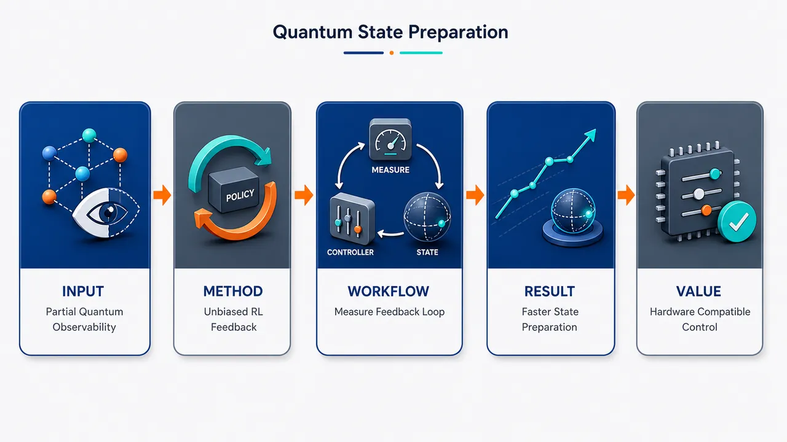
研究问题如何在真实实验只能看到噪声弱测量记录、无法访问完整量子态或一次性测得全部能量项的条件下，训练闭环控制器高效制备多体基态与 GHZ 纠缠资源态；核心矛盾是“部分可观测量子系统”中信息获取、测量反作用和反馈控制必须同时优化。创新方法提出实验兼容的测量–反馈强化学习框架：将量子态制备建模为 POMDP，用 GRU 记忆历史测量记录，实时同时选择“下一步测量算符”和“当前反馈操作”；Aha 点是终端奖励只随机抽取一个哈密顿量分量做单次测量，并用重要性加权构造对总能量的无偏估计，从而绕开全态层析和不对易能量项的全量测量。工作流程从简单可制备初态开始，如 Bose–Hubbard 的 |1,1,1,1⟩ 或全自旋向上态；每个时间步先按策略给出的权重组合弱测量算符，获得带噪声读数；GRU 接收测量权重与读数，输出反馈权重和下一步测量权重；系统经历测量反作用与反馈幺正演化；终点随机选择一个哈密顿量项测量，生成无偏能量奖励；PPO 用多条轨迹更新策略，逐步学习将系统推向低能目标态。关键结果四站点单位填充 Bose–Hubbard 模型中，在固定测量强度 γ/J=0.3 下，策略覆盖 U/J=0、3、5 三个区域；非相互作用情形在 γT=1.2 收敛，明显快于 Wu 等手工/贝叶斯优化方案所需的 γT>3；强相互作用和近临界区域也比固定反馈更稳健。四比特 GHZ 任务中，仅用单比特 Z 型弱测量和 Y 型反馈旋转，就能使能量接近稳定子父哈密顿量基态值 Egs=-4，表明可生成高保真纠缠态。应用价值为量子模拟、量子计算和纠缠资源态生成提供一条可接入实验闭环的状态制备路线：控制阶段只需实时测量记录，训练奖励只需单次随机哈密顿量项测量，不依赖全量子态重构；可扩展到多体基态制备、稳定子资源态、量子纠错码空间初始化和更广泛的实时量子反馈控制。第一部分：核心概览
该研究提出一种面向实验可实现性的测量–反馈量子态制备强化学习框架：控制器只依赖实时弱测量记录，在部分可观测条件下同时选择测量算符与反馈操作；训练奖励由随机抽样的哈密顿量分量的一次测量构造，保持对总能量的无偏估计，避免全量子态重构。数值结果覆盖四站点 Bose–Hubbard 基态与四比特 GHZ 态制备，展示其相对手工反馈策略的自适应优势。
---
第二部分：结构化快速回顾
《Experiment-compatible measurement--feedback quantum state preparation with reinforcement learning》（None，）
背景
多体基态制备是量子模拟、量子计算和纠缠资源态生成的核心任务。传统方案存在明显瓶颈：绝热演化在小能隙和临界点附近变慢，工程耗散依赖精细设计的跃迁算符，VQE 需要大量测量并面临复杂优化景观。测量–反馈控制可利用测量反作用作为控制资源，但现有策略多依赖手工设计或仿真中不可获得的全态信息。
方法
量子态制备被建模为部分可观测马尔可夫决策过程（POMDP）。控制器采用 GRU recurrent network，输入历史测量权重与噪声测量结果，输出反馈权重和下一步测量权重。训练采用 PPO。终端奖励通过随机选择一个哈密顿量分量并进行单次测量得到，经重要性加权形成对负总能量的无偏估计。
结果
在四站点、单位填充 Bose–Hubbard model 中，固定测量强度为 (γ/J=0.3)，覆盖 (U/J=0)、(U/J=5)、(U/J=3) 三个区域。非相互作用情形在 (γ T=1.2) 收敛，而既有 Wu 等方案在同设定下需要 (γ T>3)。GHZ 任务中，仅用单比特 (Z) 型弱测量和 (Y) 型反馈旋转，即可使能量接近 (Egₛ=-4)。
讨论
核心机制是同时学习测量选择与反馈控制，使策略在信息获取与测量反作用之间动态权衡。随机哈密顿量分量奖励解决了不同哈密顿量项测量基不兼容的问题，使训练环节不再依赖全态访问或密集能量轨迹。
局限
数值验证规模较小：Bose–Hubbard 仅为四站点，GHZ 仅为四比特。缺少真实硬件实验、噪声模型系统扫描、训练样本复杂度、网络结构超参数、PPO 训练轮数、保真度数值和误差条以外的统计显著性检验。
结论
该框架建立了面向实验闭环控制的强化学习量子态制备路线：以测量记录驱动递归策略，以单次随机哈密顿量测量构造无偏奖励，可用于多体基态制备和纠缠资源态生成，并具备向量子计算、量子纠错和更广泛闭环量子控制扩展的潜力。
---
第三部分：逐章节冷凝解析
Abstract
- Ground-state preparation is positioned as a foundational task
基态制备被界定为量子模拟和量子计算中的关键任务，因为它直接支撑关联相研究与纠缠资源态生成；摘要以 *"Ground-state preparation is a critical task in quantum simulation and quantum computing"* 开场，并进一步指出其作用在于 *"the study of correlated phases and the generation of entangled resource states"*。这一定义把目标从单纯求低能态扩展到相结构探测和资源态制备两个方向。
- Existing measurement–feedback schemes lack experimental compatibility or scalability
现有测量–反馈控制方案的主要缺陷有两类：一类依赖人工构造、任务专用策略；另一类在设计和训练阶段使用实验中不可直接获得的全量子态信息。摘要明确指出，已有方案 *"either rely on handcrafted, task-specific policies or are designed using full quantum-state information that is unavailable in real experiments and becomes impractical for large many-body systems"*。核心问题不是测量–反馈思想本身无效，而是训练信号和控制信息不符合实验可观测性。
- Partial observability is treated as the correct control formulation
控制器只使用实验中可获得的测量结果历史，而不是波函数、密度矩阵或精确能量轨迹。摘要表述为 *"an adaptive measurement–feedback protocol based on reinforcement learning under partial observability"*，并强调控制器 *"uses only the history of experimentally accessible measurement outcomes"*。这意味着状态制备被视为部分可观测控制问题，历史信息通过递归网络压缩为策略内部记忆。
- The action space jointly includes measurement operators and feedback actions
策略不是只调反馈场，而是同时决定下一步测量哪个可观测量以及施加什么反馈操作。摘要写明控制器 *"choose both the measurement operator and the feedback action in real time"*。这一点是控制自由度的重要扩展：测量本身既提供信息，也通过反作用改变系统，因此测量选择成为主动控制资源。
- The reward is single-shot, stochastic, and energy-unbiased
为避免训练中奖励依赖全态重构，终端奖励由随机抽样的哈密顿量分量的一次测量生成。摘要明确给出设计目标：*"a stochastic terminal reward built from one-shot measurements of randomly sampled Hamiltonian components"*，并强调其优势是 *"avoiding unphysical full-state reconstruction while remaining an unbiased estimator of the target energy"*。这种奖励把能量最小化目标转化为实验中可执行的随机估计问题。
- Demonstrations cover both many-body ground states and entangled resource states
数值验证包含 Bose–Hubbard model 基态制备和 GHZ states 生成；摘要写道 *"preparing ground states of the Bose–Hubbard model and by generating GHZ states"*。结论性定位是建立 *"a scalable and hardware-compatible route to quantum state preparation"*，即强调可扩展性与硬件兼容性，而不是仅在仿真中优化控制脉冲。
---
Introduction.
- Many-body ground states connect condensed matter, AMO physics, and quantum information
多体基态制备被放在跨领域背景中：既服务于凝聚态与 AMO 体系中的关联相模拟，也服务于量子信息中的资源态和编码空间。引言指出，基态制备 *"underpinning quantum simulation of correlated phases, the extraction of ground-state properties, and the generation of structured entanglement"*；并进一步说明 *"many resource states and code manifolds can be realized as ground spaces of engineered Hamiltonians"*。因此，目标哈密顿量的基空间可被用作纠缠资源态或量子纠错码流形。
- Standard preparation methods face complementary bottlenecks
三类主流方法各有瓶颈：绝热 ramp 在小能隙与临界点附近变慢，工程耗散需要精确设计 jump operators，VQE 需要大量测量并遭遇困难优化景观。引言直接列举：*"adiabatic ramps slow down near small gaps and critical points"*，*"engineered dissipation requires finely tuned jump operators"*，以及 *"variational schemes such as VQE demand heavy measurement overhead and contend with nontrivial optimization landscapes"*。这些障碍共同推动利用实验原生测量和反馈原语。
- Measurement–feedback control uses measurement backaction as a resource
测量反作用不被视为噪声，而被转化为控制资源。引言定义该机制为 *"Measurement–feedback control turns measurement backaction into a control resource"*，并说明其目标是 *"steering the system toward a target manifold through real-time closed-loop actions"*。在弱测量场景下，控制器只能接收带噪声的测量记录；同时，选择测量可观测量会决定信息获取与反作用方向，即 *"the choice of observable governs both information gain and backaction"*。
- Handcrafted feedback laws lack adaptivity and transferability
既有测量–反馈协议大量依赖固定反馈律和问题专用直觉。引言指出这些策略 *"often rely on fixed, handcrafted feedback laws"*，并且 *"demand problem-specific intuition and degrade outside their design regime"*。这说明人工策略通常只在特定哈密顿量、初态或参数区间有效，跨区域表现可能下降。
- Many machine-learning quantum-control methods rely on simulation-only signals
近期机器学习策略虽能学习自适应控制，但训练时常使用实验中不可获得的信号，例如全量子态或密集能量轨迹。引言指出 *"many train on signals available only in simulation, such as the full state or dense energy traces"*。这一批评尤其针对强化学习量子控制常见设定：环境状态被设为波函数或密度矩阵，奖励每一步由精确期望能量给出，而真实实验无法单轨迹获得这些信息。
- Incompatible measurement settings make single-shot energy evaluation nontrivial
哈密顿量不同项可能不对易，导致一次实验 shot 不能同时测量所有能量分量。引言强调 *"incompatible measurement settings across Hamiltonian terms mean a single shot can only reveal partial energy information"*。这正是终端随机奖励设计的动机：不能要求每条轨迹给出完整能量，只能通过随机抽样项构造无偏估计。
- The proposed framework is experimentally observable at every learning stage
核心方案被界定为 *"compatible with experimental observables at every stage of the learning loop"*。这包括：实时控制阶段只用测量记录，训练奖励阶段只用一次随机哈密顿量项测量；没有全态层析、没有完整能量期望、没有仿真特权信息。
- A recurrent policy handles the POMDP memory requirement
弱测量记录是有噪声且部分可观测的，单步观测不能完全确定量子态，因此策略需要历史依赖。引言表述为 *"train a history-dependent policy (implemented with a recurrent network)"*，并限定其输入为 *"the measurement record available in real time"*。递归网络在此承担类似量子滤波器的角色，但不显式重构全态。
- Measurement and feedback are jointly optimized online
策略 *"jointly selects the measured collective observable and the feedback action on the fly"*，其目的在于 *"balance information gain and measurement backaction across different dynamical regimes"*。这比仅学习反馈幅度更强，因为在弱测量控制中，测量方向本身是影响动力学轨迹的主动变量。
- Random Hamiltonian-term reward preserves energy optimization without full-state access
终端奖励来自 *"single-shot measurements of randomly sampled Hamiltonian terms"*，并通过 *"an unbiased weighting that targets the total energy while respecting incompatible measurement settings"* 实现对总能量目标的无偏优化。该思想与 VQE 中分组测量能量项类似，但嵌入了强化学习单轨迹终端奖励。
- Applications demonstrate improvement over fixed or handcrafted baselines
在相互作用多体模型中，学习到的闭环协议可达到比固定或手工测量–反馈基线更低的能量。引言给出概括性结果：*"the learned closed-loop protocol robustly drives the system to substantially lower energies than fixed or handcrafted measurement–feedback baselines"*。虽然引言未给出全部数值，但后文在 BHM 非相互作用情形给出与 Wu 等方案的收敛时间对比。
- Parent Hamiltonians allow GHZ generation within the same paradigm
通过构造基空间编码纠缠资源态的目标哈密顿量，同一策略可生成 GHZ 态。引言写明 *"by engineering target Hamiltonians whose ground spaces encode entangled resources"*，该策略提供 *"a Hamiltonian-based route to preparing states such as GHZ states"*。这里 GHZ 不是通过标准量子线路门序列制备，而是作为父哈密顿量基态被闭环稳定。
---
Measurement–feedback control process.
- Time evolution is discretized into weak-measurement intervals
连续测量–反馈动力学被离散化为长度 (δ t) 的短时间步。章节开头说明 *"partitioning time into short intervals of duration (δ t)"*，每个时间步中系统先相对于可观测量 (hat cₜ) 被弱测量，然后施加由 (hat Fₜ) 生成的反馈幺正。核心流程是 *"the system is weakly measured with respect to the observable (hatcₜ), and a feedback unitary generated by (hatFₜ) is applied"*。
- Weak measurement is represented by a Gaussian Kraus operator
对 Hermitian 可观测量 (hat cₜ) 的弱测量由 Kraus 算符表示：
[
hatMₜ(cₘ,ₜ)=
łeft(frac4γδ tπi̊ght)¹/⁴
e⁻²γδ t⁽hatcₜ⁻cₘ,ₜ⁾².
]
原始定义为 *"A weak measurement of the Hermitian observable (hatcₜ) with measurement strength (γ) is represented by the Kraus operator"*。这里 (cₘ,ₜ) 是连续测量读数，(γ) 是测量强度。
- Measurement outcomes are noisy Gaussian samples around the expectation value
测量结果 (cₘ,ₜ) 服从正态分布：
[
P(cₘ,ₜ)simN
łeft(μ=łanglehatcₜångle,
σ²=frac18γδ ti̊ght).
]
原文写为 *"(cₘ,ₜ) is the corresponding noisy measurement outcome that follows a normal distribution"*。均值是当前态下的 (łangle hat cₜångle)，方差随 (γδ t) 增大而减小。
- Measurement strength controls information gain versus backaction
(γ) 的物理含义是调节测量精度与扰动强度之间的权衡。章节明确说明 *"The parameter (γ) controls the trade-off between information gain and measurement backaction"*，并给出方向性关系：*"increasing (γ) improves the precision of the measurement outcome but also enhances the disturbance to the quantum state"*。因此，强测量更快获得信息，但也更强地投影或扰动系统。
- Feedback is chosen conditionally on the measurement result
反馈算符 (hat Fₜ) 根据当前测量结果 (cₘ,ₜ) 和策略选择。章节写道 *"Based on the measurement result (cₘ,ₜ), we choose the feedback operator (hatFₜ) according to our policy"*。这体现闭环控制：反馈不是预设时序，而是依赖实时测量记录。
- The unitary step includes native Hamiltonian and feedback Hamiltonian
单步总幺正为
[
hatUₜ=e⁻ⁱ⁽hatH⁺hatFₜ⁾δ t.
]
原文说明 *"The whole time-evolution unitary operator is given by"* 该式，并定义 (hat H) 为 *"the original system Hamiltonian"*。在 BHM 任务中 (hat H) 是物理 Bose–Hubbard 哈密顿量；在 GHZ 任务中后文明确无 native drift Hamiltonian。
- The complete state update combines measurement backaction and feedback evolution
单步态更新为
[
|ψ(t+δ t)ånglepropto
hatUₜhatMₜ(cₘ,ₜ)|ψ(t)ångle.
]
章节称其为 *"The full update of the system state"*。比例符号表示测量后的态需归一化。顺序上先作用测量 Kraus 算符，再作用反馈幺正。
---
Reinforcement learning.
- The control objective starts from experimentally accessible initial states
任务不是从任意理论态开始，而是从实验容易制备的初态开始，如 product state 或 fully polarized configuration。章节开头写明目标是 *"start from an experimentally accessible initial state—such as a product state or a fully polarized configuration"*，并通过测量–反馈过程将系统驱动到基态。
- The problem is formulated as a POMDP
控制器无法观测完整量子态，只接收噪声测量结果流，因此被建模为部分可观测马尔可夫决策过程。原文明确写道 *"We cast this task as a partially observable Markov decision process (POMDP)"*，其中控制器 *"receives only the noisy stream of measurement outcomes rather than full knowledge of the quantum state"*。这与全态仿真强化学习形成根本区别。
- Measurement observables and feedback operators are parameterized in fixed bases
动作由两个权重向量确定：
[
hatcₜ=sumᵢ αₜ,ᵢhat c⁽ⁱ⁾,qquad
hatFₜ=sumᵢ βₜ,ᵢhat F⁽ⁱ⁾.
]
章节说明 (hat c⁽ⁱ⁾)、(hat F⁽ⁱ⁾) 是 *"fixed basis operators"*，因此 *"the weight vectors (boldsymbolαₜ) and (boldsymbolβₜ) fully specify the measurement and feedback actions"*。这将连续算符选择问题转化为连续向量动作空间。
- The GRU policy maps measurement history to current feedback and next measurement
策略网络是 GRU recurrent network。输入包括刚使用的测量权重 (boldsymbolαₜ) 与测量结果 (cₘ,ₜ)，输出反馈权重 (boldsymbolβₜ) 和下一步测量权重 (boldsymbolαₜ₊₁)。原文表述为 *"A GRU recurrent network observes the measurement weights (boldsymbolαₜ) just used and the measurement outcome (cₘ,ₜ), then outputs the feedback weights (boldsymbolβₜ) and the next measurement weights (boldsymbolαₜ₊₁)"*。
- The next measurement can be chosen in the same forward pass
因为在记录 (cₘ,ₜ) 后反馈演化是确定的，下一步测量权重可与当前反馈权重同时输出。原文解释为 *"Since the feedback evolution is deterministic after (cₘ,ₜ) is registered, (boldsymbolαₜ₊₁) can be produced in the same forward pass"*。这使实时闭环实现更紧凑：一次网络推理即可决定即时反馈和下一测量设置。
- The ideal reward is unavailable in a single experimental trajectory
理想奖励是末态负能量期望 (łangle-hat Hångle)，但单条轨迹无法获得期望值，因为期望值需要多次重复。章节指出 *"Ideally it would be the negative energy expectation (łangle-hatHångle) at the final state, but this is infeasible within a single trajectory"*，理由是 *"expectation values require averaging over multiple trajectories"*。
- Non-commuting Hamiltonian terms require incompatible measurements
哈密顿量不同项可能需要不同实验测量设置。Bose–Hubbard 例子中，动能项和相互作用项需不同成像方式：*"in the Bose–Hubbard model, the hopping term (hatHₘ̊ ₖᵢₙ) is measured via time-of-flight imaging while the interaction term (hatHₘ̊ ᵢₙₜ) uses in-situ imaging"*。因此不能在同一 shot 中同时得到完整能量。
- The terminal reward samples one Hamiltonian term with importance weighting
将哈密顿量写作 (hat H=sumₖhat Hₖ)。每次终端只以概率 (pₖ) 选取一个项 (hat Hₖ)，测量得到本征值 (Eₖᵢ)，奖励为
[
R=-frac1pₖEₖᵢ.
]
原文写道 *"one term (hatHₖ) is chosen with probability (pₖ) and measured, yielding eigenvalue (Eₖᵢ)"*，并定义 *"The importance-weighted reward (R=-frac1pₖEₖᵢ)"*。
- The stochastic reward is an unbiased estimator of negative total energy
该奖励的期望为
[
mathbb E[R]=-sumₖłangle hat Hₖångle=-łanglehat Hångle.
]
章节直接给出 *"is an unbiased estimator of the negative total energy"*。因此，虽然每条轨迹只测一个项，长期平均仍优化总能量目标。
- Reward centering reduces variance without changing the objective
第一种降方差方法是对每个哈密顿量项减去目标基态期望：
[
tilde Hₖ₌hat Hₖ₋łangle hat Hₖångle₀.
]
原文写为 *"we center each term at its target ground-state expectation"*，并说明使用奖励
[
R=-(1/pₖ₎tilde Eₖᵢ
]
后，*“has zero mean at the ground state for every sampled term, changing the objective only by a constant”*。这减少不同项之间的基线偏移。
- Optimal term sampling minimizes reward variance
第二种降方差方法是优化抽样概率。基态处奖励方差为
[
var(R)=sumₖfracłangletilde Hₖ²ångle₀pₖ.
]
在 (sumₖₚₖ₌₁) 约束下，最优选择为
[
pₖproptosqrtłangletilde Hₖ²ångle₀.
]
原文表述为 *"the variance ... is minimized under (sumₖ pₖ₌₁) by the choice (pₖproptosqrtłangletildeHₖ²ångle₀)"*。方差大的项被更频繁采样，从而降低重要性加权噪声。
- The reward remains experimentally compatible after variance reduction
居中与最优抽样不会破坏无偏性。章节总结为 *"Centering and optimal term sampling thus substantially suppress the variance while keeping the reward unbiased and experimentally compatible"*。关键是它只改变奖励常数和采样分布，不要求同一轨迹测量所有项。
- Training is no longer confined to full-state simulation environments
奖励设计使训练可以原则上接入实验轨迹，而非依赖仿真特权信息。原文指出训练 *"is no longer confined to simulation environments that rely on privileged access to the full quantum state and are ultimately limited by the exponential growth of Hilbert space"*。这回应了大规模多体系统中 Hilbert 空间指数增长的问题。
- PPO is used as the policy-gradient optimizer
策略参数通过 proximal policy optimization 优化，并使用 PureJaxRL 实现。章节写道 *"We optimize the parameters of the recurrent policy using proximal policy optimization (PPO, implemented with the PureJaxRL library)"*。PPO 的作用是 *"limits excessively large updates between successive iterations"*，提高训练稳定性。
- Training proceeds by collecting trajectories and updating from terminal stochastic returns
每轮训练中，智能体与测量–反馈环交互，采集轨迹，基于随机终端奖励估计 returns 和 advantages，再更新策略。原文给出流程：*"the agent interacts with the measurement–feedback loop to collect trajectories, estimates the corresponding returns and advantages from the stochastic terminal reward, and updates the policy accordingly"*。重复该过程后得到闭环策略，能够 *"progressively drives the system toward the target low-energy state"*。
---
Numerical demonstrations under experimental constraints.
- Two task classes test both ground states and entangled states
数值验证包含两个代表性任务：Bose–Hubbard model 基态制备和 GHZ-state preparation。章节开头写道 *"We illustrate the proposed framework on two representative tasks: ground-state preparation in the Bose–Hubbard model (BHM) and GHZ-state preparation"*。共同约束是控制器只使用实验可获得测量结果：*"The controller uses only the measurement outcomes available in experiment"*。
- BHM Hamiltonian includes hopping and onsite interaction
一维四站点单位填充 BHM 的哈密顿量为
[
hat HBHM
=
-Jsumᵢ₍hat aᵢ^daggerhat aᵢ₊₁+H.c.)
+frac U2sumᵢhat nᵢ₍hat nᵢ₋₁₎.
]
原文说明 *"The Hamiltonian contains only hopping and onsite interaction terms"*。其中 (J) 控制隧穿，(U) 控制 onsite 相互作用。
- The BHM system size and filling are explicitly fixed
BHM 任务是 *"the one-dimensional four-site Bose–Hubbard model at unit filling"*。这意味着总粒子数等于站点数，即四个玻色子分布在四个格点上。该规模足以展示相互作用区域差异，但仍是小规模精确数值可处理系统。
- BHM measurement and feedback follow density-profile measurement and hopping feedback
参照 Wu 等的算符选择，测量与反馈为
[
hat cₜ₌sumⱼαₜ,ⱼhat nⱼ,
quad
hat Fₜ₌₍βₜ,₁+iβₜ,₂)
sumⱼhat aⱼ^daggerhat aⱼ₊₁+H.c.
]
原文写道 *"we take the measured observable and feedback operator to be"* 该式。策略自适应选择 density-weighted measurement profile 和 complex hopping-feedback amplitude，即 *"the policy adaptively chooses the density-weighted measurement profile and the complex hopping-feedback amplitude"*。
- BHM tests three interaction regimes at fixed measurement strength
三个区域分别是非相互作用、强相互作用和近临界：(U/J=0)、(U/J=5)、(U/J=3)。图注和正文给出 *"non-interacting ((U/J=0)), strong-interaction ((U/J=5)), and near-critical ((U/J=3)) regimes"*，固定测量强度为 (γ/J=0.3)，即 *"with measurement strength (γ/J=0.3)"*。
- BHM initial state includes controlled preparation imperfections
初态为单位填充乘积态 (|1,1,1,1ångle)，并混入 10% 单粒子–空穴激发以模拟制备误差。原文写明 *"initializing in the unit-filling product state (|1,1,1,1ångle) with a (10%) admixture of single particle–hole excitations to model preparation imperfections"*。这比理想纯初态更接近实验不完美制备。
- BHM energy trajectories are statistically visualized over sampled and ensemble episodes
图 2 图注说明：细彩线为 100 条采样轨迹，粗线为 ensemble mean，阴影为 1000 episodes 上的 (±1) 标准差，虚线为精确基态能量。原文为 *"Thin colored lines show 100 sampled trajectories, the bold line is the ensemble mean, and the shaded region indicates (± 1) standard deviation over 1000 episodes"*，以及 *"The dashed line marks the exact ground-state energy (Egₛ)"*。
- Non-interacting BHM converges faster than the Wu et al. baseline
在 (U/J=0) 非相互作用情形，该协议在 (γ T=1.2) 收敛，而 Wu 等方案在相同设定下需要 (γ T>3)。原文给出直接对比：*"the non-interacting case converges by (γ T=1.2), whereas the protocol of Wu et al. requires (γ T>3) in the same setting"*。这是全文最明确的定量性能比较。
- Strong-interaction BHM outperforms fixed-feedback protocols
在 (U/J=5) 强相互作用区域，自适应策略继续有效降低能量，并优于固定反馈协议。原文写道 *"In the strong-interaction regime, the adaptive policy continues to lower the energy efficiently and substantially outperforms fixed-feedback protocols"*，后者 *"fail to reach comparably low energies in the corresponding parameter range"*。这说明学习策略没有局限于弱相互作用或自由粒子极限。
- Near-critical BHM remains robust despite harder control
在 (U/J=3) 近临界区域，控制更困难，但学习策略仍能高效收敛。原文表述为 *"Near criticality, where control is generally more challenging, the learned policy remains robust and still converges efficiently"*。该点呼应传统绝热 ramp 在临界区附近变慢的背景问题。
- The same control architecture works across qualitatively different BHM regimes
三个区域共用同一底层控制架构，没有为不同 (U/J) 区域重新设计反馈律。章节总结为 *"the proposed framework can adapt across qualitatively different many-body regimes without changing the underlying control architecture"*。这体现出策略学习相对于手工规则的可迁移性。
- GHZ preparation starts from fully polarized spin-up states
GHZ 任务研究两个四比特例子，初态都是完全极化向上乘积态。原文写道 *"We study two four-qubit examples, both initialized in the fully polarized spin-up product state"*。这与 BHM 的单位填充乘积态一致，均从实验容易制备的简单态出发。
- The first GHZ target is a genuine four-partite GHZ state
第一目标态为
[
|GHZ₄ångle=
frac1sqrt2
(|p̆arrowp̆arrowp̆arrowp̆arrowångle+
|downarrowdownarrowdownarrowdownarrowångle).
]
原文定义为 *"The first target is a four-qubit GHZ state"*。其稳定子为 (Z₁Z₂)、(Z₂Z₃)、(Z₃Z₄)、(X₁X₂X₃X₄)，父哈密顿量为这些稳定子的负和，目标是 *"testing the generation of genuine four-partite entanglement"*。
- The second GHZ target is two independent Bell-like GHZ pairs
第二目标为
[
|GHZ₂øtimesGHZ₂ångle
=
frac12
(|p̆arrowp̆arrowångle+|downarrowdownarrowångle)₁₂
øtimes
(|p̆arrowp̆arrowångle+|downarrowdownarrowångle)₃₄.
]
原文称其为 *"a product of two two-qubit GHZ states on qubits (1,2) and (3,4)"*。稳定子为 (Z₁Z₂)、(X₁X₂)、(Z₃Z₄)、(X₃X₄)，用于测试框架是否能 *"simultaneously stabilize two independent entangled pairs"*。
- GHZ parent Hamiltonians define targets and rewards but not physical drift
与 BHM 不同，GHZ 父哈密顿量不参与闭环动力学，只定义目标和终端奖励。原文清楚区分：*"the GHZ parent Hamiltonian only defines the target and terminal reward; it is not applied during the closed-loop dynamics"*。实际反馈幺正为
[
hat Uₜ₌ₑ⁻ⁱhat Fₜδ t,
]
即 *"with no native drift Hamiltonian"*。
- GHZ control uses only single-qubit Z measurements and Y feedback
GHZ 例子中选择
[
hat cₜ₌sumᵢαₜ,ᵢZᵢ,qquad
hat Fₜ₌sumᵢβₜ,ᵢYᵢ,
]
固定测量强度 (γ=0.3)。原文写为 *"we choose (hatcₜ=sumᵢαₜ,ᵢZᵢ) and (hatFₜ=sumᵢβₜ,ᵢYᵢ)"*，并给出 *"at fixed strength (γ=0.3)"*。操作层面只有单比特项，但测量反作用可产生非局域纠缠结构。
- Entanglement arises from collective measurement backaction despite local operator sums
虽然 (hat cₜ) 和 (hat Fₜ) 都是单量子比特算符之和，协议仍能制备高度纠缠态。原文强调 *"Both (hatcₜ) and (hatFₜ) are sums of single-qubit operators, yet the protocol still prepares highly entangled states via collective measurement backaction"*。这一区别非常关键：纠缠不是通过显式两比特门注入，而是通过测量选择和反馈闭环累积形成。
- GHZ energies approach the stabilizer ground-state value
两个 GHZ 任务的能量均接近 (Egₛ=-4)。正文写道 *"in both cases the energy reaches close to (Egₛ=-4), indicating high-fidelity preparation"*；图 3 图注也重复 *"drives the energy close to (Egₛ=-4), preparing the target entangled states with high fidelity"*。由于父哈密顿量是四个稳定子的负和，理想稳定子态能量为 (-4)。
- The mechanism differs from circuit-based GHZ preparation
常规 GHZ 制备通常使用 CNOT 等两比特纠缠门；在中性原子阵列等平台中，两比特门依赖 Rydberg blockade 等直接相互作用。原文对比为 *"the mechanism differs from conventional circuit-based preparation, where GHZ states are typically built using two-qubit entangling operations such as CNOT gates"*，并补充这些门在某些平台中 *"rely on direct interactions, e.g., Rydberg blockade"*。本方案则通过测量反作用和反馈实现。
- GHZ parent Hamiltonians contain incompatible measurement components
GHZ 父哈密顿量分解为 (ZZ) 型和 (XX) 型分量，需要不同测量基。章节说明 *"The parent Hamiltonians separate into (ZZ)- and (XX)-type components requiring different measurement bases"*，这些分量 *"playing the role of the distinct terms (hatHₖ) above"*。这与前述随机哈密顿量项奖励完全对应。
- The framework generalizes from many-body ground states to quantum-computing resource states
数值演示的结论是同一测量–反馈强化学习框架可覆盖多体物理和量子信息任务。原文总结 *"The same framework thus extends from many-body ground-state preparation to entangled-state generation for quantum computing"*。这使该方法不仅是 BHM 专用控制器，而是父哈密顿量目标态制备范式。
---
Summary.
- The final framework operates entirely on experimentally accessible signals
总结再次强调实验可访问性：*"operates entirely on experimentally accessible signals"*。具体包括递归策略只根据测量记录作决策，终端奖励只由单个随机哈密顿量项的一次测量构造。不存在全态层析或完整能量期望读取。
- The recurrent POMDP policy jointly selects measurement and feedback
策略被描述为 *"a recurrent policy, trained as a POMDP"*，并且 *"jointly selects the measurement observable and feedback action from the measurement record"*。这凝练了全文控制层面的创新：部分可观测历史依赖策略与测量/反馈联合动作空间。
- The single-term stochastic reward provides an unbiased energy estimator
总结指出 *"a stochastic terminal reward built from a single randomly sampled Hamiltonian term provides an unbiased energy estimator without full-state access"*。这凝练了训练层面的创新：强化学习目标可通过实验单轨迹随机测量实现，并保持对总能量目标的无偏性。
- Demonstrations include BHM regimes and GHZ parent-Hamiltonian stabilization
数值结果显示学习策略可 *"prepares Bose–Hubbard ground states across different interaction regimes"*，并且 *"stabilizes GHZ states as ground states of suitable parent Hamiltonians"*。这覆盖连续变量玻色多体系统和离散量子比特稳定子态两类任务。
- The claimed route is scalable and hardware-compatible
总结将贡献定位为 *"a scalable, hardware-compatible route to both many-body ground-state preparation and entangled resource-state generation"*。这里的 scalable 主要来自两个方面：不要求全 Hilbert 空间态访问；奖励只需随机哈密顿量项测量。硬件兼容性来自只使用测量记录和实际可测终端项。
- Extensions include closed-loop quantum computing and error correction
总结提出自然扩展方向为 *"broader closed-loop control tasks in quantum computing and error correction"*。由于许多量子纠错码空间可作为稳定子哈密顿量基空间，该框架有潜力用于代码态制备、逻辑态稳定和实时反馈纠错。
---
Acknowledgments.
- External discussions involved measurement–feedback and related expertise
致谢对象为 Yadong Wu 和 Pengfei Zhang。原文为 *"We thank Yadong Wu and Pengfei Zhang for helpful discussions"*。Yadong Wu 同时出现在参考文献 [44]，其工作 *"Preparing quantum states by measurement-feedback control with bayesian optimization"* 是 BHM 控制算符选择与基线比较的重要来源。
---
第四部分：深度理解与语言支持
1. 术语解析
- Partial observability
字面是“部分可观测性”，在控制论和强化学习中指智能体无法直接访问完整环境状态，只能看到带噪声、不完整的观测。这里完整状态是量子波函数或密度矩阵，实验中只能得到测量结果 (cₘ,ₜ)。因此策略必须从历史测量记录中推断“足够控制所需的信息”，而不是直接读取真实量子态。
- Measurement backaction
指量子测量不可避免地改变被测系统状态。弱测量中这种改变不是一次性完全投影，而是连续、随机、强度由 (γ) 控制的扰动。该研究的关键语义是把 backaction 从“破坏”转化为“资源”：通过选择测量算符，反作用可以把系统推向目标流形。
- Experiment-compatible
不是简单地“可在实验中运行”，而是要求学习闭环的每个环节都只使用实验可得信号。控制输入不能是全态，奖励不能是精确能量期望，终端评估不能依赖一次 shot 中同时测所有不对易项。该词强调训练协议本身也要硬件兼容。
- Unbiased estimator
指随机变量的期望值等于目标量。这里单次奖励 (R=-(1/pₖ₎Eₖᵢ) 波动很大，但在抽样平均意义下满足 (mathbb E[R]=-łangle Hångle)。无偏不等于低方差；因此还需要居中与最优抽样来降低训练噪声。
- Parent Hamiltonian
指人为构造的哈密顿量，其基态或基空间正好是目标态或目标码空间。GHZ 任务中父哈密顿量不作为真实动力学哈密顿量施加，只用于定义“什么状态是目标”和“奖励如何测量”。这与 BHM 中真实物理哈密顿量参与演化不同。
2. 疑难查证
- 为什么单次只测一个哈密顿量项仍能训练总能量？
设目标能量为 (łangle Hångle=sumₖłangle Hₖångle)。每条轨迹终点只随机选一个 (Hₖ)，概率为 (pₖ)，测得本征值 (Eₖᵢ)，奖励设为 (-Eₖᵢ/pₖ)。对“选项随机性”和“量子测量随机性”同时取期望：
[
mathbb E[R]
=
sumₖ pₖ
łeft(-frac1pₖi̊ght)
mathbb E[Eₖᵢ|k]
=
-sumₖłangle Hₖångle
=
-łangle Hångle.
]
因此强化学习在期望意义上仍最大化负能量，即最小化总能量。代价是单条轨迹奖励噪声大，所以才引入居中和按标准差比例抽样。
- 为什么测量算符也要由策略选择？
在弱测量控制中，测量不是被动读数。选择 (hat cₜ) 会决定两件事：第一，测量记录包含关于哪个物理量的信息；第二，量子态会沿着 (hat cₜ) 的本征结构发生反作用演化。若固定测量算符，控制器只能在固定信息通道和固定反作用结构下工作；若自适应选择测量算符，控制器可以在早期优先获取诊断信息，在后期利用反作用稳定目标流形。
- 为什么 GRU 适合 POMDP？
单个弱测量结果 (cₘ,ₜ) 噪声很大，不能确定当前量子态。历史测量序列包含逐步积累的信息，类似连续量子测量中的滤波记录。GRU 的隐藏状态可把过去的 (αₜ)、(cₘ,ₜ) 压缩成内部记忆，从而在不显式重构波函数的情况下实现历史依赖控制。
- GHZ 中只有单比特 (Z) 测量和 (Y) 反馈，为什么能生成纠缠？
(hat cₜ₌sumᵢαᵢZᵢ) 是集体可观测量的线性组合，弱测量读数对应的是多个比特的共同信息，而不是完全独立地读取每个比特。集体测量会把态随机压缩到共享某些集体性质的子空间；再配合条件反馈旋转，可以逐步增强稳定子期望值。纠缠来源不是局域 (Yᵢ) 旋转本身，而是测量反作用诱导的非经典相关性与闭环反馈的结合。
---
第五部分：创新评估与关联
1. 创新性判断
- 从“仿真可训练”推进到“实验可训练”
过去 2–5 年大量强化学习量子控制工作可以在仿真中访问波函数、密度矩阵、保真度或精确能量轨迹；真实实验中这些量通常需要大量重复测量甚至层析。该研究的新颖性在于把训练奖励本身改造成单次随机哈密顿量项测量，使学习循环不依赖全态信息。解决的问题是：强化学习控制器不仅能在实验中执行，而且原则上能用实验轨迹训练。
- 将测量选择纳入强化学习动作空间
许多反馈策略只学习反馈场或控制脉冲，测量通道固定。该框架同时输出 (boldsymbolαₜ₊₁) 和 (boldsymbolβₜ)，使策略共同优化“测什么”和“怎么反馈”。这对于弱测量系统尤其重要，因为测量决定信息增益和反作用方向。相较手工测量–反馈律，创新点是自动发现跨动力学区域的测量–反馈协同策略。
- 用 POMDP 与递归策略替代全态输入策略
部分已有机器学习方案把环境状态设为完整量子态，导致训练设置与实验脱节，并且随系统规模指数增长。该框架把控制输入限制为测量结果历史，用 GRU 处理不完全观测。新颖性不在于单独使用 GRU 或 PPO，而在于将其严格绑定到实验可观测测量记录上。
- 解决不对易哈密顿量项的单轨迹奖励问题
量子能量评估常受限于不同哈密顿量项测量基不兼容。该研究用重要性采样的单项终端奖励解决“一次 shot 只能测一类项”的问题，并通过居中和最优抽样降低方差。这比直接把完整能量作为奖励更符合实验现实，也比固定只测某一项更能保持目标一致性。
- 统一多体基态制备与稳定子资源态制备
Bose–Hubbard 基态和 GHZ 稳定子态属于不同物理语境：前者是相互作用玻色多体模型，后者是量子信息资源态。通过父哈密顿量目标和随机能量项奖励，两者被统一到同一测量–反馈强化学习框架下。该统一性是方法学创新，而非只针对某个模型的控制技巧。
- 相对 Wu et al. Bayesian optimization measurement–feedback 的提升
Wu 等工作提供了测量–反馈制备量子态的贝叶斯优化路线，但控制结构更接近固定或低维手工参数搜索。该研究在 BHM 非相互作用情形给出明确量化优势：(γ T=1.2) 收敛，而 Wu 等方案在同设定下需要 (γ T>3)。更重要的是，新框架学习历史依赖策略，并可跨 (U/J=0,3,5) 三个区域运行。
- 主要未完全解决的问题
可扩展性仍主要是概念和小规模数值层面的。四站点 BHM 与四比特 GHZ 尚不足以证明大规模训练效率；缺少真实实验部署、硬件噪声鲁棒性、训练样本数、网络超参数、PPO 细节、最终保真度数值和统计显著性指标。创新点明确，但“scalable”仍需要更大系统和实验闭环验证来支撑。
-
02
📊 含图深析
💡 亮点：k 阶量子先验为混沌预测量子优势建模。
📖 展开分析 + 配图
研究问题混沌系统长期预测会因 Lyapunov 敏感性失去逐点可预测性，核心问题是：如何让量子设备不再只是生成“难采样分布”，而是紧凑存储混沌不变测度的低阶空间统计，并高效读出可服务经典预测模型的相关量，从而改善湍流与天气等高维混沌场的长时 rollout。创新方法提出 k-indexed Q-Prior：把 k 个空间位置、每点 2^q 个离散 bin 的联合不变测度边缘，编码到 n_q=kq 个量子比特生成态中；用纠缠承载非可分空间相关，用两拷贝 Bell 基联合测量在查询 Pauli 算符之后仍可估计任意 Pauli 泛函。Aha 点是：量子设备作为“统计记忆模块”，训练一次后可被反复读取，而不是替代整个预测器。工作流程输入混沌系统历史数据场，例如湍流速度场或 ERA5 Z500 天气场；选取 k 个空间点并将每点数值离散为 2^q 个 bin；训练参数化量子生成器，使其低阶边缘或矩匹配不变测度统计；用 Bell 两拷贝测量读取 Pauli 相关量或用对角 Q-Prior 生成协方差目标；将这些统计先验作为正则项注入 Koopman recurrent rollout；输出更稳定的长时预测轨迹、相关统计和预报评分。关键结果理论上，显式经典 k 点联合表需要 2kq-1 个参数，而可有效制备的 Q-Prior 只需 poly(kq) 参数；Bell 读出任意事后 Pauli 泛函的 copy-pair 数为 O(η⁻⁴log(1/δ))，与量子比特数无关，而自适应单拷贝 full-Pauli 读出需 Ω(2kq) 拷贝。实验上，湍流方向相干 C(r) 可由 Bell 读出恢复；ERA5 中 k≤2 Q-Prior 使 Koopman 的 48–240 h ACC 提升 10–39%，48 h RMSE 降低约 13%，并缓解长时预测塌缩为静态均值场。应用价值为噪声中等规模量子设备提供一条实用量子优势路径：量子模块负责压缩记忆和读取混沌不变测度统计，经典模型负责高维动力学预测。该框架可用于湍流、天气预报等需要保持长期统计真实性的科学机器学习任务，尤其适合抑制 recurrent 模型漂移、冻结和均值场塌缩。第一部分：核心概览 (Overview)
这项研究提出面向混沌动力系统预测的 Q-Prior 理论框架，把量子生成态作为低阶不变测度边缘分布的统计记忆模块。核心贡献是证明两阶段优势：表示阶段用 (n_q=kq) 个量子比特紧凑承载非可分空间相关；读取阶段用两拷贝 Bell 测量在与 (n_q) 无关的拷贝数下估计事后 Pauli 泛函，而自适应单拷贝协议需 (Ømega(2kq)) 拷贝。实证上，湍流通道流给出非对角物理相关量，ERA5 天气预报中 (kłe2) Q-Prior 将 48–240 h ACC 提升 10–39%，构成噪声中等规模量子设备时代的候选实用量子优势路径。
---
第二部分：结构化快速回顾
《Foundations of Practical Quantum Advantage in Quantum-Informed Machine Learning for Predicting Chaos》（None，）
背景
科学机器学习中的数据通常是经典、高维、任务相关的，量子优势不能仅依赖难采样分布，而必须落实到可紧凑表示、可高效读出、可服务下游模型的统计量。混沌系统提供自然目标：长期统计由不变测度支配，长时预测更依赖统计保真度而非逐点可预测性。
方法
构造 (k)-indexed Q-Prior 家族：每个空间位置离散为 (B=2^q) 个 bin，(k) 点联合边缘由 (n_q=kq) 个量子比特生成态表示。读取阶段使用两份训练态的 Bell-basis joint measurement，在查询 Pauli 算符事后给出后，估计 (|tr(Oh̊o)|)。
结果
表示阶段：显式经典联合表需 (2kq-1) 个参数，若目标可由多项式规模线路制备，Q-Prior 只需 (poly(kq)) 参数。读取阶段：Bell 测量需 (M_Q=O(η⁻⁴łog(1/δ))) 拷贝对，与 (n_q) 无关；任意自适应单拷贝 full-Pauli 读出需 (M_C=Ømega(2kq))。
讨论
湍流通道流中，速度方向相位产生非对角相关量 directional coherence，可由 Bell 读出获得。ERA5 中，(kłe2) 对角 Q-Prior 作为协方差正则项嵌入 Koopman rollout，改善中期天气预测并缓解长时静态均值场塌缩。
局限
优势依赖两个条件：目标不变测度必须包含非可分、空间扩展相关；低阶边缘必须能由多项式资源参数化量子线路有效制备。ERA5 主实验使用对角 (kłe2) Q-Prior，因此 full-Pauli 读取下界不直接作用于该应用场景。
结论
Q-Prior 将量子设备定位为统计记忆模块，而非完整预测器：量子部分存储并读取不变测度统计泛函，经典模型负责高维 rollout。理论分离与混沌科学工作流实例共同支持一种容错量子计算前的实用量子优势候选机制。
---
第三部分：逐章节冷凝解析
Abstract
Practical quantum advantage is framed around chaotic invariant measures.
核心目标是为 quantum-informed machine learning, QIML 在混沌系统预测中建立实用量子优势机制。研究对象不是任意经典数据，而是具有明确不变测度 invariant measure的混沌动力系统；Q-Prior 被定义为可承载该不变测度低阶边缘统计的量子统计先验。摘要中直接给出问题定位：*"We develop theoretical foundations for a practical quantum-advantage mechanism in quantum-informed machine learning for chaotic dynamical systems."*
Q-Prior extends single-site priors to higher-order spatial marginals.
新框架从已有单点先验扩展到 (k)-点联合结构：(n_q=kq) 个量子比特承载 (k)-point marginal。每个空间点离散为 (2^q) 个 bin，(k) 个点联合产生 (2kq) 个计算基结果。摘要明确指出：*"A family of k-indexed higher-order quantum statistical priors (Q-Priors) hosts the k-point marginal of the invariant measure on (n_q=kq) qubits, extending the single-site construction of prior work."*
Two-stage advantage combines representation and extraction.
优势分成两个层级：表示阶段通过叠加 superposition和纠缠 entanglement存储非可分空间相关；读取阶段通过两拷贝 Bell 测量估计 Pauli 泛函。核心理论声明是：*"We prove a two-stage advantage. In the representation stage, superposition and entanglement compactly store non-factorisable spatial correlations of the invariant measure on (n_q) qubits."*
Bell read-out gives an exponential copy-measurement separation.
读取阶段的量子—经典分离以拷贝复杂度表述：两拷贝 Bell 测量估计任意事后 Pauli 泛函所需 copy-pair 数与 (n_q) 无关；自适应单拷贝 full-Pauli 协议需指数多拷贝。摘要中的关键证据是：*"joint Bell measurements on two copies estimate any post hoc Pauli functional with a copy-pair count independent of (n_q), whereas any adaptive single-copy protocol for the corresponding full-Pauli read-out requires (Ømega(2ⁿ_q)) copies."*
Empirical instantiations span turbulence and weather.
两个案例服务不同证据链：湍流通道流展示非对角相关量；ERA5 展示对角 (kłe2) Q-Prior 对中期天气预报的下游改善。摘要给出精确效果：*"improves anomaly-correlation skill by 10–39% across 48–240 h lead times, and reduces the long-horizon collapse of rollouts onto a static mean field."*
---
I Introduction
Quantum advantage in scientific machine learning differs from sampling advantage.
已有量子优势实验主要是随机线路采样和高斯玻色采样，优势来自多体量子干涉产生经典难采样分布；科学机器学习的任务则不以生成难采样分布为终点，而是要服务具体科学统计量。原文形成鲜明对比：*"The clearest experimental demonstrations of quantum computational advantage to date have been sampling experiments, most notably random circuit sampling and Gaussian boson sampling"*；但科学机器学习中，*"the useful target of a quantum advantage is not a hard distribution, but a statistic that can be compactly represented, efficiently read out, and effectively coupled to a downstream model."*
Classical scientific data create loading and read-out bottlenecks.
数据通常是经典高维场，量子设备可能在输入加载和输出读取处丧失优势。文中用三重属性刻画任务画像：*"Datasets that arise in problems of economic and scientific value often share a recognisable profile: they are classical, high-dimensional and task-dependent."* 随后指出瓶颈：*"A quantum advantage can therefore be lost either when classical fields are loaded into the quantum device or when useful information is extracted back into classical form."*
Practical quantum advantage requires both proof and scientific instantiation.
实用量子优势被定义为两个条件共同成立：一是一般问题类上存在可证明的量子—经典资源分离；二是该机制在独立科学价值工作流中实证落地。定义原文为：*"A practical quantum advantage in scientific machine learning holds when two conditions are met jointly: (i) a provable quantum–classical separation in a task-relevant computational resource, established for a general class of problems; and (ii) an empirical instantiation of the resulting advantage mechanism within a workflow that addresses a problem of independent scientific value."*
Invariant measure is the natural statistical target for chaos.
混沌系统长时逐点预测受 Lyapunov 时间限制，但其长期统计由不变测度定义。因此相比一般生成建模，不变测度提供物理上规范的目标统计对象。原文强调：*"chaotic dynamical systems provide a natural target statistic: the invariant measure of the underlying flow."* 适用范围也被限定：*"We therefore restrict the present theory and case study to systems where this object is physically well defined."*
QIML is extended from single-site to multi-site Q-Priors.
已有 Wang et al. 的 QIML 使用单点量子统计先验；当前框架将其扩展到 (k)-indexed 家族，(k=1) 恢复单点，(k>1) 捕获多点联合结构。关键句为：*"Here we extend that construction to a k-indexed family of quantum statistical priors (Q-Priors), parametrised by the order k and the class of Pauli observables extracted at read-out."* 继承关系明确：*"The (k=1) member recovers the single-site case of Wang et al.; (k>1) members capture multi-site joint structure not present in the single-site case."*
Train-once reuse avoids repeated loading of full fields.
Q-Prior 不是每次预测都重新加载完整高维场，而是训练一次后反复向下游模型提供低阶边缘和相关统计。这直接针对 loading/read-out 问题。原文表述为：*"The device learns a compact statistical prior once, and the same trained prior supplies reusable low-order marginal and correlation statistics to the downstream classical predictor."* 机制优势在于：*"It avoids repeated loading of full fields during downstream inference and concentrates measurement on a reusable statistical object, addressing the loading and read-out problems together rather than separately."*
Quantum device acts as a statistical-memory module.
量子设备的角色被限定为统计记忆，而非全流程动力学预测器。它存储低阶不变测度统计，经典模型负责高维预测与 rollout。原文给出模块化分工：*"the quantum device acts as a statistical-memory module: it prepares a compact generative representation of low-order joint statistics of the system’s invariant measure"*；同时，*"The classical model retains responsibility for high-dimensional prediction and rollout."*
Representation advantage relies on Hilbert-space support and entanglement.
(n_q=kq) 个量子比特给出 (2ⁿ_q) 维 Hilbert 空间，Born 概率定义 (2ⁿ_q) 个计算基结果分布；纠缠门使权重非可分，从而存储空间相关。原文为：*"the representation stage is architectural: (n_q=kq) qubits provide a (2ⁿ_q)-dimensional Hilbert space whose Born probabilities define a distribution over (2ⁿ_q) computational-basis outcomes, with superposition supplying the exponentially large support and entangling gates allowing non-factorisable correlations to be stored compactly."*
Extraction advantage follows from two-copy Bell geometry.
读取优势是信息论层面的，Bell-basis 两拷贝测量可在查询后估计 Pauli 统计；自适应单拷贝协议需 (Ømega(2kq)) 拷贝。原文精确定义：*"Bell-basis measurements on two copies of the trained generator state estimate post hoc Pauli statistics with copy complexity independent of (n_q), whereas any adaptive single-copy protocol ... requires (M_C=Ømega(2kq)) copies."*
Contribution differs from Huang et al. measurement-tree separations.
Bell 测量原语并非全新；新颖点在于将该原语与可训练的科学统计先验结合，把黑箱态学习分离转化为数据导出的 Q-Prior 可复用读出机制。原文界定贡献边界：*"Our contribution is not that primitive but the mechanism it serves"*；更具体地，*"This turns a separation about learning black-box states into a constructive, reusable read-out primitive for a data-derived scientific prior: train once, then estimate post hoc any Pauli functional and feed it to a downstream classical predictor."*
Weather forecasting is positioned as a high-value chaotic workflow.
ERA5 天气案例被用来测试对角 (kłe2) Q-Prior 是否能稳定 Koopman rollout。数据和基准环境明确：*"The European Centre for Medium-Range Weather Forecasts (ECMWF) ERA5 reanalysis and the WeatherBench medium-range forecasting benchmark define controlled global references."* 结果预告为：*"the prior reduces 48 h root-mean-square error (RMSE) by about 13% and improves anomaly correlation coefficient (ACC) by 10–39% across 48–240 h lead times."*
---
II Q-Prior mechanism and two-stage advantage
Q-Prior is a sample-based quantum statistical prior.
Q-Prior 由参数化生成器产生，用于编码经典混沌系统不变测度的低阶统计。它不是完整概率表访问，而是一个训练后的量子生成态及其受约束统计。章节开头定义为：*"A Q-Prior is a sample-based quantum statistical prior produced by a parametrised generator and intended to encode the low-order statistics of the invariant measure of a classical chaotic dynamical system."*
The generator state is defined on (n_q=kq) qubits.
对 (k) 个空间位置，每个位置离散为 (B=2^q) 个 bin，生成器在 (n_q=kq) 个量子比特上制备纯态：
[
h̊o⁽k⁾θ=U(θ)|0ⁿ_qånglełangle 0ⁿ_q|U^dagger(θ),quad
p_θ(s)=|łangle s|U(θ)|0ⁿ_qångle|².
]
原文说明：*"For (k) spatial locations modelled jointly by the Q-Prior, each discretised into (B=2^q) bins, the generator acts on (n_q=kq) qubits and prepares a pure state."*
Training targets selected marginals or moments, not the full distribution.
训练只要求所选低阶边缘或矩匹配目标，而非显式学习所有 (2ⁿ_q) 个概率。原文非常关键：*"training adjusts (θ) from finite data so that chosen low-order marginals or moments of (h̊o⁽k⁾_θ) track targets."* 学到的对象也被限定为：*"The learned object is this fitted generator state and its empirically constrained statistics, not access to the full (p_θ) over all (2ⁿ_q) outcomes."*
The (k)-point marginal is expressed through projectors.
对 bin (bₗ) 和位置 (iₗ)，边缘概率为：
[
mathcal P⁽k⁾_θ(b₁,łdots,bₖ₎
=trłeft[łeft(bigotimesₗ₌₁kΠᵢ_ₗ,b_ₗi̊ght)h̊o⁽k⁾_θi̊ght].
]
该式使 Q-Prior 的统计对象精确对应于 (k) 点联合边缘。原文写明：*"For projectors (Πᵢ_ₗ,b_ₗ) ... the corresponding marginal is (P⁽k⁾θ(b₁,łdots,bₖ₎₌ₜᵣ[ḑots])."*
Q-Prior approximates low-order marginals of the physical invariant measure.
Q-Prior 的物理解释是不变测度 (μ) 的参数化低阶边缘近似。文中明确：*"A Q-Prior (p_θ) is most naturally read as a parametrised approximation of a low-order marginal of the physical invariant measure (μ)."* 多点扩展的意义在于：*"The k-indexed family extends the single-site estimator ... to multi-site joint marginals of (μ), accessing spatial correlations of (μ) that the single-site case does not resolve."*
Long-horizon learning targets statistical fidelity rather than pointwise predictability.
混沌 rollout 中逐点误差不可避免增长，但长期分布趋向不变测度，因此正则化 (μ) 的统计结构更适合长时预测。原文为：*"For chaotic rollouts, pointwise predictability decays on the Lyapunov time, but the rollout distribution converges to (μ) in the ergodic limit; statistical fidelity to (μ) therefore remains a meaningful long-horizon target."*
Koopman dynamics and Q-Prior statistics play dual roles.
Koopman 组件负责动力学算子侧，Q-Prior 负责不变测度侧，即 Perron–Frobenius 对偶作用的固定点。原文指出：*"The Koopman autoregressive component handles the operator side of the dynamics, while the Q-Prior supplies the invariant-measure side, the fixed point of the dual Perron–Frobenius action."*
Weather regularizer enforces second-moment invariant-measure consistency.
ERA5 案例使用 (kłe2) Q-Prior 通过协方差正则进入损失：
[
mathcal Lₜₒₜ=mathcal Lᵣₑc+łambda|widehatΣₜ₋Σ_Q|_F².
]
(widehatΣₜ) 是以 forecast time (t) 结尾的滑动窗口 rollout 状态经验协方差。原文为：*"where (widehatΣₜ) is the empirical covariance of the rollout state over a sliding window ending at forecast time (t)."* 其物理含义是：*"Equation (3) enforces the dynamics–measure duality at the level of second moments."*
Result 1 gives the representation-stage storage comparison.
显式经典 (k) 点联合表需要
[
N_C=B^k-1=2kq-1
]
个独立参数；完全因子化单点模型需要
[
Nₚᵣₒd=k(B-1)=k(2^q-1)
]
个参数但无站点间相关；若目标可由多项式规模线路固定精度制备，则 Q-Prior 需
[
N_Q=poly(n_q).
]
原文完整陈述：*"An explicit classical table of the full joint distribution requires (N_C=B^k-1=2kq-1) independent parameters, while a fully factorised single-site product model requires (Nₚᵣₒd=k(B-1)=k(2^q-1)) parameters and carries no inter-site correlation."*
Entanglement is identified as the physical resource for non-factorisable correlations.
Result 1 不是单纯说 Hilbert 空间大，而是说纠缠跨空间分区存储非可分联合结构。原文直接指出：*"Entanglement across the site partition is the physical resource that stores the non-factorisable correlations."*
Post hoc Pauli read-out is defined as a reusable-statistics task.
读取阶段设定：测量发生在查询揭示之前；之后给出 (OinI,X,Y,Zøtⁱmes ⁿ_q)，算法估计 (|tr(Oh̊o⁽k⁾_θ)|)，加性精度 (η)，失败概率至多 (δ)。原文为：*"Measurements are performed before the query is revealed. After this learning phase, a Pauli observable (OinI,X,Y,Zøtⁱmes ⁿ_q) is revealed, and the algorithm estimates (|tr(Oh̊o⁽k⁾_θ)|) to additive accuracy (η) with failure probability at most (δ)."*
Result 2 gives the extraction-stage exponential separation.
两拷贝 Bell 测量对任意 Pauli (O) 的估计需
[
M_Q=Ołeft(η⁻⁴łogfrac1δi̊ght)
]
个 copy pairs，固定精度和置信度下与 (n_q) 无关；任意自适应单拷贝协议需
[
M_C=Ømega(2kq).
]
原文陈述为：*"joint Bell measurements on two copies estimate (|tr(Oh̊o)|) for any Pauli (O) using (M_Q=O(η⁻⁴łogfrac1δ)) copy pairs, independent of (n_q)."* 下界为：*"Any adaptive single-copy protocol for the corresponding full Pauli read-out task requires (M_C=Ømega(2kq)) copies."*
Bell measurement estimates squared Pauli expectation through simultaneous eigenvalues.
每对对应量子比特在 Bell 基测量；Bell 态同时是 (σøtimesσ) 的本征态，(σinX,Y,Z)。对 Pauli string (P=σ₁øtimesḑotsøtimesσₙ_q)，Bell 本征值乘积是 ([tr(Ph̊o)]²) 的无偏估计。原文为：*"Each Bell outcome is a simultaneous eigenstate of (σøtimesσ) for (σinX,Y,Z)."* 以及：*"the product of the associated Bell eigenvalues gives an unbiased estimator of ([tr(Ph̊o)]²)."*
The (η⁻⁴) scaling comes from square-root conversion.
Hoeffding 集中给 ([tr(Ph̊o)]²) 的 (η²)-精度需要 (O(η⁻⁴łog(1/δ))) copy pairs；从平方值转换到绝对值 (|tr(Ph̊o)|) 造成 (η⁻⁴) 而非 (η⁻²)。原文解释：*"the square-root conversion to (|tr(Ph̊o)|) accounts for the (η⁻⁴) rather than (η⁻²) scaling."*
Classical shadows remain (n_q)-dependent.
经典 shadows 可作为单拷贝替代读出，但任意 Pauli observables 的样本复杂度为 (O(3ⁿ_q/η²⁾)，不能消除 (n_q) 依赖。原文为：*"Classical shadows provide an alternative single-copy read-out scheme with (O(3ⁿ_q/η²⁾) sample complexity for arbitrary Pauli observables, which remains (n_q)-dependent and does not close the separation."*
The lower bound uses a random Pauli hard family around the maximally mixed state.
下界构造以
[
h̊o₀₌I/2ⁿ_q
]
为中心，备选态为
[
h̊o⁽s,P⁾=(I+sα P)/2ⁿ_q,
]
其中 (P) 是均匀随机非恒等 Pauli，(s=±1)，(αin(0,1))。原文为：*"The hard family is centred at (h̊o₀₌I/2ⁿ_q) with alternatives (h̊o⁽s,P⁾=(I+sα P)/2ⁿ_q), where (P) is a uniformly random non-identity Pauli, (s=±1), and (αin(0,1)) is a fixed bias amplitude."*
Single-copy protocols have small average sensitivity to random Pauli directions.
Pauli–SWAP 恒等式给出任意单拷贝测量对随机 Pauli 方向的平均平方敏感度为 (1/(2ⁿ_q+1))，从 total variation bound 推得 (M_C=Ømega(2ⁿ_q)=Ømega(2kq))。原文证据是：*"The Pauli–SWAP identity implies that any single-copy measurement has average squared sensitivity (1/(2ⁿ_q+1)) to a uniformly random Pauli direction."* 结果为：*"The resulting total-variation bound forces the copy count to satisfy (M_C=Ømega(2ⁿ_q)=Ømega(2kq))."*
Bell geometry is the mechanism behind post hoc reuse.
Bell 测量记录一次即可包含所有 Pauli string 所需本征值信息，查询 Pauli 之后只需经典后处理；单拷贝测量必须在查询前选择方向。原文为：*"A single Bell measurement record on two copies therefore carries the eigenvalue information for every Pauli string simultaneously, and can be reused by classical post-processing to estimate any (|tr(Ph̊o)|) after the query is revealed."* 对比句为：*"Single-copy protocols lack this property: each single-copy measurement commits to a direction before the query is known."*
Result 3 combines storage and read-out into statistical-memory advantage.
中心公式为：
[
fracN_CN_Q=frac2kq-1poly(kq)=2Ømega⁽kq⁾,qquad
fracM_CM_Q=2Ømega⁽kq⁾.
]
原文定义：*"A trained Q-Prior is a quantum statistical-memory module: (n_q=kq) qubits compactly host an efficiently preparable approximation to the k-point invariant-measure marginal, and Bell read-out exposes Pauli functionals of that state."*
The storage claim is weaker than the read-out separation.
文中严谨承认：最优经典生成表示也可能高效，因此 Result 1 是相对显式表格和单点乘积模型的存储声明；真正操作性量子—经典分离来自 Result 2 的读取任务。原文为：*"an optimal classical generative representation may also be efficient, so Result 1 is a storage statement, and the operative quantum–classical separation is the read-out result of Result 2."*
Hardware demonstration uses trained ERA5 Q-Priors, not engineered benchmark states.
非对角读出实验直接在训练过的数据导出 Q-Prior 上执行，区别于构造的基准态。原文强调：*"Here we instantiate the post hoc Pauli read-out task in the non-diagonal regime, directly on trained Q-Priors rather than on engineered benchmark states."*
Simulation and hardware copy counts stay flat across (n_q=4,łdots,16).
在 (η=0.2,δ=0.1) 下，Bell copy-pair 计数在 (10³) 量级，模拟中 Pauli 读出中位数为 500–800；classical-shadow 成本按 (3ⁿ_q/η²) 增长，(n_q=16) 时约 (1.1×10⁹)，中位比值约 (1.3×10⁶)。原文数据为：*"the Bell copy-pair count (M_Q) remains in the (10³) band across (n_qin4,łdots,16) (simulation medians 500–800 across Pauli read-outs)"*；以及：*"reaching (M_Capprox1.1×10⁹) at (n_q=16), a median ratio (M_C/M_Qapprox1.3×10⁶)."*
IQM hardware spans 20-qubit Garnet and 54-qubit Emerald processors.
硬件实验使用 IQM superconducting processors：Garnet 处理 (n_qłe10)，Emerald 处理 (n_q=12)–16，两拷贝寄存器最多 32 个物理量子比特。原文为：*"Garnet (20 qubits) for (n_qłe10) and Emerald (54 qubits) for (n_q=12–16) (two-copy registers of up to 32 physical qubits)."* 硬件 copy-pair 中位数为：*"medians (10²) to (1.6×10³)."*
Scope depends on correlation and efficient preparability.
Result 2 对任意 (n_q)-qubit state 的 post hoc Pauli 读出成立，不依赖训练来源；表示阶段则要求系统不变测度有非可分相关且低阶边缘可有效制备。原文区分为：*"Result 2, which establishes the extraction-stage separation, is general."* 但表示阶段条件为：*"What matters instead is structure and efficient preparability."*
Factorising invariant measures eliminate the advantage.
若目标不变测度因子化，训练态退化为乘积态，Pauli 相关量跨站点因子化，统计约束无信息增益。原文清楚说明：*"When that measure factorises, the trained state reduces to a product state, the extracted Pauli correlators factorise across sites, and the statistical constraint passed to the downstream classical model becomes uninformative."* 结论是：*"In that case the quantum register supplies nothing that a classical product representation does not already give."*
---
III Case studies
Case studies test theory inside scientific workflows.
案例部分承担 Definition 1 的第二个条件：机制必须进入具有独立科学价值的问题。两个系统互补：湍流通道流给出非对角、具名物理相关量；ERA5 天气预报给出高价值中期预测工作流。Introduction 已概括：*"Two complementary chaotic systems instantiate the framework in this work."*
Turbulence and weather cover non-diagonal and diagonal regimes.
湍流案例用于展示 Bell 读出的非对角物理意义；ERA5 案例使用 (kłe2) 对角 Q-Prior，测试协方差正则对 Koopman rollout 的稳定作用。文中界定：*"A turbulent channel flow ... provides a setting where the velocity-direction phase furnishes a named non-diagonal correlator"*；而 *"Medium-range weather forecasting on ERA5 ... instantiates the diagonal side of the framework in a high-value forecasting workflow."*
---
III.1 Case 1: Turbulent channel flow
Turbulent channel flow jointly addresses proof and scientific relevance.
Result 2 给出 post hoc full-Pauli 读出的理论分离，湍流案例提供具名物理相关量并嵌入 Koopman rollout。章节开头直接说明：*"A chaotic system that instantiates both conditions of Definition 1."* 条件对应为：*"Result 2 establishes the read-out separation for the post-hoc full-Pauli task (condition (i))."* 同时：*"Definition 1 additionally requires ... that this mechanism be instantiated within a workflow of independent scientific value."*
Velocity orientation supplies an intrinsic phase.
实标量场只能给出计算基 (Z)-type 幅值统计；速度矢量场的局部方向提供内禀相位
[
θ=arg(vₓ₊ᵢᵥ_y).
]
原文为：*"A real scalar field exposes only computational-basis (Z-type, magnitude) statistics; access to the non-diagonal sector requires a system whose invariant measure carries intrinsic phase."* 相位来源是：*"The velocity is a vector field whose local orientation (θ=arg(vₓ₊ᵢᵥ_y)) is an intrinsic phase."*
Encoding phase into qubits turns off-diagonal read-out into directional coherence.
每个位置编码为
[
|ψ(θ)ångle=(|0ångle+eⁱθ|1ångle)/sqrt2.
]
两点非对角算符满足
[
łangleσ_A⁺σ_B⁻ångle
=frac14łangle eⁱ⁽θ_A⁻θ_B⁾ångle.
]
因此 (4|tr(h̊oσ_A⁺σ_B⁻⁾|) 对应方向相干。原文为：*"Encoding (θ) at each site in a qubit phase, (|ψ(θ)ångle=(|0ångle+eⁱθ|1ångle)/sqrt2), the off-diagonal read-out (łangleσ⁺_Aσ⁻_Bångle=tfrac14łangle eⁱ⁽θ_A⁻θ_B⁾ångle) equals the two-point directional coherence."*
Directional coherence is invisible to diagonal magnitude statistics.
该相关量是湍流不变测度的非对角具名泛函，不能由纯 (Z)-basis 幅值统计获得。原文强调：*"The directional coherence is the named, physically meaningful non-diagonal functional"*，并说明它 *"is, by construction, invisible to the diagonal magnitude statistics."*
The channel-flow data follow Wang et al. but add new non-diagonal read-out.
湍流数据来自前作，旧基线 rollout 复用；新贡献是方向相干的两拷贝读出及其作为不变测度非对角相关量的识别。原文为：*"We instantiate this on turbulent channel-flow data [42]."* 以及：*"Relative to Ref. [42], whose channel-flow rollouts we reuse as baselines, the new element is the directional-coherence two-copy read-out and its identification as a named non-diagonal correlator of the invariant measure."*
Directional coherence decays with streamwise separation.
减去平均壁法向剖面后，(C(r)) 在小流向间距较大，并随 (r) 增大衰减到去相关控制水平。原文为：*"After subtracting the mean wall-normal profile, the directional coherence (C(r)) is large at small streamwise separation and decays to the decorrelated control level at large (r)."* 图注进一步给出定义：*"Directional coherence (C(r)=|łangle eⁱ⁽θ_A⁻θ_B⁾ångle|) versus streamwise separation (r)."*
Bell read-out recovers (C(r)) within target accuracy.
两拷贝 Bell 读出在全分离范围内恢复方向相干；图注说明硬件大相干值在 (η) 内，小值受噪声底限制，中位硬件误差为 0.032。原文为：*"The two-copy Bell read-out recovers (C(r)) within (η) across the full range."* 图注给出精确硬件误差：*"Large-coherence values are recovered within (η) on hardware; small values are noise-floor limited (median (|hardware-exact|=0.032))."*
Copy-complexity separation holds in simulation and IQM hardware.
图 3D 设置 (η=0.2,δ=0.1)，Bell copy-pair 成本 (M_Q) 与 (n_q) 基本无关，而 classical-shadow 对照 (M_Csim3ⁿ_q/η²) 指数增长。硬件包括 Garnet (n_qłe10) 与 Emerald (n_q=12)–16。原文为：*"the quantum–classical copy-measurement separation, with (M_Q) flat against (M_Csim3ⁿ_q/η²), holds in simulation and on the IQM Garnet ... and Emerald ... processors."*
QIML rollout preserves turbulent structure better than baselines.
(kłe2) Q-Prior 嵌入 Koopman rollout 后保留湍流结构；Koopman-only、FNO、MNO 基线发散或冻结为静态场。原文为：*"Embedding the (kłe2) Q-Prior in a Koopman rollout further preserves the turbulent field over the rollout, whereas the Koopman-only, FNO and Markov neural operator (MNO) baselines diverge or freeze to a static field."* 图注中的时间尺度为：*"one step = 0.01 Lyapunov time."*
---
III.2 Case 2: ERA5 medium-range forecast
ERA5 case uses global 500 hPa geopotential height.
天气案例使用 ECMWF ERA5 再分析中的 (Z₅₀₀)，即 500 hPa geopotential height field，是中期天气预报常用核心变量。原文为：*"The case study uses the 500 hPa geopotential height field ((Z₅₀₀)) from the ECMWF ERA5 reanalysis, a global atmospheric reanalysis product."*
Spatial resolution, training period, and test period are specified.
场以 (1.5ⁱ̧rc) 分辨率表示；训练期 1979–2015，held-out test 期 2016–2017。原文数据为：*"Fields are represented at (1.5ⁱ̧rc) resolution. The training period is 1979 to 2015 and the held-out test period is 2016 to 2017."*
Forecast protocol is 24 h one-step training and recurrent rollout to 240 h.
模型训练为 24 h ahead 的 one-input one-output recurrent prediction，评估通过迭代 rollout 到 240 h；480 h 塌缩诊断在附录 G。原文为：*"Models are trained for 24 h-ahead one-input one-output recurrent prediction and evaluated by iterated rollouts to 240 h, with auxiliary 480 h collapse diagnostics reported in Appendix G."*
Baselines are matched recurrent operator-learning models.
比较基线包括无 Q-Prior 的 Koopman autoregressive model、FNO、AFNO，均在同一 recurrent rollout 协议下训练和评估。原文为：*"The baselines are a Koopman autoregressive model without Q-Prior, the FNO and the AFNO, trained and evaluated under the same recurrent rollout protocol."*
Reported ERA5 Q-Prior is diagonal and (kłe2).
主实验使用单点与成对 Q-Prior，提供对角投影边缘，即 (Z)-type Pauli 期望，决定 Eq. (3) 中 (Σ_Q)。原文为：*"The reported case study uses the single-site and pairwise (kłe2) Q-Prior, supplying diagonal projector marginals (equivalently, expectations of Z-type Pauli observables) that determine the covariance target (Σ_Q)."*
Full-Pauli separation does not directly govern this diagonal ERA5 case.
Result 2 适用于非对角 Pauli regime 和更高 (k) 扩展；ERA5 主案例实例化的是对角 pairwise level。原文明确限定：*"Result 2 establishes the read-out separation in the non-diagonal Pauli regime, including the higher-k extensions; the case study instantiates the framework at the diagonal pairwise level."*
Q-Prior improves Koopman ACC by 10–39%.
Q-Prior 对 Koopman 模型 ACC 的改进从 48 h 的 10% 到 240 h 的 39%。原文给出精确范围：*"The Q-Prior improves the ACC of the Koopman model by between 10% (at 48 h) and 39% (at 240 h)."*
Q-Prior reduces 48 h RMSE by about 13%.
中期预报短端误差也得到改善，48 h RMSE 降低约 13%。原文为：*"and reduces the 48 h RMSE by about 13%."*
Q-Prior outperforms FNO and AFNO beyond 24 h.
图 4 汇总结果中，QIML 在 24 h 之后所有 lead time 上优于 FNO 和 AFNO。原文为：*"In the results summarised in Fig. 4, it outperforms FNO and AFNO at every lead time beyond 24 h."*
Short-lead and medium-lead behavior differ mechanistically.
短预报时效下，神经算子仍具竞争力，因为预报接近初始条件，误差由局部高频结构主导；中期时效下，recurrent drift 与不变统计不匹配变得重要，Q-Prior 约束开始发挥作用。原文为：*"At short lead times, neural-operator baselines remain competitive because the forecast remains close to the initial condition and errors are dominated by local, high-frequency structure."* 随后：*"At medium lead times, recurrent drift and mismatch with invariant statistics become increasingly important, and the Q-Prior constraint helps preserve the rollout distribution."*
The long-horizon goal is reducing mean-field collapse, not extending deterministic predictability.
Q-Prior 的目标不是违反混沌系统的逐点可预测性极限，而是抑制 rollout 漂移到静态均值场并保留时间变化结构。原文为：*"At longer lead times the model is calibrated to reduce drift towards a static mean field and to preserve more coherent time-varying structure, consistent with the invariant-measure interpretation of the prior, rather than to extend deterministic predictability."*
Weather read-out requires two generator copies and Bell measurements.
天气相关扩展中的读取阶段也要求两份训练生成器态，在对应量子比特间做 Bell 测量。原文在截断处给出：*"The extraction stage requires two copies of the trained generator and Bell measurements between corresponding qubits."* 随后可见范围为：*"For the weather-relevant range (k=2–3) and (q=5)"*，但提供文本在此处中断，后续数值不可恢复。
---
第四部分：深度理解与语言支持
1. 术语解析
Practical quantum advantage
不是抽象的渐近量子加速，也不是单纯硬采样优势，而是两个条件共同满足：有可证明资源分离，并且该机制进入有独立科学价值的工作流。文中定义强调 *"task-relevant computational resource"*，说明资源必须与任务相关，例如这里的拷贝测量复杂度，而非任意计算复杂度指标。
Quantum-informed machine learning (QIML)
不是“量子机器学习完全替代经典模型”，而是量子模块为经典学习器提供统计先验。语义重点在 informed：量子设备提供信息或约束，经典模型仍负责高维预测。文中说 *"The classical model retains responsibility for high-dimensional prediction and rollout"*，体现 QIML 的混合范式。
Invariant measure
混沌系统长期轨道采样到的稳定统计分布。它不是某个瞬时状态，也不是训练集经验分布的简单别名，而是动力系统理论中的长期统计对象。文中把它称为 *"the stationary statistical object governing long-time averages in the ergodic regime"*，强调它控制遍历极限下的时间平均。
Post hoc Pauli read-out
“Post hoc” 表示测量先发生，查询后揭示。也就是不能针对某个 Pauli 算符提前选择测量基；测量记录必须能在事后用于任意 Pauli 统计估计。这个设置比已知 observable 的测量更强，也更能体现 Bell 测量的复用优势。
Non-factorisable correlations
指联合分布不能写成单点分布乘积的空间相关。不是普通“相关性”的泛泛说法，而是排除了完全因子化模型能够表达的统计结构。文中定义为 *"those that cannot be written as a product of single-site distributions."*
2. 疑难查证
为什么 Bell 两拷贝测量能同时服务所有 Pauli string？
单个 Bell 态同时是 (Xøtimes X)、(Yøtimes Y)、(Zøtimes Z) 的本征态。因此，对两份相同态 (h̊oøtimesh̊o) 的对应量子比特做 Bell 测量后，每个量子比特对都给出关于 (X,Y,Z) 三个方向的本征值信息。对 (n_q) 个位置，把相应本征值相乘，就能估计任意 Pauli string (P) 的平方期望 ([tr(Ph̊o)]²)。关键在于测量记录不需要知道未来查询哪个 (P)，所以同一批 Bell 数据可以事后重用。
为什么单拷贝协议会出现指数下界？
单拷贝测量每次只能沿某个测量方向获取信息。若 Pauli 查询方向在 (4ⁿ_q-1) 个非恒等 Pauli 中事后给出，测量前不知道方向，则每次单拷贝测量对随机 Pauli 方向的平均敏感度非常小，量级为 (1/(2ⁿ_q+1))。要积累足够 total variation distance 来区分 null state 与带随机 Pauli 偏置的 alternative state，就需要 (Ømega(2ⁿ_q)) 份拷贝。
为什么 ERA5 主实验改善预测，但不直接证明 full-Pauli 量子优势？
ERA5 主实验使用的是对角 (kłe2) Q-Prior，主要提供 (Z)-type projector marginals 和协方差目标 (Σ_Q)。full-Pauli 下界属于非对角 post hoc Pauli read-out 任务。ERA5 案例证明 Q-Prior 统计约束对高价值天气工作流有用；非对角 Bell 读出优势则通过 ERA5-trained Q-Prior 的硬件读出实验和湍流 directional coherence 案例来补足。
为什么不变测度适合长时预测？
混沌系统中，单条轨道的逐点误差会在 Lyapunov 时间尺度上快速增长，因此长期预测某个具体状态通常不可行。但长期统计分布可稳定存在，即不变测度。若模型 rollout 漂移到错误统计分布，例如静态均值场，即便短期误差尚可，长期物理行为也错误。Q-Prior 正则化的目标正是让 rollout 的低阶统计接近不变测度低阶边缘。
---
第五部分：创新评估与关联
1. 创新性判断
从采样优势转向科学统计量优势。
近几年量子优势展示多围绕随机线路采样、Gaussian boson sampling 或量子态学习分离，任务本身常与实际科学预测工作流脱节。这里的新颖性在于把优势目标改为混沌系统的不变测度统计泛函：可表示、可读出、可输入下游模型。它解决了“量子设备产生了难经典模拟对象，但该对象如何改善科学机器学习”的断裂问题。
从单点 QIML 先验扩展到 (k)-点联合 Q-Prior。
前作 Wang et al. 的 QIML 主要使用 single-site quantum statistical prior，无法表达多站点联合相关。当前 (k)-indexed Q-Prior 能表示 (k>1) 的空间相关，尤其是非可分 joint marginals。新增内容不是简单增加量子比特，而是把 (n_q=kq)、(2kq) 联合 bin、纠缠跨站点相关、Pauli 读出任务统一起来。
把 Huang et al. 式 Bell/read-out 分离嵌入训练生成先验。
两拷贝 Bell 测量造成 post hoc Pauli 读出的单拷贝分离，相关思想已有信息论基础。真正的新颖之处在于：分离不再停留在 engineered state families 或 unknown black-box states，而是作用于由科学数据训练出的 Q-Prior。这把抽象测量复杂度分离转化为“训练一次、事后读取任意 Pauli 泛函、喂给经典预测器”的工作流机制。
明确区分表示优势与读取优势，避免过度宣称。
研究没有把 Hilbert 空间维度大直接等同于量子优势，而是承认 Result 1 依赖 efficient preparability，且最优经典生成模型也可能高效。真正可证明的操作性分离放在 Result 2 的 copy-measurement complexity。这种分层论证比许多泛泛“指数态空间”论证更严谨。
把非对角量子读出连接到具名物理相关量。
湍流通道流中的 directional coherence 是关键创新点：(łangleσ_A⁺σ_B⁻ångle) 不只是形式上的 Pauli 期望，而对应 (frac14łangle eⁱ⁽θ_A⁻θ_B⁾ångle)，即速度方向相位的两点相干。这解决了“非对角量子 observable 在经典科学数据中是否有物理意义”的问题。
在 ERA5 中展示统计先验对长时 rollout 塌缩的缓解。
近 2–5 年天气 AI 模型如 GraphCast、Pangu-Weather、FengWu、FourCastNet 在中期预报表现强，但多为大规模神经预测器。当前工作没有直接与这些 foundation models 做不公平比较，而是在匹配 recurrent operator-learning 协议下测试 Q-Prior 对 Koopman/FNO/AFNO 的作用。创新点在于用不变测度协方差正则抑制 recurrent rollout 向静态均值场塌缩，并报告 48–240 h ACC 提升 10–39%。
尚未完全解决的问题。
ERA5 主工作流仍是对角 (kłe2) Q-Prior，full-Pauli 量子—经典分离与天气预测收益之间不是同一个完全闭合实验链条。非对角优势在硬件读出和湍流物理相关量中成立，天气收益在对角协方差正则中成立。因此论文的地位更准确地说是建立了“实用量子优势候选机制的基础与互补证据”，而非已经完成端到端、统一任务上的不可替代量子优势证明。
-
03
💡 亮点：LLM 智能体可闭环搜索变分量子线路。
📖 展开分析 + 配图
研究问题高性能变分量子线路设计仍依赖少数专家手工选择纠缠结构、旋转门、线路深度、参数规模与硬件约束；论文要解决的核心问题是：能否让大语言模型在明确资源与物理约束下，自主发现可执行、可评估、性能强的量子特征映射和 VQE ansatz。创新方法提出一个 LLM 驱动的七组件自主 agent 闭环框架：Exploration、Generation、Discussion、Validation、Storage、Evaluation、Review。Aha 点在于不是让 LLM 一次性写线路代码，而是让它像科学研究员一样检索网络知识、依据文献批判候选设计、生成可执行量子线路代码、运行实验评估，再根据反馈迭代修改线路结构。工作流程输入任务目标与显式设计约束，例如图像分类的量子特征映射或分子基态能估计的 VQE ansatz；系统先探索相关知识与文献原则，再生成候选线路；通过讨论模块审查物理合理性、缩放性和设计动机；验证模块检查代码能否执行；存储模块保留候选设计与实验记录；评估模块运行分类或能量估计实验；审查模块总结失败与优势并驱动下一轮线路改进，最终输出优化后的量子线路设计。关键结果在图像分类 benchmark 中，自动生成的最佳 quantum feature map 超过代表性量子特征映射；当扩展到更多 qubit 时，其性能超过经典 radial basis function kernel。七个分子的 VQE 基态能估计中，生成的 ansatz 在满足缩放约束的同时，达到与常用化学启发 ansatz 和硬件高效 ansatz 竞争的精度。应用价值该研究展示 LLM 可从代码助手升级为受约束的科学设计 agent，减少量子线路设计对人类专家经验的依赖；可用于自动发现量子机器学习特征映射、量子化学 VQE ansatz，并为其他科学领域的“假设生成—实验验证—反馈优化”自动化流程提供范式。第一部分：核心概览（Overview）
该研究提出一个用于自主变分量子线路设计的 LLM agentic framework，将网络知识获取、文献约束批判、可执行代码生成、实验反馈整合为闭环流程，面向两类任务：量子机器学习特征映射与量子化学 VQE ansatz 生成。系统由 Exploration、Generation、Discussion、Validation、Storage、Evaluation、Review 七个组件组成，在图像分类与七种分子基态能估计中展示了自动设计能力。核心贡献在于将大语言模型从“辅助写代码/解释论文”推进到“带约束的科学设计循环参与者”，为量子线路自动发现提供了 agent 化范式。
---
第二部分：结构化快速回顾
《An LLM System for Autonomous Variational Quantum Circuit Design》（None，）
背景
高性能量子线路设计长期依赖人类专家经验，尤其在变分量子算法、量子机器学习、VQE 量子化学中，线路结构直接影响表达能力、可训练性、硬件适配性与计算精度。
方法
构建一个自主 agent 系统，使用 LLM 在明确设计约束下进行迭代式量子线路设计。系统包含七个组件：Exploration、Generation、Discussion、Validation、Storage、Evaluation、Review，形成闭环工作流，结合网络知识获取、基于文献的批判、可执行代码生成和实验反馈。
结果
在图像分类 benchmark 中，生成的最佳 quantum feature map 超过代表性量子特征映射；扩展到更大 qubit 数时，性能超过经典 radial basis function kernel。在七个分子的基态能估计中，生成 ansatz 在满足缩放约束的同时，达到与常用化学启发 ansatz和硬件高效 ansatz竞争的精度。
讨论
结果显示，LLM 驱动的 agent 系统不仅能生成语法正确的量子线路代码，还能在实验反馈中迭代优化设计，具备参与科学优化流程的潜力。
局限
可见摘要未给出完整实验细节，包括具体数据集、七个分子名称、量子比特数、线路深度、参数规模、优化器、训练轮数、统计显著性、消融实验和失败案例。系统有效性仍需结合全文细节判断。
结论
LLM agentic system 可作为自动量子线路设计的新范式，在量子机器学习与 VQE ansatz 设计中表现出可行性，并暗示类似框架可扩展到其他科学设计问题。
---
第三部分：逐章节冷凝解析（Section-by-Section Condensing）
Abstract
Human expertise remains a bottleneck
高性能量子线路设计仍主要依赖专家经验，尤其是变分量子线路中，结构选择涉及纠缠模式、参数化旋转、门集合、深度、硬件连通性与可训练性等多重因素。摘要明确指出：*"The design of high performing quantum circuits remains largely dependent on human expertise."* 这一判断构成研究问题的直接出发点，即用自主 LLM 系统降低人工设计负担。
Autonomous agentic framework under explicit constraints
提出的核心方法是一个可自主迭代的 agentic framework，以 large language models (LLMs) 为设计主体，在明确约束下生成和改进量子线路。关键表述为：*"We introduce an autonomous agentic framework that employs large language models (LLMs) to conduct iterative quantum circuit designs under explicit design constraints."* 这里的重点不是单次提示生成线路，而是迭代式 circuit design，并且受explicit design constraints约束，例如可能包括线路深度、参数量、缩放复杂度、硬件适配性或 ansatz 可实现性。
Seven-component closed-loop architecture
系统由七个组件组成：Exploration、Generation、Discussion、Validation、Storage、Evaluation、Review。摘要给出完整架构：*"Our system integrates seven components: Exploration, Generation, Discussion, Validation, Storage, Evaluation, and Review."* 这些组件不是孤立模块，而是构成闭环设计流程，分别覆盖信息检索、候选生成、批判讨论、代码验证、设计存储、性能评估和反思审查。
Closed-loop workflow combines knowledge, critique, code, and feedback
系统闭环同时整合四类关键能力：web-based knowledge acquisition、literature-grounded critique、executable code generation、experimental feedback。摘要表述为：*"These components form a closed-loop workflow that combines web-based knowledge acquisition, literature-grounded critique, executable code generation, and experimental feedback."* 这表明框架不仅依赖 LLM 的预训练知识，还主动引入外部知识与实验结果，从而减轻幻觉和不可执行输出风险。
Two benchmark task families
实验覆盖两类代表性任务：第一类是量子机器学习中的quantum feature map construction，第二类是量子化学 VQE 中的ansatz generation。摘要写道：*"We evaluate the framework on two tasks: quantum feature map construction for quantum machine learning and ansatz generation for variational quantum eigensolver applications in quantum chemistry."* 两类任务分别测试线路作为核映射/特征映射的分类能力，以及作为变分波函数近似的能量优化能力。
Generated feature maps outperform representative quantum feature maps
在图像分类 benchmark 中，自动生成的最佳 quantum feature map 超越代表性量子特征映射。原始证据为：*"In image classification benchmarks, the best generated feature map outperforms representative quantum feature maps"*。这里的比较对象是representative quantum feature maps，但摘要未列出具体基线名称、数据集、准确率、AUC、F1、训练/测试划分或统计检验。
Scaling to larger qubit counts surpasses classical RBF kernel
当量子比特数扩大时，生成的 feature map 超过经典 radial basis function kernel。摘要原文：*"and, when scaled to larger qubit counts, surpasses the classical radial basis function kernel."* 这一点具有较强信号意义，因为 RBF kernel 是经典机器学习中强基线之一；若在更大 qubit 数下超过 RBF，说明生成线路可能形成了非平凡的特征空间结构。不过，摘要未说明 qubit 数、样本规模、图像任务类型和性能差距。
Generated ansatz achieves competitive molecular ground-state accuracy
在量子化学任务中，生成 ansatz 用于七个分子的molecular ground state estimation，并达到竞争性精度。摘要证据为：*"In molecular ground state estimation across seven molecules, the generated ansatz attains competitive accuracy with widely used chemically inspired and hardware-efficient constructions"*。对比对象包括两大类标准 ansatz：chemically inspired constructions，如 UCCSD 类型；以及 hardware-efficient constructions，如层状旋转-纠缠 ansatz。
Scaling constraints are satisfied
生成 ansatz 不只是追求精度，还满足预设缩放约束。摘要给出：*"while satisfying the imposed scaling constraints."* 这意味着线路参数量、门数、深度或纠缠结构可能被限制为随系统大小合理增长，避免通过无约束扩张线路获得表面性能提升。
LLM-driven agentic system as a scientific optimization paradigm
研究结论将 LLM agent 从工具定位提升为科学优化流程参与者。摘要原文：*"These results establish LLM driven agentic system as a viable paradigm for automated quantum circuit design"*，并进一步指出其跨领域意义：*"and illustrate how AI systems can participate in iterative scientific optimization workflows across scientific domains."* 这体现该工作的目标并非只解决一个量子线路设计任务，而是展示一种可迁移的 AI-for-science 工作流。
---
arXiv metadata
Paper identity
论文标题为 An LLM System for Autonomous Variational Quantum Circuit Design，arXiv 编号为 arXiv:2606.13380 [quant-ph]，主题分类包括 Quantum Physics (quant-ph) 与 Artificial Intelligence (cs.AI)。页面信息给出：*"Subjects: Quantum Physics (quant-ph) ; Artificial Intelligence (cs.AI)"*。
Authors and submission status
作者为 Kenya Sakka、Wataru Mizukami、Kosuke Mitarai。提交时间为 11 Jun 2026，版本记录显示：*"[v1] Thu, 11 Jun 2026 14:08:00 UTC"*。论文长度为 63 pages, 19 figures, 3 tables，页面说明为：*"Comments: 63 pages, 19 figures, 3 tables"*。这些信息暗示全文包含较完整的方法细节、实验图表和对比表格，但当前可见内容未包含全文主体。
Bibliographic status
DOI 显示为 10.48550/arXiv.2606.13380，并标注 DataCite 注册状态：*"arXiv-issued DOI via DataCite (pending registration)"*。引用格式为：*"Cite as: arXiv:2606.13380 [quant-ph]"*。
---
第四部分：深度理解与语言支持（Understanding & Nuance）
1. 术语解析
Autonomous agentic framework
“Autonomous” 强调系统能在较少人工干预下执行任务；“agentic” 强调系统具有类似 agent 的规划、行动、反馈、修正能力。这里不是普通 LLM 问答系统，而是具有多模块闭环的科学设计流程。语境中的关键句是：*"an autonomous agentic framework that employs large language models (LLMs) to conduct iterative quantum circuit designs"*。
Explicit design constraints
“Explicit constraints” 指设计目标中明确写入的约束，而不是训练后隐含得到的偏好。在量子线路设计中，这可能包括最大深度、最大双量子比特门数、参数量上限、可扩展性、硬件连通性、对称性保持或化学问题中的粒子数/自旋约束。其微妙之处在于：系统不是任意生成高复杂度线路，而是在受限空间内优化。
Quantum feature map
量子机器学习中的 quantum feature map 是将经典数据编码进量子态或量子线路的映射。其功能类似核方法中的特征变换：输入数据经过参数化量子线路后形成高维 Hilbert 空间中的状态，再通过测量或量子核进行分类。摘要中的任务为：*"quantum feature map construction for quantum machine learning"*。
Ansatz generation
“Ansatz” 在变分量子算法中指预设的参数化量子态族。Ansatz generation 不是优化参数本身，而是设计参数化线路结构：用哪些旋转门、纠缠门、层数、连接方式和问题启发结构。VQE 中 ansatz 的表达能力和可训练性直接影响能否逼近分子基态。
Literature-grounded critique
该表达强调批判或评审过程有文献依据，而不是 LLM 自由发挥。它比 “LLM self-reflection” 更强，因为其评价标准来自已检索或已有科学文献。摘要中的完整搭配是：*"literature-grounded critique"*，说明系统可能用已有量子线路设计原则、VQE ansatz 理论和 QML 特征映射研究来审查候选设计。
---
2. 疑难查证
为什么 LLM 可以设计量子线路，而不只是生成代码？
量子线路设计同时包含离散结构搜索与连续参数优化。传统方法常依赖人工选择 ansatz，再用经典优化器调参数。LLM 的潜在价值不在于直接解 Schrödinger 方程，而在于生成有物理或算法动机的候选结构，例如引入特定纠缠模式、数据重上传、问题对称性或缩放约束。闭环系统再通过 Validation 和 Evaluation 筛掉不可执行或低性能方案，使 LLM 参与“结构搜索”层面。
“闭环 workflow” 与普通 AutoML 有什么区别？
普通 AutoML 通常在预定义搜索空间中选择模型和超参数；这里的 agentic workflow 可能动态创造新的线路结构、解释设计动机、检索相关知识、根据实验反馈修改候选方案。区别在于搜索空间不是完全预先固定的，而是由 LLM 在约束和反馈中生成。这种方式更接近科学假设生成与实验验证循环。
为什么超过 RBF kernel 有意义？
RBF kernel 是经典核方法中的强基线，能将数据映射到无限维特征空间并处理非线性分类。量子 feature map 若只超过弱基线，无法说明量子编码有价值；若在更大 qubit 数下超过 RBF，则暗示生成线路可能构造了对任务有利的非经典或至少高效特征表示。不过，是否意味着“量子优势”仍需谨慎，因为还要考虑模拟成本、数据规模、训练/测试协议、超参数调优公平性和统计显著性。
“Competitive accuracy” 不等于“全面优于”
摘要说 generated ansatz 在七个分子上达到 *"competitive accuracy"*，这通常表示性能接近或部分优于基线，但未必在所有分子、所有指标上最好。VQE 评价通常关注基态能误差、chemical accuracy（约 1 kcal/mol ≈ 1.6 mHa）、参数量、CNOT 数、深度、收敛稳定性。没有全文数据时，只能判断其达到与常用 ansatz 可比的水平，不能断言全面超越 UCCSD 或 HEA。
---
第五部分：创新评估与关联（Synthesis & Novelty）
1. 创新性判断
从 LLM 辅助到 LLM agent 闭环设计
近 2–5 年内，LLM 在科学计算中的常见用途包括代码生成、论文总结、实验方案辅助、错误修复和工具调用。该研究的新颖性在于把 LLM 组织成七组件闭环系统，使其执行探索—生成—讨论—验证—存储—评估—审查的完整设计循环。关键创新不是“用 LLM 写量子线路代码”，而是让 LLM 在约束、文献、执行结果和性能反馈中持续改进量子线路。
面向变分量子线路的结构级自动发现
VQE 与 QML 中的线路设计通常高度依赖人工经验：化学 ansatz 借助电子结构理论，hardware-efficient ansatz 借助硬件连接和层状结构，problem-inspired ansatz 借助领域知识。该系统试图自动生成 feature map 和 ansatz，直接触及“结构设计”问题，而不是只优化已有结构的参数。
同时覆盖 QML 与量子化学 VQE
许多自动量子线路研究只聚焦单一任务，例如量子架构搜索、ansatz 压缩、VQE 线路选择或 QML feature map 搜索。该研究在两个性质不同的任务族上验证：一个偏机器学习分类，一个偏物理能量最小化。跨任务验证增强了 agentic system 作为通用科学设计框架的说服力。
将文献批判与可执行验证结合
LLM 系统常见风险是幻觉、生成不可执行代码、提出违反物理约束的设计。该框架显式包含 Validation 和 literature-grounded critique，并通过 Evaluation 获取实验反馈。创新点在于将语言模型的生成能力嵌入可检验工作流，而不是让自然语言输出直接作为结论。
强调缩放约束下的性能
自动搜索方法容易通过增加参数、加深线路或扩大门数获得更好结果，但这种改进可能不具备实际意义。摘要强调 generated ansatz 在七个分子上满足 *"imposed scaling constraints"*，说明研究关注可扩展性和资源受限设计。这一点解决了前人自动设计中常见的“性能好但资源不可控”问题。
相对前人未解决的问题
该研究试图解决三类前人难题：
- 人工专家瓶颈：高质量 quantum feature map 和 VQE ansatz 需要大量经验。
- 搜索空间开放性：传统自动搜索常依赖固定模板，难以提出结构新颖的线路。
- 科学工作流闭环不足：单次 LLM 生成缺少验证、实验反馈和文献约束，难以成为可靠科研工具。
当前可见证据支持其作为概念验证型突破：LLM agent 可参与自动量子线路设计，并在 QML 与 VQE 两类任务中达到或超过若干基线。但严格的新颖性强度仍需依赖全文实验细节，包括消融实验、基线公平性、统计重复次数、失败率、生成线路复杂度和人工干预程度。
-
04
📊 含图深析
💡 亮点：用原子几何和费米面投影统一识别表面手性。
📖 展开分析 + 配图
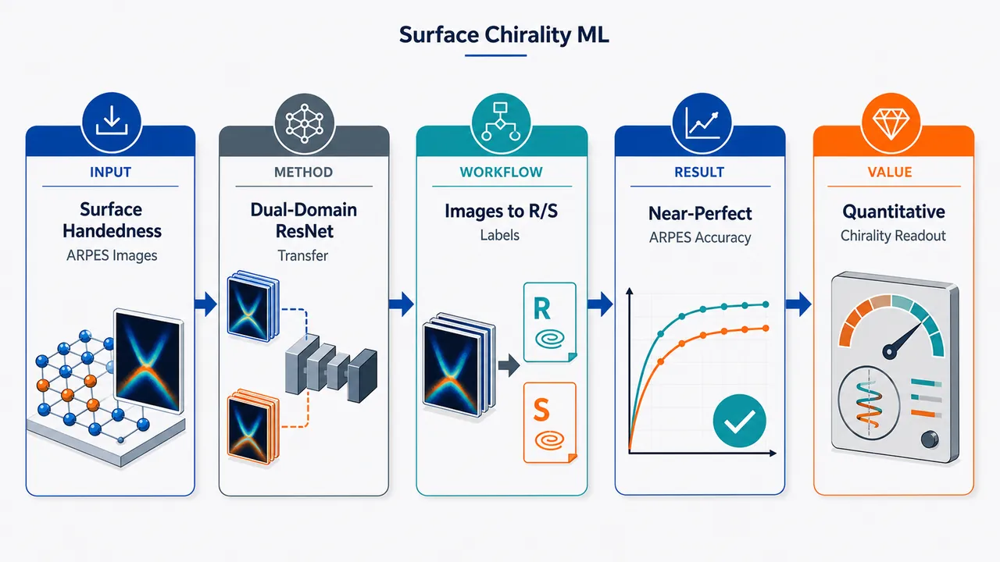
研究问题如何从实验可观测图像中直接判别高 Miller 指数 fcc 手性金属表面的 R/S 晶体学手性；尤其是比较实空间 step–kink–terrace 原子几何与倒空间 ARPES 费米面投影，哪一种图像更可靠地携带手性信息。创新方法提出双域迁移学习框架：用 ImageNet 预训练 ResNet18 分别学习实空间原子模型图像和倒空间合成 ARPES 费米面投影。核心 Aha 点是把实空间 kink 位点的微晶面顺序对应到倒空间中“表面法线投影锚定的费米面多边形旋转方向”，让 R/S 手性表现为围绕中心参考点的全局旋转不对称，而不是局部原子缺陷细节。工作流程输入两类标注图像：约 1,700 张原子结构渲染图和约 3,400 张合成 ARPES 费米面图，覆盖多个 Miller 指数家族；对费米面图进行确定性预处理，并使用符合手性物理的增强规则：单镜像翻转反转 R/S 标签，双镜像或 180°旋转保持标签；随后用两阶段 ResNet18 微调，先冻结 backbone 训练分类头，再全网络差分学习率微调；最后将合成训练的费米面分类器零样本或少样本迁移到 Cu(643) R/S 实验 ARPES 图像，并用旋转平均 TTA 检验稳定性。关键结果实空间原子模型分类准确率约 73.2%，说明局部 kink-site 几何信号可学习但不够稳定；倒空间费米面投影分类准确率达到 99.13%，macro F1 为 99.12%，AUC-ROC 为 100%。合成训练模型零样本识别 2 张实验 Cu(643) R/S ARPES 图均正确，置信度为 79.8% 和 84.3%；仅用这 2 张实验图增强微调后，置信度升至 99.7% 和 100.0%；30 个旋转角 TTA 下约 99% 置信度且无误分类。应用价值证明 ARPES 费米面投影可作为手性金属表面的定量 R/S 读出工具，不依赖原子分辨 STM 或逐原子标记；适合真实表面存在热粗糙化、kink 缺陷、实验噪声和光子能量差异的场景。该框架可用于高通量筛选手性金属表面、辅助对映选择性催化与传感研究，并为几何 CISS 和自旋选择性材料的预筛选提供倒空间图像指标。第一部分：核心概览 (Overview)
该研究提出一种双域迁移学习框架，用 ResNet18 从两类图像直接判别高 Miller 指数 fcc 手性金属表面的 R/S 晶体学手性：实空间原子结构模型与倒空间 ARPES 费米面投影。核心贡献在于证明手性在倒空间中以全局拓扑取向编码，比局域 kink-site 原子几何更易被机器学习恢复：原子模型准确率约 73.2%，费米面投影准确率 99.13%、AUC-ROC 100%。更重要的是，合成 ARPES 训练模型可在仅 2 张实验 Cu(643) R/S 图像上少样本微调后达到约 99% 置信度，显示 ARPES 可成为手性金属表面的定量读出工具，并与几何 CISS 的无序鲁棒性建立联系。
---
第二部分：结构化快速回顾
《Decoding Crystallographic Surface Chirality with Machine Learning: From Atomic Geometry to Fermi Surface Projections》（None，）
背景
高 Miller 指数 fcc 金属表面因 step–kink–terrace 非对称拓扑产生内禀手性，是研究对映选择性催化、传感、CISS、自旋电子学的重要模型体系。传统 STM 受空间分辨率、热粗糙化和 kink 缺陷影响，难以可靠判别 R/S；ARPES 可提供倒空间费米面投影，但此前缺少系统解码方法。
方法
构建两套小规模标注图像数据库：约 1,700 张实空间原子模型图像与约 3,400 张合成 ARPES 费米面图像，覆盖 21–26 个 Miller index families。使用 ImageNet-1k 预训练 ResNet18 分别微调；训练采用两阶段策略：先冻结 backbone 训练分类头，再全网络差分学习率微调。数据增强遵守手性对称性：单镜像翻转反转标签，双镜像/180°旋转保持标签。
结果
实空间分类器测试准确率约 73.2%；费米面分类器测试准确率 99.13%、macro F1 99.12%、AUC-ROC 100%。合成训练模型零样本分类两张实验 Cu(643) R/S ARPES 图像均正确，置信度分别 79.8% 与 84.3%；用两张实验图像增强微调后，置信度升至 99.7% 与 100.0%；30 角度旋转平均 TTA 后分别为 99.2% ± 1.3% 与 98.9% ± 2.7%，无误分类。
讨论
费米面图像中，手性不是局域 kink-site 的小尺度几何差异，而是围绕表面法线投影的全局旋转不对称；这种倒空间全局编码使分类对热粗糙化、局部 kink 密度变化、实验噪声和光子能量差异更鲁棒。实空间中 kink 原子决定微晶面取向；倒空间中表面法线决定费米面多边形取向，两者构成工作对应关系。
局限
实验验证仅使用 2 张 Cu(643) R/S ARPES 图像；实空间分类准确率不足以作为确定性 R/S 判据；训练集虽覆盖多个 Miller index families，但图像仍主要来自模拟和渲染，真实缺陷、吸附物、表面重构、材料多样性尚未充分实验检验。Supporting Information 中包含完整超参数，但正文未给出全部细节。
结论
ARPES 费米面投影比实空间原子模型更适合作为晶体学表面手性的机器学习读出通道。倒空间中由表面法线锚定的费米面拓扑取向可高精度编码 R/S，并能从合成数据迁移到同步辐射实验图像，为高通量筛选手性金属表面、探索几何 CISS 与自旋选择性提供新路线。
---
第三部分：逐章节冷凝解析 (Section-by-Section Condensing)
Abstract
- Intrinsically chiral metal surfaces are positioned as model systems
内禀手性金属表面的手性来源不是分子取代基，而是高 Miller 指数晶面的 asymmetric step-kink-terrace topology。这种体系被定位为对映选择性催化、传感、自旋电子学的模型平台。证据句为：*"Intrinsically chiral metal surfaces, where handedness arises from the asymmetric step-kink-terrace topology of high-Miller-index planes, are model systems for enantiospecific catalysis, sensing, and spintronics."*
- The central methodological gap is direct handedness classification from observables
现有实验观测量无法被一致地转化为 R/S 手性标签，核心问题是缺少从实验可测图像直接分类表面手性的标准方法。原文明确指出：*"Yet, no consistent method exists to classify their handedness directly from experimental observables."*
- A dual-domain machine learning framework is introduced
研究提出双域机器学习框架，分别处理实空间原子结构模型与倒空间动量分辨光电子图谱中的费米面投影。其独立性在于两个图像表示对应不同物理域。关键表述为：*"We report a dual-domain machine learning framework that decodes crystallographic surface chirality from two independent image representations: atomic structure models in real space and simulated momentum-resolved photoemission maps of the Fermi surface projections in reciprocal space."*
- ResNet18 shows a strong performance asymmetry between real and reciprocal space
ResNet18 在实空间原子模型上准确率约 73%，在费米面投影上准确率约 99%，显示倒空间图像包含更可分的手性信号。原文数据为：*"ResNet18, a deep convolutional neural network, fine-tuned on a database of labeled images achieves ∼73 % classification accuracy on atomic models and ∼99 % on Fermi surface projections."*
- Experimental transfer requires only two labeled frames
倒空间分类器可迁移至同步辐射实验 ARPES 图像，且只需 2 张标注实验帧进行微调，显示少样本适应能力。直接证据为：*"We show that the latter transfers directly to synchrotron-acquired experimental images after fine-tuning on just two labeled frames."*
- A real-space / reciprocal-space correspondence is proposed
实空间中，kink-site geometry 固定晶体学平面取向；倒空间中，surface normal position 锚定费米面多边形取向。手性编码在这种相对取向中。原文为：*"just as the kink site geometry fixes the orientation of crystallographic planes in real space, the surface normal position in a momentum-resolved photoemission map anchors the orientation of the Fermi surface polygons in reciprocal space."*
- Momentum-space patterns encode handedness more readily than local atomic geometry
两个分类准确率的显著差异被解释为：倒空间电子图案比局域 kink 原子几何更容易恢复手性。关键句为：*"The pronounced difference in accuracy shows that handedness is more readily recovered from the momentum-space electronic pattern than from the local atomic geometry of the kinked surface."*
- CISS relevance is tied to disorder resilience
结论被连接到真实金属表面中 geometric CISS 的无序鲁棒性，说明全局电子结构手性可能比局部原子几何更稳定。原文为：*"This finding has direct implications for the disorder resilience of geometric chiral-induced spin selectivity (CISS) at realistic metal surfaces."*
---
Introduction / Main text
- CISS connects structural handedness to spin-polarized transport
Chiral-induced spin selectivity (CISS) 被定义为结构手性势场或手性分子与自旋极化电荷输运之间的联系。其研究背景覆盖有机手性分子、无机固体与金属表面。原文写道：*"Chiral-induced spin selectivity (CISS) effect links structural handedness of chiral potentials and molecules to spin-polarized charge transport."*
- Geometric chirality is identified as the operative symmetry-breaking ingredient
固态 CISS 实现显示，spin-orbit coupling、geometric chirality、dephasing 协同产生 CISS；若构型无手性，自旋选择性立即消失，不依赖散射几何。这强化了几何手性的因果地位。证据为：*"spin-orbit coupling, geometric chirality, and dephasing act cooperatively to produce CISS, and that spin selectivity vanishes immediately in achiral configurations regardless of scattering geometry."*
- Cu(643) supports spin filtering in an all-chiral metal–molecule heterostructure
近期 Cu(643) 工作表明裸金属 kink 表面的几何手性足以调控吸附手性分子层的自旋选择性反转。原文为：*"Recent work on Cu(643) demonstrated vectorial electron spin filtering in an all-chiral metal–molecule heterostructure."* 进一步指出：*"the geometric chirality of a bare metal kink surface is sufficient to impose spin selectivity reversal on adsorbed chiral molecular layers."*
- fcc chiral metal surfaces are chemically homogeneous but geometrically chiral
在 Cu、Pt 等 fcc 金属中，表面原子化学上相同；手性来自满足 h × k × l ≠ 0 且 h ≠ k ≠ l 的高 Miller 指数平面暴露的非对称 kink 拓扑。原文给出精确定义：*"in face-centered cubic (fcc) metals such as Cu and Pt, all surface atoms are chemically identical, yet high-Miller-index planes of the form (h k l) where h × k × l ≠ 0 and h ≠ k ≠ l expose kink sites whose asymmetric step–kink–terrace topology breaks mirror symmetry."*
- Surface chirality differs fundamentally from molecular chirality
分子手性依赖 stereocenter 周围化学不同的取代基；金属表面手性完全由原子几何关系决定。原文区分为：*"This stands in fundamental contrast to molecular chirality, where handedness requires chemically distinct substituents arranged around a stereocenter."* 以及：*"for geometric chiral surfaces, handedness is encoded entirely in the atomic geometry of the kink site."*
- Kink sites govern enantiospecific catalysis and electrochemistry
这些表面的对映选择性吸附、催化和电化学响应由 kink 位点处的几何与电子 corrugation 控制。原文为：*"Such surfaces serve as model systems for enantiospecific heterogeneous catalysis and electrochemistry."* 以及：*"the preference for one enantiomeric adsorbate over another is governed by the geometric and electronic corrugation at these kink sites."*
- STM directly images geometry but struggles with handedness assignment
STM 可直接观察 step–kink–terrace 结构，但受分辨率与热粗糙化限制，难以稳定判别 R/S。直接引述为：*"Scanning tunneling microscopy (STM) images the real-space step–kink–terrace structure directly, but limited spatial resolution and thermal roughening of kink sites make reliable identification of handedness from STM data a persistent challenge."*
- ARPES provides reciprocal-space chirality signatures
ARPES 提供电子结构的恒能切片，生成费米面投影，其中可出现破缺镜面对称和手性的倒空间特征。原文为：*"Angle-resolved photoemission spectroscopy (ARPES), by contrast, maps constant-energy cuts through the electronic structure, yielding Fermi surface projections that exhibit signatures of broken symmetry and handedness in the reciprocal space."*
- No systematic method had decoded ARPES chirality across chiral Miller families
虽然手性金属表面的反演和镜面对称破缺应编码到 ARPES 图中，但此前没有跨 Miller 指数家族的系统解码方法。原文为：*"Although broken inversion and mirror symmetries in chiral metal surfaces encode handedness into ARPES maps, no systematic method exists to decode this signature across the full family of chiral Miller index surfaces."*
- Experimental ARPES data scarcity motivates simulation-based training
领域内缺乏大规模实验 ARPES 数据；本工作仅有 2 张 ARPES 图，因而使用合成训练策略。原文明确：*"there are no extensive experimental ARPES datasets available so far."* 以及：*"The two ARPES maps used in this work represent a rare example directly motivating a simulated training strategy."*
- The kink atom / surface normal analogy is a conceptual novelty
实空间中 kink 原子定义局部微晶面取向；倒空间中表面法线定义费米面多边形取向参考系；R/S 由相对取向赋予。原文声称该类比此前未被明确提出：*"We highlight an analogy that, to our knowledge, has not been explicitly noted before."* 具体内容为：*"In real space, the kink atom position sets the orientation of the local microfacets. In reciprocal space, the surface normal analogously defines the reference frame with respect to which the Fermi surface polygon(hexagon, square, or rectangle) is oriented."*
- Generic ImageNet visual features are sufficient without chemical priors
与依赖化学/晶体学预训练数据库的工作不同，此处使用纯视觉预训练的 ResNet18，说明边缘、纹理、形状等通用图像特征足以学习晶体手性的对称破缺。原文为：*"we develop a model by fine-tuning a purely vision-pretrained ResNet18 with no chemical prior, demonstrating that generic visual feature representations are sufficient to learn the symmetry-breaking signature of crystallographic chirality."*
- Figure 1 defines the real-space R/S priority rule
kink 位点三个微晶面 (111)、(100)、(110) 分别对应优先级 1、2、3，按 1→2→3 顺时针为 R、逆时针为 S。图注证据为：*"The three microfacet types at the kink site are indicated by coloured labels: (111) in blue (priority 1), (100) in green (priority 2), and (110) in red (priority 3)."* 以及：*"Tracing the sequence 1 → 2 → 3 proceeds clockwise for (a) the R surface and anticlockwise for (b) the S surface."*
- Figure 1 defines the reciprocal-space readout
对应合成 ARPES 图中，白色 1、2、3 标记与三个微晶面相关的费米面特征；这些特征围绕表面法线投影的旋转方向在 R/S 中反转。图注写道：*"White numerals 1, 2, and 3 mark the Fermi surface features associated with the (111), (100), and (110) microfacets, respectively."* 以及：*"The mirror-symmetry breaking between (c) and (d) is evident in the reversal of the rotational sense of these features about the surface normal projection."*
- Small-data design reflects surface-science scarcity
数据库规模被刻意控制在小数据 regime：实空间约 1,700 图像，费米面约 3,400 合成图像，覆盖 21–26 Miller index families。原文为：*"We construct a database of labeled images spanning 21−26 Miller index families with two-class labels (R and S)."* 以及：*"The real-space classifier uses only ∼1,700 images and the Fermi surface classifier only ∼3,400 synthetic images."*
- Real-space classifier is useful but not decisive
实空间分类器准确率 ∼73.2%，高于随机但不足以确定性判别 R/S。原文为：*"The real-space classifier reaches ∼73.2 % accuracy which is meaningful and well above chance, but short of what is needed for definitive assignment as R or S."*
- Localized kink-site signal explains real-space limitations
实空间手性信号局限在 kink site，且受视角、表面缺陷、吸附原子身份影响，因此局部表示难以完全克服方差。原文为：*"the chiral signature is spatially localized at the kink site and is sensitive to viewing angle, surface defects, and adatom identity."*
- Fermi surface classifier reaches near-perfect accuracy
费米面分类器在物理预处理和增强后达到 ∼99.1% 准确率，并可迁移到实验 ARPES。原文为：*"The Fermi surface classifier, trained with physics-informed preprocessing and augmentation, achieves ∼99.1 % accuracy and transfers directly to experimental ARPES data after a lightweight few-shot fine-tuning step on just two labeled experimental images."*
- Reciprocal-space representation is robust to thermal roughening
热粗糙化改变 terrace 尺寸与 step edge 长度并降低 kink 密度，但实验 ARPES 图仍与模拟训练数据视觉一致，说明手性信号以全局方式保留。原文为：*"Thermal roughening at realistic metal surfaces reduces kink density by varying terrace sizes and step edge lengths, introducing structural disorder that weakens the local real-space chiral signatures at individual kink sites."* 以及：*"the experimental ARPES Fermi surface maps, acquired from thermally roughened surfaces, remain visually consistent with our simulated training data and are classified with good accuracy."*
- ARPES integrates over the surface Brillouin zone rather than sampling individual kink sites
倒空间鲁棒性的物理基础是 ARPES 对整个表面 Brillouin 区积分，而不是逐 kink site 采样。原文为：*"the handedness signature survives because ARPES integrates over the full surface Brillouin zone rather than sampling individual kink sites."*
- The global reciprocal signature parallels disorder robustness in geometric CISS
几何 CISS 中，自旋选择性在强 Anderson 无序下仍可持续，因为信号来自集体边界几何，而非单个散射点；此处 ARPES 手性读出有类似逻辑。原文为：*"A broadly analogous robustness has been noted for geometric CISS in solid-state systems, where spin selectivity persists under strong Anderson disorder because the chiral signal reflects the collective boundary geometry rather than any individual scattering site."*
- The contrast between classifiers quantitatively supports global encoding
实空间与倒空间准确率对比定量建立：手性在费米面图中更全局、更鲁棒。原文为：*"The contrast between the two classifiers quantitatively establishes that chirality is encoded more globally, and thus more robustly, in the Fermi surface maps than in the spatially localised real-space kink-site geometry."*
- Priority sequence is preserved between real and reciprocal space
实空间优先级序列 (111)=1, (100)=2, (110)=3 被保留到倒空间对应费米面特征中。原文为：*"The same priority sequence is preserved in reciprocal space."* 以及：*"the Fermi surface features associated with the three microfacets, labelled 1, 2, and 3 in Figure 1 (c,d), rotate in opposite senses about the surface normal projection for the R and S enantiomers."*
- Fermi classifier metrics are nearly saturated
测试集表现：accuracy 99.13%，macro F1 99.12%，AUC-ROC 100%；R 类 precision 98.29%、recall 100.00%；S 类 precision 100.00%、recall 98.26%。原文为：*"The classifier accuracy, which measures how often the model makes a correct prediction, is 99.13%."* 以及：*"The macro F1 score ... is 99.12%."*、*"The Area Under the Receiver Operating Characteristic Curve (AUC-ROC) ... is 100%."*
- Experimental Cu(643) ARPES validates real-world transfer
两张实验图来自 Cu(643) R 与 Cu(643) S，属于内禀手性高 Miller 指数金属表面的早期 ARPES 测量之一。原文为：*"the trained Fermi surface classifier was applied to two experimental ARPES Fermi surface maps acquired for Cu(643) R and Cu(643) S surfaces, among the first such measurements on intrinsically chiral high-Miller-index metal surfaces."*
- Surface normal projection is identified through the surface state at Γ̄
实验图中，Γ̄ 处表面态用于识别表面法线投影，与合成图中的嵌入标记承担相同几何锚定功能。原文为：*"In experimental images, the surface normal projection is identified by the surface state appearing at Γ̄, which serves the same geometric anchoring role as the embedded marker in synthetic training images."*
- Zero-shot transfer correctly classifies both experimental enantiomers
合成训练模型未经重训即可正确分类两张实验图：R 置信度 79.8%，S 置信度 84.3%。原文为：*"In a zero-shot forward pass, the synthetic-trained model correctly classified both experimental images, reporting R-enantiomer confidence 79.8 % and S-enantiomer confidence 84.3 %."*
- Few-shot fine-tuning on two experimental images boosts confidence
使用两张实验图的增强副本进行轻量微调后，R 置信度 99.7%，S 置信度 100.0%。原文为：*"the model was lightly fine-tuned on augmented copies of the two experimental images resulting in a confidence of 99.7% for R and 100.0% for S."*
- Rotation-averaged TTA confirms azimuthal stability
使用 30 个均匀分布的面内旋转角进行 TTA，R 为 99.2% ± 1.3%，S 为 98.9% ± 2.7%，所有角度无误分类。原文为：*"a rotation-averaged inference over 30 evenly spaced in-plane angles (test-time augmentation, TTA) yielded a confidence of 99.2 % ± 1.3 % for the R enantiomer and 98.9 % ± 2.7 % for the S enantiomer, with no misclassification at any tested rotation angle."*
- Photon-energy mismatch does not prevent transfer
实验图光子能量为 30 eV，合成训练示例为 21.2 eV，但模型仍迁移成功，说明模型主要学习拓扑手性模式而非特定光子能量强度。原文为：*"Notably, the experimental images were acquired at a different photon energy from the simulated training set, yet the classifier transferred successfully."* 以及：*"Successful zero-shot transfer despite this mismatch confirms that the classifier learns the topological chirality pattern rather than photon-energy-specific intensity features."*
- ARPES is positioned as a quantitative chirality readout
核心结果表明，费米面图可作为完整手性金属表面族的定量手性读出，不依赖原子分辨实空间成像或逐原子标记。原文为：*"establishes ARPES as a quantitative chirality readout for the full family of chiral metal surfaces without requiring atomic-resolution real-space imaging or atomic labeling."*
- Classifier confidence is hypothesized to connect with CISS strength
若更高分类置信度对应更强 CISS asymmetry，则可通过匹配 R/S 表面的 CDAD 验证机器学习可观测量与自旋极化输运物理量之间的联系。原文为：*"classifier confidence may reflect the strength of the helical electron density that contributes to spin selectivity."* 以及：*"If surfaces with higher classifier confidence also exhibit stronger CISS asymmetry, circular dichroism in the angular distribution (CDAD) of photoelectrons from matched R and S surfaces would provide a direct experimental test."*
---
Methods
- Real-space images are generated with Avogadro and Blender
原子模型图像使用 Avogadro 与 Blender 构建；图像多样性通过独立改变极角、方位角、缺陷和表面吸附原子类型获得。原文为：*"Atomic model images were constructed in Avogadro and Blender softwares, with image diversity introduced by independently varying the polar and azimuthal viewing angles, defects and the surface adatom types."*
- Reciprocal-space images use a public 3D Fermi surface database
合成 ARPES 费米面投影来自开放 VRML 三维费米面数据库，覆盖 45 种 elemental solids，增强可复现性和材料泛化性。原文为：*"Simulated ARPES Fermi surface projections were generated from an openly available database of three-dimensional Fermi surfaces in VRML format covering 45 elemental solids."*
- Data splitting uses a 75-15-10 ratio
两个数据集均按 75% 训练、15% 验证、10% 测试划分，且来自同一 Miller index family pool；测试图像在 image level 被保留，避免训练测试泄漏。原文为：*"Both datasets were split into training, validation, and test sets using a 75-15-10 ratio drawn from the same pool of Miller index families, with test images held out at the image level."*
- Fermi images receive deterministic preprocessing before augmentation
费米面图像在增强前使用固定、确定性预处理流程。该步骤体现物理约束而非纯图像增强。原文为：*"A fixed deterministic preprocessing pipeline was only applied to Fermi surface images before augmentation."*
- Mirror augmentation respects chirality inversion
单次水平或垂直镜像是 improper rotation，会反转手性标签 R ↔ S；双镜像等价于 180° proper rotation，保持手性不变。原文为：*"A single mirror operation (horizontal or vertical flip) is an improper rotation that inverts handedness and therefore inverts the class label (R ↔ S), whereas a double mirror (equivalent to a 180° proper rotation) preserves chirality and leaves the label unchanged."*
- Label flipping prevents unphysical learning
训练中所有水平和垂直翻转均伴随标签反转，防止网络把互为镜像的图像错误地关联到同一类别。原文为：*"every horizontal and vertical flip applied during training was accompanied by a label flip, preventing the network from associating mirror-related image pairs with the same class."*
- ResNet18 is fine-tuned in two stages
ImageNet-1k 预训练 ResNet18 分别用于实空间与倒空间数据；Stage 1 冻结 backbone，仅训练分类头；Stage 2 全网络用差分学习率微调，并用 early stopping 防止过拟合。原文为：*"ResNet18 pretrained on ImageNet-1k was fine-tuned separately on the real-space and reciprocal-space datasets, with training proceeding in two stages for each classifier."* 以及：*"In Stage 1, the backbone was frozen and only the classification head was trained. In Stage 2, the full network was fine-tuned with differential learning rates, with early stopping invoked."*
- Experimental ARPES uses Cu(643) R/S at Elettra
实验数据来自 Elettra synchrotron, Trieste, Italy，样品为 Cu(643) R 与 Cu(643) S，室温采集，光子能量 30 eV。原文为：*"The experimental data for the Cu(643) R and Cu(643) S surfaces were acquired at Elettra synchrotron (Trieste, Italy) at room temperature, at a photon energy of 30 eV."*
- Zero-shot classification uses no weight updates
零样本分类直接将合成训练模型应用于两张预处理实验图，不重训、不修改权重。原文为：*"The synthetic-trained model was applied directly to the two preprocessed experimental images without any retraining or modification of model weights."*
- Few-shot fine-tuning uses augmented copies of two labeled images
少样本微调仅使用两张标注实验图的增强副本，用于提高置信度而非重建大规模实验训练集。原文为：*"To improve prediction confidence, the model was fine-tuned on augmented copies of the two labeled experimental images."*
- Rotation averaging tests physical orientation invariance
旋转平均检验分类是否在所有面内取向上稳定；物理上合理的手性分类器不应依赖某一特定 azimuthal alignment。原文为：*"Rotation averaging tests whether the classification is stable across all in-plane orientations, which is expected from a physically meaningful chirality classifier that is not biased toward any particular azimuthal alignment."*
---
Acknowledgement
- Synchrotron support and funding sources are specified
同步辐射数据采集得到 Vitaliy Feyer 与 Iulia Cojocariu 协助；实验图谱受 DFG TRR 173-268565370 Spin + X, Project B14 支持；A.K. 受 MaRDI / DFG project number 46015501, NFDI 29/1 支持。原文为：*"The authors thank Vitaliy Feyer and Iulia Cojocariu for assistance with synchrotron data acquisition."* 以及：*"The experimental maps were supported by the Deutsche Forschungsgemeinschaft (DFG, German Research Foundation) —TRR 173-268565370 Spin + X: spin in its collective environment (Project B14)."*
---
Supporting Information
- Additional technical details are placed in supporting information
补充材料包含完整 Miller 指数表、R/S 标注、实空间与倒空间图像渲染流程、费米面切片模拟方法、完整迁移学习管线、预处理、增强策略和全部超参数。原文为：*"Full Miller index table and handedness assignments; Real and reciprocal space image rendering pipeline and parameter ranges; Method for simulation of Fermi surface cuts; Full transfer learning pipeline with pre-processing and augmentation strategies, and all hyperparameter settings."*
---
第四部分：深度理解与语言支持 (Understanding & Nuance)
1. 术语解析
- Intrinsically chiral metal surfaces
指表面本身因晶体截面几何而手性，不依赖手性分子吸附或化学取代基。这里的 “intrinsically” 强调手性是裸金属表面的固有几何属性。在 fcc 金属中，所有表面原子化学相同，R/S 来自 kink、step、terrace 的非镜面对称排列。
- High-Miller-index planes
Miller 指数较高且三个指数互不相等、均非零的晶面，例如 Cu(643)。这类晶面不是低指数平整面，而会暴露规则的台阶、平台和 kink 位点，因此自然产生低对称性与手性。
- Step–kink–terrace topology
表面由 terrace（平台）、step（台阶边）和 kink（台阶上的折角/缺口位点）组成。这里 “topology” 不是严格数学拓扑不变量，而是指这些几何元素的连接和排列方式。非对称排列破坏镜面对称，从而产生 R/S。
- Fermi surface projections
ARPES 中在给定能量附近测得的电子动量分布，可看作三维费米面在表面动量平面 ((kₓ,k_y)) 上的投影或截面。这里的关键不是单点强度，而是费米面多边形特征相对于表面法线投影的整体取向。
- Simulation-to-experimental transfer
先用合成图像训练模型，再迁移到真实实验图像。难点在于模拟图和实验图存在 contrast、noise、photon energy、仪器响应等 domain gap；该研究通过预处理、少样本微调和 TTA 缓解差异。
2. 疑难查证
- 为什么镜像翻转必须反转 R/S 标签？
手性本质上是“不能与镜像重合”的几何属性。水平或垂直翻转相当于对图像施加一次镜像操作，这是 improper rotation，会把右手结构变成左手结构。因此，若训练时把翻转后的 R 图仍标为 R，模型会被迫学习与物理相矛盾的规则。双镜像相当于旋转 180°，属于 proper rotation，不改变手性，因此标签保持不变。
- 为什么倒空间比实空间更容易分类？
实空间图像中，真正决定 R/S 的信息集中在 kink site 附近，通常只占图像很小区域；视角变化、热粗糙化、缺陷、吸附原子都会掩盖局部差异。倒空间 ARPES 图像则把整个表面电子结构投影到动量空间，多个微晶面相关特征同时参与编码，手性表现为围绕表面法线的全局旋转不对称。局部无序会被面积平均，而全局取向关系仍保留。
- “表面法线投影锚定费米面多边形取向”是什么意思？
在实空间中，要判断 R/S，必须知道 kink 附近三个微晶面按什么顺序排列。倒空间中，类似的参照点是表面法线在 ((kₓ,k_y)) 图中的投影，常与 (barΓ) 相关。费米面特征围绕该点的排列顺序相当于实空间微晶面顺序的倒空间对应物；R 与 S 表面会呈现相反的旋转 sense。
- 为什么不同光子能量仍可迁移？
ARPES 强度会随光子能量变化，因为矩阵元、探测深度和可访问 (k_z) 范围都会改变；但如果 R/S 信息主要来自费米面特征的拓扑排列和相对取向，而不是局部亮度强弱，则模型可跨 photon energy 工作。实验 30 eV 与模拟示例 21.2 eV 不一致但仍正确分类，支持这一解释。
---
第五部分：创新评估与关联 (Synthesis & Novelty)
1. 创新性判断
- 从“观察手性特征”推进到“自动解码 R/S 标签”
过去 ARPES、STM 和表面科学研究可观察手性金属表面的几何或电子差异，但缺乏跨 Miller index family 的标准化分类器。该研究把问题形式化为二分类任务，并给出可复现的图像生成、物理增强、迁移学习和实验验证流程。
- 首次系统比较实空间与倒空间手性可学习性
同一 R/S 任务下，实空间原子模型准确率约 73.2%，费米面投影约 99.13%。这不仅是算法性能差异，更构成物理结论：手性在倒空间中以更全局、更冗余、更鲁棒的方式编码。
- 提出 kink atom / surface normal 的跨域对应关系
实空间 kink site 决定微晶面取向；倒空间 surface normal projection 决定费米面多边形参考取向。该对应关系把传统晶体学 R/S 判据和 ARPES 图像拓扑连接起来，是论文最重要的概念创新之一。
- 用纯视觉预训练模型学习晶体手性，无需化学先验
相比近年材料机器学习中常见的 domain-specific 预训练、晶体图网络或大规模化学数据库，该研究显示 ImageNet 预训练 ResNet18 的通用视觉特征足以捕捉晶体手性破缺信号。对于实验数据稀缺的表面科学尤其重要。
- 少样本实验迁移具有实际价值
仅 2 张实验 ARPES 图像即可完成从合成到实验的微调，并在 TTA 下维持约 99% 置信度且无旋转角误判。这解决了真实 ARPES 数据昂贵、稀缺、难以规模化标注的问题。
- 把机器学习可观测量与 CISS 物理联系起来
倒空间分类置信度可能反映与自旋选择性有关的 helical electron density 强度。若后续 CDAD 或 spin-resolved 测量证实置信度与 CISS asymmetry 相关，该框架可成为无需自旋分辨实验的 CISS 活性预筛选工具。
- 相对于近 2–5 年相关工作的具体突破
近年工作主要集中在：手性分子 STM/显微图像识别、手性纳米材料 handedness 分类、晶体结构/空间群图像识别、少样本 EBSD/XRD 分类、CISS 固态理论与实验。该研究的新颖点在于把这些方向交叉到一个此前未被系统处理的问题：从 ARPES 费米面投影中判别高 Miller 指数金属表面晶体学手性，并用真实同步辐射 Cu(643) R/S 图像完成 simulation-to-experiment 验证。
-
05
📊 含图深析
💡 亮点：虚拟反应探索补足 p 区借氢催化数据。
📖 展开分析 + 配图
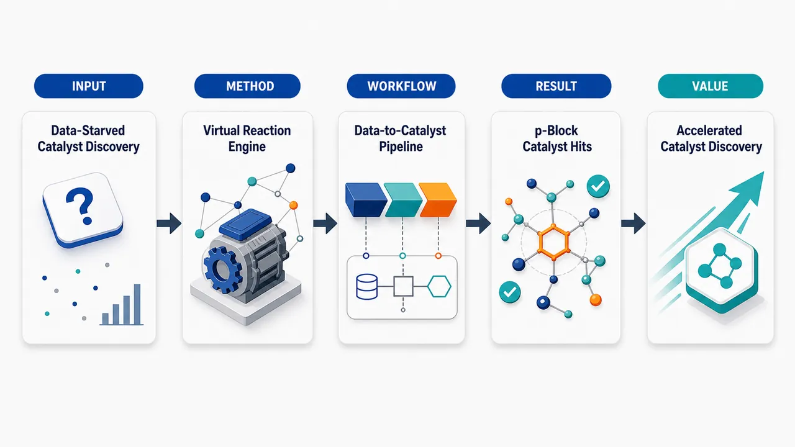
研究问题借氢反应催化剂发现面临“数据饥饿”：可用于训练机器学习模型的实验/计算反应数据不足，导致难以系统筛选新的 p 区金属催化剂；核心问题是如何在数据稀缺条件下构建可用数据并推动催化剂发现。创新方法将自动化虚拟反应探索作为“数据生成引擎”，主动扩展借氢反应相关计算数据，再用这些虚拟反应数据训练或驱动机器学习筛选；Aha 点在于不再被动等待已有实验数据，而是用自动化计算反应网络补足数据缺口，并将搜索焦点转向较少被开发的 p 区金属催化剂。工作流程输入借氢反应体系与候选 p 区金属催化剂 → 自动化虚拟反应探索生成可能反应路径和计算数据 → 整理反应能量、结构或反应特征形成机器学习数据集 → 建立预测/筛选模型 → 对 p 区金属候选物进行排序与发现 → 输出潜在高价值借氢反应催化剂。关键结果研究展示了一条缓解数据稀缺的催化剂发现路线：自动生成的虚拟反应数据可支撑机器学习建模，并用于发现或筛选 p 区金属借氢催化剂；摘要未给出具体催化剂名称、性能提升幅度、模型精度或实验验证数值。应用价值为数据稀缺反应领域提供可复制的计算发现范式，可降低催化剂开发对大量实验数据的依赖，加速借氢反应中廉价或非常规 p 区金属催化剂的发现，并有望扩展到其他反应体系的机器学习催化筛选。核心概览
该论文属于计算化学/机器学习辅助催化剂发现方向，利用自动化虚拟反应探索与机器学习筛选 p 区金属借氢反应催化剂。
方法要点
- 采用自动化虚拟反应探索生成或扩展候选反应/催化体系信息。
- 结合机器学习方法应对实验数据稀缺问题。
- 研究对象聚焦于 p 区金属催化剂。
- 应用场景为借氢反应催化剂发现。
- 具体模型类型、特征构建、训练数据来源与筛选流程摘要未详述。
关键结果
- 摘要明确指出，该工作旨在缓解实验数据稀缺带来的限制。
- 摘要表明，自动化虚拟反应探索与机器学习被用于发现或筛选 p 区金属借氢反应催化剂。
- 是否发现了具体高性能催化剂、其活性/选择性/稳定性表现及验证方式，摘要未详述。
创新性判断
- 可能的新颖点在于将“自动化虚拟反应探索”与“机器学习”结合，用于数据稀缺条件下的催化剂发现。
- 聚焦 p 区金属用于借氢反应催化，可能区别于更常见的过渡金属催化体系；但其相对已有工作的具体创新程度摘要未详述。
- 若论文确实实现了从虚拟反应探索到机器学习筛选再到候选催化剂发现的闭环流程，则在方法集成和低数据场景应用上具有一定创新性；但该判断基于摘要，仍存在不确定性。
-
06
📊 含图深析
💡 亮点：用热力学约束审查材料可合成性预测。
📖 展开分析 + 配图
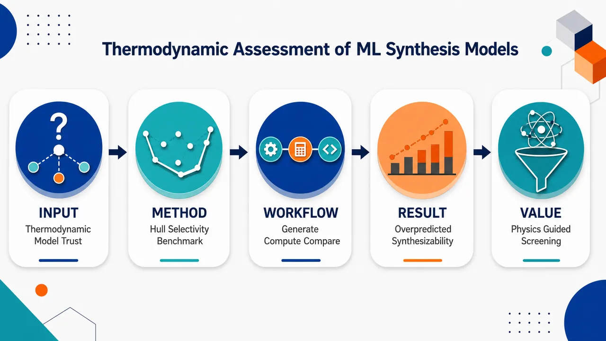
研究问题现有机器学习模型在预测假想固态材料“能否被合成”时，是否真正符合材料热力学稳定性与固态反应产物选择性？核心矛盾是：模型可能给出高可合成性分数，但候选材料可能远离相稳定凸包，或没有能选择性生成目标相的反应路线。创新方法提出以热力学一致性审查可合成性模型的评估框架：用“相对于凸包的能量”描绘目标材料稳定性，用“枚举合成反应的热力学选择性”描绘反应路线是否偏向目标产物；再用成功合成配方数据划定现实可合成的热力学边界，在缺少大量失败合成负例时仍能识别模型假阳性。工作流程输入 Chemeleon 生成的数千个假想固态材料；使用 CHGNet foundation potential 计算每个材料的凸包能量，并枚举可能固态合成反应、计算目标产物相对竞争副产物的热力学选择性；用成功合成配方数据建立热力学可合成边界；将四个近期可合成性机器学习模型应用到同一候选集；最后把模型分数与凸包能量、反应选择性进行对照，判断模型是否过度乐观或具有热力学趋势一致性。关键结果四个近期固态合成预测模型总体倾向于高估合成可能性：许多热力学不稳定、凸包能量偏高，或缺乏选择性合成路线的材料仍被模型赋予较高可合成性分数。但部分模型并非完全失效，其评分会随热力学启发式指标变化：材料越不稳定、越缺乏选择性反应路径，分数在统计趋势上越低。应用价值为 AI 材料发现中的“生成—筛选—实验验证”流程提供物理可信度过滤器，可减少把实验资源投入热力学上不合理候选体的风险；同时为下一代可合成性模型设计提供方向，即模型不应只学习已知成功材料的相似性，还应显式纳入相稳定性、竞争相形成和反应选择性约束。第一部分：核心概览（Overview）
机器学习已被用于预测假想固态材料的可合成性，但其预测是否符合材料热力学与反应热力学选择性仍缺乏系统检验。该研究以凸包能量和合成反应热力学选择性指标为基准，评估多个近期固态合成预测模型，并用成功合成配方数据确定热力学可合成边界。结果显示，现有模型普遍高估合成可能性，但部分模型得分仍与热力学稳定性和反应选择性呈趋势一致。核心贡献在于提出一种在缺乏大量失败合成负例时评估合成预测模型质量的热力学框架。
---
第二部分：结构化快速回顾
《Thermodynamic assessment of machine learning models for solid-state synthesis prediction》（None，）
背景
固态材料发现中，假想材料是否可合成是关键瓶颈。近年来出现多种机器学习模型，试图从已成功合成材料数据库中学习可合成性规律，以避免直接模拟复杂的固态相变过程。核心背景由摘要中的表述概括：*"Machine learning models have recently emerged to predict whether hypothetical solid-state materials can be synthesized."*
方法
评估对象为多个近期提出的合成预测模型。热力学评估指标包括：
- Energy with respect to the convex hull，即材料相对于相稳定凸包的能量；
- 一个考虑枚举合成反应热力学选择性的指标。
成功合成配方数据用于确定两个热力学量的合理边界：*"A dataset of successful synthesis recipes was used to determine the likely bounds on both quantities beyond which materials can be deemed unlikely to be synthesized."*
结果
使用 CHGNet foundation potential 计算由 Chemeleon generative model 生成的数千个新假想材料的热力学性质。四个近期发表的机器学习可合成性模型被应用于同一数据集，并与热力学指标对照：*"Four recently published machine learning models for synthesizability prediction were applied to this same dataset, and the resultant predictions were considered against computed thermodynamics."*
讨论
总体上，模型倾向于过度预测可合成性：*"We find these models generally overpredict the likelihood of synthesis"*。但并非完全无效；部分模型分数会随热力学启发式指标变化，对更不稳定或缺乏热力学选择性合成路径的材料给出较低分数。
局限
可获得信息显示，该评估依赖：
- 成功合成配方数据，而不是大规模失败合成数据；
- CHGNet 作为热力学计算基础；
- Chemeleon 生成的假想材料集合；
- 四个近期模型作为评估对象。
缺乏全文时，无法核验具体数据规模、模型名称、统计检验、阈值数值、章节结构和补充材料细节。
结论
热力学一致性为可合成性机器学习模型提供了重要外部检验标准。该工作识别出现有合成预测模型的关键缺口，并提出一种在缺少大量失败合成实验记录时评估模型质量的新路径：*"introduces a new approach to assess their quality in the absence of extensive negative examples (failed syntheses)."*
---
第三部分：逐章节冷凝解析（Section-by-Section Condensing）
可用材料仅包含题名、作者、摘要、arXiv 分类、提交记录和元数据；未包含正文原始章节，例如 Introduction、Methods、Results、Discussion、Conclusion 等。因此无法严格按照完整论文原始章节标题逐节提取所有关键点，也无法提供每节中的样本量、模型参数、统计显著性、图表数值和完整英文原文引述。以下仅基于可见内容进行章节级解析。
---
Title: Thermodynamic assessment of machine learning models for solid-state synthesis prediction
- Thermodynamic assessment as the central framing
标题将核心任务定义为对机器学习固态合成预测模型进行热力学评估，而不是提出一个新的可合成性分类器。关键词 Thermodynamic assessment 表明评价标准来自物理化学约束，而非单纯交叉验证或数据集准确率。题名原文为：*"Thermodynamic assessment of machine learning models for solid-state synthesis prediction"*。
- Machine learning models as evaluated objects
研究对象是已有或近期提出的 machine learning models，任务是判断其输出是否与热力学稳定性和反应可行性相符。题名中的 *"machine learning models for solid-state synthesis prediction"* 明确指向“模型评估”而非“模型生成”。
- Solid-state synthesis prediction as application domain
目标领域是固态合成预测，区别于溶液合成、有机合成或分子反应预测。固态合成涉及多相反应、热处理、扩散、竞争相形成等复杂因素，因此热力学稳定性和反应选择性具有特别重要的约束意义。
---
Abstract
- Machine learning synthesis prediction addresses hypothetical materials
机器学习模型的应用对象是假想固态材料，目标是预测这些结构或组成能否被实验合成。摘要开头指出：*"Machine learning models have recently emerged to predict whether hypothetical solid-state materials can be synthesized."* 这说明问题不是预测已知材料性质，而是评估尚未证实可合成的新材料候选体。
- Learning from successful materials replaces direct phase-transformation modeling
这些模型试图绕开对固态相变的直接第一性原理建模，从大量成功合成材料中学习经验规律。关键表述为：*"These models aim to circumvent direct first-principles modeling of solid-state phase transformations, instead learning from large databases of successfully synthesized materials."* 这里的 circumvent 暗含一个重要方法论取舍：固态相变的微观路径、动力学障碍和中间相极难直接模拟，因此机器学习以数据驱动方式近似可合成性。
- Thermodynamic alignment is the core evaluation criterion
评估焦点是模型预测与材料热力学和反应热力学的一致性。摘要明确给出：*"we assess the alignment of several recently introduced synthesis prediction models with material and reaction thermodynamics"*。这里的 alignment 不是直接等同于准确率，而是判断模型输出是否服从热力学启发式约束。
- Convex hull energy quantifies material stability
第一类热力学量是相对于凸包的能量，即 energy with respect to the convex hull。摘要给出：*"quantified by the energy with respect to the convex hull"*。该指标衡量一个材料相对于同组成化学空间中热力学稳定相组合的能量高低。通常越接近凸包，热力学稳定性越强；高于凸包太多，则更可能分解为其他相。
- Reaction selectivity metric evaluates synthesis pathways
第二类热力学量是考虑枚举合成反应热力学选择性的指标。摘要表述为：*"a metric accounting for thermodynamic selectivity of enumerated synthesis reactions."* 这意味着可合成性不仅取决于目标产物本身是否稳定，还取决于是否存在一个反应路径，使目标产物相对于竞争副产物具有热力学优势。
- Successful synthesis recipes define practical thermodynamic bounds
成功合成配方数据集被用于确定热力学指标的合理边界。摘要指出：*"A dataset of successful synthesis recipes was used to determine the likely bounds on both quantities beyond which materials can be deemed unlikely to be synthesized."* 这一步的逻辑是：已知成功合成案例提供经验分布，若假想材料的凸包能量或反应选择性远超成功案例常见范围，则其合成可能性应被怀疑。
- CHGNet provides computed thermodynamics for hypothetical materials
对数千个新假想材料的热力学计算使用 CHGNet foundation potential。摘要给出：*"thermodynamic quantities were computed using the CHGNet foundation potential"*。CHGNet 属于图神经网络势函数，可在比传统 DFT 更低计算成本下预测能量、力或结构相关性质，用于大规模筛选。
- Chemeleon generates thousands of hypothetical materials
假想材料来源于 Chemeleon generative model。摘要中写道：*"for thousands of new hypothetical materials generated using the Chemeleon generative model."* 这表明评估集不是传统材料数据库中的已知材料，而是生成模型产生的新候选体，更接近材料发现场景中的“开放集”挑战。
- Four recent synthesizability models are benchmarked on the same dataset
四个近期发表的可合成性预测模型被用于同一材料集合。摘要指出：*"Four recently published machine learning models for synthesizability prediction were applied to this same dataset"*。同一数据集评估避免了不同材料集合造成的比较偏差，使模型得分能直接与热力学指标对照。
- Predictions are evaluated against computed thermodynamics
模型输出并非单独报告，而是与计算热力学进行对照。摘要表述为：*"the resultant predictions were considered against computed thermodynamics."* 这体现了研究核心：使用物理可解释指标审查机器学习预测，而不是仅依赖训练集/测试集划分中的统计表现。
- Existing models generally overpredict synthesizability
主要结果是现有模型倾向于过高估计合成可能性。摘要给出直接结论：*"We find these models generally overpredict the likelihood of synthesis"*。这说明模型可能把许多热力学上不利或缺乏选择性路径的材料标记为可合成，存在假阳性风险。
- Some scores still correlate with thermodynamic heuristics
尽管整体高估，部分模型分数与热力学启发式规律一致。摘要指出：*"but some model scores do trend with thermodynamic heuristics"*。这里的 trend with 意味着不是严格预测热力学量，而是在统计趋势上能够给热力学更不利的材料较低分。
- Less stable materials receive lower scores in some models
对热力学稳定性较差的材料，部分模型会给出较低可合成性评分。摘要写明：*"assigning lower scores to materials that are less stable"*。这说明某些模型至少捕捉到了稳定性与可合成性之间的相关关系。
- Lack of thermodynamically selective recipe lowers model scores in some cases
对没有可用热力学选择性合成配方的材料，部分模型同样倾向于降低评分。摘要中的证据为：*"or do not have an available synthesis recipe that is calculated to be thermodynamically selective."* 这强调反应层面的可行性是独立于目标相稳定性的另一维约束。
- Negative synthesis examples are scarce
评估框架的动机之一是缺少大量失败合成案例。摘要最后指出：*"in the absence of extensive negative examples (failed syntheses)."* 在材料合成文献中，失败实验通常不发表或记录不充分，导致监督学习中负类标签质量较差，这也是可合成性预测长期难题。
- A new model-quality assessment framework is introduced
贡献不仅是指出现有模型问题，还包括提出一种评估模型质量的新方法。摘要结尾表述为：*"introduces a new approach to assess their quality"*。该方法的核心新意在于用热力学合理性作为外部检验，而不是依赖大量真实失败标签。
---
Subjects: Materials Science; Machine Learning
- Materials science and machine learning are explicitly cross-listed
arXiv 分类显示研究横跨 Materials Science 与 Machine Learning：*"Subjects: Materials Science (cond-mat.mtrl-sci) ; Machine Learning (cs.LG)"*。这说明问题既属于材料热力学与合成科学，也属于机器学习模型评估与泛化可靠性。
- Condensed matter materials science is the primary domain
分类路径为：*"Condensed Matter > Materials Science"*。研究焦点不是一般算法开发，而是算法在固态材料发现中的物理可信度。
---
Submission history
- Versioned preprint record indicates revision
arXiv 信息显示版本经历修改：*"Submitted on 3 Feb 2026 ( v1 ), last revised 11 Jun 2026 (this version, v2)"*。当前可见版本为 v2，说明初稿后已有更新。缺乏 PDF 正文时，无法判断 v2 相对 v1 的具体变化。
- The paper is identified as arXiv:2602.04075
引用标识为：*"Cite as: arXiv:2602.04075 [cond-mat.mtrl-sci]"*。DOI 信息为：*"https://doi.org/10.48550/arXiv.2602.04075"*。
---
第四部分：深度理解与语言支持（Understanding & Nuance）
1. 术语解析
- Synthesizability prediction
Synthesizability prediction 指预测一个假想材料是否能通过现实合成路线制备出来。它不同于 thermodynamic stability prediction：热力学稳定只是可合成性的必要或重要条件之一，但不是充分条件。一个材料可能热力学稳定，却因动力学障碍、挥发、反应路径缺失、前驱体不兼容而难以合成；也可能热力学亚稳却能被实验捕获。
- Energy with respect to the convex hull
Energy with respect to the convex hull 通常译为“相对于凸包的能量”或“凸包上方能量”。在给定化学体系中，凸包由所有稳定相构成。某材料若位于凸包上，分解能为 0，热力学稳定；若高于凸包，则有分解驱动力。英文中的 with respect to 不是“关于”的泛泛含义，而是“相对于某一基准”的定量比较。
- Thermodynamic selectivity
Thermodynamic selectivity 指在可能反应产物集合中，目标产物相对于竞争副产物是否具有热力学优势。它比“反应能是否为负”更严格：一个反应生成目标相可能放热，但若生成其他竞争相更放热，则目标相仍缺乏选择性。
- Enumerated synthesis reactions
Enumerated synthesis reactions 指系统性枚举出的候选合成反应，而不是实验中已经实际执行的所有反应。枚举通常基于前驱体组合、目标组成守恒、已知固相反应规则等。其优势是覆盖面广，局限是无法完全反映真实实验条件、动力学路径和工艺变量。
- Overpredict the likelihood of synthesis
Overpredict 在此不是简单“预测过高数值”，而是指模型把过多候选材料判定为可合成或赋予偏高可合成性分数。实际风险是假阳性膨胀：实验资源会被引向热力学上不合理或缺乏选择性反应路径的候选体。
---
2. 疑难查证
- 为什么缺少失败合成样本会严重影响模型评估？
可合成性是一个典型的正负样本不对称问题。成功合成材料大量出现在数据库和论文中，失败尝试却常常没有发表。若训练集主要由成功案例组成，模型很容易学习到“像已知材料”的特征，而不是学习真正的“可合成边界”。因此，传统二分类指标如 accuracy、ROC-AUC 可能并不可靠，因为负类标签缺失或偏差很大。热力学评估提供了一种替代：即便没有实验失败标签，也能检查模型是否违反基本物理约束。
- 为什么凸包能量不能单独决定可合成性？
凸包能量衡量目标相的热力学稳定或亚稳程度，但固态合成还依赖反应路径。若目标相接近凸包，但所有可行前驱体组合都更倾向于生成竞争相，则目标相仍难以选择性获得。反之，某些亚稳相虽高于凸包，但若存在动力学捕获或低温路径，也可能被合成。因此，凸包能量适合作为强启发式指标，但不能单独作为最终判据。
- 反应热力学选择性为什么比反应能更有信息量？
反应能只回答“目标反应是否热力学有利”；选择性回答“目标反应是否比竞争反应更有利”。固态合成中，元素守恒允许大量副产物组合。若竞争相组合能量更低，实验中更可能形成竞争相，即便目标反应本身放热。因此，选择性指标更接近实验合成成败中的“产物竞争”本质。
- 为什么生成模型材料是更严格的测试集？
由 Chemeleon 等生成模型产生的候选材料往往远离训练数据库的已知分布。若可合成性模型只学会“已知材料相似性”，在这种生成候选集上可能产生大量高置信假阳性。热力学评估能够揭示模型在开放材料空间中的泛化可靠性。
---
第五部分：创新评估与关联（Synthesis & Novelty）
1. 创新性判断
- 从“预测准确率”转向“热力学一致性”评估
过去 2–5 年内，材料可合成性机器学习模型通常依赖已知材料数据库、文献合成记录或正负样本构造进行训练与测试。关键不足是失败合成数据稀缺，负样本往往是人工构造、随机采样或未报道材料，标签噪声极大。该研究的新颖性在于用凸包能量和反应热力学选择性作为外部物理基准，直接检查模型预测是否符合热力学约束。
- 同时考察材料稳定性与合成反应选择性
仅用凸包能量评估可合成性会忽略前驱体反应路径。该研究同时引入材料层面的 energy with respect to the convex hull 和反应层面的 thermodynamic selectivity of enumerated synthesis reactions，把“目标材料稳定吗？”和“有没有选择性生成它的路线？”两个问题合并进模型评估框架。
- 面向生成模型产生的新假想材料进行压力测试
生成式材料模型正在快速增加候选材料数量，但这些材料的真实可合成性难以验证。使用 Chemeleon generative model 生成的数千个假想材料作为评估对象，使测试场景更接近现代 AI 材料发现流程：先生成大量新结构，再用可合成性模型筛选，再进入实验或高精度计算。
- 识别可合成性模型的系统性高估问题
核心发现是四个近期模型整体上倾向于 overpredict the likelihood of synthesis。这解决了一个实际问题：机器学习筛选管线可能产生大量看似可合成但热力学上不合理的候选体，导致实验验证效率下降。
- 在缺少失败实验负例时提供替代评估路线
材料合成领域长期缺乏系统失败数据。该研究提出的框架不要求大规模失败合成标签，而是利用成功合成配方确定热力学边界，再用这些边界审查模型预测。摘要中的总结为：*"introduces a new approach to assess their quality in the absence of extensive negative examples (failed syntheses)."*
- 对未来模型开发的直接启示
后续可合成性模型不应只学习已知成功材料分布，还应显式纳入：
- 相稳定性约束；
- 竞争相形成倾向；
- 前驱体反应选择性；
- 生成模型候选空间中的分布外泛化能力。
该研究因此不仅是模型横向评估，也为下一代固态合成预测模型提供了设计原则。
-
07
📊 含图深析
💡 亮点：A2B2O7 烧绿石稳定性可由成分成键趋势筛选。
📖 展开分析 + 配图
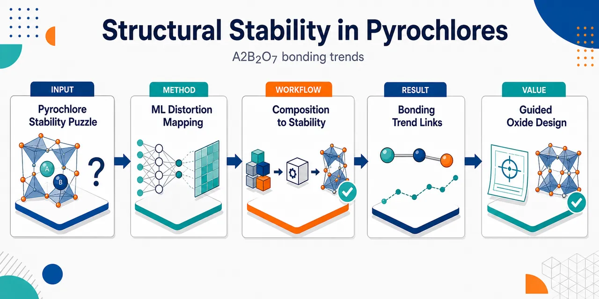
研究问题A₂B₂O₇ 烧绿石中，不同 A 位/B 位元素组合如何影响氧框架畸变、结构稳定性与成键趋势；核心是找出“元素组成—局部畸变—稳定结构”之间可预测、可解释的规律。创新方法用机器学习把 A/B 位元素组合与氧框架畸变同时纳入分析，数据驱动地捕捉烧绿石稳定性和成键趋势；Aha 点是将看似分散的元素选择、氧位移/畸变和稳定性统一成可学习的结构—化学关联图谱。工作流程输入 A₂B₂O₇ 候选组成与 A/B 位元素信息；提取元素组成特征和氧框架畸变相关结构特征；机器学习模型学习这些特征与结构稳定性、成键行为之间的关系；输出稳定性趋势、成键规律以及潜在可设计的烧绿石组合。关键结果建立了 A/B 位元素组合、氧框架畸变和烧绿石结构稳定性之间的关联，并揭示 A₂B₂O₇ 体系中的成键趋势；但摘要未提供具体预测精度、特征重要性排序或新稳定材料实例。应用价值为烧绿石氧化物的快速筛选和理性设计提供数据驱动依据，可用于指导耐辐照材料、离子导体、催化材料等 A₂B₂O₇ 功能氧化物的组成选择与结构优化。核心概览
该论文利用机器学习研究 A₂B₂O₇ 烧绿石的结构稳定性与成键趋势，属于计算材料学/材料信息学方向。
方法要点
- 以 A₂B₂O₇ 烧绿石为研究对象，关注不同 A 位和 B 位元素组合的快速评估。
- 采用机器学习方法筛查或预测结构稳定性；具体模型、特征与训练数据摘要未详述。
- 同时分析成键趋势，用于理解或比较不同组分下的化学键合特征；具体分析指标摘要未详述。
- 研究目标偏向高通量材料筛选，以辅助候选烧绿石材料的快速判断。
关键结果
- 机器学习被用于评估 A₂B₂O₇ 烧绿石的结构稳定性。
- 研究涉及不同 A/B 位组合下的成键趋势。
- 摘要表明该方法可服务于烧绿石材料的快速筛查与评估。
- 具体预测精度、筛选出的候选材料、稳定性判据或成键规律摘要未详述。
创新性判断
- 可能的新颖点在于将机器学习系统用于 A₂B₂O₇ 烧绿石族的结构稳定性与成键趋势联合分析，而不仅是单纯稳定性预测。
- 相比传统逐一计算或实验筛选，该工作可能强调更快速地评估大量 A/B 位组合。
- 若论文确实建立了可泛化的成分—稳定性/成键关系模型，则对烧绿石材料设计具有一定材料信息学价值。
- 但由于摘要极简，无法判断其模型创新、数据规模、特征设计或相对已有工作的性能提升；这些均需全文确认。
-
08
📊 含图深析
💡 亮点：HfO2 暴露 PBE 训练 MLIP 的基态误判风险。
📖 展开分析 + 配图
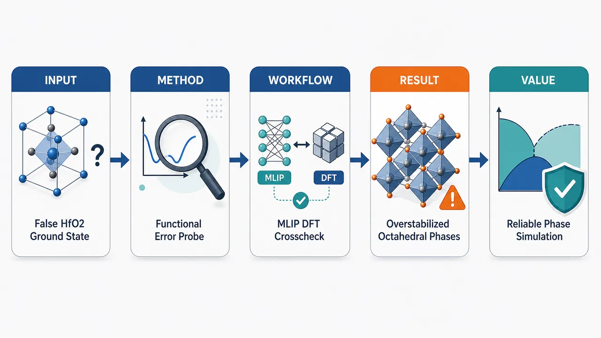
研究问题PBE 泛函训练的机器学习原子间势在预测 HfO₂ 基态结构时是否会继承 PBE 的系统性错误，并把实验确认的 P2₁/c 单斜基态错误替换为未报道的 I4₁/amd 假基态。创新方法以一个异常低能的 I4₁/amd HfO₂ 结构作为“错误探针”，同时对比专用 PBE-MLIP、NequIP-OAM-L、MatterSim-v1-5M 和不同 DFT 泛函，定位出真正的 Aha 点：错误不是单一机器学习模型失效，而是 PBE 对低密度、六配位 Hf–O 八面体结构的过度稳定化被 MLIP 忠实复制。工作流程输入 HfO₂ 候选晶体结构与 PBE 标注数据；用 PBE-based MLIP 搜索低能结构；发现 I4₁/amd 能量低于 P2₁/c；再用 NequIP-OAM-L、MatterSim-v1-5M 复核；最后用 PBE、PBEsol、LDA 等 DFT 泛函比较相对能量，追踪错误来源并评估对铁电极化翻转路径的影响。关键结果PBE-based MLIP、NequIP-OAM-L 和 MatterSim-v1-5M 均错误预测 I4₁/amd 比实验基态 P2₁/c 更稳定；PBE 还会过度稳定 Pbcn 等含六配位 Hf–O 八面体的低密度相；PBEsol 和 LDA 可显著抑制这种错误，并改善相稳定性排序与极化翻转能垒评估。应用价值提示材料结构搜索、相变模拟和铁电 HfO₂ 开关路径计算不能只验证 MLIP 拟合误差，还必须验证底层 DFT 泛函偏差；为后续 HfO₂ 势函数训练提供明确策略：优先采用 PBEsol/LDA 基准、泛函对照、多保真校正或 Δ-learning，避免把假基态和假能垒带入器件材料设计。第一部分：核心概览（Overview）
该研究揭示了PBE 泛函训练的机器学习原子间势在 HfO₂ 相稳定性预测中的系统性失真：不仅专用 MLIP 会错误预测未报道的 I4₁/amd 结构低于实验基态 P2₁/c 单斜相，通用基础模型 NequIP-OAM-L 与 MatterSim-v1-5M 也复现该错误。核心贡献在于把错误源头定位到 PBE 对低密度六配位 Hf–O 八面体结构的过度稳定化，并指出 PBEsol/LDA 可显著抑制该问题。
---
第二部分：结构化快速回顾
《A wrong ground-state structure of HfO₂ predicted by machine-learning interatomic potentials based on the PBE functional》（None，）
背景
机器学习原子间势（MLIPs） 已成为材料模拟的重要工具，大量模型依赖 PBE 交换-相关泛函 生成的 DFT 数据训练；HfO₂ 的实验基态明确为 单斜 P2₁/c 结构。
方法
通过一个 PBE-based MLIP for HfO₂ 搜索低能结构，并与广泛使用的 PBE-based foundation models，包括 NequIP-OAM-L 与 MatterSim-v1-5M，以及不同 DFT functionals 的结果进行比较。
结果
发现一个此前未报道的低能 I4₁/amd 结构，被 PBE-based MLIP 错误预测为比 P2₁/c ground-state structure 更稳定；同样错误也出现在 NequIP-OAM-L 和 MatterSim-v1-5M 中。
讨论
错误并非机器学习模型本身单独造成，而是源于 PBE functional 对含有 sixfold Hf–O octahedral units 的低密度结构，例如 I4₁/amd 和 Pbcn 相，存在过度稳定化倾向。
局限
可用信息未给出训练集规模、结构搜索算法、能量差数值、晶格参数、声子稳定性、测试误差、分子动力学条件、过渡路径计算细节或完整图表证据。
结论
PBE-based MLIP 与 PBE-based foundation models 在 HfO₂ 晶体结构与相变模拟中存在可靠性风险；采用 PBEsol 或 local density approximation（LDA） 可大幅降低该类泛函误差对相稳定性与极化翻转能垒的影响。
---
第三部分：逐章节冷凝解析（Section-by-Section Condensing）
Abstract
Mlips are powerful but inherit exchange-correlation errors
机器学习原子间势（MLIPs） 已经成为材料模拟中的强力工具，但其可靠性受训练数据所用 DFT 交换-相关泛函 限制。摘要明确指出，许多 MLIP 的训练基础是 PBE functional 生成的 DFT 数据：*"Machine-learning interatomic potentials (MLIPs) have become powerful tools for material simulations."* 以及 *"Many MLIPs are trained based on density functional theory (DFT) datasets generated with the Perdew-Burke-Ernzerhof (PBE) exchange-correlation functional."* 关键含义是：MLIP 并不会天然超越其标注数据的物理近似；若 PBE 对特定结构族存在系统性偏差，MLIP 会以高效率、高可扩展性的方式复制甚至放大该偏差。
A previously unreported I4₁/amd phase is predicted as anomalously low energy
针对 HfO₂ 的 PBE-based MLIP 发现了一个此前未报道的低能 I4₁/amd structure。其异常性在于该结构被预测为比公认实验基态 monoclinic P2₁/c structure 更稳定：*"Using a PBE-based MLIP for HfO2, we identify a previously unreported low-energy I41/amd structure, which is predicted to be more stable than the well-known ground-state structure, the monoclinic P21/c structure."* 这里的核心冲突不是“找到新相”，而是“新相能量排序违反实验基态事实”。摘要未给出具体能量差，例如 meV/atom 或 meV/f.u.，因此该错误的数值幅度无法从当前材料中量化。
The prediction is explicitly wrong because experiments establish P2₁/c as the ground state
实验事实清楚支持 HfO₂ ground state = P2₁/c monoclinic phase。摘要直接把 I4₁/amd 更稳定的预测判定为错误：*"Since experiments show clearly that HfO2 takes the P21/c structure as the ground state, this is obviously a wrong prediction."* 这句话具有强判别力：研究重点不是理论预测与实验之间的小偏差，而是基态结构排序发生反转。在相稳定性问题中，基态排序错误通常比晶格常数误差、弹性常数误差更严重，因为它会改变相图、相变路径和动力学采样结果的物理解释。
The error generalizes to PBE-based foundation models
错误不局限于一个专用 HfO₂ MLIP，而是同样出现在广泛使用的 PBE-based foundation models 中，包括 NequIP-OAM-L 和 MatterSim-v1-5M：*"Unfortunately, the same prediction is also made by widely used PBE-based foundation models such as NequIP-OAM-L and MatterSim-v1-5M."* 这强化了问题的普遍性：即使模型架构更先进、训练数据更广泛、具备基础模型属性，只要其能量标签主要来自 PBE，仍可能继承 PBE 对特定化学环境的系统误差。此处涉及两个具体模型名称：NequIP-OAM-L 与 MatterSim-v1-5M；摘要未提供二者的误差指标、训练集组成或具体能量排序数值。
The root cause is traced to the PBE functional rather than only model fitting
通过比较不同 DFT functionals，错误源被定位到 PBE functional 本身：*"Comparisons among different DFT functionals show that this error originates from the PBE functional."* 这一区分非常关键：如果错误来自 MLIP 拟合不足，可通过扩大训练集、改进架构、增加主动学习迭代修正；如果错误来自 exchange-correlation functional approximation，则高保真拟合反而会更准确地复制错误的物理能量面。当前摘要未列出比较的全部泛函、计算设置、赝势、截断能、k 点网格或收敛标准。
PBE overstabilizes low-density sixfold Hf–O octahedral structures
错误机制被具体化为：PBE 过度稳定化低密度结构，尤其是含有 sixfold Hf–O octahedral units 的相，例如 I4₁/amd 与 Pbcn：*"PBE functional, which overstabilizes low-density structures containing sixfold Hf-O octahedral units, such as the I41/amd and Pbcn phases."* 该机制包含三个层面：第一，结构密度偏低；第二，局域配位为 六配位 Hf–O 八面体；第三，受影响相不止 I4₁/amd，还包括 Pbcn。这表明 PBE 偏差具有结构化选择性，而不是随机误差。
The error affects ferroelectric HfO₂ polarization switching paths
该泛函偏差不仅影响静态相稳定性，还影响 ferroelectric HfO₂ polarization switching paths 的能量地形和能垒：*"The error also affects the calculated energy landscapes and barrier heights along ferroelectric HfO2 polarization switching paths when there are large lattice relaxations."* 这意味着当极化翻转伴随显著 lattice relaxations 时，PBE-based MLIP 可能给出错误的过渡态、错误的中间相稳定性或错误的开关势垒。摘要未给出具体能垒数值，例如 eV/f.u.、meV/atom 或 NEB 图像数量，也未说明极化翻转路径是否采用 NEB、SSNEB、变胞 NEB 或其他路径搜索方法。
PBEsol and LDA suppress the error
摘要指出 PBEsol 与 local density approximation（LDA） 能够大幅抑制该错误：*"Fortunately, the error can be largely suppressed by other functionals such as PBEsol and local density approximation."* 这说明更换泛函可以改善 HfO₂ 相排序，尤其是对密度、体积和配位环境较敏感的氧化物体系。这里的 “largely suppressed” 暗示错误仍可能残留，但显著减弱；摘要未给出 PBEsol/LDA 下 I4₁/amd、Pbcn、P2₁/c 的相对能量数值。
The broader warning concerns MLIP reliability in crystal-structure and phase-transition simulations
研究结论具有方法论警示意义：exchange-correlation functional approximations 的误差会传递到 MLIP，并影响晶体结构和相变模拟的可靠性：*"Our study serves as a warning about the impact of errors in exchange-correlation functional approximations on the reliability of MLIP simulations of crystal structures and phase transitions."* 核心信息是：MLIP 的速度和规模优势不能替代对底层 DFT 泛函误差的验证；面向晶体结构预测、相变路径、铁电开关势垒等问题时，需要将 functional benchmarking 作为模型验证的一部分。
---
arXiv metadata
Submission and classification
该研究归类于 Condensed Matter > Materials Science，arXiv 编号为 arXiv:2606.12811 [cond-mat.mtrl-sci]，提交日期为 11 Jun 2026。元数据给出：*"Submitted on 11 Jun 2026"*，主题分类为 *"Subjects: Materials Science (cond-mat.mtrl-sci)"*。这些信息表明研究定位于材料科学中的计算材料、机器学习势函数与氧化物相稳定性问题。
Authorship and bibliographic identifiers
作者为 Shuqi Tang, Jinchen Wei, Kang Wang, Junjie Zhou, Yihan Zhang, Menglin Huang, Shiyou Chen。元数据列出标题为 *"A wrong ground-state structure of HfO2 predicted by machine-learning interatomic potentials based on the PBE functional"*，DOI 信息为 *"https://doi.org/10.48550/arXiv.2606.12811"*，版本信息为 *"arXiv:2606.12811v1"*。当前材料未包含期刊名、卷期页码、同行评审状态或最终出版版本。
---
第四部分：深度理解与语言支持（Understanding & Nuance）
1. 术语解析
Machine-learning interatomic potentials（MLIPs）
学术含义：用机器学习模型近似原子体系的势能面，从而以接近经典势函数的速度模拟接近 DFT 精度的能量、力和应力。这里的关键微妙点是：MLIP 的“精度”通常指相对于训练标签的精度，而不是相对于实验或真实量子多体解的精度。若标签来自 PBE，高精度 MLIP 可能只是高精度复现 PBE 的错误。
Exchange-correlation functional
学术含义：DFT 中描述电子交换与相关效应的近似泛函，是决定总能、键合、体积、相稳定性的重要近似来源。PBE、PBEsol、LDA 都属于交换-相关泛函。微妙差别在于：结构预测错误未必来自数值收敛或 ML 模型欠拟合，也可能来自该泛函本身对某类键合环境的系统偏置。
Overstabilizes
学术含义：某种计算方法把某个结构的能量算得过低，使其相对其他结构显得过于稳定。这里不是说 I4₁/amd 一定不存在，而是 PBE 把低密度、六配位 Hf–O 八面体结构的相对能量压得过低，导致其错误低于实验基态 P2₁/c。
Ground-state structure
学术含义：在给定成分、通常零温零压条件下热力学能量最低的晶体结构。对 HfO₂ 而言，实验明确支持 monoclinic P2₁/c 为基态。微妙点在于：一个结构在计算中“低能”不等同于真实基态；必须经受实验、不同泛函、高级电子结构方法和动力学稳定性检验。
Energy landscapes and barrier heights
学术含义：energy landscape 指结构参数或反应坐标上的势能面；barrier height 指两个稳定态之间跨越过渡态所需的能量差。在铁电 HfO₂ 中，这关系到极化翻转的难易程度。若 PBE 错误稳定某些中间构型，计算出的开关路径和能垒会发生系统偏差。
---
2. 疑难查证
为什么 MLIP 会预测“错误基态”，而且基础模型也会错？
MLIP 学习的是训练数据中的能量、力、应力映射关系。若训练数据来自 PBE DFT，模型目标函数通常会惩罚偏离 PBE 标签的预测。因此，一个足够好的 MLIP 会忠实再现 PBE 的势能面，包括 PBE 的系统性物理错误。基础模型如 NequIP-OAM-L 或 MatterSim-v1-5M 虽然覆盖更广材料空间，但如果底层标签仍以 PBE 为主，遇到 HfO₂ 这类对泛函敏感的相稳定性问题时，仍可能给出错误能量排序。
为什么低密度六配位 Hf–O 八面体结构容易被 PBE 过度稳定？
HfO₂ 的不同相具有不同 Hf–O 配位环境、体积、键长分布和多面体连接方式。PBE 作为 GGA 泛函，通常对平衡体积、键合强度、局域化/离域化程度存在特定偏差。若某类低密度结构的能量被 PBE 系统性低估，就会在相对能量比较中获得不真实优势。这里的关键不是单个 Hf–O 键是否算错，而是结构整体的体积、配位、晶格松弛与电子交换-相关能共同造成相排序错误。
为什么 PBEsol 和 LDA 可能改善问题？
PBEsol 是针对固体和表面性质优化的 GGA 泛函，通常比 PBE 更适合晶格常数、体模量和固体相稳定性。LDA 往往低估晶格常数、偏向更紧密结构。若 PBE 的错误来自对低密度结构的过度稳定，那么 PBEsol 或 LDA 对体积和密度的不同偏置可能会把相对能量重新拉回更接近实验的排序，使 P2₁/c 恢复为更合理的基态候选。
为什么铁电极化翻转路径会受影响？
铁电 HfO₂ 的极化翻转不是简单的局域原子位移，往往伴随晶格形变、配位重排和中间结构变化。若路径中的某些中间构型具有低密度或六配位 Hf–O 八面体特征，PBE-based MLIP 可能会人为降低这些构型的能量。结果包括：势垒被低估或高估、错误中间相被引入、最小能量路径偏离真实路径、对可开关性和疲劳机制的解释失真。
---
第五部分：创新评估与关联（Synthesis & Novelty）
1. 创新性判断
从“模型误差”转向“泛函误差继承”的问题定位
近几年 MLIP 研究高度关注模型架构、训练集覆盖度、主动学习策略和泛化能力。该研究的新颖性在于把 HfO₂ 相稳定性错误明确追溯到 PBE exchange-correlation functional approximation，而非简单归因于 MLIP 欠拟合或结构搜索偶然性。关键证据是不同 DFT functionals 的比较，以及 PBE-based foundation models 也给出同类错误。
揭示 PBE-based foundation models 的材料相稳定性风险
基础模型通常被期待具备跨材料泛化能力，但该研究显示：在 HfO₂ 这类强相竞争氧化物中，基础模型仍可能系统性复制 PBE 的错误基态排序。新颖点在于把 NequIP-OAM-L 与 MatterSim-v1-5M 这样的广泛使用模型纳入检验，说明问题不是某个小型专用势函数的孤立失败，而是 PBE 标签体系下的普遍风险。
发现并诊断未报道 I4₁/amd 低能结构的异常稳定化
未报道的 I4₁/amd HfO₂ 结构在 PBE-based MLIP 中表现为低于 P2₁/c 的假基态。该发现本身具有结构搜索意义，但更重要的是其作为“诊断探针”暴露了 PBE 对低密度六配位结构的偏置。相较于单纯报告一个新相，该研究将新相异常稳定性转化为对计算方法可靠性的反证。
把静态相排序错误扩展到铁电开关路径错误
过去 HfO₂ 铁电研究常关注正交相、极化、应变、掺杂、界面和能垒。该研究进一步指出，PBE 错误会影响 polarization switching paths 的 energy landscapes and barrier heights，尤其在 large lattice relaxations 存在时。这一关联把泛函误差从“基态结构预测”扩展到“功能性质与动力学路径预测”，对铁电 HfO₂ 的计算研究具有直接警示价值。
给出可操作的修正方向
研究不仅指出 PBE 错误，还给出替代路线：PBEsol 与 LDA 可显著抑制错误。这为后续 MLIP 训练提供清晰策略：针对 HfO₂ 相变、铁电开关和结构搜索任务，应优先进行泛函基准测试，必要时使用 PBEsol/LDA 数据集、混合泛函校准、Δ-learning 或多保真训练，而不是默认采用 PBE 数据。
-
09
📊 含图深析
💡 亮点：物理约束模型面向超高含水泥炭沉降预测。
📖 展开分析 + 配图
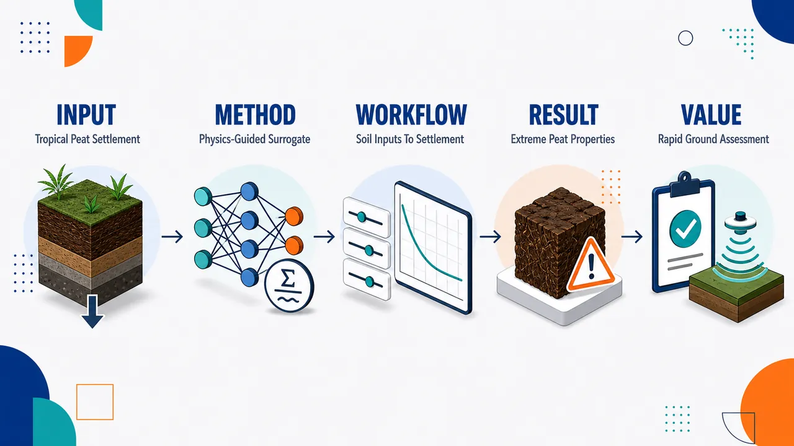
研究问题复杂热带泥炭地基含水率极高、孔隙巨大、强度很低，传统沉降计算慢且难以适应纤维泥炭、半腐泥炭、腐殖泥炭等差异显著的土体；核心问题是如何在保持岩土物理合理性的同时，快速预测马来西亚热带泥炭地基沉降。创新方法提出物理约束机器学习代理模型：不是让模型只从数据中“黑箱拟合”，而是把泥炭高压缩性、低抗剪强度等岩土工程规律嵌入预测框架，使模型像带有物理护栏的快速计算引擎，在复杂泥炭参数空间中输出更符合工程常识的沉降结果。工作流程输入不同分解程度泥炭的工程性质，如含水率、孔隙比、抗剪强度及泥炭类型；模型在物理约束条件下学习土体性质与沉降响应之间的关系；训练完成后形成轻量代理模型；工程使用时输入现场泥炭参数，即可快速输出地基沉降预测结果。关键结果研究建立了面向马来西亚复杂热带泥炭的物理约束机器学习沉降预测代理模型；覆盖纤维泥炭、半腐泥炭和腐殖泥炭；样品体现极端工程特征：含水率通常超过200%、最高可达2200%，孔隙比约5–30，抗剪强度仅5–25 kPa。摘要未给出具体精度提升、加速倍数或对比指标。应用价值可作为热带泥炭地区道路、堤坝、建筑地基等工程的快速沉降评估工具，帮助工程师在高含水率、高压缩性、低强度软土地层中更快筛选设计方案、识别沉降风险，并减少完全依赖耗时数值模拟或经验估算的不确定性。核心概览
该论文面向马来西亚复杂热带泥炭，开发用于快速沉降预测的物理约束机器学习代理模型，属岩土工程智能预测方向。
方法要点
- 研究对象包括马来西亚纤维泥炭、半腐泥炭和腐殖泥炭。
- 构建“物理约束”的机器学习代理模型，用于沉降快速预测。
- 模型考虑热带泥炭的典型工程特性范围，如高含水率、高孔隙比和低抗剪强度。
- 具体机器学习算法、物理约束形式、训练数据来源和验证方法摘要未详述。
关键结果
- 摘要明确指出论文构建了面向复杂热带泥炭沉降预测的物理约束代理模型。
- 研究覆盖的泥炭类型包括纤维、半腐和腐殖泥炭。
- 摘要给出目标材料的典型性质：含水率常大于 200%，孔隙比约 5–30，抗剪强度约 5–25 kPa。
- 模型预测精度、对比基线、计算加速效果和工程案例表现摘要未详述。
创新性判断
- 可能的新颖点在于将物理约束机器学习代理模型用于热带泥炭沉降快速预测，而非单纯经验公式或黑箱模型；但具体创新程度摘要未详述。
- 针对马来西亚不同腐殖程度泥炭建立统一或适配性模型，可能体现区域性和材料复杂性上的贡献；但是否优于既有方法无法由摘要确认。
- 引入泥炭高含水率、高孔隙比、低强度等物理特征作为约束或建模依据，可能增强模型的工程合理性；具体实现方式摘要未详述。
-
10
📊 含图深析
💡 亮点：PZT-PFN 外延多铁薄膜显示增强光电流响应。
📖 展开分析 + 配图
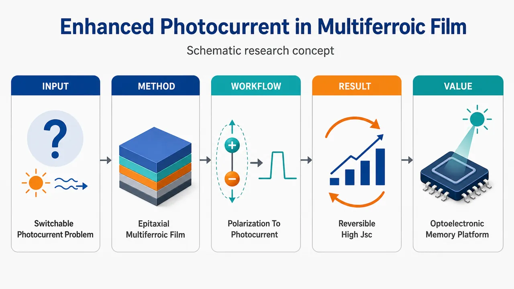
研究问题如何在单相多铁薄膜中实现由铁电极化方向直接调控的增强光电流响应：让同一钙钛矿薄膜同时具备铁电极化、室温弱铁磁性和可反转光伏输出，而不是依赖传统 p-n 结或简单界面效应。创新方法构建外延 0.5PZT-0.5PFN 单相多铁薄膜：用 PZT 提供强铁电极化，用含 Fe/Nb 的 PFN 引入磁性与更有利的光吸收/载流子调控，在 SrTiO₃(001)/SrRuO₃ 底电极上通过脉冲激光沉积形成高取向单一钙钛矿相；Aha 点是把“可翻转铁电极化”变成“光电流方向和强度的非易失开关”。工作流程SrTiO₃(001) 衬底与 SrRuO₃ 底电极作为外延模板 → PLD 生长 0.5Pb(Zr₀.₅₂Ti₀.₄₈)O₃-0.5Pb(Fe₀.₅Nb₀.₅)O₃ 薄膜 → 获得 (001) 取向单相钙钛矿结构 → 测量 PUND 铁电极化和室温磁滞 → 用外电场预设极化向上/向下 → 403 nm 激光照射产生电子—空穴对 → 极化内建场分离载流子 → 输出正/负可切换短路光电流。关键结果薄膜呈单一钙钛矿相和强 (001) 外延取向；PUND 剩余极化约 17 μC/cm²，矫顽场约 150 kV/cm；室温弱铁磁剩磁 1.30 emu/cm³，磁矫顽场 90 Oe；在 403 nm 单色激光下获得极化依赖光伏响应，短路电流密度 Jsc 达 ±20 μA/cm²，显示光电流可随铁电极化状态反向切换。应用价值该薄膜可作为先进铁电光伏与光电存储材料：极化状态可像电写入的“记忆位”一样保持，光照下用正/负光电流读出；同时兼具磁性、铁电性和光响应，为非 BiFeO₃ 路线的单相多铁光伏器件、可编程光探测器和非易失光电存储器提供候选平台。第一部分：核心概览（Overview）
该研究展示了外延 0.5PZT-0.5PFN 单相多铁薄膜中可由铁电极化调控的增强光电流响应。薄膜在 SrTiO₃(001)/SrRuO₃ 上通过 脉冲激光沉积制备，兼具良好铁电性、室温弱铁磁性与偏振依赖光伏效应，短路电流密度达到 ±20 μA/cm²。核心贡献在于把 铁电极化—光伏响应耦合与 单相多铁薄膜结合，为光伏器件和光电存储器提供材料候选。
---
第二部分：结构化快速回顾
《Enhanced Photocurrent Response in Epitaxial 0.5PZT-0.5PFN Multiferroic Thin Films》（None，）
背景
多铁材料中 铁电极化与 光伏效应的耦合对下一代光电器件具有关键意义。传统光伏材料多依赖 p-n 结，而铁电/多铁光伏可利用内部极化场实现可开关、非易失的光电响应。
方法
制备对象为 0.5Pb(Zr₀.₅₂Ti₀.₄₈)O₃-0.5Pb(Fe₀.₅Nb₀.₅)O₃ 多铁薄膜，采用 pulsed laser deposition, PLD 生长在 SrTiO₃(001) 衬底上，并使用 SrRuO₃ 作为底电极。
结果
薄膜表现出单一钙钛矿相、强 (001) 取向、良好铁电性和室温弱铁磁性。铁电剩余极化约 17 μC/cm²，矫顽场约 150 kV/cm；磁滞回线显示剩磁 1.30 emu/cm³、磁矫顽场 90 Oe。在 403 nm 单色激光照射下，短路电流密度 Jsc 可达 ±20 μA/cm²。
讨论
光电流随铁电极化方向改变而变化，说明光伏响应不是单纯由电极非对称性或缺陷导电产生，而与 铁电极化调控的内部电场密切相关。
局限
可用材料未包含完整实验细节，例如薄膜厚度、沉积温度、氧压、激光能量密度、光强、器件面积、稳定性循环次数、统计误差和对照样品信息。现有信息不足以判断可重复性、量子效率、长期疲劳行为和器件级性能。
结论
外延 0.5PZT-0.5PFN 单相多铁薄膜同时实现铁电性、弱铁磁性和可极化调控的光电流响应，显示其在 advanced photovoltaic 与 optoelectronic memory applications 中具有应用潜力。
---
第三部分：逐章节冷凝解析（Section-by-Section Condensing）
可解析的原始章节标题仅包含 Abstract。正文中的 Introduction、Experimental Methods、Results、Discussion、Conclusion 等章节内容未出现在提供材料中，无法进行逐章节还原或补充英文原文引述。
---
Abstract
Motivation and device relevance
多铁材料被置于下一代光电器件材料探索的核心位置，关键科学目标是实现 铁电极化与 光伏效应之间的强耦合。摘要开篇明确指出该方向的重要性：*"The exploration of novel multiferroic materials with strong coupling between ferroelectric polarization and photovoltaic effects is crucial for next-generation optoelectronic devices."*
这一表述强调的不是普通光吸收或普通铁电性，而是 ferroelectric polarization 对 photovoltaic effects 的可调控关系，即光电流方向、大小或开路电压可能受极化状态控制。
Material composition and multiferroic design
研究对象是复合钙钛矿体系 0.5Pb(Zr₀.₅₂Ti₀.₄₈)O₃-0.5Pb(Fe₀.₅Nb₀.₅)O₃，即 0.5PZT-0.5PFN。其中 PZT 主要贡献强铁电性，PFN 引入含 Fe 的磁性组分，形成单相多铁候选体系。摘要给出完整化学组成：*"0.5Pb(Zr0.52Ti0.48)O3-0.5Pb(Fe0.5Nb0.5)O3 multiferroic thin films"*。
该组分设计的关键在于把 Pb(Zr,Ti)O₃ 的成熟铁电性能与 Pb(Fe,Nb)O₃ 的磁性/窄带隙潜力结合，从而改善铁电光伏响应。
Epitaxial growth architecture
薄膜通过 脉冲激光沉积，pulsed laser deposition, PLD 生长，衬底为 SrTiO₃(001)，底电极为 SrRuO₃。摘要给出器件结构：*"grown by pulsed laser deposition on SrTiO3 (001) substrates with a SrRuO3 bottom electrode."*
这一结构具有明确的外延取向意义：SrTiO₃(001) 提供晶格匹配和取向模板，SrRuO₃ 兼具导电性和钙钛矿结构匹配，有利于高质量铁电薄膜生长和电学测试。
Crystalline quality and phase purity
薄膜显示出优良晶体质量，核心证据是 单一钙钛矿相与 (001) 取向。摘要中的直接表述为：*"The films exhibited excellent crystalline quality, with a single perovskite phase and (001) orientation."*
这里的 single perovskite phase 尤其重要，因为含 Fe 和 Pb 的复杂氧化物薄膜容易出现焦绿石相、氧化铁杂相或其他第二相；单相结果支持后续铁电、磁性和光伏响应来自同一材料体系，而不是外来杂相。
Ferroelectric performance
薄膜具有良好铁电性能，剩余极化约 17 μC/cm²，测量方法为 PUND，矫顽场约 150 kV/cm。摘要给出数据：*"They displayed good ferroelectric properties (remanent polarization ∼17 μC/cm2, PUND; coercive field ∼150 kV/cm)"*。
PUND 测量可区分真正的可开关极化与漏电/介电充放电贡献，因此 17 μC/cm² 的剩余极化比普通 P-E 回线读数更具可信度。150 kV/cm 的矫顽场说明极化翻转需要较强电场，符合外延铁电薄膜中畴壁受应变、缺陷和界面钉扎影响的常见特征。
Room-temperature magnetic response
薄膜在室温表现出 弱铁磁行为，剩磁为 1.30 emu/cm³，磁矫顽场为 90 Oe。摘要给出磁性指标：*"alongside weak ferromagnetic behavior at room temperature (remanence 1.30 emu/cm3; coercive field 90 Oe)."*
该结果支持 multiferroic 定性：材料同时具有铁电性与磁性。由于剩磁数值较小，表述为 weak ferromagnetic behavior 较为谨慎；这可能来源于 Fe 相关交换作用、反铁磁结构中的自旋倾斜，或薄膜缺陷诱导的磁矩不完全抵消。
Polarization-dependent photovoltaic response
在 403 nm 单色激光照射下，薄膜产生强健的、依赖极化方向的光电响应。摘要明确写道：*"Photovoltaic measurements demonstrated a robust, polarization-dependent photoresponse under 403 nm monochromatic laser illumination"*。
403 nm 对应光子能量约 3.08 eV，接近许多铅基钙钛矿氧化物的带隙范围，因此可有效激发电子—空穴对。polarization-dependent 是科学亮点，意味着光生载流子的分离和输运受到铁电极化方向控制。
Short-circuit photocurrent magnitude
短路电流密度 Jsc 达到 ±20 μA/cm²，摘要给出关键性能值：*"achieving Jsc values between ±20 μA/cm2."*
正负号说明光电流方向可逆或至少随极化状态/偏压历史发生反转，这与铁电光伏中的 switchable photocurrent 特征一致。对于氧化物铁电薄膜而言，几十 μA/cm² 量级的 Jsc 已经具有明显增强意义，尤其是在单相多铁体系中。
Intrinsic coupling interpretation
观测到的光电流可由铁电极化与光伏效应之间的内禀耦合解释。摘要中使用了强判断语气：*"This compelling observation confirms the intrinsic coupling between ferroelectric polarization and photovoltaic effects"*。
这里的 intrinsic coupling 指光伏响应不是完全由电极功函数差、肖特基势垒、氧空位迁移或外加偏压引起，而是与材料内部的铁电极化状态直接相关。不过，是否完全排除界面效应仍需要完整正文中的对照实验、极化翻转测试、光强依赖、波长依赖和电极对称性分析支持。
Application potential
材料被定位于先进光伏与光电存储应用。摘要最后指出：*"highlighting the considerable promise of these single-phase multiferroic thin films for advanced photovoltaic and optoelectronic memory applications."*
optoelectronic memory 的潜在机制在于极化状态可非易失保存，而不同极化状态对应不同光电流方向或强度，从而可实现光读出、电写入或光电协同存储。
---
第四部分：深度理解与语言支持（Understanding & Nuance）
1. 术语解析
#### Multiferroic thin films
Multiferroic 指同一材料中同时存在两种或多种铁性有序，例如 ferroelectricity、ferromagnetism、ferroelasticity。这里的重点是薄膜同时表现出 铁电剩余极化和 室温弱铁磁性。
微妙之处在于，multiferroic 不必等同于强磁性；摘要中使用 weak ferromagnetic behavior，说明磁性较弱但具有磁滞特征。
#### Ferroelectric polarization
Ferroelectric polarization 是可由外电场翻转并在去除电场后保持的自发极化。这里的关键数据是 remanent polarization ∼17 μC/cm²。
它与普通介电极化不同：普通介电极化随外场消失而消失，而铁电极化具有 非易失性，这正是光电存储应用的基础。
#### PUND
PUND 是 Positive-Up-Negative-Down 测量协议，用于区分真正的铁电开关电荷与漏电流、介电充放电等非铁电贡献。
摘要中将剩余极化标注为 “PUND”，提高了铁电数据的可信度，因为单纯 P-E 回线在漏电较强的含 Fe 氧化物中容易高估极化。
#### Polarization-dependent photoresponse
Polarization-dependent photoresponse 指光电流或光电压随铁电极化方向改变而改变。
该表达比普通 photocurrent response 更强，因为它暗示光伏效应具有可编程性：极化向上与极化向下可能对应相反方向或不同大小的光电流。
#### Intrinsic coupling
Intrinsic coupling 指材料内部铁电极化与光伏响应之间存在本征联系，而不是单纯由外部电极、界面势垒或缺陷迁移造成。
不过在实验判据上，intrinsic 是较强表述，需要依赖多种排除性证据，例如极化翻转前后光电流反转、不同电极结构对比、暗电流控制、光强依赖、温度依赖和重复循环稳定性。
---
2. 疑难查证
#### 为什么铁电材料能产生可反转光电流？
普通半导体太阳能电池依赖 p-n 结内建电场分离光生电子和空穴。铁电材料没有传统 p-n 结也能产生光电流，因为其内部存在 自发极化场。当光照产生电子—空穴对时，极化相关的内部电场、畴壁势垒、退极化场或界面能带弯曲可驱动载流子定向运动。
当外加电场把极化方向从“向上”切换为“向下”时，内部电场方向也可能随之改变，光生载流子的漂移方向发生反转，因此 Jsc 可以从正值变为负值。摘要中的 “Jsc values between ±20 μA/cm²” 正是这种可反转响应的关键信号。
#### 为什么单相多铁比复合异质结构更有科学价值？
复合异质结构可以把铁电层、磁性层、光吸收层叠加起来，容易获得多功能响应，但不同功能常来自不同材料界面。单相多铁薄膜中，铁电性、磁性和光伏效应来自同一晶体相，耦合更可能具有内禀性。
摘要中特别强调 “single perovskite phase” 和 “single-phase multiferroic thin films”，说明科学重点不是简单叠层器件，而是同一钙钛矿相中实现多功能耦合。
#### 为什么 403 nm 光照重要？
403 nm 对应紫光，光子能量约为：
[
E = frac1240403 approx 3.08 eV
]
这一能量足以激发许多氧化物钙钛矿中的带间跃迁。若材料带隙接近或低于 3.08 eV，403 nm 光可产生有效光生载流子。PZT 通常带隙较宽，而 PFN 由于 Fe 3d 态引入可能降低有效光学带隙，因此 PZT-PFN 固溶体系可能比纯 PZT 更适合产生光电流。
---
第五部分：创新评估与关联（Synthesis & Novelty）
1. 创新性判断
#### Single-phase PZT-PFN platform for switchable photovoltaic response
新颖性集中在 0.5PZT-0.5PFN 外延单相多铁薄膜中同时获得铁电性、弱铁磁性和可极化调控的光伏响应。过去几年铁电光伏研究常集中在 BiFeO₃、掺杂 BaTiO₃、PZT 基薄膜或多层异质结构；PZT-PFN 固溶体系作为兼具高铁电性与 Fe/Nb 相关电子结构调控能力的材料平台，提供了不同于经典 BiFeO₃ 路线的选择。
#### Coupling between ferroelectric polarization and photocurrent
核心问题是：光电响应能否由铁电极化直接调控，并在单相多铁体系中达到可观电流密度。该研究给出的 ±20 μA/cm² Jsc 和 polarization-dependent photoresponse 指向可开关光电流，为铁电光伏存储提供基础证据。
#### Combination of epitaxy, ferroelectricity, magnetism, and photocurrent
科学价值不只在某一个性能指标，而在多项功能的并存：
- 单一钙钛矿相；
- (001) 高取向外延薄膜；
- PUND 剩余极化 ∼17 μC/cm²；
- 矫顽场 ∼150 kV/cm；
- 室温弱铁磁剩磁 1.30 emu/cm³；
- 磁矫顽场 90 Oe；
- 403 nm 下 Jsc 达 ±20 μA/cm²。
这种组合使材料同时服务于 铁电调控、磁性功能、光伏读出、非易失存储 等方向。
#### Unresolved gap addressed
前人难点通常包括：
- 多铁材料光电流较弱；
- 铁电性与磁性难以在室温单相材料中同时保持；
- 光伏响应容易被界面效应、缺陷迁移或漏电流混淆；
- 高质量外延薄膜制备难度较高。
该研究至少在摘要层面回应了前三个问题：通过 高质量外延单相薄膜获得明确铁电性、室温弱铁磁性和偏振依赖光电流。
#### Remaining novelty verification needed
完整创新性仍需正文细节进一步确认，特别是：
- 与纯 PZT、纯 PFN、不同 PZT/PFN 比例样品的对照；
- 与 BiFeO₃、PZT、PFN 薄膜的 Jsc 定量比较；
- 光电流随极化翻转的循环稳定性；
- 光强和波长依赖；
- 光电转换效率或外量子效率；
- 不同电极结构下是否仍保持极化依赖；
- 氧空位迁移和界面肖特基势垒贡献是否被排除。
在现有摘要信息下，最稳健的创新判断是：外延 0.5PZT-0.5PFN 单相多铁薄膜实现了显著且可极化调控的光电流响应，为非 BiFeO₃ 路线的多铁光伏材料提供了有竞争力的新候选体系。
-
11
📊 含图深析
💡 亮点：CrSb 的 k 依赖自旋极化可由安德烈夫反射探测。
📖 展开分析 + 配图
第一部分：核心概览
该研究把传统用于铁磁体自旋极化测量的点接触 Andreev 反射谱扩展到交替磁体，提出可由 Andreev 过程读取的动量依赖自旋极化。在 CrSb 单晶三大晶面上测得有限且各向异性的 (Pₖ)：(0001) 为 73.4%、((bar1bar120)) 为 67.9%、((10bar10)) 为 61.9%，并解析出 250–500 nm 交替磁畴和约 250 nm 畴壁。该工作使 Andreev 反射成为探测交替磁体 (k)-空间自旋纹理的局域输运范式。
---
第二部分：结构化快速回顾
《Andreev Reflection to Probe Momentum-Dependent Spin Polarization in Altermagnet CrSb》（None，）
背景
交替磁体同时具有零净磁化和动量依赖自旋劈裂，不同于传统铁磁体和反铁磁体。CrSb 具有 (g)-wave 自旋劈裂和高 Néel 温度 (T_N=723) K，是重要候选体系。传统 ARPES 容易受到较大光斑覆盖多畴导致的空间平均影响，难以定量局域 (Pₖ)。
方法
采用机械点接触谱，用超导 Nb tip 接触 CrSb 单晶三大晶面：(0001)、((bar1bar120))、((10bar10))。在 0.3 K 和 1.5 K 低温下测量 (G(V))，用修正 BTK 模型拟合，参数包括 (Pₖ)、界面势垒 (Z)、展宽 (Γ)、超导能隙 (Δ)。
结果
所有晶面均出现双峰结构和零偏压电导凹陷，表明 Andreev 反射被有限自旋极化抑制。外推 (Z → 0) 得到本征 (Pₖ)：(0001) 73.4%、((bar1bar120)) 67.9%、((10bar10)) 61.9%。温度升高至 Nb 超导转变以上时谱线变平，低于 Nb (T_c) 时 (Pₖ) 基本不变。
讨论
偶宇称交替磁体中 (Nₖ,σ=N₋ₖ,σ)，Andreev 反射要求 (|k,p̆arrowångle) 与 (|-k,downarrowångle) 成对，因此可直接感知 (k)-依赖自旋不匹配。CrSb 的零净磁化避免了常见铁磁体/Nb 接触中的负近邻效应，Nb 能隙接近文献值 1.6 meV。
局限
第一性原理给出三个方向约 87.4%、85.6%、85.4%，系统性高于实验值，原因可能来自忽略透射系数、界面势垒、各向异性散射等。BTK 拟合仍沿用铁磁点接触框架，对交替磁体界面微观过程尚需更真实模型。
结论
Andreev 反射可作为交替磁体 (Pₖ) 的局域探针，并能解析纳米尺度磁畴。CrSb 展现高动量依赖自旋极化、零净磁化和稳定超导接触兼容性，是交替磁自旋电子学的有力平台。
---
第三部分：逐章节冷凝解析
Abstract
- Altermagnets combine zero net magnetization with momentum-dependent spin splitting
交替磁体的核心物理特征是同时具备零净磁化与(k)-依赖自旋劈裂能带结构，这使其区别于传统铁磁体和反铁磁体，并成为新型自旋电子学候选材料。原文指出：*"Altermagnetic materials have recently emerged as promising candidates for next-generation spintronic applications, characterized by the (k)-dependent spin-splitted band structure and a simultaneous zero-net-magnetization."*
- CrSb is selected because of g-wave spin splitting and high Néel temperature
CrSb 被定位为关键交替磁候选体，原因包括 (g)-wave 自旋劈裂和高温磁有序稳定性。原文表述为：*"Among them, altermagnetic candidate CrSb has attracted considerable attention, owing to its g-wave spin splitting and high Néel temperature."*
- Mechanical point-contact spectroscopy directly probes Andreev reflection along three crystallographic orientations
实验采用机械点接触谱，使用超导 Nb 探针，沿 CrSb 单晶三大晶向测量 Andreev 反射响应。关键实验配置为：*"we employed mechanical point-contact spectroscopy (MPCS) with superconducting Nb tips to probe the Andreev reflection on CrSb single crystals along three principal crystallographic orientations."*
- Extracted momentum-dependent spin polarizations are large and anisotropic
三个晶面得到的 (Pₖ) 均显著非零，且具有方向差异：(0001) 73.4%、((bar1bar120)) 67.9%、((10bar10)) 61.9%。原文给出：*"The extracted momentum-dependent spin polarizations are approximately 73.4% for the (0 0 0 1) plane, 67.9% for the ((øverline1øverline12 0)) plane, and 61.9% for the ((1 0 øverline10)) plane, respectively, distinct from conventional antiferromagnets."*
- Spatial line scans reveal nanoscale altermagnetic domains and domain walls
空间线扫电导谱显示交替磁畴尺寸约 250–500 nm，畴壁宽度约 250 nm，说明 MPCS 具备局域分辨优势。原文证据为：*"conductance spectra from spatial line-scans on the sample surface support the existence of altermagnetic domains with a characteristic size of 250-500 nm separated by domain-walls with width about 250 nm."*
- Andreev reflection is established as a probe of k-dependent spin textures
该研究的范式创新在于把 Andreev 反射从传统铁磁自旋极化测量推广到交替磁体 (k)-空间自旋纹理探测。原文总结为：*"These results strongly support the momentum-dependent spin polarization in altermagnetic CrSb and establish Andreev reflection as a new paradigm to probe (k)-dependent spin textures."*
---
Main text
- Spin polarization is conventionally defined as a global Fermi-level density-of-states imbalance
自旋电子学中传统自旋极化 (P) 是费米能级处自旋上、下态密度的不平衡，定义为
[
P=fracNₚ̆ₐᵣᵣₒw(E_F)-Ndₒwₙₐᵣᵣₒw(E_F)
Nₚ̆ₐᵣᵣₒw(E_F)+Ndₒwₙₐᵣᵣₒw(E_F).
]
原文说明：*"The spin polarization (P) is a crucial parameter to describe the global spin-imbalance between the spin-up and -down bands in spintronics"*，并定义 (N_σ(E_F)) 为 *"the spin-dependent density of states at the Fermi level."*
- Global spin polarization is insufficient for altermagnets
交替磁体整体 (P) 为零，但局域动量点上存在自旋劈裂，因此需要新的 (Pₖ) 参数。原文指出：*"Although the overall spin-polarization (P) vanishes in altermagnets, the system exhibits a momentum-dependent spin splitting and a new parameter should be introduced to characterize the degree of such momentum-resolved spin polarization."*
对应定义为
[
Pₖ₌fracint d³k,|Nₖ,ₚ̆ₐᵣᵣₒw-Nₖ,dₒwₙₐᵣᵣₒw|
int d³k,(Nₖ,ₚ̆ₐᵣᵣₒw+Nₖ,dₒwₙₐᵣᵣₒw).
]
- The experimental goal is to distinguish altermagnets from ferromagnets and antiferromagnets through (Pₖ)
传统铁磁体有非零全局 (P)，传统反铁磁体因零净磁化常缺少可用全局自旋极化；交替磁体则需要通过 (k)-分辨自旋极化识别。原文明确目标：*"It is thus interesting to experimentally probe the (k)-dependent spin polarization (Pₖ) in altermagnets to distinguish them from conventional ferromagnets or antiferromagnets."*
- CrSb has hexagonal (P6₃/mmc) structure and g-wave sixfold spin texture
CrSb 晶体结构属于六方 (P6₃/mmc) 空间群，理论提出其自旋对称性为 (g)-wave，在 (k)-空间呈现六重自旋纹理。原文为：*"A prototypical altermagnetic candidate CrSb crystallizes in the hexagonal structure with space group (P6₃/mmc)"*，且 *"its spin symmetry is proposed to be g-wave, exhibiting a sixfold spin texture in the (k)-space."*
- Cr magnetic moments are ferromagnetic in-plane and antiferromagnetic between layers
CrSb 的磁结构为：每个平面内 Cr 磁矩铁磁排列，相邻层之间通过非磁性 Sb 间隔并反铁磁排列。原文描述为：*"the Cr moments align ferromagnetically within each plane and antiferromagnetically between adjacent layers separated by nonmagnetic Sb atoms."*
- CrSb has a very high Néel temperature and ARPES-confirmed band splitting
中子衍射确认 CrSb 的 Néel 温度 (T_N=723) K，ARPES 在薄膜和块体样品中直接观测到大自旋诱导能带劈裂。原文证据为：*"Neutron diffraction has confirmed its high Néel temperature ((T_N=723) K)"*，以及 *"ARPES measurements on both thin films and bulk crystals have directly observed the large spin-induced band splitting."*
- ARPES underestimates spin polarization because of domain averaging
ARPES 报告的自旋极化值偏小，主要可能来自光斑覆盖多个相反自旋交替磁畴导致平均抵消。原文解释：*"the reported spin polarization value in ARPES is significantly smaller and this discrepancy can be ascribed to a large spot size in ARPES."* 进一步指出：*"If the light spot covers a large surface area for CrSb with multiple altermagnetic domains in opposite spins, the finite spin-polarization (P) averages out owing to opposite spins with a domain-averaged effect."*
- Point-contact spectroscopy reduces domain-averaging effects
点接触谱因接触区域局域，可降低多畴平均效应，更适合提取局域 (Pₖ)。原文动机为：*"It is thus desirable to develop an alternative method to access the (k)-dependent spin polarization with reduced domain-averaging effects."*
- Andreev reflection measures spin polarization in ferromagnets through suppressed subgap conductance
在普通金属/超导界面，入射自旋上电子被反射为自旋下空穴，同时库珀对进入超导体，导致亚能隙电导增强。原文过程为：*"a spin-up (down) electron from the normal metal is retro-reflected as a spin-down (up) hole and a Cooper pair can go across the interface and enter into superconductor."*
铁磁体中自旋上、下态不平衡会抑制 Andreev 反射：*"the imbalance between spin-up and -down bands would result in a suppression of Andreev reflection."*
- Modified BTK model decomposes conductance into unpolarized and polarized contributions
传统点接触 Andreev 反射用修正 BTK 模型拟合：
[
G(V)=(1-P)Gᵤ(V)+P Gₚ(V).
]
原文给出：*"Its (P) can be extracted by fitting the conductance spectra (G(V)) with a modified Blonder–Tinkham–Klapwijk (BTK) model."* 其中 *"(Gᵤ) and (Gₚ) denotes contributions from spin-unpolarized and -polarized parts, respectively."*
- Ferromagnets equate global (P) and momentum-resolved (Pₖ), but altermagnets do not
铁磁体的 (k)-空间自旋劈裂近似各向同性，因此全局 (P) 与 (Pₖ) 可等同；交替磁体中该等价失效。原文指出：*"For ferromagnets, the isotropic spin splitting in (k)-space guarantees the global spin polarization (P) identical to (Pₖ). However, this equivalence no longer necessarily holds for the case of altermagnets."*
- Even-parity altermagnets suppress Andreev reflection because (k) and (-k) have the same spin
偶宇称交替磁体，如 (d)-wave 或 (g)-wave 自旋纹理，满足 (Nₖ,σ=N₋ₖ,σ)。Andreev 反射需要 (|k,p̆arrowångle) 与 (|-k,downarrowångle) 组成库珀对；若二者同自旋，则反射被抑制。原文为：*"Except for the nodal region in (k) space, Andreev reflection can be completely suppressed, because the d-wave altermagnet with an even-parity symmetry yields the same spin for both (k) and (-k)."*
- Andreev spin polarization (PAR) is defined by the (k) versus (-k) spin mismatch
适合 Andreev 过程的新量为
[
PAR=
fracint d³k,|Nₖ,ₚ̆ₐᵣᵣₒw-N₋ₖ,dₒwₙₐᵣᵣₒw|
int d³k,(Nₖ,ₚ̆ₐᵣᵣₒw+N₋ₖ,dₒwₙₐᵣᵣₒw).
]
原文指出：*"Consequently, Andreev reflection can probe a new spin polarization value defined as (PAR)."*
- For even-parity altermagnets, (PAR=Pₖ)
对 偶宇称交替磁体，由于 (Nₖ,σ=N₋ₖ,σ)，Andreev 反射测到的 (PAR) 等于动量依赖自旋极化 (Pₖ)。原文给出：*"In even-parity altermagnets (e.g., with d or g-wave–type spin textures), the spin-resolved densities of states satisfy (Nₖ,σ=N₋ₖ,σ), immediately yielding (PAR=Pₖ)."*
- Andreev reflection in altermagnets had not been experimentally explored before this work
该研究填补了交替磁体 Andreev 反射实验空白。原文说明：*"Despite of this theoretical consideration, Andreev reflection in altermagnets has not yet been experimentally explored to confirm its validity."*
- CrSb single crystals are synthesized by tin-flux and oriented by Laue diffraction
样品制备采用锡助熔剂法，三大晶面为 (0001)、((bar1bar120))、((10bar10))，晶向由 Laue 方法确认。原文为：*"High-quality CrSb single crystals were synthesized by the tin-flux method"*，以及 *"Three major crystallographic planes (0 0 0 1), ((øverline1øverline12 0)), and ((1 0 øverline10)) were prepared and their orientations were confirmed by the Laue methods."*
- Nb tips are electrochemically etched in 12 mol/L NaOH
超导 Nb 探针通过电化学腐蚀制备，腐蚀液为 12 mol/L NaOH。原文细节为：*"superconducting niobium (Nb) tips were prepared by electrochemical etching with a 12 mol/L sodium hydroxide (NaOH) solution."*
- Point contacts are formed at low temperature with Attocube nanopositioners
点接触通过低温下将尖锐 Nb tip 精确接触 CrSb 表面形成，使用 Attocube nano-positioners。原文描述：*"Point-contacts were established by precisely engaging a sharp Nb tip on the CrSb sample surface with Attocube nano-positioners at low temperatures."*
- Conductance is measured by lock-in technique in quasi-four-probe geometry
电导 (G(V)) 通过传统锁相技术和准四探针构型测量。原文为：*"The contact conductance (G) was measured by the conventional lock-in technique in a quasi-four-probe configuration and its values as a function of bias voltage, (G(V)), were recorded."*
- Low-temperature platforms reach 0.3 K and 1.5 K
CrSb 和 Nb tip 低温测量分别使用 Oxford (³)He 与 (⁴)He 制冷机，可达 0.3 K 与 1.5 K。原文为：*"The CrSb sample and Nb tip were cooled down to 0.3 K and 1.5 K by the Oxford (³)He and (⁴)He refrigerator, respectively."*
- All crystallographic planes show double peaks and zero-bias dips
三个晶面电导谱均具有双峰结构和明显零偏压凹陷，这是有限自旋极化抑制 Andreev 反射的特征。原文为：*"All the conductance curves exhibit a characteristic double-peak structure with a pronounced dip at zero bias, indicative of a finite spin polarization in CrSb."*
- Four-parameter BTK fitting extracts (Pₖ), (Z), (Γ), and (Δ)
拟合参数包括 动量依赖自旋极化 (Pₖ)、界面势垒 (Z)、展宽因子 (Γ)、超导能隙 (Δ)。原文为：*"a modified BTK model was employed to fit the data with four parameters: the momentum-dependent spin polarization (Pₖ), barrier strength (Z), smearing factor (Γ), and the superconducting gap (Δ)."*
- Fits match experimental spectra and support parameter reliability
拟合曲线与实验开圆点电导谱高度一致，说明提取参数可信。原文为：*"The fitting curves (solid lines) show excellent agreement with the experimental conductance curves (open circles), confirming the reliability of the extracted parameters."*
- (Γ) and (Z) remain within narrow ranges across contacts
不同点接触中非弹性散射率 (Γ) 与势垒强度 (Z) 分布较窄，支持测量可重复性。原文为：*"Both the inelastic scattering rate (Γ) and the barrier strength (Z) fall within a relatively narrow range among different contacts, demonstrating the reproducibility and consistency of our MPCS measurements."*
- Increasing (Z) reduces extracted (Pₖ) through interface spin mixing
与铁磁体点接触谱相似，界面势垒 (Z) 增大时，因界面自旋混合，提取的 (Pₖ) 下降。原文为：*"As typically observed in point-contact spectroscopy on ferromagnets, an increase in (Z) leads to a reduction in (Pₖ) due to spin-mixing effects at the interface."*
- Intrinsic (Pₖ) values are obtained by extrapolating to (Z→0)
通过 (Pₖ)–(Z) 线性外推到透明界面极限 (Z→0)，得到本征极化：(0001) 73.4%、((bar1bar120)) 67.9%、((10bar10)) 61.9%。原文为：*"By linearly extrapolating to the (Z→0) limit, we obtain the intrinsic (Pₖ) values of approximately 73.4% for the (0 0 0 1) plane, 67.9% for the ((øverline1øverline12 0)) plane, and 61.9% for the ((1 0 øverline10)) plane."*
- Temperature evolution validates superconducting-origin Andreev features
(0001) 面 (G(V)) 随温度从 1.5 K 到 10 K 升高时，零偏压凹陷和超导峰逐渐展宽并消失；10 K 时 Nb 进入正常态，谱线变平。原文为：*"Fig. 3 (a) shows the (G(V)) curves for the (0 0 0 1) plane with increased temperatures from 1.5 to 10 K, where the zero-bias dip and superconducting peaks become smeared and finally get diminished. At 10 K, the Nb tip becomes in the normal state and the (G(V)) curve becomes flat."*
- Extracted (Pₖ) remains constant below Nb superconducting temperature
三个晶面在 Nb 超导温度以下提取的 (Pₖ) 基本不随温度变化，支持 PCS 方法的可行性和 (Pₖ) 的本征性。原文为：*"the spin-polarization remains the same below the Nb superconducting temperature, strongly supporting the viability of our PCS method."*
- Nb gap follows BCS temperature dependence and is close to 1.6 meV
拟合得到的 Nb 超导能隙 (Δ(T)) 与 BCS 温度行为一致，且接近文献报道 1.6 meV。原文为：*"the extracted Nb superconducting gap values as a function of temperature ... exactly follow the BCS temperature behavior"*，并指出：*"the Nb gaps obtained here are very close to the reported value of 1.6 meV in literature."*
- No Nb gap suppression indicates zero net magnetization in CrSb contact
铁磁材料点接触常因负近邻效应压低 Nb 能隙，而 CrSb/Nb 接触未出现该现象，说明 CrSb 的交替磁性在动量空间交替自旋极化但保持零净磁化。原文为：*"previous studies on ferromagnetic materials often observed a suppressed Nb gap probably owing to the negative proximity effect on the superconducting Nb."* 随后给出物理解释：*"The absence of such a gap suppression in PCS implies that the exotic altermagnetism in CrSb should maintain a zero net magnetization with an alternating spin polarization in the momentum space."*
- Spatial line scans use repeated tip engagement to map local spectra
为探索磁畴结构，使用纳米定位器在样品表面进行低温空间线扫，每个连续位置重新建立 Nb tip/CrSb 点接触并采集 (G(V))。原文为：*"we have performed spatial line-scans of the conductance spectra with nanopositioners to achieve a controllable displacement on the sample surface at low-temperatures."* 以及 *"The Nb tip was repetitively engaged on the CrSb sample and (G(V)) conductance curves were acquired at each consecutive position."*
- Two spectral classes distinguish domains and domain walls
线扫中观察到两类电导谱：一类为明显零偏压凹陷和展宽双峰，对应大 (Pₖ) 的交替磁畴；另一类为浅零偏压凹陷和清晰双峰，对应近零自旋极化畴壁。原文为：*"two distinct sets of (G(V)) curves can be observed during the scan"*；其中畴内区域 *"show a consistent conductance dip and smeared double-peak feature, signaling the altermagnetic domain with large (Pₖ) values"*；畴壁区域 *"have a shallow zero-bias dip and pronounced double-peak, favoring the existence of domain walls with negligible spin polarizations."*
- Neighboring domains remain highly polarized, showing local advantage over ARPES
相邻畴内部 (Pₖ) 值持续较高，显示 MPCS 探测的是局域自旋不平衡，而非 ARPES 那样的空间平均信号。原文为：*"the obtained polarization values inside neighboring domains are consistently high, demonstrating the advantage of MPCS to probe the local spin imbalance instead of the spatially-averaged spin as in ARPES."*
- Domain walls likely recover spin degeneracy through broken long-range altermagnetic order
畴壁中 (Pₖ) 降低，说明长程交替磁有序可能被破坏，局域 (k)-空间自旋简并部分恢复。原文为：*"The reduced (Pₖ) values in domain walls suggest a probable breakdown of the long-range altermagnetic order and the recovery of spin degeneracy at (k) within the area."*
- Estimated domain size is 250–500 nm and domain wall thickness is about 250 nm
根据低温下纳米定位器步长校准，交替磁畴尺寸约 250–500 nm，畴壁厚度约 250 nm，与 MnTe 报道相当。原文为：*"we estimate that the typical altermagnetic domain size is roughly 250-500 nm while the domain wall is about 250 nm thick, comparable to that reported in MnTe."*
- First-principles Wannier simulations reproduce g-wave spin-polarized Fermi surfaces
理论部分基于第一性原理电子结构，用 Cr-3d 和 Sb-5p 轨道构建紧束缚哈密顿量，并使用对称化最大投影 Wannier 函数，得到具有 (g)-wave 对称性的自旋极化费米面。原文为：*"By fitting the first-principles electronic structure to a tight-binding Hamiltonian using Cr-3d and Sb-5p orbitals with symmetrized maximally projected Wannier functions, we calculate the spin polarized Fermi surfaces with a g-wave symmetry."*
- Ballistic-limit formula weights momentum-resolved states by projected Fermi velocity
理论计算采用全弹道极限近似，沿探测方向 (hatn) 计算 (P(hatn))，其中 (vᵢσₖ=hatnḑotvᵢσₖ) 选择与点接触输运相关的态。原文为：*"Employing full ballistic limit approximation, we approximated the integration of (k)-dependent spin polarization along the probing direction (hatn)"*，并说明：*"(vᵢσₖ=hatnḑotvᵢσₖ) selects the relevant (ik) states."*
- Diffusive-limit formula gives essentially the same result
即使改用扩散极限公式，结果仍基本不变，说明关键机制是自旋极化的动量依赖，而非具体输运极限。原文为：*"The results remain essentially the same even if the diffusive limit formula is employed, suggesting that the crucial ingredient here is the momentum dependence of the spin polarization."*
- Andreev selection rule is local in reciprocal space and cannot be reduced to energy integration
Andreev 反射施加的是 (k)-空间局域选择规则，不能把积分简单转化为能量积分。原文为：*"the (k)-space selection rule imposed by the Andreev reflection process is local in the reciprocal space, thus the integration cannot be recast into integration of energy."*
- Calculated polarizations exceed experimental polarizations
理论给出三个方向平均自旋极化：(0001) 87.4%、((bar1bar120)) 85.6%、((10bar10)) 85.4%，均高于实验外推值。原文为：*"Our calculations give an averaged spin-polarization of 87.4% for the (0 0 0 1) plane, 85.6% for ((øverline1øverline12 0)) and 85.4% for ((1 0 øverline10)) plane."*
- The discrepancy likely comes from neglected transmission coefficients and interface details
理论估算忽略透射系数和界面细节，因此计算 (P(hatn)) 高于实验 (Pₖ)。原文为：*"since our estimation of spin polarization completely ignores transmission coefficient and other details, the calculated (P(hatn)) is always larger than the observed (Pₖ) values."* 并指出：*"A more realistic model is highly desirable to explore the discrepancy."*
- Global (P), momentum-dependent (Pₖ), and Andreev (PAR) must be distinguished
三种极化含义不同：全局 (P) 衡量总态密度不平衡；(Pₖ) 衡量动量分辨自旋不平衡；(PAR) 衡量 Andreev 过程配对所需 (kp̆arrow) 与 (-kdownarrow) 的不匹配。原文强调：*"We stress that a special care should be given to distinguish the global, momentum-dependent and Andreev spin polarizations ((P), (Pₖ) and (PAR))."*
- Ferromagnets can have partial global polarization but full Andreev suppression under even-parity spin splitting
对部分极化铁磁体 (0<P<1)，若考虑偶宇称自旋劈裂且 (Pₖ₌₁)，(k) 与 (-k) 同自旋会完全抑制 Andreev 反射，对应 (PAR=Pₖ₌₁)。原文为：*"the even-parity nature of the spin splitting ((Pₖ₌₁) with (Nₖ,σ=N₋ₖ,σ)) totally suppresses the Andreev reflection due to the same spins for (k) and (-k) and results in a full Andreev polarization (PAR=Pₖ₌₁)."*
- Odd-parity altermagnets can have large (Pₖ) but zero Andreev polarization
若非常规磁体具有 (p)-wave 奇宇称，全局 (P=0)，动量依赖 (Pₖapprox1)，但 (k) 与 (-k) 自旋相反，Andreev 配对不被抑制，因此 (PAR=0)。原文为：*"if the unconventional magnet owns an odd-parity symmetry such as p-wave ... the global polarization vanishes with (P=0), while the momentum-dependent polarization (Pₖapprox1) ignoring the nodal region."* 以及：*"the opposite spins for (k) and (-k) would lead to a null Andreev polarization (PAR=0), where Andreev reflection can still be observed."*
- Final physical conclusion: Andreev reflection provides a new paradigm for (Pₖ) in CrSb
研究提出并验证用 Andreev 反射定义和探测交替磁体 (Pₖ) 的方法，三大晶面平均值分别为 73.4%、67.9%、61.9%，并发现纳米磁畴。原文总结为：*"we have proposed a new paradigm to define the momentum-dependent spin-polarization (Pₖ) with Andreev reflection process and employed point-contact spectroscopy with superconducting Nb tips to probe (Pₖ) in the altermagnetic candidate CrSb."*
---
Acknowledgements
- Funding sources support national-level condensed-matter and quantum-materials research
研究经费来自中国国家重点研发计划、国家自然科学基金、北京凝聚态物理国家实验室开放基金、浙江省自然科学基金等。原文列出：*"This work was supported by the National Key R&D Program of China (Grant No. 2025YFA1411500 and 2022YFA1402200), the National Natural Science Foundation of China (Grant No. 12574147, 12274364, and 12174333)."* 另有：*"Y.F.G. acknowledges the open research fund of Beijing National Laboratory for Condensed Matter Physics"*，以及：*"Y.X. was further supported by the National Natural Science Foundation of China ... and Zhejiang Provincial Natural Science Foundation of China."*
---
Data availability
- Data are available upon reasonable request but not publicly posted
支撑结论的数据未公开存储，但可在合理请求下获取。原文为：*"The data that support the findings of this article are not publicly available. The data are available from the authors upon reasonable request."*
---
References
- The citation base links spintronics, altermagnetism, ARPES, Andreev reflection, and Wannier modeling
参考文献体系覆盖五条关键脉络：自旋电子学基础、交替磁理论与材料、CrSb/MnTe/RuO(₂) 等交替磁实验证据、点接触 Andreev 反射测自旋极化、第一性原理 Wannier 建模。代表性引用包括自旋电子学综述 *"Spintronics: Fundamentals and applications"*，交替磁理论 *"Beyond conventional ferromagnetism and antiferromagnetism"*，CrSb 能带劈裂 *"Large band splitting in g-wave altermagnet CrSb"*，Andreev 反射测量 *"Measuring the spin polarization of a metal with a superconducting point contact"*，以及 Wannier 工具 *"Maximally localized Wannier functions for entangled energy bands."*
---
第四部分：深度理解与语言支持
1. 术语解析
- Altermagnetism / altermagnetic materials（交替磁性 / 交替磁体）
指一种介于传统铁磁和反铁磁之外的磁有序：实空间总磁矩可为零，但能带在动量空间发生自旋劈裂。与普通反铁磁体不同，交替磁体可表现出强烈的自旋分裂输运效应；与铁磁体不同，其宏观净磁化为零。语境中的核心短语是 *"(k)-dependent spin-splitted band structure and a simultaneous zero-net-magnetization."*
- Momentum-dependent spin polarization (Pₖ)（动量依赖自旋极化）
不是全局自旋上/下态密度差，而是把每个 (k) 点的自旋不平衡取绝对值后再积分。关键微妙处在于：即使全局 (P=0)，由于不同 (k) 区域自旋极化方向相反，(Pₖ) 仍可很大。该量专门服务于交替磁体的 (k)-空间自旋纹理定量。
- Andreev reflection（Andreev 反射）
正常金属/超导界面上，一个电子反射为空穴，同时一个库珀对进入超导体。它要求入射电子和反射空穴对应的两个电子具有相反自旋，因此对自旋不匹配极其敏感。语境中最关键的机制是：若 (k) 与 (-k) 处不能提供相反自旋配对，Andreev 反射被抑制。
- Barrier strength (Z)（界面势垒强度）
BTK 模型中的无量纲界面透明度参数。(Z=0) 对应理想透明界面；(Z) 越大，界面散射越强。实验上常把不同接触的 (Pₖ) 对 (Z) 作图，并外推到 (Z→0) 获得更接近本征的自旋极化。
- Smearing factor (Γ)（展宽因子）
用于描述非弹性散射、寿命效应、热展宽、接触非理想性等导致的谱线展宽。它不直接代表自旋极化，但会影响双峰、零偏压凹陷等谱形，因此拟合时必须与 (Pₖ)、(Z)、(Δ) 同时处理。
2. 疑难查证
- 为什么全局 (P=0) 的交替磁体仍能抑制 Andreev 反射？
全局 (P) 是把整个费米面上的自旋上、下态密度相加后比较。如果一个区域自旋上多、另一个对称区域自旋下多，两者相加会抵消，得到 (P=0)。但 Andreev 反射不是“全费米面平均配对”，而是要求某个 (k) 态的电子与 (-k) 态的相反自旋电子形成库珀对。若偶宇称交替磁体中 (k) 和 (-k) 处是同自旋，那么虽然全局不显磁化，局域配对通道仍被阻断，亚能隙电导就会下降。
- 为什么 (PAR) 不总是等于 (Pₖ)？
(Pₖ) 比较的是同一个 (k) 点处 (Nₖ,ₚ̆ₐᵣᵣₒw) 与 (Nₖ,dₒwₙₐᵣᵣₒw) 的差异；(PAR) 比较的是 Andreev 配对实际需要的 (Nₖ,ₚ̆ₐᵣᵣₒw) 与 (N₋ₖ,dₒwₙₐᵣᵣₒw)。只有在偶宇称自旋纹理满足 (Nₖ,σ=N₋ₖ,σ) 时，二者才相等。奇宇称 (p)-wave 情况下，(k) 和 (-k) 自旋相反，(Pₖ) 可接近 1，但 Andreev 配对仍顺畅，(PAR) 可为 0。
- 为什么 ARPES 看到的自旋极化可能比 MPCS 小？
ARPES 光斑通常覆盖较大表面积。如果样品表面存在多个交替磁畴，相邻畴的自旋纹理可能相反，ARPES 记录的是空间平均后的谱函数，自旋信号会互相抵消。MPCS 的点接触区域更局域，能够落在单个畴或畴壁上，因此可解析高 (Pₖ) 畴和低 (Pₖ) 畴壁。
- 为什么 Nb 能隙没有被压低很重要？
铁磁体接触超导体时，净磁化和交换场可通过近邻效应破坏超导配对，使 Nb 能隙变小。CrSb/Nb 接触中 (Δ(T)) 仍接近 BCS 行为和文献值 1.6 meV，说明 CrSb 虽具有强 (k)-空间自旋极化，但宏观上没有强净磁化破坏 Nb 超导。这正是交替磁体兼具“强自旋效应”和“低杂散磁场”的器件优势。
---
第五部分：创新评估与关联
1. 创新性判断
- 从“观察能带劈裂”推进到“局域定量 (Pₖ)”
过去 2–5 年内，交替磁研究的主线集中在 ARPES 观测 RuO(₂)、MnTe、CrSb 等材料中的 Kramers 简并破缺、巨大自旋劈裂、三维能带映射和反常霍尔响应。此类工作证明了交替磁能带存在，但对局域动量依赖自旋极化强度的输运定量仍不足。该研究给出 CrSb 三个晶面的 (Pₖ) 数值，并把 (Z→0) 外推用于本征估计，填补了“看见劈裂”与“量化可用于器件的自旋极化”之间的空缺。
- 把 Andreev 反射从铁磁自旋极化测量推广到交替磁体
点接触 Andreev 反射长期用于铁磁金属自旋极化测量，但默认全局 (P) 与输运自旋极化相关。交替磁体中全局 (P=0)，传统逻辑看似不适用。该研究提出 (PAR) 并证明在偶宇称 (d/g)-wave 交替磁体中 (PAR=Pₖ)，使 Andreev 反射成为交替磁体 (k)-空间自旋纹理探针。
- 解决 ARPES 多畴平均造成的自旋极化低估问题
CrSb ARPES 已报道大能带劈裂，但自旋极化值偏小可能来自大光斑覆盖相反交替磁畴。MPCS 的局域接触规避了这种平均，线扫还直接显示畴内高 (Pₖ)、畴壁低 (Pₖ) 的空间变化。因此创新点不只是换一种谱学方法，而是针对交替磁材料的畴平均瓶颈提供解决方案。
- 首次把 Andreev 谱与交替磁畴成像联系起来
线扫电导谱给出 250–500 nm 畴尺寸和约 250 nm 畴壁宽度，使点接触谱不仅测 (Pₖ)，还可作为纳米尺度交替磁畴探针。与 MnTe 近场/显微成像类工作相比，这里展示的是基于超导界面输运的畴敏感性。
- 揭示交替磁体与超导体界面的独特兼容性
CrSb 在表现出高 (Pₖ) 的同时没有显著压低 Nb 超导能隙，区别于许多铁磁体/超导体接触。这为未来超导自旋电子学和低杂散场自旋器件提供了新的材料逻辑：利用动量空间强自旋极化，而避免实空间净磁化对超导的不利影响。
- 仍需突破的问题
第一性原理计算值约 85–87%，实验值约 62–73%，二者存在系统偏差。当前模型忽略界面透射系数、真实势垒形貌、轨道选择规则、接触弹道/扩散混合、局域畴结构和表面重构等因素。后续关键任务是建立真正适用于交替磁体/超导体界面的微观 Andreev 理论，而非简单沿用铁磁 BTK 拟合框架。
-
12
📊 含图深析
💡 亮点：局域拉伸应变可选择 FeTe 反铁磁基态。
📖 展开分析 + 配图
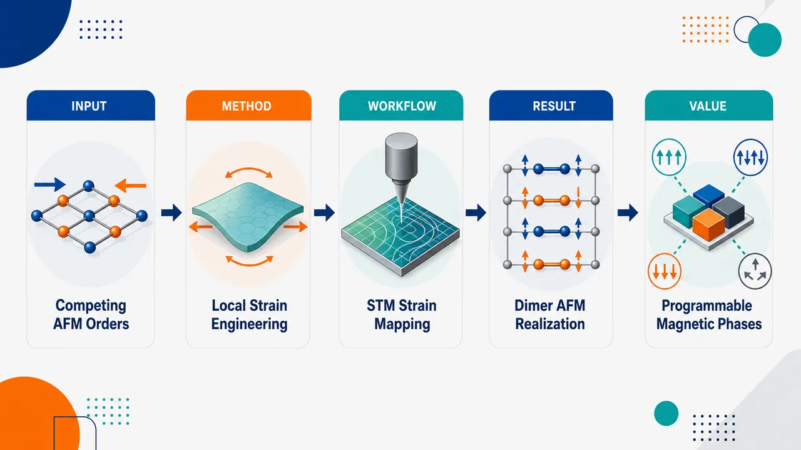
研究问题FeTe 薄膜中 bicollinear AFM 与 dimer AFM 等反铁磁基态能量接近、相互竞争，磁序受晶格畸变强烈影响；核心问题是如何利用可控的局域应变，在位错附近从多个近简并磁相中定向选择并稳定特定反铁磁序，尤其是长期难以实验实现的长程 dimer AFM。创新方法将高分辨 STM 实空间成像与 DFT 能量计算结合，把位错区域作为天然“局域单轴应变发生器”，逐点绘制 FeTe 和 FeTe/FeSe 异质结构中的应变场，并把不同晶向、不同分量的应变与磁基态一一对应；Aha 点在于不是施加平均外延应变，而是利用位错附近的方向性应变张量，像旋钮一样选择 bicollinear 或 dimer 反铁磁序。工作流程输入少层 FeTe 薄膜和 FeTe/FeSe 异质结构样品；在位错附近用 STM 获取原子级表面图像和电子重构图案；从晶格畸变中提取局域应变方向与强度；识别 bicollinear 条纹取向和 √2 × √2 电子重构信号；用 DFT 比较不同应变条件下候选反铁磁态的稳定性；输出“特定应变分量—特定磁基态”的对应图谱。关键结果沿 Fe-Fe 次近邻方向的单轴压缩稳定 bicollinear AFM，磁条纹方向与压缩轴平行；沿 Fe-Fe 最近邻方向的各向异性应变诱导长程 dimer AFM，并在 STM 中表现为清晰的 √2 × √2 电子重构；两种反铁磁相具有共同的 Néel 温度，说明它们来自相近的 FeTe 磁交换能标；各向异性应变可解除竞争磁态之间的简并性。应用价值证明局域应变工程可以在纳米尺度上选择、锁定和切换铁基材料中的隐匿磁序，为调控晶格—自旋—电子耦合提供直接实验证据；该策略可用于设计铁基超导薄膜、异质结构和强关联量子材料中的可编程磁相，为研究超导与磁性竞争关系、构建应变调控自旋电子器件提供路径。第一部分：核心概览
FeTe 母体化合物存在高度竞争的反铁磁基态，磁序对晶格畸变极敏感。该工作将高分辨 STM 与 DFT 结合，通过位错附近的局域单轴应变场，在少层 FeTe 与 FeTe/FeSe 异质结构中选择性稳定 bicollinear AFM 与长期未被确定性实现的 dimer AFM。核心地位在于把“应变诱导磁相选择”从理论预言推进到局域可控实验实现，为铁基超导材料中晶格—自旋—电子耦合调控提供了直接证据。
---
第二部分：结构化快速回顾
《Selective stabilization of antiferromagnetic orders in FeTe films via local strain engineering》（None，）
背景
FeTe 具有复杂的磁相竞争，理论曾预测拉伸应变可诱导 bicollinear AFM 到 dimer AFM 的转变，但由于严重的 magnetic frustration，实验实现与确定性控制长期困难。
方法
结合 高分辨扫描隧道显微镜 STM 与 密度泛函理论 DFT，在少层 FeTe 薄膜 和 FeTe/FeSe 异质结构 的位错区域附近绘制局域应变场，并关联不同应变分量与磁基态。
结果
沿 Fe-Fe 次近邻方向 的单轴压缩稳定 bicollinear AFM，且条纹方向平行于压缩轴。沿 Fe-Fe 最近邻方向 的各向异性应变诱导长程 dimer AFM，表现为清晰的 √2 × √2 电子重构。
讨论
各向异性应变可有效解除竞争磁态之间的简并性，说明 FeTe 中磁序选择不仅由交换相互作用决定，还强烈受局域晶格畸变调控。
局限
可用文本未提供样品制备参数、STM 扫描条件、DFT 泛函与超胞设置、温度依赖曲线、统计样本量、误差条或显著性检验，因此无法判断结果的统计稳健性、可重复性边界和厚度依赖性。
结论
局域单轴应变工程能够在 FeTe 薄膜中选择性稳定不同反铁磁序，尤其实现了长程 dimer AFM，为操控铁基超导材料中的隐匿磁序提供了可行路径。
---
第三部分：逐章节冷凝解析
可用论文内容仅包含题名、摘要、作者、arXiv 分类与投稿信息；未包含 Introduction、Results、Methods、Discussion、Supplementary 等完整章节。以下严格依据可用的 Abstract 与元数据进行解析，不虚构未提供章节、实验数值、统计检验或模型参数。
---
Abstract
#### FeTe hosts a strain-sensitive competing magnetic landscape
FeTe 母体化合物的核心物理背景是多种反铁磁序之间的强竞争，晶格畸变可显著改变磁基态。摘要直接给出这一问题的出发点：*"The parent compound FeTe hosts a complex magnetic landscape that is highly susceptible to lattice distortions."* 这里的 complex magnetic landscape 指多个能量接近的磁性构型共存或竞争；highly susceptible to lattice distortions 表明磁序对晶格常数、键长、键角或局域应变的变化具有强响应。
#### The theoretical bicollinear-to-dimer transition lacked deterministic experimental control
既有理论预言在拉伸应变下 FeTe 可从 bicollinear antiferromagnetic phase 转变为 dimer antiferromagnetic phase，但实验实现困难。摘要明确指出：*"Although theoretical models have predicted a bicollinear to dimer antiferromagnetic (AFM) phase transition under tensile strain, its experimental realization and deterministic control has remained elusive owing to severe magnetic frustration."* 关键障碍是 severe magnetic frustration，即不同交换相互作用或磁构型之间难以同时满足，导致磁基态选择不稳定、容易受缺陷、热涨落、局域结构影响。
#### High-resolution STM and DFT jointly establish the strain–magnetism relation
研究策略是把 high-resolution scanning tunneling microscopy 与 density functional theory calculations 结合，用实验成像和理论能量判断共同确定局域应变与磁基态之间的对应关系。摘要中的核心方法表述为：*"Here, combining high-resolution scanning tunneling microscopy (STM) and density functional theory (DFT) calculations, we demonstrate the selective stabilization of bicollinear and dimer AFM orders in few-layer FeTe films via local uniaxial strain engineering."* 其中 few-layer FeTe films 是体系，local uniaxial strain engineering 是调控手段，selective stabilization 是目标结果。
#### Dislocation areas provide local strain fields for magnetic phase selection
局域应变场来自 FeTe 薄膜及 FeTe/FeSe 异质结构中的位错区域。摘要给出空间映射思路：*"By mapping the strain fields near dislocation areas in FeTe films and FeTe/FeSe heterostructures, we establish a direct correspondence between specific strain components and the resulting magnetic ground states."* 这里的 dislocation areas 是天然或可利用的局域应变源；specific strain components 暗示不同方向、不同符号的应变分量会选择不同磁序；direct correspondence 表示从局域结构畸变到电子/磁重构之间建立了一一关联。
#### Uniaxial compression along the Fe-Fe next-nearest-neighbor direction stabilizes bicollinear AFM
沿 Fe-Fe next-nearest-neighbor direction 的单轴压缩会稳定 bicollinear AFM。摘要给出方向性结论：*"We find that uniaxial compression along the Fe-Fe next-nearest-neighbor direction stabilizes the bicollinear AFM order, with the stripe orientation aligning parallel to the compression axis."* 这一点包含两个关键信息：第一，稳定机制具有明确的晶向选择性；第二，stripe orientation 与压缩轴平行，说明磁条纹方向受应变张量方向锁定，而非随机畴取向。
#### Anisotropic strain along the Fe-Fe nearest-neighbor direction realizes long-range dimer AFM
最重要的实验结果是长程 dimer AFM 的实现。摘要强调其关键性：*"Crucially, we report the experimental realization of the long-range dimer AFM order, which emerges under anisotropic strain along the Fe-Fe nearest-neighbor direction."* 与前一条不同，这里涉及 Fe-Fe nearest-neighbor direction，而非次近邻方向；应变类型是 anisotropic strain，即不同晶向上的拉伸/压缩不等价。long-range dimer AFM order 表明不是局域短程涨落或缺陷诱导图案，而是具有空间延展性的有序相。
#### Dimer AFM appears as a √2 × √2 electronic reconstruction
dimer AFM 的 STM 可观测特征是 √2 × √2 electronic reconstruction。摘要写道：*"This phase manifests as a distinct sqrt2 × sqrt2 electronic reconstruction and shares a common Neel temperature with the bicollinear phase."* √2 × √2 表示相对于原始表面晶格出现周期扩大与旋转特征的电子态调制；electronic reconstruction 说明 STM 观测到的是局域态密度或电子结构重构，而非直接自旋成像，但它可作为磁序相关的电子指纹。
#### Bicollinear and dimer phases share a common Néel temperature
摘要指出 dimer AFM 与 bicollinear AFM 具有共同的 Néel temperature：*"shares a common Neel temperature with the bicollinear phase."* 这意味着两种磁序可能来自同一 FeTe 磁交换能标，或至少在热退相干临界温度上高度接近。可用文本未给出具体 T_N 数值、温度扫描范围、临界行为拟合或误差条，因此无法判断该共同转变温度的精确量化证据。
#### Anisotropic strain lifts magnetic degeneracy among competing states
理论意义在于各向异性应变解除竞争磁态的简并性。摘要总结为：*"Our findings reveal that anisotropic strain effectively lifts the magnetic degeneracy among competing states."* magnetic degeneracy 指多个磁构型能量非常接近；lifts 表示应变改变交换相互作用或晶格对称性，使某一磁序能量降低并成为基态。该结论连接了实验观测与 DFT 计算的物理机制。
#### Local strain engineering offers a route to manipulate elusive magnetic orders
应用与领域意义是利用局域应变操控难以稳定的磁序。摘要末句给出定位：*"This work provides a robust strategy for the manipulation of elusive magnetic orders and offers insights into the interplay between lattice, spin, and electronic degrees of freedom in iron-based superconductors."* 这里的 elusive magnetic orders 指理论预测或短程存在但难以长程稳定、难以确定性控制的磁态；interplay between lattice, spin, and electronic degrees of freedom 是铁基超导和强关联电子体系中的核心问题。
---
Metadata and bibliographic information
#### The work is positioned in strongly correlated electrons and nanoscale physics
arXiv 分类为 Strongly Correlated Electrons 与 Mesoscale and Nanoscale Physics。可用信息显示：*"Subjects: Strongly Correlated Electrons (cond-mat.str-el) ; Mesoscale and Nanoscale Physics (cond-mat.mes-hall)"*。这表明研究同时面向强关联磁性机制与纳米尺度局域应变/局域成像。
#### The manuscript is an arXiv preprint submitted in June 2026
投稿信息为：*"Submitted on 11 Jun 2026"*，版本记录为：*"[v1] Thu, 11 Jun 2026 12:15:02 UTC"*。因此该稿件处于 arXiv 预印本状态，尚未从可用信息中看到期刊同行评议信息、正式卷期页码或接受日期。
#### The paper involves seven authors
作者列为 Hao Xu、Jing Jiang、Xuesong Gai、Haicheng Lin、Kai Liu、Zhong-Yi Lu、Kai Chang、Chong Liu；可用条目写作：*"Authors: Hao Xu , Jing Jiang , Xuesong Gai , Haicheng Lin , Kai Liu , Zhong-Yi Lu , Kai Chang , Chong Liu"*。该作者列表实际包含 8 位姓名，而页面描述中出现 *"by Hao Xu and 6 other authors"*，二者存在数量不一致；以明列姓名为准应为 8 人。
---
第四部分：深度理解与语言支持
1. 术语解析
#### Magnetic landscape
Magnetic landscape 不是指真实空间中的磁场分布，而是指不同磁构型在能量空间中的竞争关系。FeTe 中可能存在 bicollinear AFM、dimer AFM、其他条纹或块状磁序等近简并态；“landscape” 强调多个局部能量极小值之间的复杂地形。
#### Magnetic frustration
Magnetic frustration 指自旋之间的相互作用无法同时满足。例如某些 Fe-Fe 交换路径倾向反平行排列，另一些路径又支持不同周期或不同方向的排列，导致系统难以唯一选择磁基态。在 FeTe 中，这会使理论预言的 dimer AFM 难以通过普通外延应变或温度调控稳定。
#### Selective stabilization
Selective stabilization 强调不是简单“诱导磁性增强”，而是在多个竞争磁相中通过特定应变分量选择性降低某一相的自由能。该词的微妙之处在于“选择性”：不同方向应变对应不同 AFM 序，而非所有应变都产生同一结果。
#### Local uniaxial strain engineering
Local uniaxial strain engineering 指在局部区域内沿某一晶向施加或利用非均匀应变。这里的局域性可能来自位错附近的晶格畸变；单轴性表示应变具有方向偏置，不是各向同性膨胀或收缩。
#### Electronic reconstruction
Electronic reconstruction 指电子态密度、能带占据、表面电荷分布或局域隧穿谱图案发生周期性重排。STM 中看到的 √2 × √2 图案通常反映电子态调制，而不等同于直接拍摄自旋；但在强自旋—轨道—晶格耦合体系中，它可作为磁序的间接指纹。
---
2. 疑难查证
#### 为什么 Fe-Fe 最近邻方向与次近邻方向的应变会选择不同磁序？
FeTe 的 Fe 原子构成近似方格网络，磁交换不仅存在于最近邻 Fe-Fe 键，也存在于对角线方向的次近邻 Fe-Fe 路径。不同磁序对这些交换常数的依赖不同。
- bicollinear AFM 可理解为沿某一方向形成条纹状自旋排列，条纹方向与特定交换路径强相关。
- dimer AFM 可理解为某些相邻 Fe 自旋形成“二聚化”排列模式，破坏原有四重对称性，并产生 √2 × √2 周期信号。
当应变沿 Fe-Fe 次近邻方向 压缩时，次近邻交换路径的键长和轨道重叠被优先改变，使 bicollinear 构型能量降低。
当应变沿 Fe-Fe 最近邻方向 呈各向异性时，最近邻交换路径不再等价，可能更有利于 dimer 型自旋配对与电子重构。
#### 为什么 STM 能讨论反铁磁序？
STM 直接测量的是表面局域电子态密度，而不是普通意义上的自旋矢量。但在 FeTe 这类材料中，磁序会改变晶格对称性、轨道占据、电子散射与局域态密度周期。若某种反铁磁序稳定存在，它往往伴随特定电子重构图案。例如摘要中的 dimer AFM 表现为 √2 × √2 electronic reconstruction。因此 STM 通过空间周期、畴取向、温度消失行为和 DFT 对照，可间接识别磁序。
#### “共同 Néel 温度”意味着两个相是同一个磁相吗？
不一定。共同 Néel temperature 只说明两个磁序在相同或相近温度失去长程反铁磁有序。它们可以是不同空间排列的磁基态，但共享相近的磁交换能标。更严格的判断需要温度依赖 STM 图案、磁散射、输运异常或热力学数据。摘要未提供具体温度数值，因此只能确认其声明层面的共同转变温度，不能进一步判断临界指数或相变类型。
---
第五部分：创新评估与关联
1. 创新性判断
#### 从理论预言推进到实验实现
过去相关理论已预测 tensile strain 可驱动 FeTe 从 bicollinear AFM 转向 dimer AFM，但实验上难以稳定和控制。该工作的第一层创新是实现了长程 dimer AFM，并将其与特定局域应变方向关联起来。关键突破对应摘要中的表述：*"we report the experimental realization of the long-range dimer AFM order"*。
#### 从全局应变转向局域应变分量解析
传统外延应变通常给出平均晶格失配，难以区分不同方向的局域应变分量。该工作利用位错附近自然形成的复杂应变场，映射局域结构并关联磁序，创新点在于建立 specific strain components 与 magnetic ground states 的直接对应：*"we establish a direct correspondence between specific strain components and the resulting magnetic ground states."*
#### 实现磁序的方向选择，而非单纯磁相诱导
单轴压缩沿 Fe-Fe 次近邻方向 稳定 bicollinear AFM，条纹方向平行于压缩轴；各向异性应变沿 Fe-Fe 最近邻方向 稳定 dimer AFM。这说明调控变量不是简单的“应变大小”，而是 应变张量方向、符号与晶格方向的匹配关系。
#### 为强关联材料中的隐匿磁序提供操控策略
许多强关联体系存在理论上允许但实验上难以稳定的磁相。该研究显示局域应变可解除近简并磁态竞争，即 *"anisotropic strain effectively lifts the magnetic degeneracy among competing states."* 这一策略有望推广到其他铁基超导、范德华磁体或具有多磁相竞争的薄膜体系。
#### 将 STM 可视化与 DFT 机制解释结合
STM 提供局域实空间电子重构图像，DFT 提供不同应变下磁基态能量比较。二者结合使 √2 × √2 electronic reconstruction 与 dimer AFM 的联系更具可信度。相对于仅凭输运、平均衍射或理论计算的研究，这种局域成像—理论匹配更适合解析位错附近的非均匀应变环境。
-
13
📊 含图深析
💡 亮点：SmNiO3 界面层可极化几晶胞 BaTiO3。
📖 展开分析 + 配图
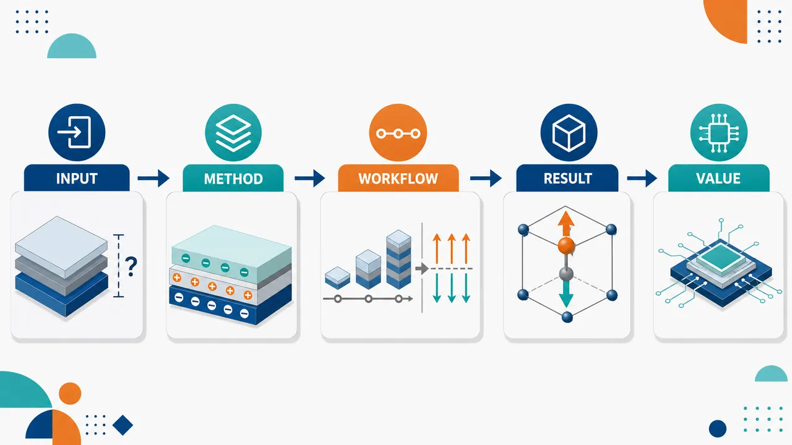
研究问题超薄 BaTiO₃ 铁电薄膜在几个单位胞厚度时会被退极化场压制，出现极化临界厚度；核心问题是如何在单单位胞极限下确定性设定并稳定其面外极化方向。创新方法利用 SmNiO₃ 缓冲层中交替堆垛的带电原子面作为“界面极化模板”：正电 [SmO]⁺ 终止层诱导 BaTiO₃ 向上极化，负电 [NiO₂]⁻ 终止层诱导向下极化；同时通过提高氧分压减少氧空位，避免氧空位正电荷抵消负界面极化场，实现从第一单位胞开始极化。工作流程在 STO(001) 基底上用 PLD 生长 SNO 缓冲层，通过 TiO₂ 终止 STO 或插入 3 单位胞 SRO 构造 [NiO₂]⁻ / [SmO]⁺ 两类界面；随后沉积超薄 BTO，并调节氧分压控制氧空位；生长过程中用原位 ISHG 追踪面外净极化起始，生长后用 PFM 验证可翻转铁电性，用 XRD/RSM 确认外延应变与晶体质量，用 DFT 解析界面电荷和氧空位作用。关键结果SNO 终止层可直接决定 BTO 极化方向：[SmO]⁺ 对应向上极化，[NiO₂]⁻ 对应向下极化；低氧压下 [SmO]⁺ 界面使 BTO 从第一单位胞即出现净极化，而 [NiO₂]⁻ 界面仍有约 1.6 nm 临界厚度；将氧分压提高约十倍后，两种界面均从沉积起点出现面外净极化。DFT 显示氧空位优先位于界面附近 NiO₂ 层，其正电性增强正界面极化场、削弱负界面极化场。应用价值提出“带电原子层界面 + 氧空位缺陷调控”的超薄铁电设计路线，可突破退极化场导致的厚度下限，为单单位胞铁电存储、铁电隧穿结、低功耗逻辑和纳米氧化物电子器件提供可视化、可工程化的界面电荷控制方案。第一部分：核心概览 (Overview)
通过带形式层电荷的 SmNiO₃（SNO）缓冲层，实现了对超薄 BaTiO₃（BTO）铁电薄膜极化方向与极化起始厚度的确定性控制。核心突破在于：[SmO]⁺ 终止诱导向上极化，[NiO₂]⁻ 终止诱导向下极化；在优化氧分压后，BTO 从第一单位胞即出现净面外极化，突破传统退极化场导致的临界厚度限制。结合 原位二次谐波产生（ISHG）、PFM、XRD 与 DFT，揭示了氧空位会削弱负界面极化场、增强正界面极化场。该成果为单单位胞极限铁电器件提供了界面电荷工程路径。
---
第二部分：结构化快速回顾
《Polarizing ultrathin ferroelectric BaTiO3 films through interfacial layer polarization》（None，）
背景
超薄铁电薄膜集成面临 退极化场导致的临界厚度问题。传统策略依赖应变、屏蔽电荷或电极环境；新兴策略利用氧化物中交替带电原子层产生的 layer polarization 调控铁电极化。
方法
采用 脉冲激光沉积（PLD） 在 STO(001) 上制备 BTO | SNO 异质结构，通过 SNO 的 [SmO]⁺ 或 [NiO₂]⁻ 表面终止构造不同界面。使用 ISHG 原位追踪生长中面外极化，结合 PFM、XRD、RSM 与 DFT 分析结构、电性与缺陷效应。
结果
SNO 层电荷可决定 BTO 极化方向：[SmO]⁺ 终止对应向上极化，[NiO₂]⁻ 终止对应向下极化。低氧压下，[SmO]⁺ 界面使 BTO 从第一单位胞出现极化，而 [NiO₂]⁻ 界面仍存在约 1.6 nm 临界厚度。高氧压生长后，两种界面均实现无临界厚度极化。
讨论
DFT 显示仅界面化学差异不能解释实验中的非对称临界厚度；关键来自 氧空位。氧空位优先位于界面附近 NiO₂ 层，其正电性增强正界面极化场，却抵消负界面极化场。
局限
实验主要集中于 BTO/SNO/STO 模型体系；氧空位浓度未直接定量；长期保持性、器件开关疲劳、电极集成与室温器件性能尚未系统展示。
结论
带电原子层界面可作为极化模板，有效压制超薄铁电薄膜中的退极化场效应；通过氧分压调控缺陷化学，可将 BTO 铁电极化稳定到 单单位胞极限。
---
第三部分：逐章节冷凝解析 (Section-by-Section Condensing)
Abstract
- Deterministic polarization control in few-unit-cell BTO
超薄铁电器件集成的关键需求是对仅数个单位胞厚薄膜的极化态进行确定性控制。核心问题被明确为：*"An important requirement for the integration of ferroelectric thin films into devices is deterministic control of the polarization state in films of only a few unit cells in thickness."* 研究对象为 BaTiO₃（BTO）模型铁电薄膜，调控工具为 (001)-取向 SmNiO₃（SNO）缓冲层中的带电原子面。
- SNO charged planes act as polarizing templates
SNO 的 [SmO]⁺ 与 [NiO₂]⁻ 带电层被用作极化模板，稳定 BTO 的面外极化。关键机制为：*"we utilize the charged atomic planes of (001)-oriented SmNiO3 (SNO) buffer layers as a polarizing template to stabilize the polarization in ferroelectric BaTiO3 (BTO) model system thin films."*
- Termination selection sets polarization direction
BTO 极化方向由 SNO 表面终止层决定：[SmO]⁺ 终止诱导向上极化，[NiO₂]⁻ 终止诱导向下极化。摘要直接给出方向关系：*"an upwards (downwards) oriented polarization is achieved by selection of the [SmO]+ ([NiO2]-) buffer termination."*
- Critical thickness suppressed down to first unit cell
SNO 带电原子面能够抑制传统由 退极化场导致的 BTO 临界厚度，并在第一单位胞沉积时即观测到净极化：*"the charged atomic planes of SNO suppress the depolarizing-field-induced critical thickness in BTO"*，并且 *"we record the emergence of a net polarization in our BTO films from the first unit cell deposited."*
- Oxygen vacancies modulate polarizing effectiveness
氧空位显著影响 SNO 极化模板效果，尤其会抵消负终止界面的极化场：*"oxygen vacancies counteract the polarizing field of the negatively charged, [NiO2]--terminated surface of the SNO buffer."* 这说明层极化工程必须同时考虑 defect chemistry。
---
I Introduction
- Ferroelectrics are promising for low-power memory and computing
铁电材料具有可由外电场控制的自发极化，面向非易失存储与新型计算。引言定义了技术动机：*"Ferroelectric materials, which exhibit spontaneous electrical polarization that can be controlled by an external electric field, are foreseen to support the development of next-generation energy-efficient nonvolatile memories"*，并进一步连接到 *"computing schemes"*。
- Depolarizing-field-induced critical thickness is the central integration barrier
当薄膜厚度降至纳米尺度，退极化场会抑制自发极化，产生临界厚度。该瓶颈被描述为：*"Their device integration, however, requires overcoming the depolarizing-field-induced effects that can promote a critical thickness for the electrical polarization to emerge."* 这直接指向 Junquera 和 Ghosez 等关于超薄铁电临界厚度的经典问题。
- Previous control strategies focused on strain and charge screening
过去几十年的主要策略包括 外延应变和 电荷屏蔽环境。原句为：*"Over the past decades, efforts have focused on control of the polarization in thin films using epitaxial strain and charge-screening environments."* 这些策略能调控极化，但难以普遍保证单单位胞极限下的稳定净极化。
- Layer polarization provides an electrostatic design degree of freedom
Layer polarization 来源于离子晶体中相反带电晶面交替堆垛。核心定义为：*"layer polarization ... arises from the alternating stacking of oppositely charged crystal planes in ionic crystals."* 未补偿表面或界面电荷可改写铁电薄膜的静电能景观：*"The lack of compensation for these charges at surfaces and epitaxial interfaces brings new degrees of freedom for the engineering of the electrostatic landscape of ferroelectric thin films."*
- Atomic termination engineering has already controlled polarization direction in multiple ferroelectrics
通过原子终止层调控层极化，已在 BiFeO₃、BaTiO₃、PbTiO₃、PbZrₓTi₁₋ₓO₃ 等体系中实现极化方向控制。关键概括为：*"tuning the layer polarization through atomic-termination engineering in oxide multilayers has enabled the deterministic control of the polarization direction in many ferroelectric materials."*
- Predictions suggest layer polarization can induce polar states even without intrinsic ferroelectricity
第一性原理计算表明，层极化不仅能设定方向，还可能诱导本征非铁电材料出现极化，或强制 BTO 在超薄状态维持极化。引言指出：*"the layer polarization could even trigger a polarizing field and induce a spontaneous polarization in otherwise paraelectric materials, such as KTaO3"*，并且可 *"enforce a polar state in BaTiO3 ... down to the ultrathin regime."*
- Direct experimental observation remained underexplored
实验空白在于：层极化诱导的极化场及其对氧化物常见带电缺陷的鲁棒性尚缺乏直接验证。关键句为：*"a direct experimental observation of the layer-polarization-induced polarizing field and its robustness against the abundant charged defects commonly present in oxides has remained underexplored."*
- Combined ISHG, PFM, XRD, and DFT provide the evidence chain
使用 原位 ISHG、非原位 PFM、XRD 与 DFT 共同验证 SNO 带电层对 BTO 极化的作用。方法组合被明确为：*"we combine in-situ optical second harmonic generation (ISHG) with ex-situ piezoresponse force microscopy (PFM), X-ray diffraction techniques, and first-principles DFT calculations."*
- SNO termination selects BTO polarization direction through formal charged planes
[SmO]⁺ = (Sm³⁺O²⁻)⁺ 与 [NiO₂]⁻ = (Ni³⁺O₂⁴⁻)⁻ 分别诱导 BTO 向上或向下极化。原句为：*"We set an upwards or downwards oriented ferroelectric polarization in BTO by tuning the surface termination of the SNO layer to be either (Sm3+O2-)+ ([SmO]+) or (Ni3+O24-)- ([NiO2]-), respectively."*
- Upward polarization emerges from the first deposited unit cell
原位生长监测显示，上向极化 BTO 从第一单位胞开始出现净极化：*"the layer polarization of SNO at the BTO||SNO interface triggers an onset of polarization from the first unit cell of the deposited BTO film with upwards polarization."* 对照中，下向极化 BTO 存在临界厚度：*"we observe a critical thickness for polarization in downward-polarized BTO."*
- Oxygen pressure tuning eliminates critical thickness for both directions
通过调控沉积氧分压，可消除两种极化方向中的临界厚度。结论性引言句为：*"by tuning the oxygen partial pressure during the deposition, we eliminate the critical thickness for both BTO polarization directions."*
---
II Results and Discussion
- SNO is selected because of its large layer polarization
SNO 沿 [001] 方向由 [SmO]⁺ / [NiO₂]⁻ 交替堆垛，具有强层极化。关键结构描述为：*"Along the [001]-growth direction, the crystal structure of SNO is characterized by the stacking of oppositely charged ionic planes of [SmO]+ and [NiO2]-."* 在绝缘 SNO 中，形式层极化对应表面电荷密度约 50 μC cm⁻²：*"this stacking leads to a formal layer polarization and corresponding surface charge density of ∼50 μC cm−2."*
- SNO layer polarization exceeds common buffers and bulk BTO polarization
SNO 的层极化大于常用 LSMO 缓冲层，也超过 BTO 本征体相极化。数值对比为：SNO ∼50 μC cm⁻²，LSMO ∼35 μC cm⁻²，BTO 本征体相极化 ∼26 μC cm⁻²。原句为：*"this layer polarization is larger than that of most commonly employed buffer materials with charged layers, such as LSMO (∼35 μC cm−2), and also exceeds the intrinsic bulk BTO polarization (∼26 μC cm−2)."*
- Two engineered BTO|SNO interface configurations impose opposite electrostatic preferences
两类界面为 [TiO₂ | SmO]⁺ 与 [BaO | NiO₂]⁻。原文列明：*"two distinct interfacial configurations can be engineered: positively charged [TiO2||SmO]+ and negatively charged [BaO||NiO2]- interfaces."* 由于 STO 施加 −2.23% 压缩应变，BTO 偏好面外极化，估计增强到 ∼35 μC cm⁻²：*"The substrate-induced epitaxial compressive strain state of BTO (ε = −2.23%) favors an out-of-plane polarization orientation with an enhanced value of ∼35 μC cm−2."*
- Electrostatic energy predicts polarization toward negative interface and away from positive interface
BTO 极化指向负界面或背离正界面可降低静电能。原句为：*"the electrostatic energy can be reduced when the BTO polarization points towards a negatively charged [BaO||NiO2]- interface and away from a positively charged [TiO2||SmO]+ interface."* 因而 [BaO|NiO₂]⁻ 预期诱导向下极化，[TiO₂|SmO]⁺ 预期诱导向上极化。
- Interface terminations are engineered through STO and SRO termination control
[BaO | NiO₂]⁻ 界面由商业 TiO₂ 终止 STO 基底实现；[TiO₂ | SmO]⁺ 界面通过先沉积 3 unit cells SRO 实现。具体流程为：*"We achieve the [BaO||NiO2]- interface by using a commercially available surface-treated STO substrate with TiO2 termination."* 对正界面，*"we first deposit 3 unit cells of SrRuO3 (SRO) on STO, prior to the SNO layer."* SRO 因 Ru⁴⁺ 挥发而自终止为 SrO：*"The SRO self-terminates with the SrO plane ... due to the high volatility of Ru4+ ions."*
- Ultrathin BTO thickness and conductive SNO enable strain preservation and PFM bottom contact
BTO 厚度控制在约 8 nm 以避免应变弛豫：*"To avoid strain relaxation in BTO, we focus on the ultrathin thickness regime and terminate the film growth at a BTO thickness of ∼8 nm."* SNO 室温电阻率为 ∼0.01–0.03 Ω·cm，足以作为 PFM 底电极：*"the ∼0.01 – 0.03 Ω⋅cm resistivity of our SNO buffer layer ... suffices to serve as a bottom contact for PFM characterization."*
- XRD and RSM confirm high-quality fully strained BTO
XRD 证实 BTO 为高晶体质量、(001) 取向生长：*"Post-deposition X-ray diffraction (XRD) ... confirms the high crystalline quality and the expected (001)-oriented growth of our BTO films."* RSM 显示两种界面中 BTO 面内晶格常数等于 STO，即完全受限于基底：*"the BTO peak is positioned at an in-plane lattice constant equal to that of STO ... indicating that both BTO films are fully strained to the substrate."* 提取的 BTO c = 4.09 Å，c/a = 1.05：*"The extracted BTO c-lattice parameter is 4.09 Å, and the c/a tetragonality is 1.05."*
- ISHG tracks net out-of-plane polarization during growth
二次谐波产生只在反演对称性破缺时允许，因此适合原位追踪铁电极化。物理基础为：*"In the electric-dipole approximation, the doubling of the frequency of light in a material can only occur when inversion symmetry is broken."* 压缩应变使 BTO 的铁电转变温度显著高于生长温度 700°C：*"the compressive epitaxial strain imposed by the STO substrate leads to an increase of the ferroelectric transition to well above the growth temperature (TC >> Tgrowth = 700 °C)."*
- ISHG geometry isolates the net out-of-plane polarization component
入射光偏振被选择为对 Pnet OOP 敏感，ISHG 强度通过 RHEED 与 XRR 校准到薄膜厚度。原句为：*"We choose the polarization of the incident light to set our ISHG sensitivity to the out-of-plane component of the net polarization (PnetOOP)"*，并且 *"we calibrate the ISHG intensity to the film thickness by in-situ RHEED monitoring and post-growth X-ray reflectivity measurements."*
- Both SNO terminations produce growing SHG signals consistent with polarized BTO
在 [NiO₂]⁻ 与 [SmO]⁺ 终止 SNO 上生长 BTO(8 nm) 时均观测到 ISHG 信号起始并随厚度增加。实验现象为：*"In both cases, we detect an onset of the ISHG signal during the deposition of BTO."* 信号趋势符合面外极化 BTO 生长：*"The ISHG signal intensity increases continuously as the BTO deposition progresses, consistent with the behavior of a growing out-of-plane-polarized BTO film."*
- SHG polarimetry confirms ferroelectric BTO 4mm symmetry
生长后 SHG 偏振测量可由 4mm 点群非零 SHG 张量元拟合，符合四方铁电 BTO。证据为：*"SHG polarimetry performed after the growth ... identifies an anisotropy which can be fitted by considering the non-zero SHG tensor elements of ferroelectric BTO with 4mm point-group symmetry."*
- PFM confirms ferroelectricity and termination-controlled polarization direction
PFM 的 box-in-box 极化实验确认薄膜具有铁电性，并且净面外极化方向由 SNO 终止层决定。原句为：*"Post-deposition PFM experiments ... confirm the ferroelectric nature of the films and show that the orientation of the net out-of-plane polarization direction in our BTO films is determined by the termination of the SNO buffer layer."*
- [NiO₂]⁻ termination retains a ∼1.6 nm critical thickness at low oxygen pressure
在低氧压下，[NiO₂]⁻ 终止 SNO 上的 BTO 从约 1.6 nm 才出现 ISHG 起始。关键观察为：*"The BTO film grown on [NiO2]--terminated SNO exhibits an onset of ISHG signal from ∼1.6-nm thickness."* 该值对应先前无层电荷表面 BTO 的 4-unit-cell critical thickness：*"This value is consistent with the existence of a four-unit-cell critical thickness reported previously for BTO thin films grown on surfaces without layer charges."*
- Depolarizing field suppresses net polarization below the critical thickness
低于临界厚度时，BTO 自发极化导致束缚电荷积累，退极化场方向相反并占主导。机制为：*"Below this thickness, the depolarizing field, arising from the bound-charge accumulation induced by the BTO spontaneous polarization and pointing in the opposite direction, becomes dominant and suppresses the net polarization."*
- [SmO]⁺ termination eliminates critical thickness from the first BTO unit cell
[SmO]⁺ 终止 SNO 使 BTO 从第一单位胞即出现 ISHG 发射。关键事实为：*"When the [SmO]+ termination of SNO is employed, in contrast, we observe an immediate onset of ISHG emission from the very first unit cell of BTO."* 这与 DFT 预测一致：*"the layer polarization in SNO acts as an effective polarizing field and drives the out-of-plane polarization in the first unit cells of BTO."*
- Interface chemistry alone cannot explain the asymmetric critical thickness
DFT 对 5 unit cells BTO on SNO、两类界面 [TiO₂|SmO]⁺ 与 [BaO|NiO₂]⁻ 进行计算。Ti 相对中心对称位置的位移表示局域偶极方向：*"The Ti displacements relative to the centrosymmetric position ... indicate the local BTO dipoles pointing towards the surface ... or the BTO||SNO interface."* 两种界面均出现极化，并且负界面 Ti 位移更大：*"In both cases, the BTO layers exhibit a polarization. Moreover, the Ti displacements are larger in heterostructures with the [BaO||NiO2]- interface compared to the [TiO2||SmO]+ interface."* 因此：*"difference in interface chemistry alone cannot explain the termination-dependent polarization onset observed experimentally."*
- Oxygen vacancies are considered as the key defect variable
氧空位在 SNO 薄膜中常见，尤其在张应变条件下更明显。原句为：*"Oxygen vacancies are commonly observed in SNO thin films, especially when they are tensile-strained."* DFT 通过在不同晶格位点移除一个中性氧原子构造氧空位：*"We introduce vacancies in DFT calculations by removing one neutral oxygen atom per heterostructure at a range of different lattice sites."*
- Oxygen vacancies preferentially occupy the interfacial NiO₂ layer
对比 BTO 或 SNO 内不同位点的氧空位形成能，氧空位优先位于靠近界面的 NiO₂ 层。证据为：*"We find that, regardless of the interface type, the oxygen vacancies lie preferentially within the NiO2 layer closest to the interface."*
- Oxygen vacancies enhance positive-interface polarization but suppress negative-interface polarization
在 [TiO₂ | SmO]⁺ 界面，氧空位增强 BTO 内 Ti 位移；在 [BaO | NiO₂]⁻ 界面，氧空位抑制 Ti 位移与极化。原句为：*"for the [TiO2||SmO]+ interface, oxygen vacancies enhance the Ti displacement inside BTO compared to the same heterostructure without the vacancy."* 对负界面，*"the vacancies at the [BaO||NiO2]- suppress the Ti displacement, and hence the polarization inside the BTO."*
- The sign of vacancy charge explains the opposite effects
氧空位相当于局域正电荷；正电荷会叠加到正界面层电荷上，却抵消负界面层电荷。机制为：*"Since the absence of an O2- ion leaves a local positive charge, this positive charge adds to the layer charge density of the [TiO2||SmO]+ interface and enhances the polarizing effect of the SNO layer, while it reduces the net interfacial charge density of the [BaO||NiO2]- interface and suppresses the polarizing effect of the SNO layer."*
- Tenfold oxygen pressure increase tests defect-mediated interpretation
BTO 生长氧分压从 0.015 mbar 增加到 0.15 mbar，用于降低氧空位浓度并恢复 SNO 极化场。实验设计为：*"we increase the oxygen partial pressure tenfold, from 0.015 mbar to 0.15 mbar."* 预期为：*"This increase is expected to reduce the oxygen vacancy concentration in the BTO film and, hence, at the interface, restoring the polarizing effect of SNO and eliminating the critical thickness for BTO polarization for both interface configurations."*
- High oxygen pressure eliminates critical thickness for both terminations
在 0.15 mbar 氧分压下，BTO 在两种 SNO 终止层上均从沉积开始出现 ISHG，即净面外极化无临界厚度。关键结果为：*"for both of the terminations, we detect an onset of ISHG, and thus of a net out-of-plane polarization, from the start of the BTO deposition."* 与低氧压形成鲜明对比：*"In striking contrast with the films grown under lower oxygen partial pressure."*
- Structural quality is preserved under increased oxygen pressure
提高 BTO 生长氧分压后，XRD 仍显示高晶体质量。证据为：*"post-growth XRD analysis indicates a high crystalline quality despite the altered deposition conditions."* 因此，极化起始差异不能简单归因于晶体质量退化。
---
III Conclusion
- SNO charged layers control emergence and direction of BTO polarization
SNO 的强带电 [NiO₂]⁻ 与 [SmO]⁺ 离子层可控制 BTO 极化出现与方向。总结句为：*"The layer polarization of SNO, which is created by its strongly charged [NiO2]- and [SmO]+ ionic planes, enables polarization direction control for the BTO."*
- Layer polarization counteracts depolarizing field and stabilizes first-unit-cell ferroelectricity
SNO 层极化能抵消退极化场的不利影响，使 BTO 从第一单位胞出现铁电极化。结论强调：*"counteracts the detrimental impact of the depolarizing field"*，并且 *"stabilizes the ferroelectric polarization in BTO thin films from the very first unit cell."*
- Oxygen vacancies determine the effectiveness of the polarizing field
氧空位会强烈改变 SNO 极化场效率。具体方向性为：*"oxygen vacancies suppress the polarizing field of the negatively charged [NiO2]- interface while they enhance it for the positively charged [SmO]+ interface."*
- Tenfold oxygen pressure increase suppresses vacancy influence
将 BTO 沉积氧分压提高十倍足以降低氧空位影响，使两种极化方向均可在超薄 BTO 中稳定。结论为：*"increasing the oxygen partial pressure of the BTO deposition tenfold is sufficient to suppress the influence of oxygen vacancies and stabilize ferroelectricity in ultrathin BTO thin films for both polarization directions."*
- Single-unit-cell-limit polarization provides a nanoscale device pathway
该界面与缺陷协同调控策略为纳米铁电器件提供路径：*"we provide a pathway to enforcing a polarization in the ultrathin regime, key for future integration of ferroelectric materials into nanoscale devices."*
---
IV Methods
IV.1 Thin film growth and structural characterization
- PLD growth uses STO(001), KrF excimer laser, and termination-selected substrates
所有薄膜与异质结构在 STO(001) 基底上通过 PLD 生长，激光为 KrF excimer laser, 248 nm。方法句为：*"The thin films and heterostructures were grown on STO (001) substrates ... by pulsed laser deposition, using a KrF excimer laser at 248 nm."* 负界面样品使用预处理 TiO₂-terminated STO：*"For the deposition of the films with (BaO||NiO2)- interfaces, the TiO2-terminated substrates were purchased as pre-treated."*
- Thickness monitored by RHEED and XRR
薄膜厚度由原位 RHEED 与非原位 X-ray reflectivity 联合标定。原句为：*"The thickness of the thin films was monitored using a combination of RHEED during growth and X-ray reflectivitiy ex-situ."*
- XRD characterizes crystallinity, orientation, and epitaxy
XRD 使用 Cu Kα1 辐射，在 PanAnalytical X’Pert3 MRD 与 X’Pert Pro Powder Diffractometer 上完成。原句为：*"XRD measurements to characterize the crystallinity, the thin-film orientation, and the epitaxial relationship between film and substrate were performed on a four-cycle thin-film diffractometer using Cu Kα1 X-ray radiation."*
- SRO deposition conditions establish termination control
SRO 生长温度 700°C，激光能量密度 0.85 J cm⁻²，重复频率 2 Hz，氧分压 0.015 mbar。原句为：*"The SRO layers were grown at 700°C, with a laser fluence of 0.85 J cm−2 and a repetition rate of 2 Hz. The O2 partial pressure was set to 0.015 mbar."*
- SNO deposition conditions define the charged buffer layer
SNO 生长温度 600°C，激光能量密度 0.8 J cm⁻²，重复频率 4 Hz，氧分压 0.12 mbar。原句为：*"The SNO layers were grown at 600°C, with a laser fluence of 0.8 J cm−2 and a repetition rate of 4 Hz. The O2 partial pressure was set to 0.12 mbar."*
- BTO deposition oxygen pressure is the key defect-control parameter
BTO 生长温度 650°C，激光能量密度 0.8 J cm⁻²，重复频率 1 Hz；低压与高压样品氧分压分别为 0.015 mbar 与 0.12 mbar。方法中写为：*"The BTO layers were grown at 650°C, with a laser fluence of 0.8 J cm−2 and a repetition rate of 1 Hz. The O2 partial pressure was set to 0.015 mbar and 0.12 mbar for the films grown at low and high pressure, respectively."*
需要注意：结果部分描述高氧压为 0.15 mbar，方法部分写为 0.12 mbar，两处存在数值不一致。
---
IV.2 ISHG and SHG polarimetry measurements
- ISHG performed in PLD chamber with reflection geometry
ISHG 在 PLD 生长腔内原位完成，几何为 45° 入射反射式。原句为：*"ISHG measurements were performed inside the pulsed-laser-deposition growth chamber in a reflection geometry under a 45° angle of incidence."*
- Ultrafast optical probe parameters are explicitly specified
探测光波长 1200 nm，脉宽 60 fs，重复频率 1 kHz，来自放大 Ti:Sapphire 激光系统。原句为：*"The probe beam of 1200 nm wavelength, with a pulse duration of 60 fs and a repetition rate of 1 kHz, was generated using an amplified Ti:Sapphire laser system."*
- Probe energy and spot size set measurement sensitivity
探测光脉冲能量 20 μJ，样品上光斑直径 250 μm。原句为：*"The pulse energy of the probe beam was set to 20 μJ. The beam was focused onto the sample choosing a probe diameter of 250 μm."*
- SHG signal detection at 600 nm
频率加倍后的 SHG 信号位于 600 nm，经单色仪筛选并由光电倍增管与门控电子学转换为电信号。原句为：*"The SHG signal at 600 nm was selected using a monochromator and converted into an electrical signal with a photomultiplier tube and gate electronics."*
- P-polarized input and output isolate out-of-plane net polarization
为捕捉与 Pnet OOP 相关的信号，入射探测光与 SHG 光线偏振均固定为 90°，P-polarized。原句为：*"To capture the PnetOOP-related signal, the linear polarization of the incident probe beam and of the frequency-doubled SHG light were fixed to 90° (P-polarized)."*
---
IV.3 Density functional calculations
- DFT uses VASP with PBEsol and PAW
第一性原理计算使用 VASP，交换关联泛函为 PBEsol，赝势为 PAW。原句为：*"The DFT calculations were performed using the VASP code ... with the exchange-correlation described by the Perdew-Burke-Ernzerhof functional revised for solids, PBEsol."* 赝势方法为：*"The pseudopotentials we used are based on the projector-augmented wave method."*
- Sm f electrons are frozen to the core
Sm 的 f 电子被冻结在芯态中：*"with the f electrons frozen to the core for Sm."* 这对含稀土镍酸盐的 DFT 描述很关键，因为 Sm 4f 强关联态若显式处理会显著增加计算复杂度。
- Heterostructure supercell mimics BTO/SNO interface
计算结构面内为 2 × 2 √2 × √2 formula units 的 BTO 与 SNO，面外为 4 formula units SNO + 5 formula units BTO。原句为：*"The heterostructures were constructed from 2×2√2×√2 formula units of BTO and SNO in plane, and 4 formula units of SNO and 5 formula units of BTO out-of-plane."*
- Oxygen vacancies are created by removing neutral oxygen atoms
氧空位通过移除指定位置的中性氧原子产生：*"Oxygen vacancies were created by removing neutral oxygen atoms in the desired location."* 最稳定位置为界面附近 NiO₂ sublayer：*"The NiO2 sublayer adjacent to the interface was found to be the lowest-energy site for oxygen vacancies."*
- STO substrate strain is simulated by fixing in-plane lattice parameter
面内晶格常数固定为 STO 的 DFT 值 a = 3.898 Å，用于模拟实验基底约束。原句为：*"The in-plane lattice parameters were constrained to the lattice parameters a = 3.898 Å of STO ... to simulate the substrate used in the experiments."*
- Vacuum and dipole correction prevent artificial interactions
为避免界面与表面周期镜像相互作用，设置 30 Å 真空层并使用偶极修正。原句为：*"To ensure that the interface and the surfaces do not interact, we included a 30 Å vacuum region and used a dipole correction."*
- Relaxation protocol freezes two outer SNO layers
弛豫中靠近真空的两个 SNO 层固定为体相结构，仅靠近界面的两个 SNO 层允许弛豫。原句为：*"During the relaxation, the two SNO layers adjacent to the vacuum were frozen to their bulk structure and only the two layers next to the interface were allowed to relax."*
- Numerical convergence parameters are stringent
平面波截断能 650 eV；内坐标弛豫到力小于 0.01 eV Å⁻¹；k 点网格为 Γ-centered 8 × 8 × 1。原句为：*"We used a cutoff energy of 650 eV and the internal coordinates were relaxed until the forces were smaller than 0.01 eVÅ−1. A Γ-centered zero-containing k-point mesh of (8×8×1) was used for the relaxations."*
---
IV.4 Electrical transport measurements
- Transport subsection title is present but procedural detail is absent
章节标题 “IV.4 Electrical transport measurements” 存在，但正文未给出具体测量流程。唯一与电输运相关的结果信息出现在结果部分：SNO 室温四探针电阻率为 ∼0.01–0.03 Ω·cm，即 *"measured by 4-probe resistance measurement at room temperature"*，并且该电导足以用于 PFM 底电极：*"suffices to serve as a bottom contact for PFM characterization."*
---
IV.5 Ex-situ atomic force microscopy and PFM measurements
- AFM and PFM use Bruker Multimode 8 with Pt-coated Si tips
表面形貌、铁电极化与局域极化写入通过 Bruker Multimode 8 AFM 完成，探针为 Pt-coated Si tips，弹簧常数 k = 5.4 N m⁻¹。原句为：*"The surface topography, the ferroelectric polarization, and the local poling characteristics of the samples were studied using a Bruker Multimode 8 atomic force microscope equipped with Pt-coated Si tips (MikroMasch, k = 5.4 N m−1)."*
- PFM drive and poling voltages are specified
PFM 交流驱动电压 Vac = 0.75–1.5 V，频率 10 kHz；BTO 写入偏压 Vdc = ±5–7 V。原句为：*"The PFM measurements were performed using a drive voltage in the range of Vac = 0.75 V – 1.5 V at 10 kHz."* 写入条件为：*"The BTO films were poled by applying a bias voltage in the range of Vdc = ±5 – 7 V to the scanning tip."*
---
V Acknowledgements
- Funding and computational resources are identified
M.T. 获得 Swiss National Science Foundation, project no. 200021₂₃₆₄₁₃ 支持；E.S. 与 N.A.S. 获得 ETH Zurich 与 SNSF project no. 209454 支持。计算在 ETH Zurich Euler cluster 完成。原句为：*"M.T. acknowledges the Swiss National Science Foundation (SNSF) under project no. 200021₂₃₆₄₁₃."* 以及 *"The calculations for this work were performed on the ETH Zurich Euler cluster."*
---
VI Author Contributions
- Experimental and computational responsibilities are clearly divided
I.E. 完成薄膜生长、ISHG、XRD、扫描探针测量与分析：*"I.E. performed the thin film growth, ISHG measurements, XRD characterization, scanning-probe measurements and analysis."* E.S.、T.G.、N.A.S. 完成 DFT：*"E.S., T.G., and N.A.S. performed the DFT calculations."*
- Experiment design and supervision are attributed to M.T. with M.F.
M.T. 设计实验并与 M.F. 共同监督：*"M.T. designed the experiment and supervised the work jointly with M.F."* 全体成员讨论结果并共同撰写：*"All authors discussed the results. The manuscript was written jointly by all authors."*
---
VII Data Availability
- Data are available on reasonable request
数据可在合理请求下获得。原句为：*"The data that support the findings of this study are available upon reasonable request."*
---
第四部分：深度理解与语言支持 (Understanding & Nuance)
1. 术语解析
- Layer polarization
指由晶体中交替带正、负电的原子层堆垛产生的形式极化，不等同于传统铁电自发极化。SNO 中 [SmO]⁺ / [NiO₂]⁻ 沿 [001] 堆垛产生约 50 μC cm⁻² 的层电荷。微妙点在于：它可存在为一种晶格化学决定的极化背景，并通过界面未补偿电荷作用于邻近铁电层。
- Polarizing field
可理解为由界面层电荷产生、倾向于推动 BTO 离子偏心位移的内建电场。它不是外加电场，也不是单纯应变效应，而是由 界面电荷不连续性导致的静电驱动力。其效果是让 BTO 在本应受退极化场抑制的超薄极限中仍发生极化。
- Depolarizing-field-induced critical thickness
超薄铁电膜中，极化束缚电荷若未充分屏蔽，会产生反向退极化场；当膜太薄时，该场能量代价过高，净极化无法稳定，于是出现临界厚度。BTO 在无层电荷模板表面通常约 4 个单位胞，此处低氧压 [NiO₂]⁻ 终止样品对应 ∼1.6 nm。
- Termination engineering
指通过控制最表层原子面类型来改变界面化学与界面电荷。这里的关键不是普通表面平整度，而是 [SmO]⁺ 或 [NiO₂]⁻ 哪一层直接接触 BTO，从而决定界面电荷符号与极化方向。
- Net out-of-plane polarization (Pnet OOP)
指薄膜整体沿法向的净极化分量。ISHG 对反演对称性破缺敏感，但界面本身也会产生 SHG，因此需要结合偏振几何、厚度演化、PFM 和 4mm 对称性拟合来区分真正的 BTO 铁电极化贡献。
---
2. 疑难查证
- 为什么 [SmO]⁺ 与 [NiO₂]⁻ 两种终止层的层极化大小相同，却低氧压下只有 [SmO]⁺ 能消除临界厚度？
理想无缺陷情况下，两种终止层应具有相反符号但相同量级的层电荷，因此都应提供强极化场。DFT 的无缺陷计算也显示两种界面都能诱导 BTO 极化，甚至 [BaO|NiO₂]⁻ 界面的 Ti 位移更大。因此，实验中的非对称性不能由理想界面解释。关键是氧空位：氧空位相当于局域正电荷。若界面本来是 [SmO]⁺，氧空位正电荷会增强正界面电荷；若界面本来是 [NiO₂]⁻，氧空位正电荷会抵消负界面电荷，使其极化模板能力减弱。因此低氧压下负界面仍出现约 1.6 nm 临界厚度。
- ISHG 信号为什么能代表极化起始，但又需要谨慎解释？
SHG 在电偶极近似下要求反演对称性破缺，铁电极化会强烈破坏反演对称性，因此 SHG 可原位追踪极化。但薄膜界面本身天然破缺反演对称性，也会产生 SHG 背景。低氧压 [NiO₂]⁻ 样品中初始 SHG 下降被解释为新形成 BTO|SNO 界面与既有 SNO|STO 界面 SHG 的相消干涉，而非负极化。因此必须结合厚度依赖、偏振各向异性、PFM 可写可擦响应与 4mm 对称性确认铁电性。
- 为什么提高氧分压能证明氧空位机制？
氧分压升高会提高氧化环境的化学势，降低氧空位形成概率。实验将 BTO 生长氧分压提高十倍后，两种界面都从生长一开始出现 ISHG 信号，且 XRD 显示晶体质量保持良好。因此，临界厚度消失更合理地归因于氧空位减少，而不是结晶质量变化。
- 为什么 SNO 即使有金属性或自由载流子，层极化仍可能有效？
传统形式层极化严格定义于绝缘体系；金属中自由载流子通常会屏蔽电场。这里依赖的前期 DFT 指出，即使 SNO 处于金属相，自由载流子也未完全抹除原子层带电堆垛带来的界面静电效应。实际实验中 SNO 电阻率 ∼0.01–0.03 Ω·cm，既能作为 PFM 底接触，又仍保留足够界面层电荷效应来极化 BTO。
---
第五部分：创新评估与关联 (Synthesis & Novelty)
1. 创新性判断
- 从“控制方向”推进到“消除临界厚度”
过去 2–5 年内，层电荷与终止层工程已被用于控制 BiFeO₃、PbTiO₃、PZT、BTO 等铁电薄膜的极化方向；但多数工作重点在极化取向、畴结构或界面稳定性。这里的关键进展是：带电层不仅设定方向，还能作为 polarizing field，直接压制退极化场导致的临界厚度，使 BTO 在 第一单位胞即出现净极化。
- 提供原位生长证据，而非仅依赖生长后表征
许多超薄铁电研究依赖生长后 PFM、TEM 或电学测试，难以确定极化是在何时出现。这里使用 ISHG during growth 实时记录 BTO 极化随厚度演化，直接捕捉 ∼1.6 nm 临界厚度与第一单位胞极化起始之间的差异，证据链更强。
- 将层极化工程与缺陷化学耦合起来
过去的层极化模型常近似理想界面，缺陷多作为干扰因素处理。这里明确证明 氧空位不是简单降低质量的缺陷，而是带符号选择性的界面电荷调制器：增强正界面、削弱负界面。这解决了理想 DFT 预测与低氧压实验非对称性的矛盾。
- SNO 作为强层极化缓冲层具有材料优势
SNO 的形式层电荷约 50 μC cm⁻²，大于 LSMO 的 ∼35 μC cm⁻²，也大于 BTO 体相极化 ∼26 μC cm⁻²。这种“界面层极化强于待极化铁电体本征极化”的设计原则，使其特别适合压制退极化场。
- 解决了单单位胞极限下双向极化稳定的问题
低氧压下只有 [SmO]⁺ 终止实现第一单位胞极化；通过提高氧分压，[SmO]⁺ 与 [NiO₂]⁻ 两种终止层均可从生长起点产生净面外极化。这意味着不仅能做“单方向内建极化”，还能通过界面终止层实现可设计的上下双向极化模板。
- 对纳米铁电器件的直接意义
超薄铁电存储、负电容器件、铁电隧穿结、氧化物神经形态器件都受限于尺度缩小时的极化消失。通过 charged-interface + oxygen-pressure defect control 稳定单单位胞极化，为后续器件集成提供了比单纯应变或电极屏蔽更具材料化学可调性的路线。
-
14
📊 含图深析
💡 亮点：交变磁性概念被推广到 kagome 轨道序。
📖 展开分析 + 配图
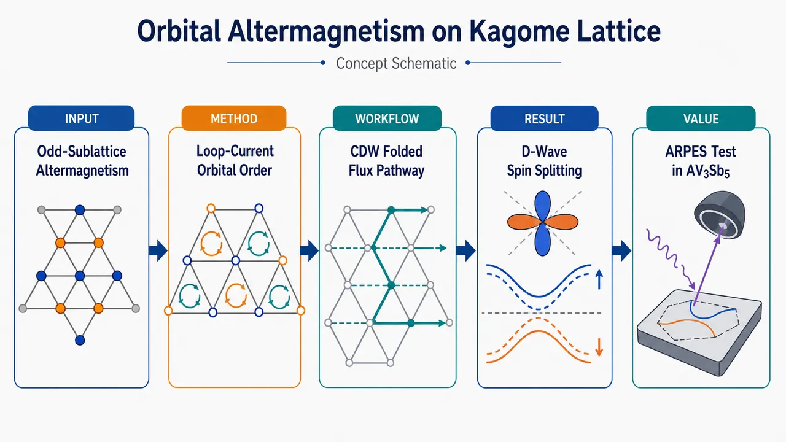
研究问题传统交替磁性通常要求偶数子晶格和等幅反平行磁矩；论文追问：三子晶格的 kagome 晶格能否在零净磁化、共线磁序下产生交替磁性？核心障碍是奇数子晶格无法简单分成“上/下”两半，核心突破口是允许非均匀轨道磁矩，如“+M、0、−M”的补偿排列。创新方法提出“轨道环流驱动的奇数子晶格交替磁性”：在靠近 van Hove 奇点的 kagome 金属中，CDW 先形成 2×2 四倍化晶胞，随后 M 点环流序被折叠成零动量轨道磁序；通过 γ(W₁Φ₂Φ₃+W₂Φ₃Φ₁+W₃Φ₁Φ₂) 非谐耦合，环流产生非均匀面外轨道磁矩，形成 d-wave 轨道交替磁相。工作流程输入：kagome 金属、费米能级靠近 van Hove 奇点、三个 M 点波矢 Qᵢ。流程：定义 CDW 序参量 Wᵢ 与 LC 环流序参量 Φᵢ → 用 Landau 自由能分析 CDW-LC 耦合 → triple-Q CDW 四倍化晶胞并折叠布里渊区 → LC 在 CDW 背景中变成 Q=0 轨道磁序 → 分类得到轨道 FM、AFM、AM → 加入 Kane-Mele 型 SOC 的 12 带紧束缚模型 → 输出自旋分辨能带和 d-wave 自旋劈裂图样。关键结果发现 CDW 与 LC 强烈交织，CDW 相内可稳定三类轨道磁态：轨道 FM、轨道 AFM、d-wave 轨道 AM。γ>0 倾向 FM，γ<0 倾向 AM，更大负 γ 稳定 AFM。SOC 下，FM 沿所有方向自旋劈裂，AFM 因时间反演加平移对称保持 Kramers 简并，AM 在 Γ–M₁ 与 Γ–M₃ 方向出现符号相反的自旋劈裂，在 Γ–M₂ 方向出现节点，呈典型 d-wave 图案。应用价值为 AV₃Sb₅ kagome 金属中的非常规 CDW 与可能 TRSB 环流序提供可检验解释：其 congruent CDW flux phase 可被识别为二维 d-wave 轨道交替磁体。预测的 d-wave 自旋劈裂可由自旋分辨 ARPES 直接观测，并可通过劈裂强度定量提取环流序参量；同时解释零净磁化、三重旋转对称性破缺、压磁响应和无自发 Hall 效应等现象。第一部分：核心概览 (Overview)
该研究将交替磁性（altermagnetism, AM）从传统的“偶数子晶格、均匀反平行磁矩”框架扩展到奇数子晶格体系，提出只要允许非均匀共线磁矩，kagome 晶格也可实现补偿共线的 d-wave 轨道交替磁态。核心机制是：靠近 van Hove 奇点的 kagome 金属中，电荷密度波（CDW）与环流序（LC）相互交织；CDW 先四倍化晶胞，随后 LC 在折叠布里渊区中表现为零动量轨道磁序。Landau 理论与微观紧束缚模型共同给出轨道 FM、AFM、AM 三类相，并预测 SOC 下 AM 相出现典型 d-wave 自旋劈裂。该机制直接关联 AV₃Sb₅ kagome 金属，为检验“congruent CDW flux phase”提供了自旋分辨 ARPES 判据。
---
第二部分：结构化快速回顾
《Orbital altermagnetism on the kagome lattice and possible application to AV₃Sb₅》（None，）
背景
传统交替磁体通常要求偶数个磁性子晶格，上下磁矩由晶体旋转联系并实现零净磁化。kagome 晶格具有三个子晶格，常规均匀共线补偿磁序看似不可能。AV₃Sb₅ 中存在靠近费米能级的 van Hove singularity、CDW 与可能的 TRSB 环流序，为奇数子晶格交替磁性提供候选平台。
方法
结合现象学 Landau 自由能与微观 kagome 紧束缚模型。CDW 序参量 Wᵢ 与 LC 序参量 Φᵢ 位于三个 M 点波矢 Qᵢ = bᵢ/2。通过不可约表示分解、自由能最小化和含 Kane-Mele 型 SOC 的 12 带哈密顿量对角化，比较 FM、AFM、AM 三类轨道磁态。
结果
CDW 与 LC 通过三阶非谐耦合 γ(W₁Φ₂Φ₃ + W₂Φ₃Φ₁ + W₃Φ₁Φ₂) 强烈交织。CDW 相内，LC 可诱导三类轨道磁序：轨道铁磁 FM、轨道反铁磁 AFM、d-wave 轨道交替磁 AM。SOC 下，FM 呈全方向自旋劈裂，AFM 保持 Kramers 简并，AM 呈正负号交替且带节点的 d-wave 自旋劈裂。
讨论
AM 相对应于 AV₃Sb₅ 中曾提出的 congruent CDW flux phase 的二维版本。零净磁化、三重旋转对称性破缺、压磁响应、无自发 Hall 效应均与 d-wave 交替磁体特征一致。自旋分辨 ARPES 可直接观测预测的自旋劈裂，并定量提取 LC 序参量。
局限
TRSB 在 AV₃Sb₅ 中仍存在实验争议；部分实验支持 CDW 内或同时出现 TRSB，另一些实验未发现 TRSB。模型为二维 kagome 理想化描述，材料真实三维结构、外场/应变诱导效应、具体相互作用微观来源仍需进一步验证。
结论
奇数子晶格并不排斥交替磁性；关键是允许非均匀共线磁矩。kagome CDW-LC 交织机制给出轨道 AM 的具体实现路径，并为 AV₃Sb₅ 的非常规 CDW 相提供可实验检验的光电子谱学特征。
---
第三部分：逐章节冷凝解析 (Section-by-Section Condensing)
Abstract
- Odd-sublattice altermagnetic-like states
交替磁体被定义为一种补偿共线磁相，其反平行磁矩由晶体旋转联系；核心突破是将该概念推广到奇数子晶格，前提是电子相互作用产生非均匀磁矩。原文给出定义与推广逻辑：*"Altermagnets, which encompass a broad landscape of materials, are compensated collinear magnetic phases in which the antiparallel magnetic moments are related by a crystalline rotation."* 以及 *"collinear altermagnetic-like states can also be realized in lattices with an odd number of sublattices, provided that the electronic interactions promote non-uniform magnetic moments."*
- Kagome van Hove metal as platform
具体平台是费米能级接近 van Hove singularity 的 kagome 金属；该能带填充增强粒子-空穴不稳定性，使 CDW 与 LC 竞争或交织。关键条件为 *"a kagome metal whose band filling places the Fermi level close to the van Hove singularity."*
- Intertwined CDW-LC instabilities generate three orbital magnetic phases
现象学与微观模型共同显示，电荷密度波和环流序交织后，在电荷有序相内部产生宽参数区间的三类轨道磁相：orbital FM、orbital AFM、orbital AM。证据性表述为 *"Combining phenomenological and microscopic modeling, we show that the intertwined charge density-wave and loop-current instabilities of this model lead to a wide parameter range in which orbital ferromagnetic, antiferromagnetic, and altermagnetic phases emerge inside the charge-ordered state."*
- SOC converts orbital magnetism into spin-split fingerprints
由于磁矩来源于轨道环流而非自旋，必须通过 spin-orbit coupling (SOC) 将轨道磁序传递给自旋自由度；三类共线磁序分别产生常规自旋谱指纹。原文明确指出：*"In the presence of spin-orbit coupling, their electronic structures display the usual spin-split fingerprints associated with the three types of collinear magnetic order."*
- Material relevance to AV₃Sb₅
AV₃Sb₅ kagome 金属族被提出为可能实现轨道 AM 的材料平台。摘要结论为：*"We discuss the possible realization of orbital altermagnetic phases in the AV3Sb5 family of kagome metals."*
---
Introduction
- Altermagnets bridge ferromagnets and Néel antiferromagnets
交替磁体处在 ferromagnets (FM) 与 Néel antiferromagnets (AFM) 之间：零净磁化但存在动量依赖自旋劈裂。原文定位为 *"compensated magnets called altermagnets (AM), whose properties are intermediate between those of ferromagnets (FM) and Néel antiferromagnets (AFM)."*
- Symmetry fingerprint: time reversal combined with crystal rotation
AM 的核心对称性是不单独保持时间反演，而是在时间反演 + 晶体旋转组合下不变；能带自旋劈裂具有偶宇称节点型结构，如 d-wave、g-wave、i-wave。原文为 *"Invariant under a combination of time reversal and crystal rotation, AM exhibit zero net magnetization alongside spin-split band dispersions of nodal d-, g-, or i-wave character."*
- Conventional blueprint excludes odd sublattices
常规模板要求非 Bravais 晶格、偶数子晶格、无反演关联，半数子晶格向上、半数向下。由此奇数子晶格似乎无法实现共线补偿 AM。关键句：*"on non-Bravais lattices with an even number of sublattices not related by inversion, place magnetic moments pointing up on half the sublattices and down on the other half"*；推论为 *"this suggests AM cannot form in crystals with an odd number of magnetic sublattices, as a collinear compensated state would be impossible."*
- Known examples define the prior paradigm
已知或候选 AM 包括 CrSb、MnTe、KMnF₃；CrSb 与 MnTe 的子晶格由螺旋旋转联系，KMnF₃ 有四个由滑移面对称联系的子晶格。原文列举：*"This applies to materials like CrSb and MnTe, where sublattices are related by a screw rotation, and to the AM candidate KMnF3, with four sublattices related by a glide plane."*
- Non-collinear workaround is not equivalent to collinear AM
Mn₃Sn 的 120° 非共线相虽然可绕开奇数子晶格问题，但其能带是非共线自旋纹理，而不是整个布里渊区沿同一轴极化的 AM 能带。原文区分为 *"A potential workaround involves non-collinear configurations, like the 120° phase of Mn3Sn."* 但 *"this phase exhibits non-collinear spin-textured band dispersions rather than bands spin-polarized along the same axis across the Brillouin zone."*
- Non-uniform collinear moments enable odd-sublattice AM-like states
新机制是允许不同子晶格磁矩幅值不同。kagome 三子晶格中，可令 1 号子晶格向上、3 号向下、2 号为零，从而形成补偿的 d-wave AM。原文核心例子：*"Placing an up moment on sublattice 1, a down moment on sublattice 3, and zero moment on sublattice 2 yields a d-wave AM state."*
- Non-uniform magnetism is not exotic
非均匀磁态在关联体系中已有实例，包括空穴掺杂铁基 pnictides 中“半数磁性位点零磁化”的共线态、AM 候选 Mn₅Si₃、kagome AFM Fe₄Si₂Si₇O₁₆，以及多轨道体系中有限/零自旋态竞争导致的非均匀态。证据句包括：*"non-uniform magnetic states are well known in correlated systems"*；*"a collinear magnetic state in which half the magnetic sites have zero magnetization was observed in hole-doped iron pnictides"*；*"Other examples of non-uniform magnetic states where some sites show no magnetic moments are the AM candidate Mn5Si3 and the kagome AFM Fe4Si2Si7O16."*
- Loop currents naturally generate unequal orbital moments
loop currents 通常在晶胞内部产生幅值不同的轨道磁矩，因此比自旋磁矩更自然地支持非均匀共线磁构型。原文为：*"Beyond spin systems, loop currents typically induce magnetic moments with varying amplitudes within the unit cell."*
- Kagome near vHs favors CDW and LC at M wave vector
kagome 金属接近 vHs 时，相互作用倾向于在 M = (1/2, 1/2) 波矢形成 CDW 与 LC 不稳定性。原文为：*"itinerant electrons on a kagome lattice near the van Hove singularity (vHs) realize a non-uniform collinear orbital magnetic state with the symmetries of a d-wave AM."* 以及 *"electron-electron interactions favor competing charge-density wave (CDW) and loop-current (LC) orders at the M = (1/2, 1/2) wave-vector."*
- CDW first, LC later produces zero-wave-vector orbital magnetism
由于 CDW 与 LC 间存在非谐耦合，宽参数区域中 CDW 先发生，低温下 LC 再进入；因 CDW 已经破坏平移对称性，M 点 LC 在折叠小布里渊区中成为 Q = 0 轨道磁序。原文为：*"Because of the anharmonic coupling between these order parameters, there is a wide regime in which CDW appears first, followed by LC order at lower temperature."* 以及 *"since translational symmetry is already broken by CDW order, the LC phase emerges as a zero wave-vector orbital magnetic state."*
- Orbital means interatomic loop motion, not atomic orbital label
“轨道”指电子在原子间键上形成环流的轨道运动，不是电子的原子轨道量子数。原文澄清：*"We stress that 'orbital' here refers to the orbital motion of the electrons in the interatomic loop currents, and not to the atomic-orbital quantum numbers of the electrons."*
- Three leading LC instabilities map to orbital AFM, FM, and d-wave AM
CDW 背景内三类主要 LC 不稳定性分别对应 轨道 AFM、轨道 FM、d-wave 轨道 AM。SOC 下三者能谱表现为无自旋劈裂、s-wave 净自旋劈裂、d-wave 自旋劈裂。原文总结：*"We identify three leading LC instabilities from within the CDW state, corresponding to orbital AFM, FM, and d-wave AM."*；*"we find that the resulting band structures display no spin splitting (orbital AFM), net s-wave spin splitting (orbital FM), and d-wave spin splitting (orbital AM)."*
- AV₃Sb₅ and congruent CDW flux phase connection
AV₃Sb₅ 中曾基于 STM 提出 congruent CDW flux phase；该研究的轨道 d-wave AM 是其二维版本。原文为：*"A candidate LC order, dubbed congruent CDW flux phase, was recently proposed based on scanning tunneling microscopy (STM) results."* 以及 *"our orbital d-wave altermagnetic state is the 2D version of this phase."*
- Spin-resolved ARPES is proposed as decisive probe
由于 AM 的关键指纹是动量依赖自旋劈裂，spin-resolved ARPES 被提出作为判别 AV₃Sb₅ 中 congruent CDW flux phase 的理想实验手段。原文为：*"we propose spin-resolved angle-resolved photo-emission spectroscopy (ARPES) as an ideal probe to unambiguously assess the realization of the congruent CDW flux phase in AV3Sb5."*
---
Intertwined CDW and LC orders
- Van Hove singularity enhances density of states logarithmically
二维鞍点导致态密度对数发散，称为 van Hove singularity (vHs)；kagome 晶格 vHs 位于三个由三重旋转联系的 M 点。原文为：*"In two dimensions, saddle points in the electronic dispersion yield a logarithmic divergence in the density of states, dubbed van Hove singularity (vHs)."* 以及 *"In the kagome lattice, the vHs sit at the three M-points M1,2,3 related by three-fold rotations."*
- Precise reciprocal and real-space geometry
三个不稳定波矢为 Qᵢ ≡ bᵢ/2；倒格矢给定为 b₁,₃ = 2π/√3(±√3, 1)、b₂ = −4π/√3(0, 1)；实空间基矢为 a₁,₃ = 1/2(−1, ±√3)、a₂ = (1, 0)，并采用 bᵢ·aᵢ = 0 约定。原文细节：*"with wave-vectors Qi ≡ bi/2, where b1,3 = 2π/√3(±√3,1) and b2 = −4π/√3(0,1)."*；*"The corresponding lattice vectors are given by a1,3 = 1/2(−1,±√3) and a2 = (1,0)."*；*"Notice that, in this convention, bi · ai = 0."*
- AV₃Sb₅ has chemical potential near vHs
AV₃Sb₅ 的化学势接近 vHs，因此增强 Qᵢ 粒子-空穴不稳定性。原文为：*"When the chemical potential is near the vHs, as is the case for AV3Sb5, electron-electron interactions favor particle-hole instabilities with wave-vector Qi."*
- CDW and LC differ by time-reversal symmetry
电荷通道内，保持 TRS 的不稳定性是 CDW，破坏 TRS 的不稳定性是 LC。CDW 对应最近邻键二聚化，LC 对应键上微观电流并在 plaquette 中心产生轨道磁矩。原文为：*"In the charge channel, these instabilities either preserve time-reversal symmetry (TRS), corresponding to a charge density-wave (CDW), or break it, corresponding to a loop current (LC) state."*；*"The former creates a pattern of dimerized nearest-neighbor bonds, whereas the latter is manifested as microscopic currents along the bonds that give rise to orbital moments at the centers of the plaquettes."*
- Order parameters Wᵢ and Φᵢ defined at Qi
为覆盖不同微观机制，采用现象学序参量 Wᵢ 与 Φᵢ，均位于 Qᵢ = bᵢ/2。原文为：*"we employ a phenomenological approach and construct the CDW and LC order parameters Wi and Φi, respectively, with wave-vector Qi ≡ bi/2."*
- CDW and LC bilinears differ by Hermitian versus anti-Hermitian combination
Wᵢ 是实的键调制型双线性组合，Φᵢ 是带因子 i 的反厄米组合，分别描述跃迁幅度调制和跃迁相位/电流调制。原文公式给出：*"Wi = ∑⟨eiQi·r djr,α†(dlr,α − dlr+ai,α) + H.c.⟩"*；*"Φi = i∑⟨eiQi·r djr,α†(dlr,α − dlr+ai,α) − H.c.⟩."*
- Irrep assignment under P6/mmm
kagome 空间群 P6/mmm 下，三分量 CDW 序参量 W = (W₁,W₂,W₃) 属于 M₁⁺，LC 序参量 Φ = (Φ₁,Φ₂,Φ₃) 属于 mM₂⁺；该指派不依赖参与电子的轨道对称性。原文为：*"the three-component CDW order parameter W = (W1,W2,W3) transforms as the irrep M1+, whereas the LC order parameter Φ = (Φ1,Φ2,Φ3) transforms as the irrep mM2+."*；*"these irrep assignments do not depend on the symmetry of the orbital involved."*
- Anharmonic coupling inevitably intertwines CDW and LC
Landau 自由能包含不可避免的非谐项 γ(W₁Φ₂Φ₃ + W₂Φ₃Φ₁ + W₃Φ₁Φ₂)，使 CDW 与 LC 不能独立处理。原文为：*"the Landau free energy F(W,Φ) contains anharmonic terms that inevitably intertwine these two orders."* 并具体展示 *"γ(W1Φ2Φ3 + W2Φ3Φ1 + W3Φ1Φ2)."*
- Triple-Q LC necessarily triggers CDW
由于上述三阶项，若三 Q 的 LC 凝聚，必然诱导 CDW；即便裸临界温度 Tᵂ₀ < TΦ₀，CDW 转变温度也被提升到 Tᵂ = TΦ₀。原文为：*"Because of this term, the condensation of triple-Q LC order necessarily triggers CDW order."*；*"even if TW0 < TΦ0 at the bare (quadratic) level, the CDW transition temperature is renormalized to TW = TΦ0."*
- CDW-first regime enhances LC transition temperature
在关注的 Tᵂ₀ > TΦ₀ 情形，CDW 先凝聚，并将 LC 转变温度提高，满足 TΦ − TΦ₀ ∝ |γ|W。原文为：*"Conversely, in the case TW0 > TΦ0, the condensation of W enhances the LC transition temperature to TΦ − TΦ0 ∝ |γ|W."*
- CDW quadruples unit cell and folds LC to Q = 0
triple-Q CDW 四倍化晶胞，因此后续 LC 在 CDW 小布里渊区中成为均匀磁态。原文为：*"because the onset of the triple-Q CDW with wave-vectors Qi ≡ bi/2 (i = 1,2,3) quadruples the unit cell, the subsequent LC instability corresponds to a uniform magnetic state, since the LC wave-vector is folded onto Q = 0."*
- Loop-current magnetic moments are intrinsically non-uniform
LC 产生的磁矩来自微观电流而非自旋，常在不同 plaquette 上幅值不同。原文为：*"Because the magnetic moments arise from microscopic loop currents rather than spins, they often have different amplitudes on different plaquettes, resulting in non-uniform magnetic configurations."*
---
Phenomenological model
- Triple-Q CDW ground configuration: star-of-David or tri-hexagonal
当 CDW 是主导不稳定性，即 Tᵂ₀ > TΦ₀，自由能最低 CDW 构型为 W = ±W(1,1,1)；正号为 star-of-David，负号为 tri-hexagonal，二者均四倍化晶胞。原文为：*"When the CDW is the leading instability (TW0 > TΦ0), the order parameter configuration that minimizes the free-energy is the triple-Q W = ±W(1,1,1), known in the kagome lattice as star-of-David (plus sign) or tri-hexagonal (minus sign), both of which quadruple the unit cell."*
- Irrep product yields uniform magnetic bilinears
在 CDW 相内，M 点 CDW × M 点 LC 可生成 Γ 点均匀磁序；不可约表示分解为 M₁⁺ ⊗ mM₂⁺ = mΓ₂⁺ ⊕ mΓ₅⁺ ⊕ mM₁⁺ ⊕ mM₂⁺。原文为：*"we form bilinears between W and Φ exploiting the irrep decomposition M1+ ⊗ mM2+ = mΓ2+ ⊕ mΓ5+ ⊕ mM1+ ⊕ mM2+."*
- Uniform orbital FM order parameter M
单分量 𝓜 属于空间群 mΓ₂⁺，等价于点群 D₆h 的 A₂g⁻，对应面外轨道铁磁矩。原文为：*"the single-component M, which transforms as an out-of-plane orbital ferromagnetic (FM) moment (irrep mΓ2+ of the space group or, equivalently, A2g− irrep of the point group D6h)."*
- Two-component N is d-wave orbital AM
双分量 𝓝 = (𝓝₁,𝓝₂) 属于 mΓ₅⁺ / E₂g⁻，时间反演奇、破坏三重旋转，因此对应 d-wave 轨道交替磁序参量。原文为：*"The latter transforms as the irrep mΓ5+ (E2g− irrep of the point group D6h), which is odd under time-reversal symmetry and breaks threefold rotational symmetry, and therefore corresponds to a d-wave orbital altermagnetic order parameter."*
- Linear mapping from Φ to M and N inside CDW
CDW 相中近似固定 W ≠ 0 时，LC 三分量通过矩阵映射到均匀 FM 与 AM 序参量：
(𝓜, 𝓝₁, 𝓝₂)ᵀ = W [[1,1,1],[√3,0,−√3],[1,−2,1]] (Φ₁,Φ₂,Φ₃)ᵀ。原文公式为：*"Inside the CDW phase, where W ≠ 0 can be approximated as a constant, the three components of Φ are related to M and N, to leading order, via..."*
- Effective free energy includes FM, AM, nematic anisotropy, and coupling
对 W = −W(1,1,1)，有效自由能包含 𝓜²、𝓜⁴、𝓝²、𝓝⁴、𝓝⁶cos6θ、𝓜²𝓝²、𝓜𝓝³sin3θ 项。原文公式为：*"Feff(M,N) = a1/2 M2 + u1/4 M4 + a2/2 N2 + u2/4 N4 + ζ/6 N6 cos6θ + u/4 M2N2 + λ/4 MN3 sin3θ."*
- γ controls FM versus AM transition temperatures
二次系数为零给出 T𝓜 = TΦ,0 + 2Wγ/3 与 T𝓝 = TΦ,0 − Wγ/3；因此 γ > 0 倾向 FM，γ < 0 倾向 AM。原文为：*"Setting the quadratic coefficients to zero yields the transition temperatures TM = TΦ,0 + 2Wγ/3 and TN = TΦ,0 − Wγ/3 to leading order in W."*；*"the state favored inside the CDW phase depends on the sign of γ in Eq. (3), with γ > 0 (γ < 0) favoring FM (AM) order."*
- Orbital FM corresponds to Φ = Φ(1,1,1)
对 𝓜 ≠ 0, 𝓝 = 0，LC 构型为 Φ = Φ(1,1,1)，CDW 构型为 W = −W(1,1,1)。LC 破坏垂直镜面对称性，使每个 plaquette 产生面外轨道磁矩，不同颜色代表不同幅值；因 CDW 造成局域晶体环境不同，轨道磁矩不完全抵消，形成净 FM 磁矩。原文为：*"the M ≠ 0, N = 0 FM state corresponds to the order parameter configuration W = −W(1,1,1) and Φ = Φ(1,1,1)."*；*"the LC pattern breaks the vertical mirrors, and thus each plaquette develops a nonzero out-of-plane orbital magnetic moment at its center."*；*"these orbital moments do not cancel across the quadrupled unit cell of the CDW phase, leading to a net ferromagnetic moment."*
- Pure d-wave AM requires even n minima of θ when ζ < 0
AM 的角度由六阶项 ζ𝓝⁶cos6θ 决定；θₙ = nπ/6，当 ζ < 0 时 n = 2m，当 ζ > 0 时 n = 2m+1，其中 m = 0,1,…,5。偶数 n 对应“纯” d-wave AM，并诱导次级 nematic 与 i-wave AM。原文为：*"There are six possible values θn = nπ/6 with even n = 2m for ζ < 0 and odd n = 2m + 1 for ζ > 0, where m = 0,1,...,5."*；*"The first case corresponds to a 'pure' d-wave AM phase, which triggers secondary nematic and i-wave AM order parameters."*
- AM LC configuration has two opposite nonzero components
由映射反推，纯 AM 中 Φ 只有两个非零分量，符号相反、幅值相同；图示例子为 Φ = Φ(1,0,−1)，处于 W = −W(1,1+δw,1) CDW 背景，且 δw 由非谐耦合诱导。原文为：*"the LC configuration Φ corresponding to this AM state only has two non-zero components with opposite signs and same magnitude."*；*"Fig. 2(b) illustrates the LC configuration Φ = Φ(1,0,−1) inside the W = −W(1,1+δw,1) CDW state."*；*"the non-zero δw is induced inside the AM phase due to the anharmonic coupling in Eq. (3)."*
- AM is compensated and mirror-related, not translation-related
AM 相中面外轨道磁矩有两种幅值，红蓝表示相反方向；磁矩总和抵消，形成补偿磁态。关键是相反磁矩由垂直镜面 mₓ 与 mᵧ 联系，而非平移联系，这体现 AM 对称本质。原文为：*"out-of-plane orbital magnetic moments with two different magnitudes emerge in some of the plaquettes."*；*"these moments cancel out, implying a compensated magnetic state."*；*"each pair of orbital magnetic moments with opposite directions is related by one of the vertical mirrors mx and my within the quadrupled unit cell."*；*"This further demonstrates that this is an altermagnetic phase."*
- Odd-n AM is not pure because it induces net FM moment
当 θₙ = nπ/6 且 n 为奇数时，Landau 自由能最后一项 λ𝓜𝓝³sin3θ/4 诱导净面外轨道磁矩，因此不是纯 AM。原文为：*"The other possible d-wave AM phase is characterized by θn = nπ/6 with odd n."*；*"it also induces a net out-of-plane orbital magnetic moment, as can be seen from the last term in the Landau free energy of Eq. (6)."*；*"this is not a 'pure' AM phase."*
- Additional mixed CDW-LC state yields orbital AFM
除 triple-Q CDW 共存 LC 外，还有四种对称不同的混合 CDW-LC 态；其中 W = W(1,0,0)、Φ = Φ(0,1,1) 被非谐耦合强烈偏好。原文为：*"a group-theory analysis reveals four additional symmetry-distinct mixed CDW-LC states."*；*"One of them, which is particularly favored by the anharmonic coupling in Eq. (3), is described by W = W(1,0,0) and Φ = Φ(0,1,1)."*
- AFM differs from AM by translation-related opposite moments
AFM 态同样破坏三重旋转并产生不同幅值面外轨道磁矩，但相反磁矩由 a₁ 平移联系，因此是轨道反铁磁而非交替磁。原文为：*"In contrast to the AM case, however, pairs of opposite moments are related by a translation by a1."*；*"Consequently, this is an orbital antiferromagnetic state (AFM)."*
- AFM requires first-order transition from triple-Q CDW
轨道 AFM 无有限零动量双线性，因此不能通过 triple-Q CDW 内的连续 Γ 点 LC 不稳定性得到，只能经一级相变。原文为：*"this state does not have any finite zero-momentum bilinear related to the decomposition (4)."*；*"which can only be achieved from the triple-Q CDW phase via a first-order transition."*
- Numerical phase diagram: γ tunes FM–AM–AFM
最小化完整 F(W,Φ) 得到 γ–T 相图。采用 Ref. [54] 的代表性 Landau 系数，比较 FM、AM、AFM 与 triple-Q tri-hexagonal CDW 能量；结果显示 γ > 0 稳定 FM，γ < 0 稳定 AM，更大负 |γ| 稳定 AFM。原文为：*"we obtained the γ − T phase diagram from F(W,Φ)."*；*"γ > 0 favors FM order whereas γ < 0 favors AM order inside the CDW phase."*；*"Upon further increasing the magnitude of γ along the negative axis, the AFM state is stabilized."*
- Phase hierarchy is robust over broad Landau parameter range
γ 调控下的 FM–AM–AFM 层级不依赖精细调参，在宽 Landau 参数区间稳定。原文为：*"the hierarchy of phases as a function of γ in Fig. 2(d) is stable for a broad range of Landau parameters."*
---
Microscopic model
- Altermagnetic signature requires SOC for orbital moments
AM 的关键指纹是偶宇称、带节点的自旋劈裂。由于磁序来自轨道磁矩，需引入 SOC 才能在自旋能带中看到劈裂。原文为：*"The key signature of altermagnetism is the nodal even-parity spin-splitting of the bands."*；*"Because our system has orbital magnetic moments, we must include spin-orbit coupling (SOC) to see spin-splitting."*
- Nearest-neighbor kagome Hamiltonian with Kane-Mele-like SOC
非相互作用哈密顿量包含最近邻跃迁 t 与 Kane-Mele 型最近邻自旋依赖虚跃迁 iλsoc σz：
H₀ = Σ[(-t + iλsoc σz)d†(d + d) + H.c.]。原文为：*"The non-interacting part H0 consists of electrons with nearest-neighbor hopping parameter t on the kagome lattice"*；*"λsoc is the Kane-Mele-like SOC term arising from spin-dependent hopping between nearest neighbors."*
- CDW and LC enter as amplitude and phase modulations of hopping
HCDW 与 HLC 通过 Eq. (2) 的费米子双线性平均场耦合进入总哈密顿量；CDW 调制最近邻跃迁幅度，LC 调制跃迁相位。原文为：*"The CDW and LC order parameters W and Φ appear in the Hamiltonian via HCDW and HLC, through a mean-field coupling to the fermionic bilinears in Eq. (2)."*；*"They thus correspond, respectively, to modulations in the amplitude and in the phase of the nearest-neighbor hopping parameter."*
- CDW also shifts onsite energies
允许的 CDW- onsite 能耦合为
H′CDW = ηΣ(WᵢeⁱQᵢ·r d†ᵢdᵢ + H.c.)，其中 η 是键畸变幅度与 onsite 能移幅度的无量纲比例常数。原文为：*"We also include the symmetry-allowed coupling between W and the onsite energies of the three sublattices"*；*"η is a dimensionless constant that relates the bond distortion amplitude to the onsite energy shift amplitude caused by the CDW order."*
- Full Hamiltonian and 12-band spectrum
总哈密顿量为 Htot = H₀ + HLC + HCDW + H′CDW；在 2×2 CDW 四倍晶胞中，3 个子晶格 × 4 个折叠动量 × 2 个自旋给出自旋分辨 12-band electronic dispersion。原文为：*"We diagonalize the full Hamiltonian Htot = H0 + HLC + HCDW + HCDW′ in the W and Φ configurations corresponding to the FM, AFM, and AM phases and show the spin-resolved 12-band electronic dispersion in Fig. 3."*
- BZ path belongs to quadrupled CDW unit cell
能带路径采用 CDW 四倍晶胞的小布里渊区，即 Fig. 1(b) 中的小六边形。原文为：*"the k-space path refers to the Brillouin zone of the quadrupled unit cell in the CDW phase."*
- FM shows spin splitting in all directions
轨道 FM 相中，自旋上/下能带沿所有方向劈裂。由于有序相仍保持面内镜面 mz，z 方向自旋是所有 Bloch 态的好量子数。原文为：*"the spin-up and spin-down bands (red and blue) are split along all directions in the FM phase."*；*"the model, even in the ordered phases, preserves the in-plane mirror symmetry mz at all k-points"*；*"the spin along z is a good quantum number for all Bloch states."*
- FM splitting is momentum-dependent due to non-uniform orbital moments
FM 的自旋劈裂并非均匀常数，而是与 2×2 晶胞内非均匀轨道磁矩有关。原文为：*"Interestingly, the splitting is not uniform, which we attribute to the non-uniform orbital magnetic moments in the 2 × 2 unit cell."*
- AFM remains Kramers degenerate
轨道 AFM 相所有能带保持 Kramers 简并，原因是反幺正算符 t𝒯（时间反演后接平移）与哈密顿量对易。原文为：*"In the AFM phase, shown in Fig. 3(b), all bands are Kramers degenerate, which is a consequence of the anti-unitary operator tT (time-reversal followed by translation) commuting with H."*
- AM exhibits d-wave spin splitting
轨道 AM 相中，沿正交的 Γ–M₁ 与 Γ–M₃ 方向自旋劈裂符号相反，沿 Γ–M₂ 方向无自旋劈裂，符合 d-wave altermagnet。原文为：*"the spectrum of the AM phase displayed in Fig. 3(c) exhibits spin splittings with opposite signs along the orthogonal Γ-M1 and Γ-M3 directions, and no spin splitting along the Γ-M2 direction, as expected for a d-wave altermagnet."*
- Full ΔE(k) respects mirror-time-reversal symmetries
最高能带自旋劈裂定义为 ΔE(k) ≡ E↑ − E↓；其全 BZ 分布与 AM 对称性一致，在 my 或 mx 镜面反射结合时间反演下不变。原文为：*"Spin-splitting ΔE(k) ≡ E↑ − E↓ of the highest-energy band of the AM phase plotted along the entire BZ."*；*"the full momentum-dependence of the spin splitting... is consistent with the symmetry properties of the AM state... being invariant under a my or mx mirror reflection combined with time reversal."*
- Twofold rather than sixfold symmetry signals nematicity
AM 的 ΔE(k) 图样呈二重而非六重旋转对称，反映 AM 相中诱导的电子向列序。原文为：*"Fig. 3(d) has twofold rather than sixfold rotational symmetry, which is a manifestation of the nematic order induced in the AM phase."*
---
Discussion
- Main theoretical conclusion: odd sublattices can host compensated collinear AM
只要磁矩不被强制均匀，奇数子晶格补偿共线磁体也能实现交替磁态。原文为：*"altermagnetic states can also be realized in compensated collinear magnets with an odd number of subattices, provided the magnetic moment is not forced to be uniform."*
- Mechanism realized through CDW-LC intertwined kagome order
kagome 晶格中的 CDW 与 LC 交织不稳定性产生非均匀环流磁矩，从而实现该机制。原文为：*"We demonstrated this mechanism for a kagome lattice that undergoes intertwined CDW and LC instabilities, in which case the non-uniform magnetic moments are generated by the loop-current patterns."*
- AV₃Sb₅ is a natural candidate because of vHs near EF
AV₃Sb₅ 具备靠近费米能级的 vHs，因此自然匹配模型前提。原文为：*"A natural material candidate to realize this phenomenon are the kagome metals AV3Sb5, which display vHs near the Fermi level."*
- Theoretical models support LC regimes in AV₃Sb₅
多种微观理论模型已找到有利于 LC 态的相互作用区间。原文为：*"Theoretically, different microscopic models have found interaction regimes that favor a LC state."*
- Experiments on TRSB are divided
多种实验探针报告 CDW 相内或与 CDW 同时出现 time-reversal symmetry breaking (TRSB)，与 LC 态一致；但另一些实验未发现 TRSB。原文为：*"Experimentally, different probes have reported evidence for TRSB either coincident or inside the CDW phase, consistent with a loop-current state."*；*"On the other hand, other experiments report no evidence of TRSB."*
- Ambiguity: spontaneous order versus strain/field-induced signatures
TRSB 信号究竟来自自发破缺对称相，还是由弱外部应变或磁场诱导，仍未确定。原文为：*"It thus remains to be established whether the reported signatures of TRSB are due to a spontaneous broken-symmetry phase or induced by weak external strain or magnetic fields."*
- Need for unambiguous loop-current probes
由于 TRSB 实验分歧，需要能明确识别 LC 序的实验。原文为：*"For this reason, additional experiments that can unambiguously assess the existence of loop-current order are desirable."*
- d-wave kagome orbital AM equals 2D congruent CDW flux phase
轨道 d-wave kagome AM 是 AV₃Sb₅ 候选 congruent CDW flux phase 的二维版本。原文为：*"our model for a d-wave kagome orbital-AM is the 2D version of one of the LC candidates for AV3Sb5."*；*"This LC configuration, dubbed congruent CDW flux phase..."*
- Congruent CDW flux phase explains STM piezomagnetism and absence of Hall response
该 LC 构型曾用于解释 STM CDW 峰对外磁场的压磁响应、无自发 Hall 效应以及三重旋转对称性破缺。原文为：*"was proposed... to explain the observed piezomagnetic response of the STM-measured CDW peaks to an external magnetic field, as well as the absence of a spontaneous Hall effect and the reported breaking of threefold rotational symmetry."*
- Piezomagnetism with zero magnetization is a d-wave AM hallmark
零净磁化下的压磁性是 d-wave AM 的标志性响应。原文为：*"piezomagnetism with zero net magnetization is a hallmark of d-wave altermagnets."*
- Spin-resolved ARPES can identify state and extract LC order parameter
d-wave 自旋劈裂为识别 AV₃Sb₅ 中该相提供直接判据，还可定量提取难测的 LC 序参量。原文为：*"the d-wave spin-splitting of the electronic bands provide a compelling way not only to unambiguously identify the realization of this state in AV3Sb5, but also to quantitatively extract the elusive LC order parameter."*
- Expected splittings should be experimentally detectable
既有 AV₃Sb₅ ARPES 实验能量分辨率较好，因此预测的自旋劈裂应可由自旋分辨 ARPES探测。原文为：*"Given the good energy resolution of previous ARPES experiments in these compounds, the predicted spin-splittings should be detectable via spin-resolved ARPES."*
- Spin splitting scales with LC order and SOC
补充材料给出自旋劈裂正比于 LC 序参量幅度与 SOC 强度。原文为：*"these spin-splittings are directly proportional to the magnitude of the LC order parameter and of the SOC."*
- Broader impact
结果扩展了可实现交替磁性晶格类型，并为 AV₃Sb₅ 的非常规 CDW 相提供解释。原文为：*"our work not only significantly expands the types of lattices that can display altermagnetic-like states, but also provides important insights into the unconventional CDW phase of AV3Sb5."*
---
Data Availability
- Open data access
支撑结果的数据公开可用。原文为：*"The data that support the findings of this article are openly available at [99]."*
---
第四部分：深度理解与语言支持 (Understanding & Nuance)
1. 术语解析
- Altermagnetism / altermagnets
指一种补偿共线磁序：总磁化为零，但由于反平行磁矩由晶体旋转而非简单平移或反演联系，电子能带可出现强自旋劈裂。与普通 AFM 的关键差别是：普通 AFM 常因 𝒯 × 平移/反演保持 Kramers 简并；AM 则可在零净磁化下打破这种简并，产生 d/g/i-wave 型自旋劈裂。
- Compensated collinear magnetic phase
“补偿”表示净磁矩为零；“共线”表示所有局域磁矩沿同一轴正负排列。该研究的微妙点是：补偿不要求所有磁矩幅值相等。奇数子晶格中可用 (+M, 0, −M) 实现补偿共线态。
- Loop-current order / flux phase
指电子沿晶格键形成定向微观电流回路，从而在 plaquette 中心产生轨道磁矩。它不同于原子轨道角动量排序，也不同于自旋磁序。文中 “orbital” 专指这种电流环产生的轨道运动。
- Intertwined order
不只是两个序共存，而是自由能中存在强耦合项，使一个序的凝聚会改变另一个序的临界温度或直接诱导另一个序。这里的关键耦合是 γWΦΦ，使 CDW 与 LC 的相变顺序和相选择强烈相关。
- Nodal even-parity spin splitting
AM 的自旋劈裂满足 ΔE(k) = ΔE(−k)，具有偶宇称；但在某些高对称方向上为零，即存在节点。d-wave AM 的典型形式类似 kx² − ky²：两个正交方向符号相反，某些镜面对称线劈裂为零。
---
2. 疑难查证
#### 为什么奇数子晶格也能补偿？
传统直觉认为，三个子晶格若每个磁矩幅值相同，无法分成“半数向上、半数向下”，所以不能形成零净磁化共线态。但若允许幅值不同，三子晶格可排列为：
[
(+M,;0,;-M)
]
净磁矩仍为零。关键要求不是“子晶格数为偶数”，而是“总磁矩能补偿且反向磁矩由合适晶体操作联系”。kagome 中 1 号与 3 号子晶格可由镜面/旋转相关，2 号子晶格无磁矩，因此形成奇数子晶格上的 AM-like 共线补偿态。
#### 为什么 LC 在 CDW 相内变成 Q = 0 磁序？
原始 kagome 晶格中 CDW 与 LC 都位于 M 点：
[
Qᵢ = bᵢ/2
]
triple-Q CDW 将原胞扩大为 2×2，布里渊区缩小。原来大 BZ 的 M 点被折叠到小 BZ 的 Γ 点。因此，后续同样位于 M 点的 LC，在 CDW 背景中看起来就是均匀零动量磁序。这就是“LC phase emerges as a zero wave-vector orbital magnetic state”的含义。
#### 为什么 AM 有自旋劈裂而 AFM 没有？
AFM 相中相反磁矩由平移 + 时间反演联系，因此存在反幺正对称 t𝒯。该对称性保护 Kramers 简并，所以所有能带仍自旋简并。
AM 相中相反磁矩由镜面/旋转 + 时间反演联系，而不是简单平移。这样不会在整个 BZ 保护 Kramers 简并，只会在特定对称线上强制自旋劈裂为零。因此出现“某些方向劈裂为零、正交方向符号相反”的 d-wave 劈裂。
#### 为什么必须有 SOC？
LC 首先产生的是轨道磁矩，不是自旋磁矩。若没有 SOC，自旋自由度与轨道环流解耦，即使轨道上破坏 TRS，自旋能带也不一定劈裂。SOC 将轨道磁序的信息传递给自旋，使电子能带显示 AM 的自旋极化指纹。文中的劈裂强度正比于：
[
Δ E propto łambdaₛₒc |Φ|
]
即 SOC 越强、LC 序参量越大，自旋劈裂越明显。
---
第五部分：创新评估与关联 (Synthesis & Novelty)
1. 创新性判断
- 突破“偶数子晶格”交替磁性范式
过去 2–5 年 AM 研究主要集中在 CrSb、MnTe、RuO₂ 类候选、Shastry-Sutherland、Lieb lattice、perovskites 等满足偶数磁性子晶格或等幅反平行磁矩条件的体系。该研究提出：奇数子晶格并非根本障碍，真正关键是允许非均匀共线磁矩。kagome 三子晶格可通过 (+M,0,−M) 型轨道磁矩实现补偿 AM-like 状态。
- 将交替磁性与环流序联系起来
近期 AM 多数围绕自旋磁矩或轨道有序诱导自旋劈裂展开；该研究把 interatomic loop currents 作为 AM 磁矩来源，提出“轨道 AM”不仅可来自原子轨道量子数，也可来自键电流环。这为 correlated kagome metals 中的 TRSB/CDW 问题引入了 AM 语言。
- 解决 kagome CDW-LC 相中磁序分类问题
AV₃Sb₅ 的 CDW 与可能 TRSB 已长期存在争议。该研究把 CDW 背景下的 LC 构型系统分类为 轨道 FM、AFM、AM，并用不可约表示和 Landau 自由能说明三者如何由同一耦合参数 γ 调控。
- 给出可检验的谱学判据，而不只依赖 TRSB 探针
以往 AV₃Sb₅ 的 LC 讨论常依赖 μSR、Kerr、STM、NMR、Hall 等间接或相互矛盾的 TRSB 信号。该研究提出更直接的判据：若 congruent CDW flux phase 真实存在，则 SOC 下应出现 d-wave 自旋劈裂，可由自旋分辨 ARPES测量；劈裂幅度还能定量给出 LC 序参量。
- 把 congruent CDW flux phase 重新识别为 d-wave orbital AM
过去 “congruent CDW flux phase” 主要作为 AV₃Sb₅ 的一种环流候选相，用来解释 STM 压磁响应和无自发 Hall 效应。该研究指出它的二维版本正是 d-wave 轨道交替磁体，从而把 AV₃Sb₅ 的非常规 CDW 问题与新兴 AM 领域直接连接。
- 理论结构完整：Landau + microscopic bands
创新不止是概念类比，而是给出完整链条：
vHs → Qᵢ 粒子-空穴不稳定性 → CDW/LC 序参量 → γWΦΦ 非谐耦合 → CDW 折叠使 LC 成为 Q=0 磁序 → FM/AFM/AM 相图 → SOC 下 12 带自旋劈裂指纹。
这种从对称性到可测能谱的闭环，使奇数子晶格 AM 机制具有较强可证伪性。
-
15
📊 含图深析
💡 亮点：Al 掺杂 Li 铁氧体用于低阻尼 SOT 开关。
📖 展开分析 + 配图
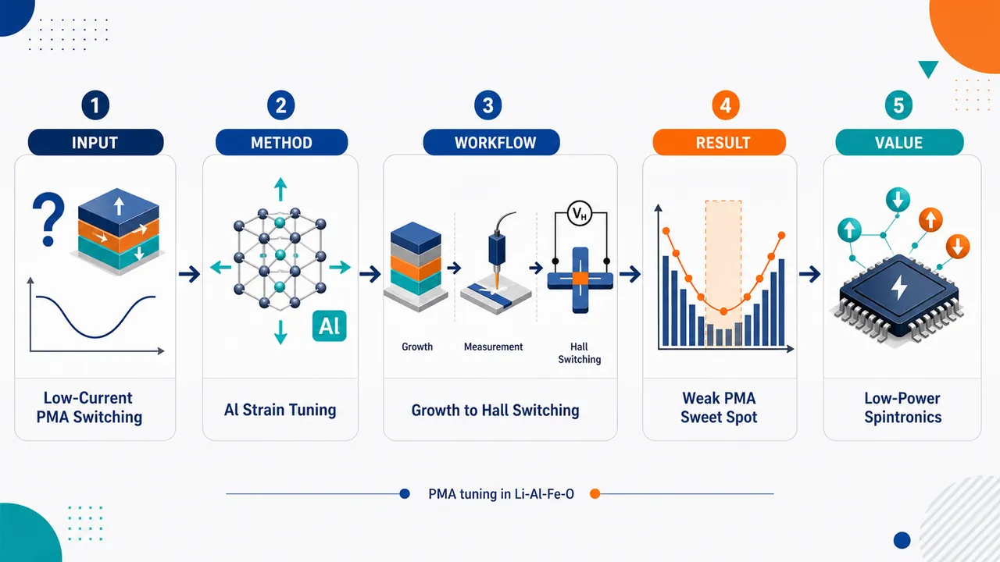
研究问题如何在超薄磁绝缘体中同时实现“垂直磁各向异性PMA、超低磁阻尼、低自旋轨道力矩开关电流”三者兼容；核心矛盾是PMA需要足够稳定的垂直磁态，但过强PMA会抬高各向异性势垒、增加电流开关难度。创新方法用Al含量作为“应变旋钮”，在MgGa₂O₄衬底上调节Li₀.₅AlₓFe₂.₅₋ₓO₄薄膜晶格常数：Al增加→晶格缩小→面内拉伸应变增强→磁各向异性从面内翻转到面外；Aha点是找到x=0.7这一“弱而稳定PMA甜点区”，既保留超低阻尼，又显著降低SOT开关电流。工作流程输入不同Al含量x=0.5–1.0的LAFO靶材，在MgGa₂O₄(001)衬底上PLD外延生长薄膜；用XRD/RSM确认相干应变与晶格收缩，用SQUID/XMCD确定磁各向异性、磁化强度和Fe³⁺磁性来源，用FMR提取Gilbert阻尼，用Pt/LAFO器件进行ST-FMR测SOT效率，最后在Hall bar中用电流脉冲读取Hall信号，实现并比较PMA样品的SOT磁化翻转。关键结果Al含量升高使LAFO从面内各向异性转为PMA，临界组成约为x=0.7；x=0.7具有弱稳定PMA，饱和场低于70 mT、矫顽场低于1 mT、Gilbert阻尼约3.06×10⁻⁴；Pt/LAFO的SOT效率在0.073–0.094之间、平均0.084且近似不随成分变化；x=0.7的SOT开关电流密度低至约8×10⁶ A/cm²，低于强PMA的x=1.0样品。应用价值提供一种可工程化的低功耗PMA磁绝缘体材料平台：通过成分—应变设计同时获得低损耗自旋波传播和高效电流开关，可用于下一代自旋波逻辑、磁绝缘体存储、自旋轨道力矩器件和低热耗自旋电子学。第一部分：核心概览
该研究建立了 Li₀.₅AlₓFe₂.₅₋ₓO₄（LAFO）尖晶石铁氧体薄膜中 垂直磁各向异性（PMA）—超低阻尼—低自旋轨道力矩开关电流的协同调控图景。通过在 MgGa₂O₄ 衬底上改变 Al 含量，实现从面内各向异性到弱而稳定 PMA 的应变驱动转变，同时保持最低约 α = 3 × 10⁻⁴ 的 Gilbert 阻尼和近似成分无关的 SOT 效率。LAFO x=0.7 被确定为兼具弱 PMA、较大磁化强度、低阻尼和低开关电流密度的优化组成，为低功耗磁绝缘体自旋电子学与自旋波器件提供了可工程化材料平台。
---
第二部分：结构化快速回顾
《Tuning perpendicular magnetic anisotropy in ultra-low damping Li₀.₅AlₓFe₍₂.₅₋ₓ₎O₄ thin films for efficient spin-orbit torque switching》（None，）
背景
磁绝缘体自旋电子器件需要同时满足 超低磁阻尼、PMA、长自旋扩散长度、有效自旋-电荷转换。YIG 等石榴石体系性能优异，但依赖高温生长和同构衬底；LAFO 尖晶石铁氧体提供低阻尼替代路线。
方法
采用 PLD 在 MgGa₂O₄(001) 上生长 x=0.5–1.0 的 LAFO 薄膜；通过 XRD/RSM、SQUID、XMCD、FMR、ST-FMR、Hall bar SOT switching 系统测量结构、静态磁性、动态阻尼、SOT 效率与电流开关。
结果
Al 增加使 LAFO 晶格常数降低并增强面内拉伸应变，磁各向异性从面内转向 PMA。x=0.7 出现弱而稳定 PMA，饱和场低于 70 mT，矫顽场低于 1 mT，阻尼约 3.06 × 10⁻⁴。Pt/LAFO 中 SOT 效率约 0.073–0.094，平均 0.084。
讨论
低阻尼主要源于磁性子晶格几乎完全由 Fe³⁺ 构成，g 因子约 2.04 ± 0.02，轨道角动量近似淬灭；Al 替代引入的无序主要表现为非均匀展宽增加。开关电流降低主要来自 弱 PMA 与小各向异性势垒，而非界面透明度变化。
局限
ST-FMR 本质上偏向面内几何，对强 PMA 样品信号较弱；SOT switching 主要展示 x=0.7 与 x=1.0 两种 PMA 组成；电流开关仍需面内辅助场，零场开关尚未实现。
结论
LAFO 可通过 Al 含量实现应变调控 PMA，同时保持超低阻尼和稳定 SOT 效率。x=0.7 是低功耗 PMA 磁绝缘体 SOT 开关的最优区间。
---
第三部分：逐章节冷凝解析
Abstract
Integrated optimization of PMA, ultra-low damping, and low SOT switching current
超薄磁绝缘体同时具备 超低 magnon damping、PMA、低 SOT switching current density 极具挑战性，但对无耗散电荷流的信息传输器件至关重要。研究目标被明确限定为下一代自旋波与自旋电子技术所需的组合性能：*"Ultra-thin magnetic insulator films that simultaneously exhibit ultra-low magnon damping, perpendicular magnetic anisotropy (PMA), and low spin-orbit torque (SOT) switching current densities are highly desirable, albeit challenging, for next-generation spintronic technologies that exploit spin waves to transport information without dissipative charge currents."*
LAFO as a tunable ferrimagnetic spinel model system
材料体系选用 ferrimagnetic spinel Li₀.₅AlₓFe₂.₅₋ₓO₄（LAFO），用于同时调节磁化强度、磁各向异性和阻尼。核心实验事实为：*"Here, we demonstrate this combination of properties in ferrimagnetic spinel Li0.5AlxFe(2.5-x)O4 (LAFO) thin films."*
Epitaxial strain controls PMA through composition and substrate
PMA 的可调性来自 外延应变，应变又由 Al 化学组成与衬底选择决定。关键机制被压缩为：*"PMA can be tuned by epitaxial strain in the form of chemical composition and substrate choice and that low SOT switching current densities correlate with small but finite PMA."* 这说明并非 PMA 越强越好，而是有限且较弱的 PMA对应更低开关电流。
Ultra-low damping originates primarily from Fe³⁺-only magnetic cations
超低阻尼的首要来源是磁活性阳离子几乎只包含 Fe³⁺，Al 替代引起的无序是次级因素：*"Ultra-low damping is stabilized primarily by having only Fe3+ as magnetically active cations with secondary effects due to increased disorder from Al substitution distribution."* Fe³⁺ 的 3d⁵ 构型对应轨道角动量近似淬灭，有利于低自旋轨道耦合与低阻尼。
SOT efficiency is composition-independent but interface-governed
SOT 效率并不随 Al 组成显著改变，而主要受 Pt/LAFO 界面质量控制：*"SOT efficiency is governed by interface quality and independent of chemical composition."* 这使得不同组成间的开关电流差异可主要归因于本征磁性参数，而非界面透明度变化。
Optimal composition x=0.7 combines all target properties
LAFO x=0.7，即 Li₀.₅Al₀.₇Fe₁.₈O₄ 被确定为最优组成，兼具超低阻尼、小各向异性场稳定 PMA 和低临界电流密度：*"We identify an optimal composition LAFO x=0.7 (Li0.5Al0.7Fe1.8O4), which combines ultra-low damping, stable PMA with small anisotropy fields, and low critical current densities for SOT switching."*
---
I Introduction
Low-loss magnetic insulators enable coherent long-distance magnon transport
低磁损耗磁绝缘体可以支持长距离相干传播的 magnons，是自旋波器件、THz 发射器和 proximity-driven magnetic devices 的基础：*"Magnetic insulator thin films with low magnetic loss support collective spin excitations, or magnons, that can propagate coherently over long distances."* 关键功能包括 magnon 的产生、控制和转导：*"The effective generation, control and transduction of these coherent excitations are essential for next generation spin-wave based devices, THz emitters and proximity-driven magnetic devices."*
Device-relevant magnetic insulators require more than low Gilbert damping
除 Gilbert damping parameter α 极低外，目标薄膜还需满足三项条件：各向同性面内 magnon 传播、长自旋扩散长度、高效自旋-电荷互转换。原始条件列为：*"these films must exhibit: (i) isotropic in-plane magnon propagation, (ii) long spin diffusion lengths and (iii) efficient spin-to-charge interconversion."*
Magnon behavior depends on generation mechanism, momentum, defects, and disorder
magnon 可由热梯度、微波激发、SOT 或光学激发产生，不同模式与不同准粒子耦合，且缺陷会系统影响行为。关键表述为：*"Depending on how magnons are generated, through thermal gradients, microwave excitations, spin-orbit torques, or optical excitations, a range of magnon modes may be excited."* 缺陷因素包括：*"different defects and impurities, such as vacancies and cation disorder, may systematically affect magnon behavior."*
Ferrites dominate the limited material pool satisfying PMA and spin-transport requirements
同时可稳定为薄膜并满足 PMA、低损耗、长扩散长度和自旋-电荷互转换的材料很少，主要为 Fe³⁺ 3d⁵ 主导磁性的铁氧体：*"These materials are predominantly ferrites in which the magnetism originates from the Fe3+ ion with a 3d5 configuration."* 体系包括：*"garnet ferrites, spinel ferrites and hexaferrites."*
YIG provides a benchmark but has growth and interface constraints
Y₃Fe₅O₁₂（YIG） 是 PMA 磁绝缘体中的经典基准，可达到 α ≈ 10⁻⁴ 与 10⁶–10⁷ A/cm² 量级 SOT 临界电流：*"YIG films with PMA have demonstrated ultra-low damping values reaching as low as α≈10−4 and have exhibited low critical SOT switching current densities on the order of 10⁶⁻¹⁰⁷ A/cm2."* 但 YIG 的极低阻尼通常需要同构石榴石衬底与 600–800 °C 高温：*"these extremely low damping values can only be achieved for films grown on isotructural garnet substrates and typically require high growth temperatures (600-800 °C)."*
PMA garnets reveal that low SOT current requires low damping and small anisotropy fields
TIG 等 PMA 石榴石同样显示低阻尼和低 SOT 开关电流，已有认识指出低电流来自两者组合：*"It has been shown that these low SOT switching current densities arise from a combination of low damping and small anisotropy fields."* 这为 LAFO 中寻找弱 PMA 低势垒区间提供逻辑起点。
Spinel ferrites provide a lower-damping alternative platform
尖晶石铁氧体原本多用于体相微波应用，近年成为低阻尼自旋波薄膜材料：*"Spinel ferrites offer an alternative material platform."* 其中 LAFO 已被发现具有 α ∼ 10⁻⁴ 量级阻尼：*"Li0.5AlxFe(2.5-x)O4 (LAFO), derived from the parent compound Li0.5Fe2.5O4 (LFO), has been identified as a spinel ferrite with very low damping on the order of α ∼ 10−4."*
Al substitution reduces lattice parameter and enables epitaxial matching
LFO 体相晶格常数约 8.33 Å，商业可用尖晶石单晶衬底 MgAl₂O₄（MAO） 晶格常数约 8.08 Å；Al 替代引入用于减小 LAFO 晶格常数并实现相干外延：*"Aluminum substitution has been introduced into LFO (with abulk = 8.33 Å) to reduce the lattice parameter and enable coherent epitaxial growth on the only commercially available spinel structure single crystal substrate MgAl2O4 (MAO) (with abulk = 8.08 Å)."*
Previous MAO and MGO studies established strain-dependent anisotropy
在 MAO 上，x=0.5 与 x=1.0 的 LAFO 因压缩应变出现面内容易轴；在 MgGa₂O₄（MGO, abulk = 8.30 Å） 上，x=1.0 处于拉伸应变并表现 PMA：*"increased Al substitution reduces magnetization and induces easy in-plane magnetic anisotropy due to compressive epitaxial strain imposed by the MAO substrate."* 以及：*"To stabilize PMA, LAFO x=1.0 has been grown under tensile epitaxial strain on single-crystal MgGa2O4 (MGO) substrates (with abulk =8.30 Å) where it exhibits both PMA and low damping."*
LAFO x=1.0 already showed efficient spin transport and low SOT switching
既有 LAFO x=1.0 异质结构显示 Pt/Ta 双层中的高效自旋输运和低临界电流，甚至比可比石榴石体系低一个数量级以上：*"Studies of LAFO x=1.0 heterostructures have demonstrated efficient spin transport across Pt and Ta heavy metal bilayers, as well as low critical current densities for spin-orbit torque (SOT) switching that are more than an order of magnitude lower than those observed in comparable garnet heterostructures."*
Unresolved issue is the damping–anisotropy–critical-current interplay in PMA magnetic insulators
尽管拉伸应变被确认可稳定 LAFO PMA，但低阻尼与 SOT 临界电流之间的耦合规律尚未完整：*"there is not a complete understanding of the interplay of damping loss and critical current density for spin-orbit torque switching in magnetic insulating thin films with PMA."*
Composition range x=0.5–1.0 isolates strain and magnetic-property trends
研究对象为 MGO 上 x=0.5–1.0 的 LAFO 外延薄膜，目标包括四点：应变调控面内到面外各向异性、Fe³⁺ 子晶格保持低阻尼、弱 PMA 降低 SOT 电流、界面控制 SOT 效率。原始目标列为：*"we study epitaxial LAFO thin films with Al substitution levels ranging from x=0.5 to x=1.0 on single crystal MgGa2O4 substrates."* 以及：*"We demonstrate (i) how epitaxial strain, controlled through chemical composition, tunes the magnetic anisotropy from in-plane to out-of-plane..."*
x=0.7 is the minimum Al concentration for sufficient PMA with lowest damping
x=0.7 是诱导 PMA 所需的最低 Al 含量，同时保持最低阻尼；该组成的阻尼达到 3 × 10⁻⁴，被描述为 PMA 尖晶石铁氧体中的最低值：*"we find that the LAFO x=0.7 composition consistently exhibits the lowest damping reported of any PMA spinel ferrite reaching values as low as (3 × 10−4)."*
Pt/LAFO x=0.7 achieves low SOT current due to weak PMA
x=0.7 的弱 PMA 伴随面内和面外小饱和场，在 Pt/LAFO 中 SOT switching current density 可低至 8 × 10⁶ A/cm²：*"In Pt/LAFO heterostructures, the epitaxial interface enables SOT switching current density values as low as 8 × 10⁶ A/cm2, with switching current increasing with stronger PMA in higher Al concentration LAFO films."*
---
II Experiment
PLD growth used MGO substrates and controlled oxygen conditions
LAFO 通过 pulsed laser deposition（PLD） 生长在 as-received 单晶 (001) MgGa₂O₄（MGO） 衬底上，MGO 体相晶格常数为 8.30 Å：*"LAFO films were synthesized using pulsed laser deposition (PLD) on as-received single crystal (001) MgGa2O4 (MGO) substrates with abulk =8.30 Å."* 衬底由柏林 Leibniz-Institut für Kristallzüchtung 采用 Czochralski 法制备：*"MGO substrates were prepared by the Czochralski method at the Leibniz-Institut für Kristallzüchtung in Berlin, Germany."*
Laser parameters and target chemistry were fixed across composition series
PLD 使用 248 nm KrF 激光，重复频率 2 Hz，靶面 fluence 2.8 J/cm²：*"Films were deposited using a 248 nm KrF laser operating at a repetition rate of 2 Hz and a fluence of 2.8 J/cm2 measured at the target."* 六个多晶靶材为 Li₀.₆AlₓFe₂.₅₋ₓO₄，x=0.5–1.0：*"Six polycrystalline targets of Li0.6AlxFe(2.5-x)O4 with Al substitution ranging from x=0.5 to x=1.0 were used."* 靶材 Li 过量用于补偿沉积中 Li 损失：*"The excess Li in the target compared to LAFO is to compensate for Li depletion during deposition."*
Growth temperature and oxygen pressure were composition-dependent
沉积氧压为 2.0 Pa（15 mTorr）O₂，衬底温度从 400 °C（x=0.5） 到 450 °C（x=1.0）：*"The depositions were performed in 2.0 Pa (15 mTorr) O2 at substrate temperatures ranging from 400 °C (LAFO x=0.5) to 450 °C (LAFO x=1.0)."* 冷却气氛为 13.3 Pa（100 Torr）O₂：*"LAFO films were cooled to room temperature in the chamber in an atmosphere of 13.3 Pa (100 Torr) O2."*
Thicknesses were selected by measurement purpose
结构与磁性表征采用约 13 nm 薄膜，SOT 测量采用 8 nm 薄膜：*"Films on the order of 13 nm were used for structural and magnetic characterization while 8nm thick films were used for spin-orbit torque (SOT) measurements."*
Structural, static magnetic, and dynamic magnetic measurements covered complementary observables
结构表征使用 high-resolution XRD 与 RSM：*"Structural characterization of both the LAFO and Pt layers were carried out via high-resolution X-ray diffraction (XRD) and reciprocal space mapping (RSM)."* 静态磁化采用 Quantum Design Evercool SQUID：*"Static magnetic characterization... was performed using a Quantum Design Evercool SQUID magnetometer."* 动态磁性采用室温 broadband FMR：*"Dynamic magnetic properties... were characterized at room temperature using a broadband ferromagnetic resonance (FMR) system in a coplanar-waveguide geometry."*
XMCD/XAS provided element-specific chemical and magnetic information
元素特异 XAS/XMCD 在 Advanced Light Source 的 beamlines 4.0.2 and 6.3.1 完成，测量在超过各样品饱和场的磁场下进行，并包含 normal 与 grazing incidence：*"X-ray absorption spectroscopy (XAS) and X-ray magnetic circular dichroism measurements (XMCD) were performed at beamlines 4.0.2 and 6.3.1 of the Advanced Light Source."* 以及：*"Measurements were taken in magnetic fields well in excess of the saturation field of each sample at both normal and grazing incidence in luminescence yield mode."*
SOT switching devices used Pt/LAFO Hall bars
SOT switching 结构为 2.5 nm Pt / 8 nm LAFO，Pt 由 KJL 溅射系统室温沉积：*"2.5 nm of Pt was deposited on 8 nm thick LAFO films of varying Al composition using a Kurt J. Lesker (KJL) sputter system at room temperature."* Hall bar 宽 10 μm、长 40 μm：*"The Hall bars were defined by photolithography and etched by ion milling with a channel width of 10 μm and length of 40 μm."*
ST-FMR devices used thicker Pt for better signal
ST-FMR 采用 4 nm Pt / LAFO，线长 60 μm，宽 10–20 μm，并沉积 10 nm Ti/100 nm Au 共面波导电极：*"For ST-FMR characterization of the damping-like SOT efficiency, 4 nm of Pt was deposited on LAFO also using room temperature DC sputtering."* 以及：*"Samples were then etched into 60 μm long wires with a width of 10-20 μm."*
Different Pt/LAFO thicknesses optimized switching versus ST-FMR sensitivity
SOT 与 ST-FMR 厚度不同是出于信号和开关效率权衡：*"We chose different Pt/LAFO thicknesses for SOT and ST-FMR measurements as thinner stacks improve SOT switching and thicker Pt/LAFO bi-layers improve ST-FMR signal."*
SOT and ST-FMR were both room-temperature measurements
SOT switching 在 Quantum Design Dynacool 中室温、最高 100 mT 磁场下完成：*"SOT switching measurements were carried out in a Quantum Design Dynacool system in fields up to 100 mT at room temperature."* ST-FMR 在 2 T GMW electromagnet 中室温进行，RF 功率 23 dBm：*"Spin-torque ferromagnetic resonance (STFMR) measurements were carried out at room temperature in a 2 T GMW electromagnet. RF current from an RF power source at 23 dBm was sent through the ST-FMR device."*
---
III Results
III.1 Structural characterization
Al substitution monotonically reduces out-of-plane lattice parameter
13 nm LAFO/MGO 薄膜 XRD 显示，Al 含量增加使 LAFO out-of-plane lattice parameter 单调降低，对应 LAFO (004) 峰向高角度移动：*"Aluminum substitution systematically decreases the lattice parameter of LAFO, as determined by XRD measurements of 13 nm thick films grown on MGO."* 以及：*"Figure 1 shows a monotonic decrease in the out-of-plane lattice parameter with increasing Al concentration, indicated by the progressive shift of the LAFO (004) Bragg reflection to higher angles."*
Peak overlap increases low-Al fitting uncertainty
低 Al 组成的 LAFO 峰接近衬底峰，导致峰位误差较大：*"Due to the close lattice match of the LAFO peaks with the substrate peak, there is a larger margin of error in the location of the lower Al composition LAFO peaks."* 这意味着 x=0.5–0.7 的绝对晶格常数提取可靠性低于高 Al 组成。
High-Al compositions fit a clamped in-plane lattice model
x=0.8–1.0 可用 dynamical XRD model 拟合，模型假设 LAFO 面内晶格常数被 MGO 衬底钳制：*"for compositions of x=0.8 to x=1.0, we can easily fit the spectra using a dynamical XRD model with the in-plane lattice constant of LAFO clamped to that of the MGO substrate."* 这说明高 Al LAFO 仍保持外延相干。
Out-of-plane contraction is consistent with increasing in-plane tensile strain
提取的 out-of-plane lattice parameter 随 Al 增加而下降，符合泊松响应下的面内拉伸增强：*"This decrease in out-of-plane lattice parameter is consistent with increasing tensile strain in-plane."*
Rocking curve FWHM confirms excellent crystallinity for x=0.8–1.0
由于 x=0.5–0.7 的 LAFO (004) 峰落在 MGO (004) 峰下，ω rocking curve 只测量 x=0.8–1.0；其 FWHM 为 0.005–0.009°，与衬底相同量级：*"These compositions showed a typical omega rocking curve full width at half maximum (FWHM) of 0.005 ∼ 0.009°, similar to the substrate rocking curve FWHM of 0.005 ∼ 0.009°, indicating excellent crystallinity."*
RSM confirms coherent strain across the full x=0.5–1.0 range
非对称 (1̄1̄5) RSM 显示所有组成的 LAFO 面内 Q_IP 与衬底无横向偏移：*"Reciprocal space maps of asymmetrical peak (1̄1̄5) confirm that LAFO remains coherently strained to the MGO substrate across the full composition range."* 以及：*"there is clearly no lateral shift of the in-plane QIP of the film peak from that of the substrate peak for any of the compositions."*
Calculated biaxial tensile strain increases from 0.1% to 1.2%
利用 LAFO 体相晶格常数 8.29 Å–8.20 Å，估算双轴拉伸应变从 x=0.5 的约 0.1% 增至 x=1.0 的约 1.2%：*"Using LAFO bulk lattice parameters which range from abulk = 8.29 Å to abulk = 8.20 Å, we calculate biaxial tensile strain increases from approximately 0.1% for LAFO x=0.5 to approximately 1.2% for LAFO x=1.0."* 这将 Al 替代与应变工程直接关联。
---
III.2 Static magnetic characterization
Al substitution decreases saturation magnetization nearly linearly
SQUID 室温测量显示 saturation magnetization Mₛ 随 Al 增加近线性下降，从 x=0.5 的 200 kA/m 降至 x=1.0 的 80 kA/m：*"SQUID magnetometry measurements performed at room temperature show that saturation magnetization decreases approximately linearly with increasing Al concentration from 200 kA/m in LAFO x=0.5 to 80 kA/m in LAFO 1.0."*
Saturation magnetization is direction-independent within experimental error
沿 [100]、[110]、[001] 测得的 Mₛ 在每个样品中一致，误差为 ±3–10 kA/m：*"MS is the same along all directions for each sample within an error of ± 3-10 kA/m."* 说明方向差异主要来自磁各向异性场，而非磁矩大小差异。
Al-induced strain switches anisotropy from in-plane to PMA
x=0.5、0.6 为面内容易轴；x≥0.7 显示 PMA：*"Samples with x=0.5 and x=0.6 exhibit easy in-plane magnetic anisotropy, while samples with x ≥ 0.7 display PMA."* 这表明 PMA 的临界组成约为 x=0.7。
LAFO x=0.7 has weak but stable PMA with extremely small saturation and coercive fields
x=0.7 同时具有稳定 PMA 和很小各向异性势垒；面内和面外饱和场均低于 70 mT，所有方向矫顽场低于 1 mT：*"LAFO x=0.7 exhibits weak but stable PMA with exceptionally small saturation fields in both the in-plane and out-of-plane directions of less than 70 mT, as well as coercive fields below 1 mT in all directions."*
Anisotropy results from magnetocrystalline, magnetoelastic, and shape terms
磁各向异性的演化由 magnetocrystalline anisotropy、magnetoelastic anisotropy、shape anisotropy 共同决定：*"The evolution of magnetic anisotropy can be understood through a combination of magnetocrystalline, magnetoelastic and shape contributions to the anisotropy."*
Bulk LFO constants define the anisotropy calculation
计算采用 LFO 体相常数：K₁ = −9.0 × 10³ J/m³，K₂ = 2.1 × 10³ J/m³，λ₁₀₀ = −2.6 × 10⁻⁵，λ₁₁₁ = 2.3 × 10⁻⁶，Y = 10¹¹ J/m³。原始数值为：*"K1 = −9.0 × 10³ J/m3, K2 = 2.1 × 10³ J/m3, λ100 = −2.6 × 10−5 and λ111 = 2.3 × 10−6 as well as a typical Young’s Modulus of Y = 10¹¹ J/m3."*
Below x=0.7, tensile strain is insufficient to overcome shape and magnetocrystalline anisotropy
虽然所有样品均为拉伸应变，但 x<0.7 时磁弹性能不足以克服形状和磁晶各向异性，易轴仍为 [110]，中间轴与硬轴分别为 [100]、[001]：*"although all samples are under tensile strain, the magnetoelastic contribution is not enough to overcome shape and magnetocrystalline anisotropy below x=0.7 with the easy axis along [110] and intermediate and hard directions along [100] and [001] respectively."*
At x=0.7, easy direction switches to [001]
x=0.7 时易磁化方向转为面外 [001]，PMA 稳定：*"At LAFO x=0.7, the easy direction switches to [001] with a magnetically hard in-plane direction and the stabilization of PMA."*
Measured SQUID anisotropy agrees with calculated energy trends
应变调谐提供控制磁各向异性的直接路径，计算行为与 SQUID 数据相符：*"These results demonstrate that epitaxial strain tuning through Al substitution provides a direct route for controlling the magnetic anisotropy in these films."* 以及：*"The calculated anisotropy behavior agrees closely with the measured SQUID data."*
XMCD confirms Fe³⁺ as the magnetically active ion
Fe L₂,₃ 边 XAS/XMCD 显示磁性离子为 Fe³⁺：*"XMCD measurements indicate that the magnetically active ions are Fe3+ ions."* XMCD 由左右圆偏振 XAS 差分得到：*"XMCD spectra is created by taking the difference in the x-ray absorption spectra (XAS) of left and right circularly polarized light."*
XMCD fitting used γ-Fe₂O₃ and GaFeO₃ reference spectra
拟合采用两个已知 Fe³⁺ 位点分布参考：γ-Fe₂O₃ 含 62.5% Fe³⁺_Oh 与 37.5% Fe³⁺_Td，GaFeO₃ 为 100% Fe³⁺_Oh：*"The XMCD spectra was then fit using two reference spectra of known Fe3+ octahedral and tetrahedral distribution: γ-Fe2O3 (62.5% Fe3+Oh 37.5% Fe3+Td) and GaFeO3 (100% Fe3+Oh)."*
No Fe²⁺ is needed to fit any composition
所有组成均可仅用 Fe³⁺ 拟合，无需 Fe²⁺：*"We are able to fit spectra for all compositions with only Fe3+ and no Fe2+ as has been the case for previous LAFO studies."* 这对低阻尼至关重要，因为 Fe²⁺ 通常带来更强自旋轨道耦合与弛豫通道。
Fe³⁺ site distribution is composition-independent
各组成提取到的 Fe³⁺ 分布为 54% ± 2% Oh、46% ± 2% Td，Al 在 x=0.5–1.0 内未明显改变 Fe³⁺ 位点占据：*"From our fits, we extract an Fe3+ distribution of 54% +/- 2% Oh and 46% +/- 2% Td for each composition."* 以及：*"indicating that within this composition range, the Al does not noticeably affect the Fe3+ distribution."*
---
III.3 Ferromagnetic resonance
Broadband FMR shows ultra-low damping across all compositions
宽频 FMR 显示整个 x=0.5–1.0 系列都保持超低磁阻尼：*"Broadband FMR measurements reveal ultra-low magnetic damping across the entire composition range."* 这表明 Al 替代和应变调谐并未破坏 LAFO 的低损耗基础。
LAFO x=0.7 has a narrow 1.02 mT linewidth
x=0.7 的典型 FMR 谱 linewidth 为 1.02 mT（10.2 Oe）：*"A typical FMR spectra for LAFO x=0.7 is shown in the inset of Fig. 4 a with a linewidth of 1.02 mT (10.2 Oe)."* 该值显示了极窄共振吸收峰和低损耗动力学。
Gilbert damping was extracted from 5–30 GHz linewidth-frequency fits
FMR 频率范围为 5–30 GHz，峰宽随频率线性拟合：*"the FMR spectra is taken at frequencies from 5 GHz to 30 GHz and the width of the absorption peak is plotted vs frequency."* 拟合方程为：*"ΔHhwhm = ΔH0 + α h/(g μB μ0) f"*，其中 ΔH₀ 表征无序和缺陷导致的非均匀展宽：*"ΔH0 is the inhomogeneous broadening attributed to disorder and defects."*
LAFO x=0.7 reaches α = 3.06 × 10⁻⁴
x=0.7 的 linewidth-frequency 斜率给出 α = 3.06 × 10⁻⁴：*"Fig. 4 (a) shows the frequency dependence of the FMR linewidth for LAFO x=0.7 with an ultra-low damping parameter of α = 3.06 × 10−4."*
Damping values were averaged over at least two samples per composition
每个组成的 Gilbert damping 至少来自两个样品平均：*"We extract the Gilbert damping parameter for each composition... and average over at least two samples for each composition."* 这提高了组成趋势的可信度。
Apparent [001] damping minimum at x=0.7 reflects anisotropy-axis crossover
沿 [001] 测量时，x=0.7 出现阻尼最小值；原因是 x=0.5、0.6 的 [001] 为硬轴，而高 Al 样品 [001] 为易轴：*"When measuring FMR with field parallel to the [001] direction across compositions, we see a minimum in the Gilbert damping parameter at LAFO x=0.7."* 以及：*"This is because the [001] direction becomes the magnetically hard axis for the in-plane compositions LAFO x=0.5 and x=0.6 while it is the magnetically easy direction for higher Al doping."*
Easy-axis damping increases with Al due to disorder
沿各组成容易方向测量时，α 随 Al 增加而上升，被归因于 Al doping 引入的无序：*"there is a clear increase in α with increasing Al that is attributed to increased disorder from Al doping."* 这区分了“Fe³⁺ 主导的本征低阻尼”和“Al 分布无序引起的附加损耗”。
Low-Al samples reach the lowest reported damping in spinel ferrites
低 Al 组成的 α 约为 1.5 × 10⁻⁴ 到 3.0 × 10⁻⁴，被定位为尖晶石铁氧体中的最低阻尼，并可与 YIG 薄膜最低值相比：*"The lower Al composition samples have α ∼ 1.5 × 10−4 to 3.0 × 10−4 which is the lowest damping parameter reported in any spinel ferrites... comparable to the lowest damping parameters seen in thin films of YIG."*
Kittel fits extract g factor and effective magnetization
FMR resonance field 随频率关系用于提取 spectroscopic g factor 与 Mₑff：*"Frequency dependence of the FMR field allows us to deduce the spectroscopic g factor as well as the effective magnetization Meff from the Kittel equation."* Kittel 方程为：*"f = g μB μ0 / h (Hfmr − Meff)"*，其中：*"Meff = Ms − H2,⊥."*
Positive H₂,⊥ increases with Al and drives negative Mₑff at x=0.7
所有样品 H₂,⊥ 为正且随 Al 增加；x=0.7 时 H₂,⊥ 足以超过 Mₛ，使 Mₑff 变负并产生 PMA：*"H2,⊥ is positive for all samples and increases with increasing Al composition."* 以及：*"At an Al composition x=0.7, H2,⊥ is large enough to overcome Ms, causing Meff to become negative... and hence exhibit PMA."*
FMR-derived PMA agrees with SQUID
x≥0.7 的负 Mₑff 和 PMA 与静态磁化一致：*"The negative Meff and PMA in all compositions above x=0.7 is in agreement with static magnetic measurements."*
g = 2.04 ± 0.02 confirms Fe³⁺ L = 0 and weak spin-orbit coupling
所有 LAFO 组成平均 g 因子为 2.04 ± 0.02，与 Fe³⁺ 的 L=0 一致：*"The average g for all LAFO compositions was found to be 2.04 +/- 0.02 and consistent with a total orbital angular momentum of L=0 for Fe3+."* 该值意味着弱自旋轨道耦合，有利于低阻尼和相干 magnon 输运：*"This value indicates relatively weak spin-orbit coupling, which is favorable for suppressing magnetic damping and maintaining coherent magnon transport."*
---
III.4 Spin torque ferromagnetic resonance
ST-FMR quantified electrical control and SOT efficiency in Pt/LAFO
为量化电流调控 LAFO 磁化的效率，构筑 Pt/LAFO bilayers 并执行 ST-FMR：*"To electrically modulate LAFO magnetization and quantify the efficiency of this process, we performed spin-torque ferromagnetic resonance (ST-FMR) measurements."* SOT 效率同时包含 Pt 的 spin Hall angle 和 Pt/LAFO interface spin transparency：*"the spin-orbit torque (SOT) efficiency... incorporates contributions from both the spin Hall angle of the Pt and the spin transparency of the Pt/LAFO interface."*
Microwave current in Pt generates anti-damping torque via spin Hall effect
ST-FMR 中，面内微波电流流过 Pt，经 spin Hall effect 对 LAFO 磁化施加 anti-damping torque：*"a microwave current is passed in-plane through the Pt layer, which generates an anti-damping torque on the LAFO magnetization via the spin Hall effect."*
Driven LAFO precession produces a dc mixing voltage
在合适磁场下，力矩驱动 LAFO 相干 magnon precession，引发 Pt 电阻振荡；电阻振荡与微波电流干涉产生 dc voltage：*"these torques drive coherent magnon precession in the LAFO, which in turn produces oscillations in the Pt resistance through spin Hall and anisotropic magnetoresistance effects."* 以及：*"The interference between the oscillating resistance and microwave current generates a dc voltage signal."*
Voltage spectra were fit by symmetric and antisymmetric Lorentzians
ST-FMR 电压谱用对称与反对称 Lorentzian 叠加拟合以提取 HWHM linewidth ΔH：*"The measured voltage spectra can be fit using a superposition of symmetric and antisymmetric Lorentzian functions to extract the half-width-at-half-maximum linewidth ΔH."*
DC current tunes linewidth linearly and yields damping-like SOT efficiency
额外 dc current 改变 FMR linewidth，并由线性关系提取 damping-like torque efficiency：*"An additional dc current can be applied alongside the microwave current to determine the SOT efficiency."* 以及：*"The applied dc current modifies the FMR linewidth linearly, allowing the damping-like torque efficiency to be extracted."*
ST-FMR is intrinsically difficult for PMA systems
ST-FMR 所需几何本质上是面内测量，因此 PMA 系统中常因面内阻尼大、峰宽大且振幅低而难以准确提取效率：*"Due to the required field and current geometry, ST-FMR is fundamentally an in-plane measurement, making it challenging to implement in PMA magnetic systems."* 以及：*"In most PMA materials, the in-plane damping is relatively large, resulting in broad, low-amplitude resonance peaks."*
Weak PMA in x=0.7 enables measurable ST-FMR despite perpendicular anisotropy
面内各向异性样品的 ST-FMR 峰更尖锐、振幅更高；但 x=0.7 的极小面内饱和场使 PMA 样品仍有较强信号：*"LAFO samples with in-plane magnetic anisotropy exhibit sharper and higher-amplitude resonance peaks compared to the PMA compositions."* 以及：*"the exceptionally small in-plane saturation fields of LAFO x=0.7 enables relatively strong ST-FMR signals despite the presence of PMA."*
Weak stable PMA plus ultra-low damping expands ST-FMR access to PMA LAFO
x=0.7、0.8、0.9 的 PMA LAFO 可用传统 ST-FMR 表征，依赖其弱 PMA 与超低阻尼组合：*"This unique combination of weak but stable PMA and ultra-low damping allows spin-torques characterization in PMA LAFO compositions (x=0.7, 0.8 and 0.9) that would otherwise be difficult to access using conventional ST-FMR measurements."*
Damping-like SOT efficiencies are 0.073–0.094 with mean 0.084
x=0.5、0.6、0.7、0.8、0.9 的 damping-like SOT efficiency 介于 0.073–0.094，平均 0.084：*"We extract damping-like SOT efficiencies in the range of 0.073 to 0.094 with a mean of 0.084 for LAFO x=0.5, 0.6, 0.7, 0.8 and 0.9."*
Composition-independent SOT efficiency indicates stable Pt/LAFO interface transparency
SOT 效率随组成几乎恒定，说明尽管磁各向异性和应变状态显著变化，Pt/LAFO 界面透明度基本不变：*"the relatively constant SOT efficiency across compositions suggests that the Pt/LAFO interface transparency remains the same despite substantial changes in magnetic anisotropy and strain state."*
---
III.5 Spin-orbit torque switching
Current-induced SOT switching was demonstrated in PMA Pt/LAFO bilayers
Pt/LAFO 双层中实现了 LAFO 磁态的电流诱导 SOT switching，覆盖两个 PMA 组成：*"Current-induced SOT switching of the magnetic state of LAFO films has also been demonstrated in our Pt/LAFO bilayers across two compositions."*
PMA films are technologically attractive for fast switching and high bit density
PMA 磁膜相比面内磁性更适合快速开关和高存储密度：*"PMA magnetic films provide for faster switching and higher bit densities in applications and therefore are more promising compared to their in-plane counterparts."*
LAFO provides a platform to isolate PMA strength effects on critical current
由于 LAFO 可调 PMA，该体系适合研究磁绝缘体异质结构中 critical switching current density 的控制因素：*"The tunable PMA realized in LAFO films provides a unique platform for understanding the factors governing critical switching current density in magnetic insulator heterostructures."*
SOT switching mechanism is spin Hall spin current from Pt
Pt 层中电流通过 spin Hall effect 产生自旋流，对 LAFO 施加 anti-damping torque 并翻转磁化：*"electrical current in the Pt layer generates a spin current via the spin Hall effect, which applies an anti-damping torque to the LAFO magnetization."* 以及：*"Under appropriate conditions, this torque can switch the magnetization direction of the LAFO."*
Low damping, small anisotropy barriers, and transparent interfaces promote efficient switching
高效 SOT switching 的三类关键因素为低阻尼、小各向异性势垒和高效自旋透明界面：*"A number of factors are known to promote efficient SOT switching, including low magnetic damping, small anisotropy barriers, and efficient spin-transparent interfaces."*
Composition-independent SOT efficiency allows isolation of PMA strength
由于各组成界面质量一致且 SOT 效率近似组成无关，critical current 的变化主要可归因于 PMA 强度与磁各向异性：*"Since our heterostructures with varying LAFO composition exhibit consistent interfacial quality and nearly composition-independent SOT efficiencies, we are able to isolate the influence of PMA strength and magnetic anisotropy on critical switching current density."*
Switching comparison focuses on weakest versus strongest PMA
SOT switching 重点比较 x=0.7（最弱 PMA） 与 x=1.0（最强 PMA）：*"We focus here on heterostructures containing PMA LAFO, particularly LAFO x=0.7 with weakest PMA and LAFO x=1.0 with strongest PMA."*
Anomalous Hall effect in Pt tracks LAFO magnetization
通过测量去除 ordinary Hall 线性贡献后的 Hall resistance Rₓy 随 out-of-plane field H_z 的变化，Pt 中 anomalous Hall effect 反映 LAFO 磁态：*"We first measure Hall resistance Rxy as a function of applied out-of-plane field Hz after subtracting the linear ordinary Hall contribution."* 以及：*"Due to the magnetic proximity effect induced by LAFO, Hall transport measurements in the Pt layer exhibit an anomalous Hall effect that reflects the magnetic state of the LAFO film."*
x=1.0 has larger switching fields than x=0.7
LAFO x=1.0 的 Hall hysteresis loops 中磁开关场大于 x=0.7，与其更大矫顽场一致：*"We observe larger magnetic switching fields in the Hall resistance hysteresis loops of LAFO x=1.0 compared to LAFO x=0.7."*
SOT switching used 5 ms dc current pulses
SOT switching 测量中，沿 Hall bar 施加 5 ms dc current pulses，每个脉冲后读取 Rₓy：*"For SOT switching measurements, 5 ms dc current pulses are applied along the Hall bar and the Hall resistance Rxy is measured after each pulse."*
Current-dependent Hall loops show hysteretic SOT switching
Pt 中电荷流产生自旋流并传向 Pt/LAFO 界面，自旋极化与 LAFO 磁化的相对取向决定吸收或反射，从而调制电阻；Rₓy 随电流出现清晰滞回：*"Charge current flowing through Pt generates a spin current via the spin Hall effect that propagates towards the Pt/LAFO interface."* 以及：*"plots of Hall resistance as a function of applied current exhibit clear hysteretic behavior."*
Hall signal amplitude differs because Mₛ differs
两个组成 Hall 信号幅度不同，反映 LAFO 层 saturation magnetization 不同：*"The difference in Hall signal amplitude between the two compositions reflects the different saturation magnetization values of the LAFO layers."*
Small in-plane helper field breaks symmetry
SOT 测量需要施加小的面内辅助场以打破对称性：*"To break the symmetry during the SOT measurements, a small in-plane magnetic helper field is applied."* 图示中电流回线测量使用沿电流方向的 Hₓ = 7 mT：*"Rxy measured as a function of current density with applied field Hx of 7 mT along the current direction."*
Current-induced loops resemble field-sweep loops
电流依赖的滞回回线与磁场扫描回线相似，确认 LAFO 层发生电流诱导 SOT switching：*"The current-dependent hysteresis loops closely resemble those obtained during magnetic field sweeps, confirming current-induced SOT switching of the LAFO layer."*
Deterministic repeatable switching occurs under alternating pulses and fields
在交替正负 dc 电流脉冲与交替面内磁场下，x=0.7 和 x=1.0 均显示一致、确定性开关：*"To demonstrate repeatable switching, we measure Rxy following a sequence of alternating positive and negative dc current pulses under alternating in-plane magnetic fields."* 以及：*"We observe consistent and deterministic switching for both compositions."*
Increasing helper field lowers critical switching current
临界开关电流密度随面内辅助场 Hₓ 增大而降低：*"As expected, increasing the magnitude of the helper field reduces the critical switching current density."*
x=0.7 has lower switching current and larger Hall amplitude than x=1.0
LAFO x=0.7 的开关电流密度显著低于 x=1.0，Hall 信号幅度更大：*"Notably, LAFO x=0.7 exhibits significantly lower switching current densities and larger Hall signal amplitudes compared to LAFO x=1.0."* 机制是 x=0.7 的 out-of-plane saturation field 和 anisotropy barrier 更小：*"This behavior is consistent with the substantially smaller out-of-plane saturation field and weaker anisotropy barrier of LAFO x=0.7."*
Weak but stable PMA minimizes current while preserving perpendicular order
弱但稳定的 PMA 是降低开关电流的最优条件：*"These results demonstrate that weak but stable PMA provides an optimal regime for minimizing switching current while preserving perpendicular magnetic order."*
Critical switching currents are comparable to YIG heterostructures
LAFO x=1.0 中观察到的临界电流量级与 YIG 异质结构典型 10⁶–10⁷ A/cm² 相当：*"the critical switching current is on the order of those reported in YIG heterostructures (typically 10⁶⁻¹⁰⁷ A/cm2)."*
Helper-field-free switching remains future work
辅助场可通过器件几何工程或交换偏置消除，但尚未在此体系中完成：*"In several systems, the helper field has been eliminated through device geometry engineering or introduction of an exchange bias and these approaches will be explored in further studies."*
Switching-current reduction originates from intrinsic magnetic properties
由于 damping-like SOT efficiency 近似组成无关，开关电流降低主要来自 intrinsic magnetic properties，即 damping 和 anisotropy barriers，而非 interface spin transparency：*"The nearly composition-independent damping-like SOT efficiency further indicates that the reduction in switching current density primarily originates from tuning intrinsic magnetic properties—namely damping and anisotropy barriers—rather than changes in interfacial spin transparency."*
---
IV Discussion
LAFO simultaneously maintains tunable PMA, ultra-low damping, and stable SOT efficiencies
LAFO 薄膜与双层结构显示 PMA 可系统调节，同时维持超低阻尼、一致 SOT 效率和高效自旋透明界面：*"Our LAFO films and bilayers demonstrate that PMA can be systematically tuned while maintaining ultra-low magnetic damping, consistent SOT efficiencies, and efficient spin-transparent interfaces."*
Al substitution adds disorder but only weakly increases Gilbert damping below x<0.9
Al 增加引入额外无序，证据是 FMR linewidth 频率依赖中的 inhomogeneous broadening 增加；但 x<0.9 的 Gilbert damping 仅轻微增加：*"Increased Al substitution does introduce additional disorder, as evidenced by the increased inhomogeneous broadening observed in the frequency dependence of the FMR linewidth."* 以及：*"However, the Gilbert damping increases only negligibly for compositions with x < 0.9."*
Fe³⁺ cation-site distribution is stable under Al substitution
Al 增加未显著改变 Fe³⁺ 在阳离子位点之间的分布：*"Furthermore, increased Al substitution does not significantly alter the Fe3+ distribution among cation sites."* 这解释了为何低阻尼能跨组成保持。
Epitaxial Pt/LAFO interfaces sustain efficient spin transport
既有研究显示 Pt 可在 LAFO 上外延生长；有序 Pt/LAFO 界面使不同 Al 组成仍保持高效输运和近似成分无关 SOT 效率：*"Previous studies have shown that Pt grows epitaxially on LAFO."* 以及：*"This growth produces highly ordered Pt/LAFO interfaces that maintain efficient transport and nearly composition-independent SOT efficiencies across the full Al composition range."*
Al substitution exposes the controlling factors for SOT switching
在低阻尼、稳定 SOT 效率和高质量界面基本固定时，Al 替代通过改变磁各向异性与 Mₛ 来揭示有效电流诱导 SOT switching 的控制因素：*"With ultra-low magnetic damping, consistent SOT efficiencies, and high-quality epitaxial interfaces in Pt/LAFO bilayers, we find that Al substitution provides the necessary tuning of the magnetic anisotropy and saturation magnetization to reveal the factors governing effective current-induced SOT switching."*
Al lowers Mₛ and lattice parameter, driving in-plane to PMA transition
Al 增加同时降低 saturation magnetization 与 lattice parameter，在 MGO 上增强拉伸外延应变，从而驱动磁各向异性由面内转为 PMA：*"Increased Al concentration in LAFO simultaneously decreases the saturation magnetization and lattice parameter, driving the evolution of the magnetic anisotropy from in-plane to PMA through increasing tensile epitaxial strain on MGO substrates."*
Weak-PMA regime minimizes anisotropy barriers without losing perpendicular stability
应变调控允许进入弱 PMA 区间，在保留垂直磁稳定性的同时降低各向异性势垒：*"this strain-driven tuning enables access to a weak-PMA regime that minimizes anisotropy barriers while preserving perpendicular magnetic stability."*
x=0.7/Pt is optimized for low-power magnetic-insulating spintronics
有限稳定 PMA 与足够大 Mₛ 的组合使 LAFO x=0.7/Pt 具有最低 critical switching current density：*"By maintaining a finite but stable PMA together with sufficiently large magnetization, we demonstrate that LAFO x=0.7/Pt bilayers exhibit the lowest critical switching current densities."* 该组成被定位为低功耗磁绝缘体自旋电子学优化区间：*"establishing this composition as an optimized regime for low-power magnetic-insulating spintronics."*
---
V Conclusions
Most efficient SOT switching requires weak stable PMA and relatively large Mₛ
最佳 SOT switching 来自弱而稳定的 PMA 与较大饱和磁化强度结合：*"we demonstrate that a weak but stable PMA combined with a relatively large saturation magnetization gives rise to the most efficient SOT switching in Pt/LAFO bilayers."*
Al substitution tunes Mₛ and anisotropy while preserving low damping and SOT efficiency
在 MGO 上，Al 替代 Fe 可通过应变调节系统改变 saturation magnetization 与 magnetic anisotropy，同时保持 ultra-low Gilbert damping 和近似组成无关 SOT efficiency：*"Al substitution of Fe in LAFO films on MGO substrates systematically modulates the saturation magnetization and magnetic anisotropy through epitaxial strain tuning while maintaining ultra-low Gilbert damping parameters and nearly composition independent SOT efficiencies."*
Efficient switching factors are low damping, small barriers, and efficient interfaces
静态、动态磁性及 spin-to-charge interconversion 的综合结果确定了三项高效 SOT switching 因素：*"we identify the factors governing efficient SOT switching: ultra-low damping, small anisotropy barriers and efficient spin-transport interfaces."*
LAFO supports next-generation spin-wave spintronics
该材料体系对基于自旋波输运的下一代自旋电子学具有前景：*"Together these results are promising for next generation spintronics based on spin wave transport."*
---
VI Data Availability
All supporting data are openly available
数据开放地址为 Stanford Digital Repository DOI 链接：*"All data supporting the findings of this article is openly available at https://doi.org/10.25740/np409xc4374."*
---
Acknowledgments
DOE BES provided primary support
项目主要经费来自美国能源部基础能源科学办公室材料科学与工程部，合同号 DESC0008505：*"This work was supported by the U.S. Department of Energy, Director, Office of Science, Office of Basic Energy Sciences, Division of Materials Sciences and Engineering under Contract No. DESC0008505."*
AFOSR supported SOT switching contributions
参与 SOT switching 实验的 S.A. 获得 AFOSR 支持，资助号 FA9550-23-1-0344：*"S.A., who contributed to SOT switching experiments, was supported by the Air Force Office of Scientific Research, Grants No. FA9550-23-1-0344."*
Stanford nanofabrication and ALS resources were used
部分工作在 nano@stanford RRID:SCR₀₂₆₆₉₅ 完成；Advanced Light Source 为 DOE Office of Science User Facility，合同 DE-AC02-05CH11231：*"Part of this work was performed at nano@stanford RRID:SCR₀₂₆₆₉₅."* 以及：*"This research used resources of the Advanced Light Source, which is a DOE Office of Science User Facility under contract no. DE-AC02-05CH11231."*
---
第四部分：深度理解与语言支持
1. 术语解析
#### Perpendicular magnetic anisotropy (PMA)
PMA 指薄膜的易磁化方向垂直于膜面，而不是平行于膜面。语境中 PMA 不是单纯“越强越好”；强 PMA 会提高磁化翻转势垒，增大 SOT switching current。关键微妙点是 “small but finite PMA”：既要足够稳定地保持垂直磁态，又不能大到阻碍低电流翻转。
#### Gilbert damping parameter α
α 是 Landau-Lifshitz-Gilbert 动力学中描述磁化进动能量损耗的无量纲参数。α 越低，磁化进动越持久，magnon 传播损耗越小。文中 α 达 10⁻⁴ 量级，与高质量 YIG 相当，是 LAFO 作为自旋波平台的核心优势。
#### Damping-like SOT efficiency
Damping-like SOT efficiency 衡量电流通过重金属 Pt 产生自旋流并对磁绝缘体磁化施加反阻尼力矩的效率。它不是单纯 Pt 的 spin Hall angle，而是包括 Pt 自旋霍尔效应 + Pt/LAFO 界面自旋透明度 的综合量。文中其近似组成无关，因此开关电流差异主要归因于 LAFO 本征磁性，而非界面变化。
#### Inhomogeneous broadening
Inhomogeneous broadening（ΔH₀） 指 FMR 线宽中与频率无关或弱相关的展宽，通常来自空间不均匀性、缺陷、无序、局域应变分布等。它不同于 Gilbert damping；后者体现随频率线性增加的本征动力学损耗。文中 Al 替代增加 ΔH₀，说明无序增加，但 α 在 x<0.9 时仍变化很小。
#### Spin-transparent interface
Spin-transparent interface 指界面对自旋流的透射能力强，自旋角动量可有效从 Pt 传入 LAFO 或与 LAFO 磁化交换。该术语强调界面原子级有序、低散射、低自旋记忆损失。文中 Pt 可在 LAFO 上外延生长，是 SOT 效率稳定的重要原因。
---
2. 疑难查证
#### 为什么拉伸应变会诱导 PMA？
LAFO 薄膜的总磁各向异性能可近似看成三项之和：
- 磁晶各向异性：晶体本身偏好某些晶向，例如体相 LFO 中 [111]、[110]、[100] 的能量不同。
- 形状各向异性：薄膜几何通常偏好磁化躺在膜面内，因为面外磁化产生更大退磁场。
- 磁弹各向异性：应变通过 magnetostriction 改变不同磁化方向的能量。
在 MGO 上，Al 增加使 LAFO 自由体相晶格常数减小，但薄膜面内晶格被较大的 MGO 衬底钳制，导致面内拉伸应变增强。由于 LAFO 的 magnetostriction 常数具有特定符号，这种拉伸应变会降低面外 [001] 方向相对能量。x<0.7 时磁弹项还不足以战胜形状各向异性；x=0.7 起磁弹项足够强，[001] 成为易轴，出现 PMA。
#### 为什么“弱但稳定 PMA”比强 PMA 更适合低电流 SOT switching？
SOT switching 本质上要用电流产生的自旋力矩把磁化翻过各向异性势垒。强 PMA 虽然热稳定性好，但势垒高，需要更大电流。弱 PMA 势垒低，电流更容易翻转磁化；但若 PMA 太弱或消失，磁化无法稳定保持垂直双态。x=0.7 位于边界附近：PMA 已经稳定，但饱和场和势垒都很小，因此开关电流最低。
#### 为什么 Fe³⁺ 有利于低阻尼？
Fe³⁺ 在高自旋 3d⁵ 构型下轨道角动量近似 L=0，轨道自由度被淬灭，自旋轨道耦合较弱。磁阻尼常与自旋轨道耦合导致的能量耗散通道相关，因此 Fe³⁺-only 磁性子晶格有利于降低 Gilbert damping。文中 g 因子 2.04 ± 0.02 接近纯自旋值 2，XMCD 又显示无 Fe²⁺，两者共同支持低阻尼机制。
#### 为什么 ST-FMR 对 PMA 材料困难？
ST-FMR 通常需要外磁场和电流在膜面内形成特定几何，以驱动和探测磁化进动。PMA 材料的磁化天然指向面外，若强行拉到面内，需要克服较大 PMA，导致有效阻尼和线宽变大，信号变弱。LAFO x=0.7 的特殊性在于 PMA 很弱，面内饱和场很小，因此即使具有 PMA，也能得到可解析 ST-FMR 信号。
---
第五部分：创新评估与关联
1. 创新性判断
#### 从“单一优异性能”推进到“三性能协同优化”
近年 PMA 磁绝缘体研究常分别强调低阻尼、PMA 或 SOT switching。该研究的新增价值在于同一材料系列中同时实现：
- α ≈ 10⁻⁴ 量级低阻尼
- 应变可调 PMA
- 低 SOT switching current density
- composition-independent damping-like SOT efficiency
- 可区分本征磁性与界面效应的组成梯度实验
这比单点材料展示更接近器件工程所需的参数空间图谱。
#### 解决了 LAFO 中 PMA 强度与 SOT 电流关系不清的问题
先前 LAFO x=1.0 已被证明具备 PMA 和低 SOT switching current，但缺少系统的 x=0.5–1.0 梯度来判断“PMA 强度如何影响开关电流”。该研究通过 x=0.7 与 x=1.0 的对比表明，更强 PMA 不一定更优；弱但稳定 PMA 能显著降低 critical current density。
#### 将 Al 替代从“晶格匹配工具”提升为“磁各向异性工程旋钮”
Al 替代过去主要用于调整 LAFO 晶格常数以匹配衬底。这里进一步证明 Al 同时调节：
- 晶格常数
- 面内拉伸应变
- Mₛ
- H₂,⊥
- Mₑff
- PMA 临界点
- SOT switching current
因此 Al 含量成为可连续调控器件性能的材料设计变量。
#### 分离了界面效应与本征磁性效应
ST-FMR 显示 damping-like SOT efficiency 在 x=0.5–0.9 中约 0.073–0.094，平均 0.084，说明 Pt/LAFO 界面透明度近似恒定。由此可把开关电流变化主要归因于 damping 与 anisotropy barrier，而不是界面质量。这一点在多材料比较中通常很难做到，因为不同材料往往同时改变界面与本征参数。
#### 确定了 PMA spinel ferrite 的低阻尼最佳组成
x=0.7 被确定为诱导 PMA 的最低 Al 组成，同时达到约 3 × 10⁻⁴ 阻尼、低于 70 mT 的小饱和场、低于 1 mT 的矫顽场，以及低 SOT switching current。该组成把“低阻尼尖晶石铁氧体”和“PMA SOT 器件材料”两个方向连接起来。
#### 相对于 YIG/TIG 等石榴石体系的意义
YIG 与 TIG 具有极低阻尼和 PMA SOT switching，但常依赖石榴石衬底、高温生长和界面优化。LAFO 尖晶石体系展示了另一类晶体结构平台，可在 Pt/LAFO 外延界面中获得稳定 SOT 效率，并通过化学组成调节 PMA。其核心竞争力不是完全取代 YIG，而是提供 尖晶石氧化物中的低阻尼 PMA-SOT 可调平台。
#### 仍未完全解决的问题
创新仍受若干限制约束：
- SOT switching 重点数据集中在 x=0.7 与 x=1.0，中间 PMA 组成的完整开关相图仍不足。
- 仍需 in-plane helper field，零场 deterministic switching 尚未实现。
- Al 无序如何在更高 x 或更薄极限中影响 magnon propagation length 仍需直接测量。
- Pt/LAFO 界面透明度被 ST-FMR 间接推断，原子尺度界面结构与自旋混合电导的定量关联仍可深化。
-
16
💡 亮点：伴随深度学习同时演化逃逸电子矩和能谱。
📖 展开分析 + 配图
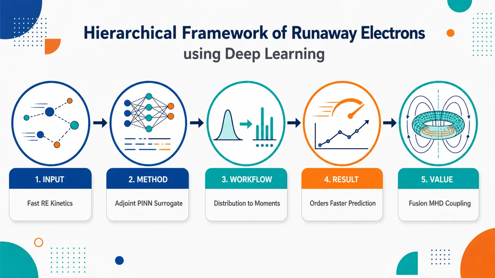
研究问题如何在磁约束聚变中快速、物理可信地预测逃逸电子的密度、电流、平均能量和能量分布，并能与 MHD 模型耦合；核心矛盾是第一性原理 Fokker–Planck 动理学求解太慢，而流体约化模型又丢失能量谱和俯仰角分布等关键细节。创新方法提出“伴随 Fokker–Planck 方程 + 数据自由 PINN”的层级框架：把未来目标量写成反向传播的伴随响应函数，通过不同终端条件构造逃逸概率函数 RPF、电流概率函数 CPF、能量概率函数 EPF；再用 PINN 学习跨平行电场、有效电荷数、同步辐射强度和逃逸阈值的参数化伴随解。Aha 点是：不再正向演化完整高维电子分布，而是一次训练目标量的反向灵敏度，任意初始分布只需积分即可得到输出；能量谱还可由累积逃逸密度对阈值动量的自动微分直接恢复。工作流程输入初始电子动量-俯仰角分布，以及等离子体参数 E∥、Zeff、α、时间 τ，能量谱任务额外输入逃逸阈值 pRE；构建相对论 Fokker–Planck 伴随 PDE，设置对应目标量的终端条件和高能边界条件；PINN 以 p、ξ、τ 和参数为坐标，通过 PDE 残差、终端条件、边界条件和 physics layer 进行无标签训练；在线推断得到 RPF/CPF/EPF；最后与任意初始分布积分，输出逃逸电子密度、电流、平均能量，并通过对 pRE 求导生成能量分布。关键结果PINN 代理模型能够恢复逃逸电子电流、平均能量和能量分布的时间演化，并与传统逃逸电子求解器在广泛场景中保持良好一致；神经网络推断使逃逸电子动理学预测相对传统完整求解加速多个数量级；同时验证了一个参数化模型可覆盖多组 E∥、Zeff、α 条件，并可用 pRE 阈值导数重建能量谱。应用价值为聚变装置中的逃逸电子预测提供快速、可耦合、保留动理学信息的代理模型：电流输出可直接服务 MHD 方程闭合，平均能量和能量谱可支持壁面损伤评估、诊断设计和逃逸电子缓解策略；数据自由训练降低了生成大规模仿真数据集的成本，也便于未来替换更完整碰撞算符或扩展到启动、破裂等复杂托卡马克场景。第一部分：核心概览
提出一种用于逃逸电子（runaway electrons, RE）动力学预测的伴随深度学习层级框架：通过伴随形式的相对论 Fokker–Planck 方程，将任意初始电子分布映射到 RE 密度、电流、平均能量与能量分布等目标量；再用物理信息神经网络（PINN）学习跨 (E|)、(Zₑff)、(α)、(pRE) 等等离子体参数的参数化伴随解。核心地位在于把传统上需要完整动量空间分布演化的高成本动力学问题，转化为一次离线训练、快速在线推断的代理模型问题，并强调无需训练数据、仅用 PDE 约束即可构建可推广的 RE 动力学 surrogate。
---
第二部分：结构化快速回顾
《Hierarchical Framework of Runaway Electrons using Deep Learning》（None，）
背景
磁约束聚变装置中的逃逸电子形成与演化难以与 MHD 模型高效耦合。第一性原理动理学模型精度高但计算昂贵；流体约化模型易耦合但丢失 RE 的能量分布与俯仰角分布信息，降低物理保真度。
方法
构造相对论 Fokker–Planck 方程的伴随问题，通过选择不同的终端条件与高能边界条件，分别定义 runaway probability function（RPF）、current probability function（CPF）、energy probability function（EPF）。再以 PINN 求解伴随 PDE，输入包含动量 (p)、俯仰角 (ξ)、反向时间 (τ) 与参数 (łambda=(E|,Zₑff,α))，能量分布模型额外输入 (pRE)。
结果
摘要层面给出定性结果：PINN 代理模型可恢复 RE 电流、平均能量与能量分布的时间演化，并相对传统 RE 求解器取得良好一致性；由于提供快速神经网络推断，预测速度较传统方法提升多个数量级。
讨论
伴随解的物理含义由终端条件与边界条件决定。对密度、电流和能量矩，不同的 (G(t=tfᵢₙₐₗ)) 与 (G(pₘₐₓ)) 选择对应不同物理量。能量分布可通过对 (pRE) 求导得到，避免显式演化完整分布函数。
局限
当前物理模型尚未包含托卡马克启动与破裂情景下描述 RE 所需的完整物理；能量矩在大量电子穿越高能边界时可能低估真实能量，因为穿越边界后的继续加速未被完整计入。
结论
伴随 formulation 与 PINN 结合提供了一种数据自由、参数化、快速推断的 RE 动力学预测框架，可面向 MHD 耦合所需电流，也可面向诊断和缓解所需平均能量与能量谱。
---
第三部分：逐章节冷凝解析
Abstract
- Adjoint deep learning framework for RE moments and energy distribution
核心贡献是提出一个同时描述 RE 流体矩与能量分布演化的伴随深度学习框架。摘要直接给出范围：*"We present an adjoint deep learning framework describing the evolution of fluid moments and the energy distribution of the runaway electron (RE) population."* 这里的 fluid moments 不仅包括密度，也扩展到电流、平均能量等由分布函数加权积分得到的宏观量。
- Arbitrary initial electron distributions
伴随 formulation 的关键优势是一次求解后可处理任意初始分布，而不是每个初始条件都重新做 forward kinetic solve。对应表述为：*"a careful formulation of the adjoint problem allows for the temporal evolution of these quantities for arbitrary initial electron distributions"*。这使框架特别适合 RE 形成场景中初始 seed 分布变化大的问题。
- PINN surrogate over broad plasma parameters
PINN 被用于学习跨参数空间的代理模型，而非单点求解。摘要中明确：*"in combination with a physics-informed neural network (PINN), we show that the resulting surrogates can resolve a broad range of plasma parameters."* 参数包括后文给出的 (E|)、(Zₑff)、(α)，能量分布任务还包括 (pRE)。
- Orders-of-magnitude acceleration
伴随方法和神经网络快速推断共同实现相对传统 RE 动理学求解的速度优势：*"This combination of the adjoint formulation and rapid inference of neural networks enables orders of magnitude faster predictions of RE kinetics than traditional methods."* 虽然所给内容未提供具体倍数，但“orders of magnitude”表示至少十倍级、通常可达百倍或千倍级的加速。
- Three PINNs for current, average energy, and energy distribution
研究设计了三个不同 PINN，用于恢复不同 RE 目标量：*"the design of three PINNs which recover the temporal evolution of the RE current, average energy and energy distribution."* 这说明模型不是单一通用输出，而是针对不同物理矩采用定制架构或条件设计。
- Validation against traditional RE solver
验证对象是传统 RE 求解器，结果为跨场景良好一致：*"Predictions are validated against a traditional RE solver, with good agreement across a broad range of scenarios."* 所给内容未包含具体误差、样本量或统计显著性，因此不能补造数值。
---
I Introduction
- RE-MHD coupling is computationally difficult
RE 形成与演化在磁化聚变装置中本身复杂，尤其与 magnetohydrodynamic（MHD） 模型耦合时构成重大挑战：*"The description of runaway electron (RE) formation and evolution in magnetized fusion devices poses a substantial scientific challenge, particularly when coupling their dynamics with magnetohydrodynamic (MHD) models"*。问题核心在于 RE 是强非热、强各向异性、高能粒子群，而 MHD 描述的是背景等离子体宏观演化，尺度和变量天然不匹配。
- First-principles kinetic models are accurate but expensive
第一性原理动理学模型已有，例如 Harvey et al.、Nilsson et al.、McDevitt et al.、Hoppe et al.、Beidler et al. 等工作，但计算成本限制多物理耦合：*"While first-principles kinetic RE models are available ... such models are computationally intensive, thus sharply limiting their application for multi-physics coupling."* 这奠定了 surrogate model 的必要性。
- Reduced fluid models lose critical distribution information
流体约化模型更易与背景等离子体演化耦合，但牺牲了 RE 的高维分布结构：*"these models discard crucial information regarding the energy and pitch-angle distribution of REs, reducing the physics fidelity of the resulting integrated model."* 这里的损失不是细节层面的，而是直接影响壁面损伤评估、同步辐射损失、雪崩增长和电流闭合等关键物理。
- Goal: predict arbitrary RE moments and energy distribution for any initial condition
目标是同时解决传统 kinetic 太慢和 fluid 太粗的问题：*"The present work aims to address these limitations by employing an adjoint deep learning framework that can directly predict the evolution of arbitrary RE moments and the RE energy distribution for any initial condition."* “arbitrary RE moments”意味着只要能写成分布函数的加权积分，就可通过适当的伴随终端条件定义目标量。
- Higher-order moments normally require full distribution evolution
高阶矩通常无法只靠少数流体变量得到，需要完整分布函数：*"Prediction of higher-order moments typically requires evolving the full distribution either through a continuum solver for the relativistic Fokker-Planck equation or a particle-based RE solver."* 这说明高阶矩的计算瓶颈来自 (fRE(p,ξ,t)) 的高维演化。
- Continuum and particle approaches have complementary costs
连续 Fokker–Planck 求解器必须解析强各向异性与宽能量范围，粒子方法需要大量 marker particles。原文分别指出：*"continuum solvers are often computationally intensive"*；*"Particle-based approaches require the evolution of a large number of marker particles, resulting in substantial computational expense."* RE 分布在动量空间中沿平行动量方向高度拉长，导致网格或粒子采样都昂贵。
- Adjoint methods turn one solve into many initial-condition evaluations
伴随方法的关键效率来自：一个伴随解可用于任意初始动量分布的密度矩演化：*"a single adjoint solution enables the density moment of the RE population to be evolved beginning from an arbitrary initial momentum space distribution"*。进一步，*"the RE density may be inferred at any time over which the solution to the adjoint equation is available"*，因此不同初始条件不需要多次 forward Fokker–Planck solve。
- Deep learning makes adjoint methods practical as surrogates
深度学习用于把伴随方法从单一参数求解扩展到参数化代理模型：*"Deep learning methods offer an avenue through which adjoint methods can be used to develop practical surrogates of RE evolution."* 一个模型可覆盖广泛等离子体条件，训练成本离线支付，在线推断高效：*"a single deep learning model can be trained across a broad range of plasma conditions, resulting in a large one-time offline training cost, but an efficient online surrogate."*
- PINN is used in data-free mode
框架采用 physics-informed neural network 求解相对论 Fokker–Planck 方程的伴随问题：*"utilize a physics-informed neural network (PINN) ... to provide a parametric solution of the adjoint to the relativistic Fokker-Planck equation."* 尤其重要的是训练不依赖仿真数据：*"we will consider the data-free limit, with data only used to validate predictions of the model."* 这避免了先生成大规模 kinetic 数据集的成本。
- Data-free PINNs enable rapid adaptation to altered physics
数据自由训练的物理优势是可替换碰撞系数或物理系统而无需重建数据集：*"Such a limit enables PINNs to be quickly adapted to different physical systems, containing distinct collisional coefficients for example, without the need to generate large quantities of simulation or experimental data."*
- Model targets are MHD-relevant current and mitigation-relevant energy
目标量不仅是 RE 电流，还包括平均能量。原文强调：*"predicting the RE current, the quantity that directly couples to the MHD evolution"*，以及 *"the average energy of the RE distribution that are critical for diagnosing and mitigating RE populations in tokamak devices."* 电流决定宏观磁流体反馈，平均能量关联壁面损伤与缓解策略。
- Physics scope is incomplete but extensible
当前并未包含启动和破裂情景下完整 RE 物理：*"the present study does not contain the complete set of physics necessary to describe REs under the complex conditions that emerge during startup and disruption scenarios in tokamak devices"*。同时预期可推广至更完整碰撞算符和更广物理参数：*"the present results can be straightforwardly generalized to a more comprehensive collision operator and treat a broader range of physics parameters"*。
- Paper structure and code availability
章节安排清晰：Sec. II 给伴随 formulation，Sec. III 给 PINN，Sec. IV 给 RE 矩预测，Sec. V 给能量分布，Sec. VI 讨论与结论。原文说明：*"Section II describes an adjoint formulation for predicting moments of the RE distribution function together with the energy distribution."* 代码计划开放：*"Upon acceptance of this manuscript, the version of the PINN and validation scripts used in this manuscript are available on github.com/cmcdevitt2/RunAwayPINNs."*
---
II Predicting Runaway Electron Moments through the Relativistic Fokker-Planck Equation
II.1 Relativistic Fokker-Planck Equation
- Moments are weighted integrals of the RE distribution
任意 RE 矩定义为分布函数的加权积分：
[
M(t)=int d³p,g(p,ξ)fRE(p,ξ,t),
]
其中 (d³p=2π p²dpdξ)。原文写明：*"a given moment (M(t)) of the RE distribution can be written: (M(t)=int d³pg(p,ξ)fRE(p,ξ,t))"*，且密度对应 (g(p,ξ)=1)：*"[ (g(p,ξ)=1) for density, for example]"*。
- Adjoint strategy avoids reconstructing the full distribution
该节的目标是证明无需完整知道 (fRE) 也能评价任意矩：*"This section will demonstrate that the adjoint formulation can evaluate any moment of the runaway distribution without knowledge of the full distribution (fRE)."* 这正是 RE surrogate 的数学基础。
- Green’s function propagates arbitrary initial conditions
通过 Green’s function (F(mathbf p,t;mathbf p₀,t₀₎)，任意初始分布可传播为：
[
fRE(mathbf p,t)=int d³p₀ fᵢₙᵢₜ(mathbf p₀,t₀₎F(mathbf p,t;mathbf p₀,t₀₎.
]
原文为：*"the Green’s function (F(p,t;mathbfp₀,t₀)) allows the runaway distribution to be propagated from a given initial condition"*。
- Direct Green’s-function moment evaluation is expensive
将 Green’s function 代入矩定义得到双重积分：
[
M(t)=int d³p₀ fᵢₙᵢₜ(mathbf p₀,t₀₎ᵢₙₜ d³p,g(p,ξ)F(mathbf p,t;mathbf p₀,t₀₎.
]
难点是 Green’s function 同时依赖当前动量 (mathbf p) 与初始动量 (mathbf p₀)：*"computing the Green’s function is challenging since it depends on both (mathbf p) and (mathbf p₀)"*，且 Eq. (3) 的双重积分增加计算负担：*"the computational burden of evaluating the double integration appearing in Eq. (3) provides a further obstacle"*。
- Relativistic Fokker–Planck operator includes electric acceleration, collisions, and synchrotron losses
Green’s function 满足：
[
fracpartial Fpartial t+L(F)=δ(mathbf p-mathbf p₀₎δ(t-t₀₎,
]
其中
[
L(F)=E(F)+C(F)+R(F).
]
原文明确：*"the Green’s function evolves due to electric field acceleration (E(F)), small-angle collisions (C(F)), and losses due to synchrotron radiation (R(F))"*。三个物理过程分别控制 RE 加速、碰撞阻滞/散射、辐射阻尼。
- Electric-field operator couples momentum and pitch angle
电场项：
[
E(F)=-frac1p²fracpartialpartial p[p²E|ξ F]
-fracpartialpartial ξłeft[frac1-ξ²pE|Fi̊ght].
]
这体现平行电场不仅改变 (p)，也改变俯仰角 (ξ)。原文称该项为：*"electric field acceleration (E(F))"*。
- Collision operator contains drag and pitch-angle scattering
碰撞项包含 collisional drag (C_F) 与 pitch-angle scattering (C_B)：
[
C_F=fracγ²p²,qquad C_B=fracγ2fracZₑff+1p.
]
原文写明：*"the coefficients for collisional drag (C_F) and pitch-angle scattering (C_B) are defined by"*，随后给出 Eq. (6)。其中 (Zₑff) 越大，俯仰角散射越强。
- Synchrotron radiation introduces energy loss and pitch evolution
辐射项：
[
R(F)=-frac1p²fracpartialpartial p[α p³γ(1-ξ²⁾F]
+fracpartialpartial ξłeft[αfracξ(1-ξ²⁾γFi̊ght].
]
(α=τ_c/τₛ) 是同步辐射强度，原文定义为：*"the radiative strength (αequivτ_c/τₛ) is defined as a ratio of the collision timescale to the synchrotron timescale"*。
- Normalization makes the equation dimensionless
动量归一化为 (pi̊ghtarrow p/(mₑc))，时间归一化为 (ti̊ghtarrow t/τ_c)，电场归一化为 (E|i̊ghtarrow E|/E_c)。原文具体给出：*"the relativistic momentum is normalized to (pi̊ghtarrow p/(mₑc))"*；*"time is normalized to the relativistic collision time (ti̊ghtarrow t/τ_c)"*；*"the parallel electric field is normalized to the Connor-Hastie electric field"*。
---
II.2 Defining the adjoint solution
- Adjoint problem accelerates quantities of interest
伴随方法用于快速评价 RE 群体的目标量：*"An efficient approach to infer quantities of interest involves formulating an adjoint problem"*。该思想与波驱动电流和 runaway probability function 传统工作相连。
- Adjoint Fokker–Planck equation has reversed operator sign structure
伴随方程为：
[
fracpartial Gpartial t-L^*(G)=0,qquad L^*(G)=E^*(G)+C^*(G)+R^*(G).
]
原文：*"The adjoint of the relativistic Fokker-Planck equation can be expressed as"* Eq. (7a–b)。这里 (G) 不是分布函数，而是对初始动量点的“未来目标量响应函数”。
- Adjoint operators arise by integration by parts
伴随算符通过分部积分得到：
[
int d³p[GL(F)-FL^*(G)]=2πint dξ[p²UₚFG]ₚₘᵢₙpₘₐₓ.
]
原文为：*"the adjoint operators are found through successive integration by parts"*。这一边界通量项对后面能量矩和高能边界误差至关重要。
- Energy-space flow (Uₚ) balances acceleration, drag, and radiation
[
Uₚ₌₋E|ξ-C_F-α pγ(1-ξ²⁾.
]
原文解释：*"the energy flow of REs, (Uₚ), is a balance between electric field acceleration, drag due to collisions and radiative losses"*。当 (Uₚ>0) 时，高能边界处存在向外流出；当 (Uₚ<0) 时，需要避免非物理流入。
- Physical meaning of (G) is set by terminal and boundary conditions
伴随解本身没有唯一物理意义，意义由终端条件与边界条件指定：*"The physical meaning of the adjoint solution (G) is determined by the choice of the terminal condition (G(mathbf p,t=tfᵢₙₐₗ)) and the upper and lower energy boundary conditions."*
- Runaway probability function uses a Heaviside terminal condition
经典例子是定义 (p>pRE) 的电子为 runaway，并取：
[
G(mathbf p,tfᵢₙₐₗ)=Θ(p-pRE).
]
原文：*"electrons above a threshold energy (pRE) are considered to be runaways"*，并给出 *"(G(mathbf p,tfᵢₙₐₗ)=Θ(p-pRE))"*。
- Lower boundary represents electrons that thermalize or decelerate
低能边界 (pₘᵢₙ) 设得足够低，使到达该边界的电子会继续被碰撞减速而不成为 runaway，因此：
[
G(pₘᵢₙ,ξ,t)=0.
]
原文：*"electrons reaching (pₘᵢₙ) will further decelerate via collisions and therefore not be runaways so we require (G(pₘᵢₙ,ξ,t)=0)"*。
- Upper boundary separates outflowing runaways from forbidden inflow
为避免高能边界非物理流入，要求 (F) 在 (pₘₐₓ)、(Uₚ<0) 时消失；为捕获穿越 (pₘₐₓ) 的 runaway，要求 (G(pₘₐₓ,t)=1) when (Uₚ>0)。原文：*"To ensure that no inflow of electrons through the upper momentum boundary is present we will require (F) to vanish at (pₘₐₓ) when (Uₚ<0)"*；*"to capture runaways which accelerate through (pₘₐₓ) we require (G(pₘₐₓ,t)=1) when (Uₚ>0)"*。
- RPF counts both electrons above threshold and high-boundary losses
Eq. (13) 表示：
[
P=intₚ>pREd³pF+high-energy boundary flux.
]
原文解释第一项和第二项分别为：*"the probability that a particle remains in the energy domain, but with an energy (p>pRE)"*；*"or that it was lost to the high energy boundary"*。
- RPF interpretation is probability of runaway by final time
如果 (pRE) 是 runaway 阈值，则 (P(mathbf p₀,t₀;tfᵢₙₐₗ)) 是初始动量 (mathbf p₀) 的电子到 (tfᵢₙₐₗ) 之前 runaway 的概率：*"the probability of an electron with an initial momentum (mathbf p₀), born at time (t₀), running away by time (tfᵢₙₐₗ), hence its designation as a runaway probability function"*。
---
II.3 The adjoint solution for runaway moments
- Eq. (16) is the central identity linking adjoint solutions to physical moments
将 Eq. (12) 乘以初始分布并对 (mathbf p₀) 积分后，得到 Eq. (16)。原文明确称：*"Equation (16) provides the key result for defining the physical meaning of distinct adjoint problems."* 它把左侧的初始分布加权伴随解，转化为终端分布矩与高能边界通量矩之和。
- Terminal condition selects the moment being tracked
Eq. (16) 第一项是终端条件 (G(mathbf p,tfᵢₙₐₗ)) 关于终端电子分布 (fₑ₍mathbf p,tfᵢₙₐₗ)) 的矩：*"the first term on the RHS is simply the moment of the terminal condition (G(mathbf p,tfᵢₙₐₗ)) over the electron distribution function at (tfᵢₙₐₗ)."* 因此只要选择不同的 (G)，即可追踪不同物理矩。
- Boundary condition tracks losses of the same moment through (pₘₐₓ)
Eq. (16) 第二项是高能边界上的时间积分动量空间通量：*"The second term is related to the time integrated momentum space flux of the quantity (G(pₘₐₓ,ξ,t)) through the upper energy boundary."* 如果边界条件与目标矩一致，该项就记录穿越高能边界的目标量损失。
- Adjoint problem evolves backward in time
伴随问题通过选择终端和边界条件，从 (tfᵢₙₐₗ) 反向积分到 (t₀)：*"An adjoint problem can thus be established by selecting a set of terminal and boundary conditions, and then integrating backward from (tfᵢₙₐₗ) to (t₀)"*。反向时间变量后文定义为 (τ=tfᵢₙₐₗ-t₀)。
- Density moment recovers RE number density
对 RPF 条件 (G(mathbf p,tfᵢₙₐₗ)=Θ(p-pRE))、(G(pₘₐₓ,ξ,t)=1)，Eq. (17) 的右侧第一项为 (tfᵢₙₐₗ) 时 (p>pRE) 的电子数，第二项为穿越高能边界电子通量。原文：*"the first term on the RHS is the number of electrons with (p>pRE) at (tfᵢₙₐₗ) and the second term is the time integrated flux of electrons through the high energy boundary."* 因此：
[
nRE(tfᵢₙₐₗ)=int d³p₀ fᵢₙᵢₜ(mathbf p₀₎P(mathbf p₀,τ).
]
- Current probability function uses (-vξΘ(p-pRE))
对 RE 平行电流，取终端条件：
[
G(t=tfᵢₙₐₗ)=-vξΘ(p-pRE),qquad v=p/γ.
]
高能边界条件为 (G(pₘₐₓ,Uₚ>0)=-vξ)。原文：*"we take the terminal condition (G(t=tfᵢₙₐₗ)=-vξΘ(p-pRE)) and the high energy boundary condition to be (G(pₘₐₓ,Uₚ>0)=-vξ)"*。负号来自电子电荷：*"the negative sign is due to the electron charge."*
- CPF directly estimates RE current for large enough (pₘₐₓ)
若高能边界项可忽略，则：
[
jRE(tfᵢₙₐₗ)=ecint d³p₀ fᵢₙᵢₜ(mathbf p₀₎C(mathbf p₀,τ).
]
原文强调该伴随问题可直接推断 MHD 所需电流：*"provides a direct means of inferring the RE current, a quantity of immediate interest for closing the MHD equations."*
- High-energy boundary has subtle consequences for current and higher moments
穿越 (pₘₐₓ) 的电子会继续加速，并且俯仰角进一步塌缩到 (ξ=-1)：*"electrons that exit through the high energy boundary (pₘₐₓ) will continue to be accelerated and have their pitch further collapsed to the (ξ=-1) boundary"*。对电流影响较小，因为速度受 (c) 限制：*"for the RE parallel current moment this will be a modest effect, since the electrons cannot move faster than the speed of light"*；但对高阶矩更重要：*"for higher order moments this boundary term will become increasingly more relevant."*
- Energy probability function uses kinetic energy terminal condition
对平均相对论动能，取：
[
G(t=tfᵢₙₐₗ)=mₑc²⁽γ-1)Θ(p-pRE),
]
高能边界为：
[
G(pₘₐₓ,Uₚ>0)=mₑc²⁽γ-1).
]
原文：*"Considering the average relativistic kinetic energy moment of runaways ... we take the terminal condition to be (G(t=tfᵢₙₐₗ)=mₑc²⁽γ-1)Θ(p-pRE))"*。电子静能为 0.511 MeV：*"the rest mass energy of an electron equivalent to (0.511) MeV"*。
- EPF can underestimate energy when many REs exit the domain
Eq. (21) 的高能边界项假设穿越边界后的 RE 能量固定在边界值：*"REs which pass through the high energy boundary are assumed to be fixed in energy at the boundary."* 因此当大量 RE 离开计算域时，能量被低估：*"for plasma parameters in which a significant amount of REs can exit the domain the adjoint method will underestimate the energy due to the range of the adjoint solution maximized at the high energy boundary."*
---
II.4 The Runaway Energy Distribution
- PINNs enable energy distribution inference with modest extra cost
使用 PINN 求伴随问题的独特优势是可低成本获得 RE 能量分布：*"A unique feature of using PINNs to solve the adjoint problems defined above is that it enables inference of the energy distribution of REs with only modest added computational cost."*
- Cumulative density above (pRE) is obtained by integrating RPF over initial distribution
[
nRE(pRE,t)=int P(p₀,ξ₀,pRE,τ)fᵢₙᵢₜ(p₀,ξ₀₎d³p₀.
]
这表示阈值 (pRE) 以上 runaway 的累积分布。原文：*"the number of REs with energies greater than (pRE) is given by"* Eq. (23)。
- Energy-bin population is a threshold difference
能量位于 ([pRE,pRE+Δ pRE]) 的电子数为：
[
Δ nRE=nRE(pRE)-nRE(pRE+Δ pRE).
]
原文：*"The number of electrons with energies between (pRE) and (pRE+Δ pRE) ... is then given by"* Eq. (24)。
- Parametric PINN treats (pRE) as an input
与其为每个阈值训练一个模型，不如训练一个以 (pRE) 为输入的 PINN：*"we can train a single PINN to solve the adjoint problem for runaway density as a function of (pRE)."* 这样一个模型既能预测密度，也能预测任意能量区间电子数：*"Such a PINN then provides a means of not just predicting runaway density, but the number of runaways in any energy interval."*
- Inference cost scales with desired energy bins
能量谱推断的在线成本随能量 bin 数量增长：*"inference cost scaling with the desired number of energy bins."* 由于每次 forward prediction 很快，整体仍高效：*"As each forward prediction is rapid, this provides a highly efficient means of predicting the runaway energy distribution once the parametric PINN has been trained."*
- Energy distribution equals negative derivative of cumulative RE density
取 (Δ pRE→0)，得到：
[
fRE(pRE)=-frac12π pRE²fracpartial nRE(pRE)partial pRE.
]
原文：*"we have taken (Δ pRE→ 0) and noted the definition of a derivative in the final equality."* 分母 (2π pRE²Δ pRE) 来自动量空间体积元。
- Automatic differentiation supplies (partial P/partial pRE)
将 Eq. (23) 代入得到：
[
fRE(pRE,t)=
-frac12π pRE²
int fₑⁱⁿⁱt(p₀,ξ₀₎
fracpartial P(p₀,ξ₀,τ,pRE)partial pREd³p₀.
]
原文强调：*"the derivative of the RPF is computed by automatic differentiation, with (pRE) now being an input to the neural network."*
- High-energy boundary term vanishes for the energy distribution derivative
对 (pRE) 求导后，高能边界项不出现：*"An additional advantage of this approach is that the high energy boundary terms appearing in Eq. (13) are not present."* 原因是边界通量项不依赖 (pRE)，而 Heaviside 终端条件导数变为 Dirac delta：*"the high energy boundary term vanishes and the Heaviside function in the terminal condition converts to a Dirac-delta term."*
- Energy distribution derivative is equivalent to pitch-angle-averaged Green’s function
在该极限下，能量积分简化，结果等价于俯仰角平均的 Green’s function：*"Taking this limit simplifies the energy integral so that Eq. (26) is equivalent to a pitch-angle-averaged Green’s function."* 这是一条重要物理解释：用伴随阈值灵敏度恢复谱密度。
- Same high-energy boundary treatment supports both density and spectrum
虽然能量谱导数中边界项消失，训练时的高能边界条件仍应保持一致：*"The treatment of the high-energy boundary condition should not change, however, so that a single model can predict both the density moment for a fixed value of (pRE) and the energy distribution across variable (pRE)."*
---
III Physics-Informed Neural Networks
- PINNs extend the adjoint framework across parameter space
PINN 的作用是提高伴随框架的泛化能力，使其覆盖广泛等离子体参数：*"extend the generalizability of the adjoint framework by utilizing a PINN to capture moments and the energy distribution of runaways"*。参数包括：*"electric field strength (E|), effective charge state (Zₑff), synchrotron strength (α)"*，能量分布还包括 (pRE)。
- Once trained, inference is nearly instantaneous
训练完成后，可快速预测含全动理学物理的 RE 量：*"Once trained, the resulting framework will allow for nearly instantaneous projections of the discussed RE quantities incorporating fully kinetic physics."* 这里“fully kinetic physics”指代理模型满足伴随 Fokker–Planck 动理学 PDE，而非经验拟合流体闭合。
---
III.1 Physics-Constrained Deep Learning
- PINNs use physical constraints to regularize training
核心策略是用 PDE 等物理约束正则化神经网络训练：*"the underlying strategy is to use physical constraints (primarily PDEs) to regularize the training of a neural network."* 这与纯数据回归不同，损失函数直接惩罚方程残差。
- Physics constraints reduce overfitting and may improve extrapolation
物理约束不仅避免过拟合，还可能提升对未见参数区间的泛化：*"Such an approach not only provides a natural means of avoiding overfitting, thus providing a more robust interpolative tool, but also opens up the possibility of greater generalizability to unseen parameter regimes."*
- PINN loss includes PDE residual, terminal condition, and boundary condition
损失函数为：
[
Loss=
frac1NPDEsumᵢmathcal R²
+frac1NICsumᵢ[Gᵢ₋G(τᵢ₌₀₎]²
+frac1NBCsumᵢ[Gᵢ₋G]².
]
原文解释：*"the first term on the RHS represents points inside the domain minimizing the residual of the adjoint PDE in Eq. (7a), and (Gᵢ) represents data points enforcing initial and boundary conditions."* 这里所谓 (Gᵢ) 不是观测数据，而是终端/边界条件给出的约束值。
- Reverse-time variable turns terminal condition into (τ=0) condition
伴随框架采用反向时间：*"our adjoint framework works in reverse time where the initial condition is changed to a terminal condition at (tfᵢₙₐₗ)"*。因此使用：
[
τ=tfᵢₙₐₗ-t.
]
原文：*"we use the temporal variable (τ=tfᵢₙₐₗ-t)"*。
- Parameter vector differs between moment models and energy-spectrum model
对普通矩模型：
[
łambda=(E|,Zₑff,α).
]
对能量分布模型：
[
łambda=(E|,Zₑff,α,pRE).
]
原文明确：*"The quantity (bmłambda) represents plasma parameters which will be taken to be (bmłambda=(E|,Zₑff,α)), or (bmłambda=(E|,Zₑff,α,pRE)) in Sec. V"*。
- Training is data-free
模型训练不使用仿真或实验标签，只使用物理约束：*"the model is trained in the absence of data and thus relies solely on physics constraints."* 数据仅在摘要中被用于验证，而非训练。
- Additional constraints prevent unphysical predictions
除基本 PDE/边界/终端损失外，还加入额外约束防止输出超出合理范围：*"Additional constraints will be added ... to enhance the training of the model and prevent predictions beyond the expected range."* 其效果是限制优化器搜索空间，提高收敛鲁棒性：*"severely restricting the solutions that the optimizer searches across, leading to more robust convergence of the PINN."*
---
III.2 Physics Layers
- Physics layer imposes hard constraints on neural-network output
为提高准确性和鲁棒性，在隐藏层输出后加入 physics layer：*"we implement several properties of the solution as hard constraints via the addition of a ‘physics layer’ to the neural network."* 它将网络原始输出变换到物理允许范围，并自动满足低动量边界条件。
- Output transform enforces (G(pₘᵢₙ)=0)
所有伴随问题采用：
[
G(p,ξ,τ;łambda)=
tanhłeft[
łeft(fracp-pₘᵢₙpₘₐₓ-pₘᵢₙi̊ght)GNNⁿ
i̊ght].
]
原文说明：*"The output transform here is designed to automatically satisfy the lower momentum boundary condition in which (G(p=pₘᵢₙ)=0)."* 因为 (p=pₘᵢₙ) 时 tanh 输入为 0。
- Exponent (n) controls output range
(n=1) 时输出可为负到正，适合电流等带符号量；(n=2) 时输出非负，适合概率量。原文：*"n is designed to be either (n=1) to constrain the solution between negative one and one, or (n=2) to constrain the solution between zero and one."*
- Terminal Heaviside condition is smoothed by a tanh transition
终端条件通过损失项施加：
[
G(τ=0)=g(p,ξ)frac12łeft[1-tanhłeft(Nfracp-pREpₘₐₓ-pₘᵢₙi̊ght)i̊ght].
]
原文：*"The terminal condition is enforced through loss terms where points are sampled on the terminal condition boundary"*。参数 (N) 控制阈值跃迁锐度：*"Here, (N) controls how sharp the transition is; it is taken to be large ((N>>1)) and tuned for each physical quantity."*
- High-energy boundary is enforced softly due to narrow outflow region
高能边界没有作为硬约束，而是在损失函数中软约束：*"We choose to enforce the high energy boundary condition as a soft constraint in the loss function due to the narrow width of the region of interest for particles flowing through the high energy boundary."* 对该窄区域，直接在正流出边界采样：*"We treat this narrow region by sampling points directly on the positive boundary discussed in Eq. (9)."*
- Input feature augmentation improves convergence
在输入和隐藏层之间添加额外坐标 (g(p,ξ))：
[
[p,ξ,τ,łambda]i̊ghtarrow[p,ξ,τ,łambda,g(p,ξ)].
]
原文：*"An additional layer is added before the hidden layers and after the inputs such that an additional coordinate (g(p,ξ)) is added to improve the network convergence."* 这里 (g(p,ξ)) 是对应矩的权重函数，例如密度、电流或能量矩的加权因子。
---
第四部分：深度理解与语言支持
1. 术语解析
- Adjoint formulation / adjoint problem（伴随形式 / 伴随问题）
在常规 forward Fokker–Planck 问题中，从初始分布 (fᵢₙᵢₜ) 出发演化到未来 (f(t))。伴随问题反过来，从目标量的终端条件 (G(tfᵢₙₐₗ)) 出发向过去传播，得到每个初始动量点对目标量的贡献。语义重点不是“反向模拟粒子”，而是“反向传播目标泛函的灵敏度”。
- Runaway probability function, RPF（逃逸概率函数）
(P(mathbf p₀,τ)) 表示初始动量为 (mathbf p₀) 的电子在时间 (τ) 后成为 runaway 的概率。这里 probability 不是统计机器学习意义上的模型置信度，而是 Green’s function 传播下粒子进入 runaway 区域或穿越高能边界的物理概率。
- Terminal condition（终端条件）
与初值问题中的 initial condition 不同，伴随方程从 (tfᵢₙₐₗ) 指定条件。终端条件决定 (G) 代表什么物理量：(Θ(p-pRE)) 对应密度，(-vξΘ(p-pRE)) 对应电流，(mₑc²⁽γ-1)Θ(p-pRE)) 对应能量。
- Physics-informed neural network, PINN（物理信息神经网络）
PINN 不是用大量标签数据拟合输入输出，而是让神经网络输出满足 PDE、边界条件和终端条件。这里尤其是 data-free PINN，即训练阶段不使用传统 RE 求解器生成的标签数据。
- High-energy boundary term（高能边界项）
动量域被截断在 (pₘₐₓ)，如果电子穿越该边界，其后续加速不再显式追踪。伴随公式中的边界项用于补偿穿越边界的通量；但对能量矩，如果穿越后能量继续增长而模型只按边界能量计入，就会低估真实能量。
2. 疑难查证
- 为什么一个伴随解可以处理任意初始分布？
Fokker–Planck 方程是线性传播算符时，任意初始分布都可看成无数初始动量点的叠加。伴随解 (G(mathbf p₀,τ)) 已经编码了“从初始点 (mathbf p₀) 出发对未来目标量的贡献”。因此只需做积分：
[
M(t)=int d³p₀ fᵢₙᵢₜ(mathbf p₀₎G(mathbf p₀,τ),
]
不必为每个 (fᵢₙᵢₜ) 重新演化完整 (fRE)。
- 为什么能量分布可以通过对 (pRE) 求导得到？
(nRE(pRE)) 是“能量大于阈值 (pRE)”的累积分布。累积分布对阈值求负导数就是局部分布密度，类似概率论中 (f(x)=-dP(X>x)/dx)。因为动量空间体积元为 (2π p²dp)，所以还要除以 (2π pRE²)。
- 为什么高能边界项对电流影响较小、对能量影响较大？
电流中的速度因子 (v=p/γ)，当 (p→infty) 时 (v→1)，不会无限增长；但动能 (mₑc²⁽γ-1)sim p,mₑc²) 在高能下继续增长。因此越多电子穿过 (pₘₐₓ)，能量矩低估越严重，而电流矩误差相对受限。
- 为什么 PINN 要加入 physics layer？
直接训练神经网络满足 PDE 和边界条件可能很难，尤其边界条件精确性差会污染整个伴随解。physics layer 把 (G(pₘᵢₙ)=0) 这类硬物理结构直接写进网络输出，使优化器无需“学习”这条规则，只需学习剩余自由度，收敛更稳定。
---
第五部分：创新评估与关联
1. 创新性判断
- 从密度 RPF 扩展到任意 RE 矩
过去 RE 伴随方法常集中于 runaway probability function 或 runaway density。这里通过系统选择终端条件与边界条件，把伴随解推广到 current probability function（CPF） 和 energy probability function（EPF），实现电流与平均能量的快速推断。创新点在于把“概率函数”推广成“目标矩响应函数”。
- 把伴随方法与 data-free PINN 参数化求解结合
传统伴随方法通常仍需针对给定参数求 PDE。该框架让 PINN 学习跨 (E|)、(Zₑff)、(α) 的参数化伴随解，并在能量分布任务中进一步把 (pRE) 作为输入。相较近年常见的 supervised surrogate，这里不需要大规模 kinetic simulation 数据集。
- 用阈值导数恢复 RE 能量分布
能量分布不是通过演化完整 (fRE) 得到，而是通过 cumulative runaway density 对 (pRE) 的导数得到：
[
fRE(pRE,t)=
-frac12π pRE²
int fᵢₙᵢₜ
fracpartial Ppartial pREd³p₀.
]
自动微分使该导数在 PINN 中自然可得。这一设计把“谱预测”转化为“阈值参数灵敏度预测”。
- 兼顾 MHD 耦合量与诊断/缓解量
现有流体模型常重视 RE 电流以闭合 MHD，但平均能量与能量谱对壁面损伤和缓解同样关键。该框架同时输出电流、平均能量与谱，填补“可耦合但物理过粗”和“物理完整但过慢”之间的空白。
- 显式识别高能边界对高阶矩的系统误差来源
论文不仅构造代理模型，还指出高能边界通量对不同矩影响不同：电流受速度上限约束，能量和高阶矩更容易低估。这种误差机制分析对未来扩展到更高能量域、自适应边界或外推边界模型很重要。
- 相对近 2–5 年工作的未解决问题定位
近年 RE-MHD 耦合、RE avalanche surrogate、约化流体模型和 kinetic solver 加速都在发展，但常见瓶颈包括：无法处理任意初始分布、缺少能量/俯仰角分布信息、训练数据生成成本高、难以同时面向多参数空间。该框架针对这些问题给出统一方案：伴随形式处理任意初始分布，PINN 处理参数化求解，阈值导数处理能量谱，physics layer 提高物理一致性。
-
17
📊 含图深析
💡 亮点：核物理先验帮助 BNN 捕捉裂变产额细结构。
📖 展开分析 + 配图
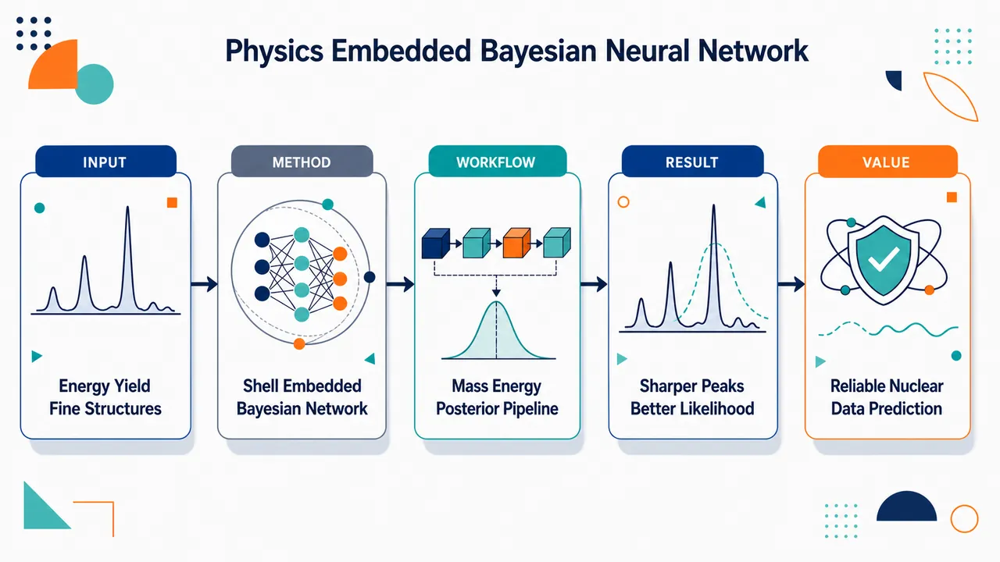
研究问题现有核数据库只在少数能点给出裂变产物产额，中间能区常靠线性插值；传统模型和普通机器学习虽能画出双峰全局轮廓，却容易抹平 A=134、138、143 等质量数附近由壳效应造成的局部峰谷。核心问题是：如何在中子入射能连续变化时，准确预测裂变产物质量产额的能量依赖和细结构，并给出可信的不确定度。创新方法提出物理嵌入贝叶斯神经网络 PE-BNN，把质量数 A、复合核信息、激发能 E、理论模型结果与一个显式壳因子一起输入网络。Aha 点是壳因子：在重碎片 A=134、140、144 及其轻碎片互补质量处放置局域高斯峰，用权重表示双幻数壳和形变壳强弱，并乘以 exp(-E/kT) 表示激发能升高时壳效应被热阻尼洗掉；再用 WAIC 选择 11-11 双隐藏层结构，使模型既有物理先验又有贝叶斯可信区间。工作流程输入裂变产物质量数 A、复合核 Zn/An、激发能 E、理论产额特征和壳因子 SF；壳因子在 A=134、140、144 与互补轻碎片质量处生成局部峰，并随 E 增大指数衰减；训练数据整合 JENDL-5、EXFOR 实验产额和理论模型数据，经异常点过滤后送入 BNN；用 NumPyro/NUTS 采样参数后验，用 WAIC 选网络规模；输出连续入射能下的瞬发中子后独立质量产额曲线，以及 ±1σ、±2σ 贝叶斯可信带。关键结果加入壳因子后，最优 11-11 网络的 log-likelihood 在训练集提升 21.3%，测试集提升 34.6%；在 5-5 到 20-20 架构中平均提升分别为 19.6% 和 29.4%。模型在 235U 的 En=1.0–5.5 MeV 实验数据上多数落入 ±1σ 或 ±2σ 可信区间；能再现 A=134 峰持续存在、A=138/143 峰随能量升高衰减、重碎片产额脊向低质量移动等细节，并与未用于训练的瞬发中子多重性规律一致。应用价值该方法为核数据评价提供比三能点线性插值更可靠的连续能量产额预测，尤其适用于低到中等入射能区的反应堆临界计算、反应堆物理分析、核取证和裂变机制研究。它把黑箱机器学习转化为带壳结构解释和贝叶斯不确定度的可扩展框架，可用于补全未测能区裂变产额数据，并为未来联合建模独立产额、累积产额和多机会裂变通道奠定基础。第一部分：核心概览 (Overview)
提出物理嵌入贝叶斯神经网络（PE-BNN），把裂变产物质量产额数据、理论模型结果与显式壳效应因子结合，用于预测中子入射能量变化下的裂变产物产额细结构。核心贡献在于：用带激发能阻尼的壳相关输入特征同时捕捉全局能量趋势与局部质量峰细节，并用 WAIC 优化网络结构。结果显示，模型在 (²³⁵)U、(²³²)Th 等体系中优于简单插值，且预测趋势与未参与训练的瞬发中子多重性规律一致，推动了核数据机器学习从经验拟合走向物理可解释预测。
---
第二部分：结构化快速回顾
《A physics-embedded Bayesian neural network for predicting the energy dependence of fission product yields with fine structures》（None，）
背景
裂变产物产额是理解核裂变机制、反应堆物理、核取证、天体核合成的重要观测量。现有核数据库通常只给出热中子、0.5 MeV、14 MeV 三个能点，工程上常用线性插值估算中间能区，但近年实验显示明显偏离。传统模型和早期机器学习方法能捕捉全局趋势，却难以稳定再现质量产额细结构及其能量依赖。
方法
构建物理嵌入贝叶斯神经网络 PE-BNN。输入包括裂变产物质量数 (A)、复合核 (Zₙ,Aₙ)、激发能 (E)，以及新增的壳因子 (SF)。壳因子由以 (A=134,140,144) 及其互补轻碎片质量为中心的高斯项组成，并乘以 (exp(-E/kT)) 阻尼项，(kT=1.5) MeV。模型采用 NUTS 采样、NumPyro 实现，并用 WAIC 选择 11-11 双隐藏层结构。
结果
加入壳因子后，最优 11-11 网络训练集 log-likelihood 提升 21.3%，测试集提升 34.6%；在 5-5 至 20-20 架构范围内，平均训练和测试提升分别为 19.6% 和 29.4%。模型能再现 (²³⁵)U 在 (Eₙ₌₁.0)–5.5 MeV 的实验产额趋势，预测值多位于 (±1σ)、(±2σ) 可信区间内。
讨论
壳因子主要改善细结构，理论计算输入主要改善全局结构。重碎片区 (A=134) 峰更稳定，(A=138,143) 峰随能量升高衰减，符合双幻数与形变壳效应层级。模型未使用瞬发中子多重性训练，却预测出与瞬发中子系统学一致的重碎片质量脊向低质量移动。
局限
训练数据混合了 JENDL-5 独立产额、实验独立产额和实验累积产额，存在概念不一致。模型主要适用于低至中等入射能区域；在高能多机会裂变占主导时，需要显式处理不同裂变通道。实验不确定度未直接进入训练，预测不确定度主要来自贝叶斯推断本身。
结论
PE-BNN 通过物理启发输入 + 贝叶斯不确定度 + WAIC 模型选择，在统一框架内改善了裂变产额能量依赖和细结构预测。该方法为核数据评价、反应堆物理和核裂变动力学可解释建模提供了可扩展路线。
---
第三部分：逐章节冷凝解析 (Section-by-Section Condensing)
Abstract
Physics-embedded Bayesian neural network as the central contribution
核心方法是物理嵌入贝叶斯神经网络（PE-BNN），用于把裂变产物产额数据与先验核物理知识融合，预测具有细结构的能量依赖产额。摘要中直接给出方法定位：*"We present a physics-embedded Bayesian neural network (PE-BNN) framework that integrates fission product yields (FPYs) with prior nuclear physics knowledge to predict energy-dependent FPY data with fine structure."* 这里的创新不只是使用 BNN，而是把可解释的核结构信息作为输入特征嵌入模型。
Shell-related input with excitation-energy damping
关键物理嵌入项是带激发能阻尼的壳相关输入特征。摘要明确指出：*"By incorporating a phenomenological shell-related input feature with an excitation-energy damping term, the PE-BNN captures both fine structures and global energy trends."* 这说明模型同时面向两类难题：局部质量峰的fine structures 与随入射能变化的global energy trends。
WAIC-based hyperparameter optimization
模型性能提升依赖两部分组合：物理输入特征和 WAIC 超参数优化。摘要给出的证据是：*"The combination of this physics-informed input with hyperparameter optimization via the Watanabe-Akaike Information Criterion (WAIC) significantly enhances predictive performance."* WAIC 在这里承担统计模型选择功能，避免任意选择网络规模。
Consistency with shell trends and prompt-neutron systematics
预测结果不仅拟合 FPY，还与独立物理观测相容。摘要强调：*"it remains consistent with known shell-related trends and independently measured prompt-neutron systematics."* 重要点在于prompt-neutron systematics 没有作为训练约束，却在预测中自然出现一致性，增强了物理可信度。
---
I Introduction
Fission remains mechanistically unresolved despite long history
核裂变发现近 90 年后，其机制仍未完全理解。引言开头指出：*"Nearly 90 years after the discovery of nuclear fission, understanding its reaction mechanisms remains a major challenge in nuclear physics."* 这奠定研究问题的基础：裂变并非缺少数据，而是缺少能同时解释全局趋势、局部结构和能量依赖的统一机制描述。
Fission yields are central observables for physics and applications
裂变产额在基础核物理和应用中均具核心地位。相关表述为：*"Among key observables, fission yields provide crucial insights into the fission process."* 应用范围包括核反应堆、反应堆中微子、超重元素合成和天体核合成；英文原文列出：*"including nuclear reactors, reactor neutrinos, superheavy element synthesis, and astrophysical nucleosynthesis."*
Neutron-induced fission yields are extensively measured but not fully solved
中子诱发裂变产额已被长期测量并纳入标准数据库。证据为：*"Neutron-induced fission yields, in particular, have been extensively measured and compiled into standard nuclear data libraries."* 以 (²³⁵)U 为例，实验积累降低了数据库差异：*"decades of experiments have led to a precise understanding of its fission yield structure, minimizing discrepancies between evaluated nuclear data libraries."* 但精确数据库并不等于模型已能预测细结构。
Existing physical and empirical models fail on isotope- and energy-dependent fine structures
传统核物理模型与经验核数据模型均不能完整再现不同同位素、不同入射能下的细结构。关键判断为：*"neither recent nuclear-physics models nor empirical nuclear-data models can fully reproduce fine structure variations across isotopes and incident neutron energies."* 这一句界定了研究空白：不是全局产额曲线，而是fine structure variations。
Machine learning since 2018 captures global trends but not fine structures
2018 年以来机器学习已用于裂变产额预测，并能捕捉全局趋势。原文为：*"Since 2018, machine learning techniques have been applied to fission yield predictions, successfully capturing global trends."* 然而细结构仍未解决：*"a systematic and predictive description of fine structures remains an open challenge."* 因此，单纯数据驱动模型不足，需要引入核物理结构先验。
Energy dependence is poorly constrained by existing libraries
当前核数据库只在三个中子能量点提供产额：热中子能量、0.5 MeV、14 MeV。具体能量写作：*"2.53 × 10−8 MeV, 0.5 MeV, and 14 MeV."* 这些能点主要服务工程需求：*"chosen for engineering needs."* 中间能区通常线性插值：*"Intermediate values are traditionally estimated by linear interpolation."*
Recent experiments show deviations from linear interpolation
近期实验显示中间能区的 FPY 能量依赖并不满足简单线性插值。原文证据为：*"recent experiments have revealed significant deviations, underscoring the need for more accurate predictive methods."* 这直接支撑模型开发的必要性，尤其针对 (Eₙ) 约 0.5–14 MeV 之间的连续能量预测。
Experimental coverage is limited by mono-energetic neutron source availability
单能中子源获取困难限制系统实验测量。原文指出：*"Limited access to mono-energetic neutron sources further restricts comprehensive experimental investigations, making robust theoretical models essential."* 因此，机器学习模型不仅是插值工具，也是在实验不可及条件下补全核数据的候选方法。
Previous BNN work used weighted training to improve fine-structure learning
已有 BNN 研究表明，加权训练或数据增强可改善细结构捕捉能力。直接表述为：*"Our previous study demonstrated that data augmentation through weighted training improves the ability of BNNs to capture fine structure details."* 当前工作在此基础上进一步引入物理特征，而不是只依赖样本权重。
Hybrid modeling incorporates multiple theoretical calculations
模型策略不仅使用实验或评价数据，还结合理论计算，包括动力学模型。引言描述为：*"we refine this approach by introducing a hybrid modeling strategy that incorporates multiple theoretical calculations, including our dynamical models, to improve predictions of global yield structures."* 这一区分了两类信息：理论模型帮助全局结构，壳因子帮助局部细结构。
Training data selected from reliable evaluated, experimental, and theoretical sources
训练数据来源跨实验、评价和理论，但标准是可靠性。原文为：*"All data used for training in the present work were selected from sources currently regarded as reliable, regardless of whether they are experimental, evaluated, or theoretical."* 这说明数据治理策略是基于可信度，而不是简单按数据类型排除。
Only well-established physical information is embedded
现有物理模型不总能充分预测所有裂变产额观测量，因此只抽取稳健物理信息用于机器学习框架。原文说明：*"we utilize only well-established physical information and adopt a machine-learning framework to improve predictions where current models remain limited."* 这体现了保守的物理嵌入策略：避免把不可靠模型整体硬编码进网络。
Novel shell factor is inspired by nuclear mass prediction
新增壳因子来自核质量预测中的思想。原文写道：*"we introduce a novel shell factor inspired by nuclear mass prediction to improve interpretability and precision."* 这里的壳因子不是直接从微观裂变动力学推导，而是现象学地表达核壳闭合与形变壳结构对产额峰的影响。
Post-neutron independent mass yields are the prediction target
细结构在瞬发中子发射后仍受壳效应和 β 衰变贡献影响。为避免显式处理 β 衰变，训练采用瞬发中子发射后的产额数据。原文为：*"To avoid the complexity of explicitly treating β-decay, evaluated, experimental, and theoretical yields after prompt neutron emission are adopted as the training data."* 预测目标明确为：*"the PE-BNN is trained to predict post-neutron independent mass yields."*
Some validation data are cumulative yields, so comparisons target trends rather than exact equality
部分验证实验来自 γ 射线谱测量的累积产额（CFY），而模型输出是独立质量产额（IFY-like mass yield）。原文提醒：*"some of the experimental datasets used for validation, however, correspond to cumulative yields measured by γ-ray spectroscopy."* 因此比较目的不是逐点相等，而是：*"to assess global energy-dependent trends and mass-dependent structures rather than strict point-by-point equality."*
Shell factor is crucial for fine structures and predictions align with prompt neutron measurements
引言提前给出核心结果：*"the shell factor is crucial for reproducing fine structure variations."* 能量依赖预测还与独立瞬发中子发射数据一致：*"our predicted energy dependence aligns well with independent experimental data and shows strong consistency with prompt neutron emission measurements."* 这种一致性构成物理有效性的强证据。
Multiple-isotope validation and cross-validation support robustness
研究通过多同位素和交叉验证增强结论稳健性。原文为：*"We further confirm the robustness and generality of our findings through validation in multiple isotopes and cross-validation techniques."* 这使模型不是只对 (²³⁵)U 过拟合。
Unified framework addresses fine structures and energy dependence
研究定位为同时解决两个长期问题：*"the reproduction of fine structures and the description of energy dependence within a unified framework."* 应用意义覆盖：*"reactor physics, nuclear forensics, and astrophysical nucleosynthesis."*
---
II Computational Methods
BNN posterior is formulated through Bayes’ theorem
模型参数 (W) 的后验由贝叶斯公式给出：
[
p(W|D)=fracp(D|W)p(W)p(D).
]
原文说明：*"the posterior over model parameters (W) given data (D) is computed using Bayes’ theorem."* 先验通常为零均值高斯：*"p(W) is the prior (often zero-mean Gaussian)."* 证据项 (p(D)) 通常不可处理：*"the denominator (p(D)) known as evidence, is typically intractable."*
Learning uses MAP objective but posterior sampling uses NUTS
训练通过最大后验估计形式表达：*"learning is performed via Maximum a Posteriori estimation."* 目标为最大化 (łog p(W|D))，等价于最大化似然项与先验项之和。后验搜索使用 No-U-Turn Sampler（NUTS）：*"The No-U-Turn Sampler (NUTS) is used to seek (hatW) from posterior distribution."* NUTS 的优势为：*"automatically adjusts the step size, preventing inefficient random walks and improving computational efficiency in Hamiltonian Monte Carlo."*
Implementation uses NumPyro
计算实现依托 NumPyro。原文为：*"We perform the NUTS computations using the NumPyro library."* 这意味着模型是在概率编程和自动微分 HMC/NUTS 框架下训练，而非普通确定性神经网络。
Prediction marginalizes over posterior uncertainty
新输入 (X') 的预测通过对参数后验积分完成：
[
p(Y'|X',D)=
int p(Y'|X',W)p(W|D)dW.
]
原文写道：*"predictions for new data (bmXprⁱme) are made by marginalizing over the posterior."* 这带来可信区间，区别于只输出点估计的神经网络。
Baseline input variables encode fragment mass, compound nucleus, and excitation energy
先前 BNN 输入为 (x=(A,Zₙ,Aₙ,E))。原文明确：*"we set the input as (bmx=(A,Zₙ,Aₙ,E)), where (A) is the mass number of the fission products, (Zₙ) and (Aₙ) are the charge and mass numbers of the compound nucleus, and (E) is the excitation energy."* 其中 (E) 定义为中子结合能与入射中子能之和：*"defined as the sum of the neutron binding energy and the incident neutron energy."*
Shell factor is the key physics-embedded input
新增输入项为壳因子 (SF)，用于表达近断裂处壳效应。原文为：*"we define a new input term, shell factor (SF) to reflect shell effects near scission."* 公式为：
[
SF=exp(-E/kT)
łeft[
W₁₍N₁₊N₄₎
+W₂₍N₂₊N₅₎
+W₃₍N₃₊N₆₎
i̊ght].
]
Shell weights encode double shell closure and deformed shell structures
壳权重设置为 (W₁₌₄)、(W₂₌₂)、(W₃₌₁)。原文给出：*"we assign the parameters as follows: (W₁₌₄), (W₂₌₂), and (W₃₌₁)."* 权重层级反映双壳闭合和形变壳结构影响强弱：*"Considering the influence of the shell effects, including double shell closure and deformed shell structures."* 其中双闭壳影响最大。
Boltzmann damping represents shell weakening at higher energy
(exp(-E/kT)) 表示激发能升高时壳效应衰减。原文解释：*"The (exp(-E/kT)) represents the Boltzmann factor where (k) and (T) denote the Boltzmann constant and temperature, implying that higher incident neutron energies lead to a reduction in shell effects."* 这是能量依赖的物理核心。
Heavy-fragment Gaussian centers are A = 134, 140, and 144
高斯项 (N₁,N₂,N₃) 分别以 (A=134,140,144) 为中心。原文为：*"follow Gaussian distributions centered on (A=134), 140, and 144."* 其中 (A=134) 关联双壳闭合：*"where (A=134) is associated with the double shell closure."* (A=140,144) 对应形变壳结构：*"A=140 and 144 correspond to deformed shell structures."*
Light-fragment mirror terms enforce mass-complement correlations
轻碎片侧通过互补质量构造镜像项：(N₄₍A;μ=Aₙ₋₁₃₄₎)、(N₅₍A;μ=Aₙ₋₁₄₀₎)、(N₆₍A;μ=Aₙ₋₁₄₄₎)。原文说明：*"mirror these features on the light fragment side."* 这使重碎片壳结构可通过质量守恒耦合影响轻碎片产额细结构。
Gaussian width is fixed at σ = 1
全部六个高斯壳项的标准差均设为 1。原文为：*"the standard deviation (σ) is set to 1 for all Gaussians (N₁,N₂,łdots,N₆)."* 这使壳因子成为非常局域的质量数特征，专门捕捉细结构峰。
Damping scale kT = 1.5 MeV is physically motivated
阻尼尺度设定为 (kT=1.5) MeV。原文为：*"The effective damping scale is set to (kT=1.5) MeV."* 依据包括费米气体关系：*"guided by the Fermi-gas relation (kT=sqrtEᵢₙₜ/a)."* 也由多维 Langevin 动力学模拟支持：*"multidimensional Langevin dynamical simulations, which predict a characteristic scission temperature of roughly 1.5 MeV for actinide low-energy fission."*
Training data include JENDL-5, EXFOR, and theoretical models
训练集包含三类数据：JENDL-5、EXFOR 实验数据、理论模型。具体数量为：*"80% JENDL-5 (6554 data points), experimental FPY data from EXFOR ... (989 data points), and theoretical models ... (2062 data points)."* 总训练数据量为 6554 + 989 + 2062 = 9605 个数据点，并采用优先权重：*"combined with prioritized weighting."*
Multi-chance fission effects are implicitly included
训练数据本身包含多机会裂变影响，因此预测也隐式包含这些贡献。原文为：*"As those training data inherently include multi-chance fission effects, the predictions also incorporate these contributions implicitly."* 这意味着模型未显式分解一阶、二阶、三阶裂变通道。
CFY/IFY discrepancies are treated as smaller than ML prediction errors
EXFOR 中多数实验数据为累积产额 CFY，少量为独立产额 IFY。原文为：*"the experimental data from EXFOR primarily consist of cumulative fission yields (CFY) and a limited set of independent fission yields (IFY)."* 研究假设 CFY/IFY 与总质量产额的差异较小：*"the quantitative discrepancies between CFY/IFY and the total mass yield are marginal."* 且小于模型内在误差：*"significantly smaller than the intrinsic prediction errors of the machine learning model."*
Outlier filtering uses a 2σ criterion
预处理中过滤与库值偏差过大的点。原文给出标准：*"points differing from the library value by more than (2σ), were manually filtered during the preprocessing stage."* 这一操作降低混合数据源中的异常点影响。
Validation uses remaining 20% of JENDL-5
验证集采用 JENDL-5 剩余 20%。原文为：*"The remaining 20% of JENDL-5 is used for validation, as the most reliable data."* 若 80% JENDL-5 为 6554 点，则 JENDL-5 总量约为 8192–8193 点，验证约为 1638–1639 点。
Predictive uncertainty is Bayesian rather than propagated experimental uncertainty
训练数据未纳入实验不确定度。原文指出：*"the training data do not incorporate experimental uncertainties."* 因此预测不确定度并非实验误差传播，而是：*"intrinsically derived from the Bayesian inference process."* 这点对解释 (±1σ)、(±2σ) 可信区间非常重要。
WAIC balances empirical loss and functional variance
模型选择采用 Watanabe–Akaike information criterion（WAIC）。原文为：*"Model selection is based on the Watanabe–Akaike information criterion (WAIC)."* 其中 (T_N) 表示经验损失：*"T_N represents empirical loss."* (V_N) 为函数方差，用于惩罚预测方差大的复杂模型：*"the functional variance, which helps penalize the use of more parameters in BNNs with larger variance in their predictions."*
WAIC reduces computational cost relative to k-fold cross-validation
WAIC 在大样本极限下等价于 k 折交叉验证。原文为：*"WAIC is asymptotically equivalent to the k-fold cross-validation at (Ni̊ghtarrowinfty)."* 优点是可由单次模型拟合计算：*"it can be computed from a single model fit, significantly reducing computational cost for model selection."*
Optimal architecture is 11-11 double hidden layer
最终选择双隐藏层 11-11 神经元结构。原文写道：*"we optimized the BNN by selecting a double hidden-layer configuration with 11-11 neurons."* 该结构随后用于 FPY 预测并同实验对比：*"The selected BNN is then used to predict FPY data, benchmarked against experimental results."*
---
III Results and Discussion
PE-BNN reproduces both global and fine FPY structures
结果显示模型能同时再现全局结构和细结构。原文总述为：*"the proposed model successfully reproduces and predicts both the global and fine structures of FPY, a task that has long challenged conventional approaches."* 这直接对应传统模型和早期机器学习方法的核心短板。
Theoretical calculations improve global structure, shell factor improves fine structure
不同新增输入贡献不同：*"the inclusion of theoretical calculation results was primarily responsible for improvements in the global structure, whereas the shell factor exerted a distinct and exclusive influence on the fine structure."* 这是一项重要归因分析：理论模型负责全局形状，壳因子负责局部峰谷。
Figure 1 shows shell factor improves fine structures in 235U
图 1 比较有无壳因子的复现和验证结果。原文为：*"Figure 1 shows the reproduction and validation results with and without the shell factor (SF)."* 对 (²³⁵)U，加入 SF 改善轻、重峰细结构：*"Including the SF improves the reproduction of fine structures in both the heavy and light peaks for (²³⁵)U."*
Validation across isotopes shows energy-dependent disappearance of fine structures
验证体系包括 (²³²)Th + (nₜₕ)、(²⁴³)Cm + (n_f)、(²⁵¹)Cf + (nₜₕ)、(²⁴⁰)Pu + (n₁₄)。结果为：*"Validation for (²³²)Th+(nₜₕ), (²⁴³)Cm+(n_f), and (²⁵¹)Cf+(nₜₕ) reveals similar fine structures, while (²⁴⁰)Pu+(n₁₄) does not, regardless of SF inclusion."* 14 MeV 下细结构消失符合物理直觉：*"fine structures tend to disappear with increasing incident neutron energy."*
Global trend is captured with or without shell factor
无论是否加入 SF，模型均能捕捉裂变质量峰的全局演化。原文为：*"In all cases, with and without SF, both models capture the global trend."* 具体趋势是：*"as the mass number of the fissioning nucleus and the incident neutron energy increase, the heavy peak in asymmetric fission remains largely unchanged, while the light peak shifts toward the heavy peak."*
PE-BNN differs from semi-empirical GEF in interpretability and retuning
GEF 等半经验模型通过大量可调参数吸收细结构及其能量依赖。原文为：*"In GEF, fine structures and their energy dependence are effectively incorporated through a large set of adjustable parameters optimized to reproduce available experimental data."* PE-BNN 则显式编码壳信息：*"the PE-BNN framework encodes phenomenological shell information explicitly as an input feature."* 并避免逐反应系统重调：*"without relying on iterative parameter retuning for individual reaction systems."*
Shell factor significantly improves log-likelihood
用 log-likelihood 定量评估 SF 影响。最优 11-11 网络中，壳因子使训练和测试性能显著提升：*"the shell factor boosted log-likelihood by 21.3% (train) and 34.6% (test)."* 在 5-5 到 20-20 架构范围内平均提升为：*"19.6% and 29.4% on average."* 这说明改进并非特定网络规模偶然结果。
235U predictions agree with experimental data from 1.0 to 5.5 MeV
对 (²³⁵)U 中子诱发裂变，图 2 与实验数据比较。原文为：*"Figure 2 illustrates a comparison between the BNN predictions and experimental FPY data at each energy."* 结果落在可信区间内：*"the BNN predictions reside within the (±1σ) and (±2σ) uncertainty bands."* 能区为：*"incident neutron energies (Eₙ₌₁.0-5.5) MeV."*
Credible intervals correspond to 68.3% and 95.5%
(±1σ)、(±2σ) 的贝叶斯可信区间分别对应 68.3% 和 95.5%。原文直接写明：*"(±1σ) and (±2σ) uncertainty bands (corresponding to the 68.3% and 95.5% credible intervals)."* 这不是实验置信区间，而是后验预测不确定度。
Low-to-intermediate energy is the main target because shell effects are important
分析重点是低到中等入射能区，因为壳效应显著。原文为：*"The present analysis focuses on the low-to intermediate-energy region where shell effects are known to play a significant role."* 高能区多机会裂变主导，需要更显式通道处理：*"At higher incident neutron energies, where multi-chance fission dominates and shell effects are strongly damped, a more explicit treatment of individual fission channels would be required."*
Energy-dependent FPYs below 5 MeV are practically important
低于 5 MeV 的能量依赖产额对反应堆临界计算等应用重要。原文为：*"the energy-dependent fission yields below 5 MeV are of particular importance for practical applications such as reactor criticality evaluations."* 因此 1–5 MeV 区间的预测行为被重点检查。
As incident energy increases, asymmetric yields decrease and symmetric yields increase
模型预测体现经典趋势：*"as the neutron incident energy increases, the asymmetric fission product yield decreases, while the symmetric fission product yield increases."* 该趋势与 Brosa 裂变模型一致：*"consistent with the global tendency suggested by the classic Brosa’s fission model."*
Heavy-fragment peaks A = 138 and 143 damp faster than A = 134
对 (²³⁵)U 重碎片区，(A=138)、(A=143) 峰随入射能升高快速消失，而 (A=134) 持续存在。原文为：*"the peaks at (A=138) and (A=143) rapidly disappear with increasing incident neutron energy, while the peak at (A=134) persists."* 这显示壳稳定效应层级：*"This behavior suggests a hierarchy in the underlying shell stabilization effects."*
A = 134 robustness is linked to doubly magic configuration around A = 132
(A=134) 峰的稳定性归因于 (A=132)、(Z=50)、(N=82) 附近双幻数结构。原文为：*"the peak at (A=134) is strongly stabilized by the influence of the doubly magic configuration around (A=132) ((Z=50), (N=82))."* 这解释其对激发能上升更稳健：*"particularly robust against increasing excitation energy."*
A = 138 and A = 143 are deformed-shell-associated and more strongly damped
(A=138)、(A=143) 与形变壳闭合有关，能量升高后更易衰减。原文为：*"the peaks at (A=138) and (A=143), which are associated with deformed shell closures, are more strongly damped and vanish as the incident neutron energy increases."* 这体现双幻数壳效应比形变壳效应更耐激发。
Without shell factor, A = 143 remains incorrectly dominant
无 SF 时，(A=143) 相关壳效应保持主导。原文为：*"Without the SF, the shell effect associated with (A=143) remains dominant."* 这意味着模型低估其随能量阻尼：*"this structure is weakly damped with increasing incident energy."* 加入 SF 后相对重要性转向 (A=138)：*"the relative importance shifts toward the shell structure around (A=138)."*
Light-fragment fine structures emerge through coupled mass evolution
轻碎片区，无 SF 计算近似高斯，只在 (Aapprox100) 附近显示壳效应。原文为：*"calculations without the SF exhibit an almost Gaussian-like behavior, with shell effects mainly localized around (Aapprox100)."* 加入 SF 后，更宽质量范围出现能量依赖细结构：*"energy-dependent fine structures emerge over a broader mass range."* 机制是重轻碎片耦合：*"shell-driven correlations are transferred to the light-fragment side through the coupled evolution of the fission system."*
232Th shows stronger dependence on shell factor than 235U
对 (²³²)Th，SF 影响更显著。原文为：*"The influence of the SF is more pronounced than in (²³⁵)U."* 无 SF 时壳效应大幅被抑制：*"without the SF, shell effects are largely suppressed, resulting in smooth mass-yield distributions."* 有 SF 时轻、重碎片区均出现清晰细结构：*"including the SF generates clear fine structures in both the heavy- and light-fragment regions."*
Shell hierarchy emerges without explicit imposition
(A=134) 稳定、(A=138,143) 随能量衰减并非手动编码为输出行为。原文为：*"emerge naturally from the trained network, without explicitly imposing such behaviors during training."* 这说明模型学到了训练数据中的物理相关性：*"captures physically meaningful correlations embedded in the training data, rather than relying on direct interpolation of individual mass yields."*
Figure 5 links FPY energy dependence to prompt neutron multiplicity
图 5 比较 (²³⁵)U(n,f) 的 FPY 能量依赖和瞬发中子多重性。原文为：*"Figure 5 presents a direct comparison between the energy dependence of fission product yields (FPYs) and the corresponding prompt neutron multiplicities for (²³⁵)U(n,f) reactions."* 该图为解释质量依赖趋势提供物理参照：*"an important physical reference for interpreting the mass-dependent trends observed in the FPY predictions."*
Light fragments show nearly constant prompt neutron multiplicity and weak FPY energy dependence
轻碎片区 (Eₙ₌₀.5) 至 5.5 MeV，瞬发中子多重性几乎不变。原文为：*"In the light-fragment region, the prompt neutron multiplicity remains nearly constant between (Eₙ₌₀.5) and 5.5 MeV."* 因此 FPY 结构能量依赖弱、脊位置固定：*"the corresponding FPY structures exhibit weak energy dependence, and their ridge positions remain nearly fixed."*
Heavy fragments show increasing neutron multiplicity and ridge shifts to lower mass
重碎片区瞬发中子多重性随入射能显著增加。原文为：*"the heavy-fragment region shows a pronounced increase in prompt neutron multiplicity with increasing incident neutron energy."* 更强中子发射使瞬发中子后质量降低：*"resulting in a reduction of post-neutron fragment masses."* 因而 FPY 脊向低质量移动：*"the FPY ridge structures shift toward lower mass numbers as (Eₙ) increases."*
Prompt-neutron observables were not used in training
瞬发中子数据未进入 PE-BNN 训练。原文强调：*"prompt-neutron observables were not used in the training of the PE-BNN model."* 训练数据仅为 FPY 信息：*"The training dataset consisted exclusively of FPY information, without including any prompt-neutron multiplicities or neutron-emission systematics."* 因此一致性是涌现相关性：*"an emergent manifestation of physical correlations embedded in the FPY data themselves."*
Figure 6 resolves selected light and heavy mass chains
图 6 展示 (²³⁵)U 中 (A=95)–105 轻碎片区和 (A=127)–143 重碎片区的质量分辨比较。原文为：*"Figure 6 presents a mass-resolved comparison between the PE-BNN predictions and experimental data for selected fission-product yields in the light ((A=95)–105) and heavy ((A=127)–143) asymmetric mass regions."* 横轴为入射能 (Eₙ)，纵轴为产额：*"The horizontal axis represents the incident neutron energy (Eₙ) (MeV), and the vertical axis gives the fission-product yield."*
Figure 6 compares PE-BNN, JENDL linear interpolation, training data, and validation data
图 6 中黑实线为 PE-BNN，阴影为贝叶斯可信区间，红虚线为 JENDL-5 0.5–14 MeV 线性插值。原文为：*"The black solid lines denote the PE-BNN predictions, and the shaded bands indicate the associated Bayesian credible intervals."* 以及：*"The red dashed lines represent linear interpolation of JENDL-5 between 0.5 and 14 MeV."* 实心符号为训练数据，空心符号为验证数据：*"Filled symbols indicate data used for training, whereas open symbols represent validation data."*
Cumulative-vs-independent comparison is justified for selected chains
图 6 中选定质量链的 CFY 与 IFY 差异预计较小。原文解释：*"the difference between cumulative and independent yields is expected to be small in the present incident-energy range."* 原因是 β 衰变馈入有限：*"the dominant β-decay feeding contributions are limited within the relevant timescales."* 因此 CFY 可近似跟随独立质量产额：*"the cumulative yields closely follow the underlying independent mass yields."*
Light-fragment isotope trends below 5 MeV are mass dependent
轻碎片区峰位置随能量几乎不变，但分布逐渐展宽。原文为：*"the peak positions remain nearly unchanged as the incident neutron energy increases, while the overall distributions gradually broaden."* (Eₙapprox5) MeV 以下，(A=95) 急剧下降、(A=97) 中等斜率、(A=99) 近乎不变：*"A=95 shows a steep decrease, A=97 exhibits a more moderate slope, and A=99 remains nearly unchanged."*
Approach to N = Z = 50 reduces energy sensitivity
接近 (N=Z=50) 双幻数构型的同位素对入射能不敏感。原文写道：*"isotopes approaching the doubly magic configuration (N=Z=50) are less sensitive to incident neutron energy."* 这提供了轻碎片区质量依赖斜率差异的壳结构解释。
Heavy-fragment region shows ridge displacement and shell-dependent slopes
重碎片区质量脊随入射能升高向低质量移动。原文为：*"the heavy-fragment region exhibits a systematic shift of the ridge structure toward lower mass numbers with increasing incident neutron energy."* (A=127) 起 FPY 通常随能量增加，(A=132) 近乎平坦：*"Starting from (A=127), the FPYs generally increase with incident energy, whereas the doubly magic nucleus at (A=132) maintains a nearly flat slope."*
A = 140 has steeper slope than A = 143, suggesting stronger shell effects
重碎片中 (A=140) 的斜率比 (A=143) 更陡。原文为：*"The slope at (A=140) is steeper than that at (A=143), indicating stronger shell effects around (A=140)."* 该趋势与锕系区域近期发现一致：*"consistent with recent findings in the actinide region."*
Figures 7 and 8 provide out-of-sample validation against Tonchev et al.
图 7、8 将 PE-BNN 与能量依赖实验数据比较。原文为：*"Figures 7 and 8 present a comparison between the PE-BNN predictions and experimental data for energy-dependent fission-product yields."* Tonchev 等高精度数据覆盖 (Eₙ₌₀.5)–14.8 MeV：*"provide systematic energy-dependent FPY data over (Eₙ₌₀.5)–14.8 MeV."* 这些数据未用于训练：*"these datasets were not used in training the PE-BNN model."*
GEF-3.3 is used as a reference calculation
图 7、8 包含 GEF 2023.3.3 参考结果。原文为：*"Dashed or dotted curves denote reference model calculations based on GEF version 2023.3.3 (GEF-3.3)."* 其数值来自 Tonchev 等图形数据：*"values were extracted from the graphical data reported in Tonchev et al."*
PE-BNN reproduces global energy evolution without prompt-neutron or cumulative-yield constraints
模型没有显式加入瞬发中子观测或累积产额系统学，却再现了独立实验能量演化。原文为：*"Although the model was trained only on selected FPY datasets and without explicit constraints from prompt-neutron observables or cumulative-yield systematics, it reproduces the global energy evolution observed in independent experimental data."* 这进一步排除简单插值解释。
Emergent ridge shifts and broadening indicate latent physical correlations
图 7、8 中一致的脊移动、峰展宽、质量依赖能量敏感性说明网络捕捉了数据中的物理结构。原文为：*"The emergence of consistent ridge shifts, peak broadening, and mass-dependent energy sensitivities indicates that the network captures physically meaningful structures embedded in the data rather than performing simple interpolation."* 这是模型可解释性的核心证据。
---
IV Conclusion
PE-BNN synergistically integrates FPYs and nuclear physics prior knowledge
结论概括为：*"A physics-embedded Bayesian neural network (PE-BNN) framework was developed that synergistically integrates FPYs with prior nuclear physics knowledge."* 目标是：*"to reproduce and predict the energy dependence of FPY data with fine structures."* 该框架实现了数据驱动与核物理先验的结合。
Shell-related input with excitation-energy damping enables interpretable trends
带激发能阻尼的壳相关特征使模型能够物理可解释地再现细结构和能量趋势。原文为：*"By incorporating a phenomenological shell-related input feature with excitation-energy damping, the PE-BNN reproduces fine structures and the energy-dependent trends of FPY in a physically interpretable manner."*
Predictions are consistent with shell trends and prompt neutron multiplicities
预测与壳效应趋势和独立瞬发中子多重性一致。原文写道：*"the predicted results, including their energy dependence, are consistent with shell-related trends and with independently reported prompt neutron multiplicities."* 由于瞬发中子多重性未进入训练，这种一致性格外重要：*"prompt neutron multiplicities were not included in the training data."*
FPY-only learning can reveal meaningful energy-dependent fission systematics
结论强调物理系统学可从 FPY 数据中涌现：*"physically meaningful energy-dependent fission systematics can emerge directly from FPY-only learning."* 这意味着模型并非通过额外观测强制得到瞬发中子相关趋势，而是从产额数据内部相关结构学习得到。
Two key strategies drive performance improvement
性能提升来自两项策略：引入单一物理输入和 WAIC 优化。原文明确列出：*"(1) introducing a single input that encapsulates the phenomenological characteristics governing the underlying nuclear fission processes, and (2) optimizing hyperparameters via WAIC."* 这两项结合：*"can significantly enhance the predictive performance of the BNN model while simultaneously enforcing physically meaningful constraints."*
Framework is useful for nuclear data evaluation and reactor physics
PE-BNN 可系统地把物理动机特征加入 BNN。原文为：*"The PE-BNN framework provides a systematic way to incorporate physically motivated input features into Bayesian neural networks for fission yield analysis."* 应用场景包括核数据评价和反应堆物理：*"a practically useful framework for improving energy-dependent fission product yields in nuclear data evaluations and reactor physics applications."*
Independent broad-energy cumulative-yield validation supports predictive ability
与宽入射能范围累积产额数据的比较支持模型预测能力。原文为：*"Further comparison with independent experimental datasets, including cumulative-yield data over a broad incident-neutron-energy range, also supports the predictive capability of the present framework beyond simple interpolation between evaluated energy points."* 这尤其针对数据库三能点线性插值不足的问题。
Current training data mix IFY and CFY, causing conceptual inconsistency
当前训练集混合了评价独立产额、实验独立产额和实验累积产额，存在概念不一致。原文为：*"the training set comprises a mixture of evaluated independent fission yields from JENDL-5, experimental independent fission yields, and experimental cumulative fission yields."* 这种混合虽然有效，但：*"introduces a degree of conceptual inconsistency."*
Future strategy 1: jointly predict independent and cumulative yields
第一条改进路线是扩展 PE-BNN，同时预测 IFY 和 CFY。原文为：*"extend the PE-BNN architecture to simultaneously predict both independent and cumulative fission yields as distinct output quantities."* 可通过产额类型标识增强输入：*"augmenting the input feature space with a yield-type identifier."* 并显式编码 IFY 与 CFY 的物理关系：*"the radioactive decay chains connecting precursor and product nuclides."*
Future strategy 2: unfold cumulative yields into independent yields
第二条更根本路线是把实验 CFY 反演为 IFY 后再训练。原文为：*"develop a robust unfolding procedure that converts experimentally measured cumulative fission yields into independent fission yields prior to training."* 这将构造同质 IFY 数据集：*"constructing a fully homogeneous IFY-based training dataset."* 但需要可靠衰变链信息和不确定度传播：*"reliable decay-chain information and careful uncertainty propagation."*
More rigorous IFY/CFY treatment would strengthen interpretability
无论联合预测还是反演 CFY，都能使能量依赖预测更严格。原文总结为：*"Either strategy would place the energy-dependent predictions on a more rigorous footing and further strengthen the physical interpretability of the framework."* 这明确了当前方法的主要技术边界和下一步方向。
---
Acknowledgments
Funding support targets machine-learning FPY prediction at unmeasured energies
资助来自 MEXT Innovative Nuclear Research and Development Program，项目主题直接对应未测能区机器学习产额预测。原文项目名为：*"Fission product yields predicted by machine learning technique at unmeasured energies and its influence on reactor physics assessment."* 这说明研究应用目标与反应堆物理评估紧密相关。
Additional support from JST SPRING
J. Chen 和 Y. Mukobara 获得 JST SPRING 支持。原文为：*"J. Chen and Y. Mukobara thank JST SPRING, Japan Grant Number JPMJSP2180."*
---
第四部分：深度理解与语言支持 (Understanding & Nuance)
1. 术语解析
#### Physics-embedded Bayesian neural network
Physics-embedded 比常见的 physics-informed 更强调“物理信息作为模型结构或输入的一部分被嵌入”。这里不是在损失函数中加入微分方程约束，而是把壳因子 (SF) 作为输入特征交给 BNN 学习。学术含义是：模型仍由数据驱动，但输入空间被核物理先验重新参数化。
#### Fine structures
Fine structures 在裂变产额语境中不是一般意义的“细节”，而是质量产额曲线上局部峰、肩部、凹陷等非平滑结构。例如 (A=134,138,143) 附近的峰值变化。它们通常与壳闭合、形变壳结构、瞬发中子发射和 β 衰变链有关，难以由平滑经验函数或全局机器学习模型捕捉。
#### Post-neutron independent mass yields
Post-neutron 指瞬发中子发射之后；independent yield 指 β 衰变之前某一裂变产物直接形成的产额；mass yield 指对同一质量数 (A) 的不同电荷 (Z) 产额求和。该研究预测的是“瞬发中子后、β 衰变前”的质量产额，因此与 γ 谱常测得的累积产额并不完全相同。
#### Cumulative fission yield
Cumulative yield（CFY） 包括某核素直接生成产额以及其前驱核 β 衰变馈入贡献。它不同于 independent yield（IFY）。当衰变链贡献小或比较的是质量链整体趋势时，CFY 可近似反映 IFY 的能量依赖；但逐点严格比较会产生概念问题。
#### WAIC
Watanabe–Akaike Information Criterion 是贝叶斯模型选择准则，近似衡量模型的泛化误差。相比普通 AIC，WAIC 使用后验分布下的逐点预测分布，并通过函数方差惩罚复杂度。这里用于选择 BNN 隐藏层神经元数，最终得到 11-11 架构。
---
2. 疑难查证
#### 为什么壳因子要乘以 (exp(-E/kT))?
核壳效应来自单粒子能级结构。当裂变系统激发能升高，核形状涨落、热激发和多机会裂变增强，壳修正能对势能面的影响会被“热洗掉”。(exp(-E/kT)) 是一个现象学阻尼项，含义类似：低激发能时壳结构显著，高激发能时壳结构快速衰减。这里 (kT=1.5) MeV 不是自由乱调，而是由费米气体温度估计和 Langevin 断裂温度模拟支持。
#### 为什么 (A=134) 比 (A=138,143) 更稳定？
(A=134) 峰靠近 (A=132)、(Z=50)、(N=82) 的双幻数区域。双幻数结构通常对应更强壳稳定性。(A=138,143) 更偏向形变壳效应，形变壳闭合在激发能升高时更容易被热阻尼削弱。因此模型预测 (A=134) 峰随能量升高仍保留，而 (A=138,143) 峰更快衰减。
#### 为什么重碎片质量脊会向低质量移动，而轻碎片不明显？
瞬发中子发射发生在初级裂变碎片形成后。若重碎片随入射能升高发射更多中子，最终观测到的post-neutron mass 就会变小，因此重碎片 FPY 脊向低 (A) 移动。轻碎片区瞬发中子多重性在 0.5–5.5 MeV 近似不变，所以其峰位置基本固定，只表现为展宽或局部斜率变化。
#### 为什么用 CFY 数据验证 IFY 预测不是完全错误？
严格来说 CFY 和 IFY 不相等；CFY 包括 β 衰变前驱体馈入。然而在选定质量链、有限时间尺度和特定能区内，累积产额与独立质量产额的差异可能小于机器学习模型误差。该研究还过滤了与库值相差超过 (2σ) 的异常点，因此比较重点放在能量趋势和质量结构，而不是逐点数值恒等。
---
第五部分：创新评估与关联 (Synthesis & Novelty)
1. 创新性判断
#### 从全局趋势机器学习走向细结构可解释学习
过去 2–5 年裂变产额机器学习研究多能捕捉全局质量分布，例如双峰结构、对称裂变增强、裂变核质量数变化趋势等，但细结构通常被平滑掉。该研究的关键新颖性在于把 (A=134,140,144) 及互补轻碎片质量附近的壳效应显式编码为输入，并加入激发能阻尼，使网络具备学习局部峰随能量衰减的能力。
#### 解决了三能点数据库与线性插值的中间能区问题
现有 JENDL、ENDF、JEFF 等评价库常在热中子、0.5 MeV、14 MeV 等能点给出产额，中间能区依赖线性插值。近年实验显示这种插值会偏离真实能量依赖。PE-BNN 提供连续能量预测，并在 (Eₙ₌₁.0)–5.5 MeV、0.5–14.8 MeV 外部数据上显示合理趋势，解决了传统核数据表格稀疏能点问题。
#### 物理输入与 Bayesian 不确定度结合，而非黑箱神经网络拟合
新颖性不在“使用神经网络”本身，而在三层组合：
- 壳结构输入特征：(SF) 表示双幻数和形变壳影响；
- 激发能阻尼：(exp(-E/kT)) 表示壳效应随温度消失；
- 贝叶斯可信区间：给出 (±1σ)、(±2σ) 模型不确定度。
这使模型比普通 DNN、随机森林或经验插值更适合核数据评价。
#### WAIC 用于网络结构选择，减少任意调参
过去机器学习核数据模型常依赖经验选择网络规模或交叉验证。这里用 WAIC 选择 11-11 双隐藏层，并利用 WAIC 对经验损失和函数方差的平衡约束模型复杂度。相较于对每个裂变系统反复调参的半经验模型，这种统计准则更可复现。
#### 未训练瞬发中子数据却重现实验系统学，是强物理涌现证据
模型训练只用 FPY 数据，不包含瞬发中子多重性；但预测出的重碎片质量脊移动与已知瞬发中子多重性增加一致。这一点超越普通插值：如果模型只是拟合局部产额点，不应自然重现未输入的中子发射系统学。该结果表明 FPY 数据内部含有裂变动力学相关性，PE-BNN 能部分提取这些隐变量结构。
#### 相对 GEF 等半经验模型的差异
GEF 可通过大量参数拟合细结构和能量依赖，但参数体系复杂，且常需针对数据调整。PE-BNN 的壳因子更简洁：一个输入特征编码壳结构层级和阻尼规律，再由 BNN 学习映射。其优势是透明、可复现、容易扩展；劣势是仍依赖训练数据质量，且尚未显式分解多机会裂变、β 衰变链和 IFY/CFY 转换。
#### 最重要的未解决前沿
当前最大限制是 IFY 与 CFY 混合训练。未来若能把衰变链作为物理约束加入网络，或先将 CFY 反演为 IFY，再构建同质训练集，将显著提高严格性。另一个方向是显式建模多机会裂变通道，使模型在高于 5 MeV、接近 14 MeV 甚至更高能区时仍保持物理可解释性。
-
18
📊 含图深析
💡 亮点：MRAM 多态突触结合涡旋振荡器实现存内 CNN。
📖 展开分析 + 配图
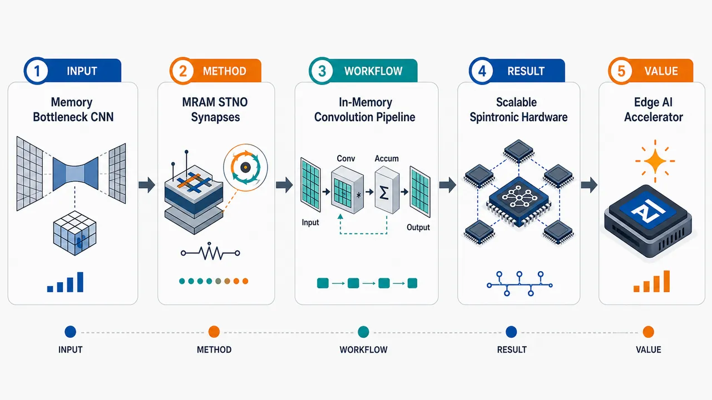
研究问题传统 CNN 硬件在权重搬移、存储功耗和扩展集成上受限：画面可表现为“存储器—处理器”之间拥堵的数据通道，以及需要把卷积权重直接放进存储阵列中计算的需求。创新方法将可重构多态 MTJ-MRAM 作为非易失突触权重单元，并用涡旋 STNO 作为神经元振荡单元，形成“自旋电子突触阵列 + 振荡神经元”的存内卷积计算架构；Aha 点是用 MRAM 的多态、快开关、非易失特性和 STNO 的神经元动力学协同替代传统数字 MAC 路径。工作流程输入图像特征进入 MRAM 突触交叉阵列；卷积核权重被映射为多个 MTJ-MRAM 电阻/磁态；输入电压或电流与突触电导在阵列内完成加权累加；累加信号驱动涡旋 STNO 神经元产生振荡响应；振荡输出再作为下一层卷积/分类模块的神经激活信号。关键结果论文摘要层面给出的结果是：该架构具备可扩展神经形态硬件潜力，支持非易失多态权重存储、快速开关和 CMOS 兼容集成；未提供明确的分类精度、能耗、面积、延迟、吞吐率或芯片实测数据，因此图中应以“性能潜力”而非具体数值柱状图呈现。应用价值可用于构建低功耗、可扩展、CMOS 兼容的存内 CNN 加速器，适合边缘 AI、传感器端视觉识别和神经形态计算芯片；画面可表现为小型芯片直接在存储阵列内完成图像卷积，减少外部数据搬移。核心概览
该论文属于自旋电子器件与存内神经网络方向，提出用多态MTJ-MRAM突触结合涡旋STNO神经元构建可扩展存内卷积神经网络。
方法要点
- 利用MTJ型MRAM的非易失性、高耐久性和快速开关特性实现多态突触。
- 将可重构多态MRAM突触用于神经网络权重存储或调制。
- 采用涡旋自旋转移纳米振荡器（vortex STNO）作为神经元单元。
- 面向卷积神经网络（CNN）构建存内计算架构。
- 摘要未详述具体器件结构、写入机制、训练/推理流程或电路实现细节。
关键结果
- 摘要明确称该工作构建了多态MRAM突触并结合涡旋STNO神经元。
- 目标应用是可扩展的存内卷积神经网络。
- 摘要强调MTJ-MRAM的非易失、高耐久和快速开关特性是该方案的基础。
- 摘要未详述性能指标，如识别精度、能耗、面积、速度、可扩展规模或与基线方法的定量比较。
创新性判断
- 可能的新颖点在于将“可重构多态MRAM突触”和“涡旋STNO神经元”集成到同一存内CNN框架中，而不是仅使用传统CMOS神经元或单一MRAM权重阵列。
- 多态MRAM突触有望支持多级权重表达，适合神经网络计算；但具体多态实现方式和稳定性摘要未详述。
- 涡旋STNO神经元可能用于实现振荡型或自旋电子神经元计算机制，相比常规数字/模拟神经元具有潜在低功耗或高速优势；但摘要未给出验证数据。
- “可扩展”是论文声称的目标或特征，但摘要未提供扩展性论证、阵列规模或系统级评估，因此其创新强度仍需依赖全文确认。
-
19
💡 亮点：视觉变换器可处理非规则量热器快速模拟。
📖 展开分析 + 配图
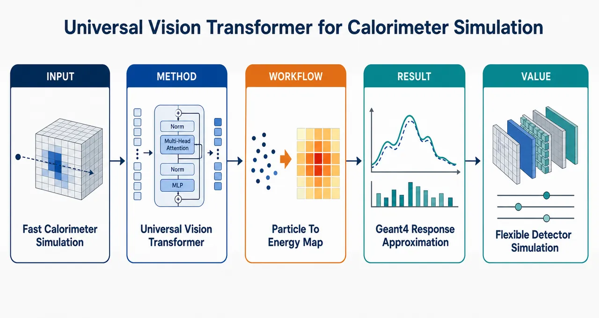
研究问题高能物理实验中，Geant4 量能器模拟精确但计算昂贵；现有快速模拟方法常依赖规则网格或规则几何，难以直接适配复杂、非规则量能器结构。核心问题是：如何快速生成接近 Geant4 的探测器能量沉积响应，同时减少对固定几何形状的依赖。创新方法提出以视觉变换器 ViT 为核心的通用量能器快速模拟框架，并在 CaloDREAM 架构基础上扩展。Aha 点是将量能器响应视为可由注意力机制建模的视觉化探测器信号，使模型不再只绑定规则像素网格，而是面向更通用的探测器几何响应学习。工作流程输入入射粒子条件与量能器几何/探测器单元信息，经视觉变换器编码全局能量沉积关联；模型学习 Geant4 产生的探测器响应分布；推理阶段直接生成量能器各单元的模拟能量沉积图样，输出快速近似的探测器响应。关键结果该框架可用于快速量能器模拟，目标响应对齐 Geant4 探测器模拟；相较依赖规则几何的既有方法，论文强调其可突破规则结构限制，面向更复杂量能器布局。摘要未给出具体速度提升、能量分辨率或物理分布误差等定量指标。应用价值可为高能物理实验提供更快速、更灵活的量能器响应生成工具，降低大规模蒙特卡洛模拟成本；对于未来复杂探测器设计、非规则几何量能器优化和海量事件生成具有实际意义。核心概览
本文属于高能物理探测器快速模拟方向，提出一种通用视觉变换器用于量能器响应生成，可近似 Geant4 模拟，并尝试突破规则几何限制，扩展 CaloDREAM 类方法。
方法要点
- 使用视觉变换器（Vision Transformer, ViT）作为量能器快速生成模拟的核心模型。
- 目标是生成或逼近量能器对粒子入射的响应，以替代或加速 Geant4 级别模拟。
- 方法强调“通用性”，即不依赖规则量能器几何；具体几何表示方式摘要未详述。
- 该工作被描述为对 CaloDREAM 类方法的扩展；具体扩展机制摘要未详述。
关键结果
- 摘要明确称该方法可逼近 Geant4 响应。
- 摘要明确称该方法不受规则几何限制。
- 摘要表明其适用于快速量能器生成模拟。
- 具体精度指标、速度提升、数据集、粒子类型、能区范围和对比实验摘要未详述。
创新性判断
- 可能的新颖点在于将视觉变换器用于更通用的量能器快速生成模拟，而不仅限于规则网格或规则几何结构。
- 相比 CaloDREAM 类方法，创新可能体现在对几何适应性的增强，使模型能处理更复杂或非规则量能器布局。
- “通用视觉变换器”可能意味着模型结构或输入编码具备跨几何泛化能力，但摘要未详述，需全文确认。
- 其实际创新幅度依赖于与现有生成模型、扩散模型、流模型或 CaloDREAM 变体的系统比较；摘要未提供足够信息。
-
20
📊 含图深析
💡 亮点：Cu Zr 玻璃热力学态可由局域基元识别。
📖 展开分析 + 配图
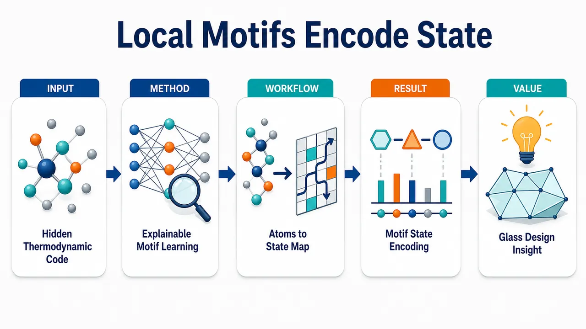
研究问题在 Cu-Zr 金属玻璃形成成分范围内，原子尺度的局域结构基元是否携带足够信息，能够表征或预测材料的热力学状态；核心画面可表现为无序金属玻璃原子团中隐藏着“温度/能量/状态”信号。创新方法使用可解释机器学习把局域短程结构基元与热力学状态直接关联，不只进行黑箱预测，而是识别哪些原子排列模式在编码热力学状态；Aha 点是将局域结构从几何描述符提升为可解释的热力学状态变量。工作流程输入 Cu-Zr 金属玻璃形成范围内的原子结构数据，提取局域结构基元作为描述符，送入可解释机器学习模型建立结构—热力学状态映射，再通过解释分析突出关键结构基元，输出可表征热力学状态的短程结构特征图谱。关键结果研究发现局域结构基元与热力学状态存在明确关联，短程原子排列能够编码 Cu-Zr 金属玻璃的热力学状态信息；结果支持用局域结构作为状态变量来描述该体系，而不仅是静态结构标签。应用价值为金属玻璃结构—性质关系提供可解释桥梁，可用于从原子结构快速判断热力学状态、辅助理解玻璃形成机制，并为成分设计、状态调控和性能预测提供结构层面的可视化依据。核心概览
论文用可解释机器学习研究 Cu-Zr 金属玻璃形成成分范围，表明局域结构基元可编码热力学状态并区分玻璃形成条件。
方法要点
- 采用可解释机器学习分析 Cu-Zr 金属玻璃形成成分范围内的结构—状态关系。
- 将“局域结构基元”作为关键表征，用于关联或预测体系热力学状态。
- 通过可解释性分析识别哪些局域结构特征与不同玻璃形成条件相关。
- 具体机器学习模型、结构描述符、数据来源与训练细节：摘要未详述。
关键结果
- 局域结构基元能够编码 Cu-Zr 体系的热力学状态。
- 局域结构信息可用于区分不同的玻璃形成条件。
- 研究覆盖 Cu-Zr 金属玻璃形成的成分范围。
- 定量性能指标、具体可区分的条件类别、代表性结构基元类型：摘要未详述。
创新性判断
- 可能的新颖点在于：将可解释机器学习用于揭示 Cu-Zr 金属玻璃中“局域结构基元—热力学状态—玻璃形成条件”之间的联系。
- 相比仅做黑箱预测或传统结构统计分析，该工作强调可解释性，可能能指出哪些局域结构特征承载热力学信息。
- 其创新程度取决于所用模型、解释方法、结构基元定义及与既有 Cu-Zr 金属玻璃研究的比较；这些摘要未详述，因此只能作有限判断。
-
21
💡 亮点：EVE 将总动量本征性硬编码进连续神经量子态。
- 22
- 23
- 24
- 25
- 26
- 27
- 28
- 29
-
30
💡 亮点：摊销采集降低自适应哈密顿量学习的控制延迟。
- 31
-
32
💡 亮点：Cd₃As₂ 薄膜的应变和磁场效应被统一进 k·p 模型。
-
33
💡 亮点：轨道非幺正超导可产生量子几何反常霍尔响应。
- 34
- 35
-
36
💡 亮点：测量驱动动力学拥有独立的非厄米拓扑分类。
-
37
💡 亮点：边界相互作用缺陷可在 XXX 链诱导准局域边缘模。
- 38
-
39
💡 亮点：纳米结构磁绝缘体块体可实现跨尺度自旋 Seebeck 转换。
-
40
💡 亮点：太赫兹超流密度指向钐镍酸盐洁净 d 波配对。
- 41
-
42
💡 亮点：AlN-AlScN 成分梯度缓解超薄铁电失效。
- 43
- 44
- 45
-
46
💡 亮点：中子散射首次明确观测可切换手性磁振子。
- 47
-
48
💡 亮点：多谱学厘清 α-MnTe 对称性和声子指认。
- 49
- 50
- 51
- 52
- 53
- 54
- 55
- 56
- 57
- 58
- 59
- 60